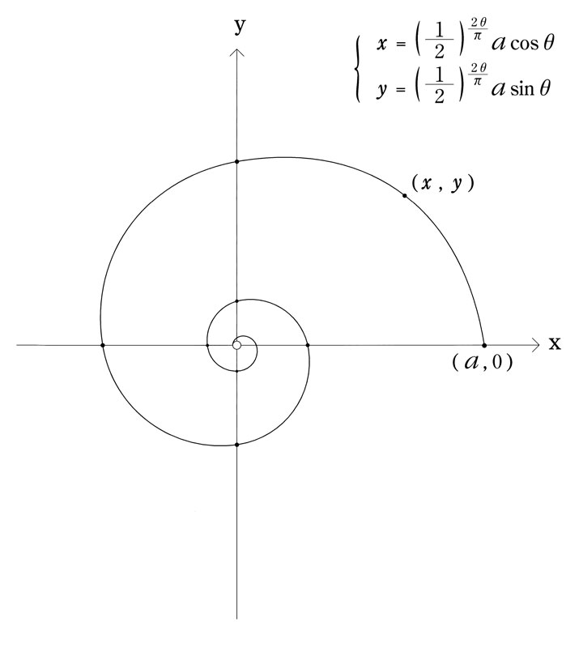

| 煙か土か食い物 (講談社文庫) | |
| 舞城王太郎 | |
| 講談社 (2004) | |
煙か土か食い物
Smoke, Soil or Sacrifices
舞城王太郎
サンディエゴにはおよそ三百万人の市民が住んでいるが、そいつらがどういうわけだかいろんな怪我や病気を背負い込んでホッジ総合病院にやってくるから、ＥＲにいる俺は馬車馬三頭分くらいハードに働いてそいつらを決められたところに追いやる。チャッチャッチャッ一丁上がり。チャッチャッチャッもう一丁。やることもリズムも板前の仕事に似ている。まな板の上の食材を料理するときのチャッチャッチャッチャッ。板前と違うのは奴らが切り開いたり切り刻んだりするだけのところを、俺達は最終的に全部元通り縫い合わせてしまうっていうところだ。何かを一旦メチャクチャに傷付けてそれをまた元通りに戻すなんて作業をするのはこの世で外科医くらいのものじゃないか？多分そうだ。俺はこの仕事が好きだ。人の怪我を治せることが嬉しいんじゃない。忙しいからだ。俺は忙しく働いて手を動かしながら歩き回ったり走り回ったりするのが好きなのだ。俺は腕がいいからチャッチャチャッチャと目の前の仕事をこなしている間にいくつか立て続けに命を助けることがあるので、そうなると自分が神になったような気がしてくる。この世の唯一神というわけじゃない。ギリシャ神話やローマ神話に登場するような大勢の神の一人だ。医療の神。治癒の守護神。どんな奴でもかかってこい。俺は寝台の上の血 塗 れの男を切って切って切り開いて切り散らかして最後に縫い合せて元通りの形に戻してやる。呼吸は少ないが脈は十分。念のためにアトロピンを打たせてまた一丁上がりだ。俺は神だ。ホッジ総合病院の腕利きブレード。でもとてつもなく眠くなるときもある。廊下の隅でカルテを読むふりをしながら立ったまま眠っていると看護婦が俺を蹴る。リタ・バスケス。俺はリタを暗い場所に連れ込んで中指を突っ込んで無茶苦茶に動かしながら目をつぶってちょっと眠る。リタは眠っている俺に気づいて怒りたいけど中指が気を散らしてしまって怒れない。代りに俺の耳を吸う。俺は煩 わしさを我慢して眠り続ける。腕 を動かし続け、耳を吸われながらも俺は眠ることができる。簡単だ。自分が行ない行なわれているいろんな動きを無視すれば良いのだ。コツさえ摑 めばできる。誰にでもは無理だが、そもそも本当に誰にでもできるものなどないんだ。食事だって排 泄 だって睡眠だって呼吸だって、できない奴にはできないのだ。
ポケベルを鳴らされてリタから中指を抜いて俺はエレベーターに乗って上の手術室に行く。今朝の二度目の虫 垂 炎 手術だ。今日はその次も二つほど別のオペの予定が入っている。何のオペだっけ？一つ目を思い出す前にエレベーターが止まり、ドアが開く。俺を見つけてチーフのスティーブ・クードローが「シローここじゃない。お前は家に帰れ」と言って俺をエレベーターに押し戻す。「何言ってやがるんだよ」と言う俺は胸がドキドキする。病院の内外でこれまでにやったいろんな悪さが頭をかけ巡る。どれがばれたんだろう。家に帰れ？俺はこんなふうに唐突にクビにされるのか？訴訟の手続きについては大した知識がない。弁護士の友達なんてものもいない。スティーブは怪 訝 そうな顔をする。「よう、まだ誰からも聞いてないのか？お前のママが頭部に怪我を負って重体だそうだ。今は大学病院の集中治療室に入ってる。だからお前はそのでかくて重いケツを日本に運んでママの様子をみてこいと言ってるんだよ」。俺は呆然とする。「何だって、おふくろが？」。しかし驚きはあまりない。具体的に予想はしていなかったが、こういうこともありうるのだと思っただけだ。「くわしいことは俺も知らないんだシロー。ただクリティカルなものではないそうだ。気持ちを落ち着けてとにかく早く帰れよ。飛行機はまだあるはずだ」。でも俺は盲腸を切るつもりをしてるんだ。あと三つ四つオペをこなしてからでも遅くはないだろうクリティカルなものでないなら。まごつく俺を力ずくでエレベーターに押し込めてスティーブは言う。「お前にはちょっとばかし休みが必要だよ。日本に帰ってしばらくママの面倒をみて、ちょっとゆっくり寝てこい」。俺は神だ。しかしさっきも言った通り唯一神ではない。医療の神だって他にも大勢いる。スティーブだって腕は悪くない。俺に休めと言いつけるタイミングだって悪くない。こんなふうに自分以外の医者の身体にまで注意を払うことができるのでスティーブはチーフなのだ。俺はおとなしくエレベーターに収まり、閉まるドアの向こうのスティーブに敬礼をしてみせる。アイアイサー。アイムゴウインバックトゥジャパン。それから俺は舌打ち。くそ、おふくろが頭に傷を負ったって？俺はロッカーの上着のポケットから携帯電話を取り出してメールを確かめる。兄から一件だけ短いやつが入っている。「母が怪我した。できれば戻れ。一郎」。これじゃ昔ながらの電報だ。しかしひさしぶりの日本語。ひさしぶりの一郎。懐かしくはない。顔も見ていないうちからうんざりさせられる。でもとにかくおふくろが怪我をしたのなら帰らなくてはならない。しかし頭に傷とは一体何があったんだ？俺は白衣の上に上着を着てロッカールームを出て、リタとすれ違ったが無視して駐車場のポルシェに乗り込み携帯をダイヤルしながらイグニッション・キーを回す。ＥＲに突っ込んでくる救急車をギリスレでかわしながら空港の予約カウンターで一番早い便をとって自分が日本にマジで帰ることを実感する。西海岸時間の今日のうちには福井入りだ。ようマジにマジなのかよ。二年ぶりの日本だ。ここでうっかり父親の顔（あの三日月形の頰 の傷）を思い出して俺は超ブルーになる。丸 雄 め、まだ生きてやがるのか？どうして丸雄じゃなくておふくろが重体なんだ。頭に傷？どうして頭に怪我をしたりするんだ。丸雄のせいか？丸雄がやったのか？そうに違いないとも思うし、それはありえないとも思う。それは今のところ判らないが帰れば判る。現在の向こうの状況がつかめないが日本に電話するつもりはない。逼 迫 した状況を聞いてもこれ以上急いで帰ることはできないし、アメリカにいるうちに俺がおふくろのためにしてやれることなど何もないからだ。特に運悪く丸雄が受話器をとる可能性がおぞましい。俺は吐き気をもよおす。頭も実際に痛くなる。インソムニア・ハイにとらわれて奇怪な行動を起こす前に飛行機で寝ておこうと思う。時速百二十マイルで朝のハイウェイをかっ飛ばしていたポルシェが中央分離帯に激突しそうになるが、それが俺の頭でグルグル巻かれた長さ百メートルのターバンみたいな眠気のせいだかどうだか判らない。俺はひょっとして俺の知らないうちに動揺しているのかも知れない。動揺は俺の背後で蛇 のようにとぐろを巻きながら俺の首筋にかみつくタイミングを計っているのかも知れない。俺は叫び出したいのをこらえてカーステレオをつけるとＦＭでハンソンとかいう子供バンドがラブソングを歌っている。声変わりしていない子供のはりきった歌声。「僕の一日は千四百四十時間あるみたいだ......」。一日が千四百四十時間＝二十四時間×六十＝二ヵ月。俺のサンディエゴでの一日もそんな感じだ。特に夜眠れなくなってからは。あの地獄のようなハードワークをこなしていた感覚とかリズムとかを福井に帰って狂わせてしまうのが面倒で億 劫 だ。帰ってもろくなことはない。しかし何はともあれ帰らないわけにはいかないし空港に向かう途中で激突死するわけにはいかないので少しスピードを落としてハンソンと一緒に歌うことにする。「君のことを考えずにはいられない／なぜなら僕は君のことが好きで、それが本物だって知ってるからだ。／死に物狂いと言えるくらいだ。僕の目に浮かんで見えないかい／太陽が空から墜ちてくるまで君と一緒にいたいってことが？」。いいじゃないか。ベリーキュート。俺は笑い出す。俺はハンソンが気に入って空港の中のＣＤショップでアルバムを探し出して買ってついでにレジの店員に五百ドル渡して彼女の私物のポータブルＣＤも買い上げてしまう。「返品はきかないわよ」。それからチケットカウンターでファーストクラス航空券を差し出した女が俺の手のＣＤジャケットを見てにっこり笑って「私の妹もそれを持ってたわ。彼らってかわいいわよね」と言う。「歌詞がいい」と俺は言う。「そうね。その三人兄弟、詩も曲も自分たちで書いてるのよ」と女は俺に教えてくれて俺は更にハンソンのことが好きになる。イエス。これはアイドル歌謡だ。歌ってる奴らもまだ子供だ。でも誰かを好きになった気分をこんなふうに大げさに歌いあげながら同時にリアルでいられる奴らが他にどこにいる？一日が千四百四十時間あるみたいだなんて数字を天から摑む奴らが他にどれだけいるってんだ。大体このアルバムのタイトルだってありきたりだけど超いいじゃないか。ミドルオブノーウェア。どこでもない場所。大体今俺のいる場所だってどこなんだ？空港の中に決まってる。でもそれはどこかではない。どこか俺のいるべき場所であるわけじゃない。それはどこでもいい場所だ。俺はここにたまたまいるだけでここにいるべくしているんじゃない。俺の心はこんなところでは休まらない。俺はもうすでにＥＲに戻りたくなってる。トンボ返りして何食わぬ顔をして予定されていたオペに混じってチャッチャとこなしてリタにもう一度指を突っ込んでその気になればどこか別の場所にしけこんで本番を楽しんだっていい。そうしたほうがいい気さえする。それが本来の俺のやるべきことじゃないのか？しかし自問も虚しくチケットを手に握ったまま俺はゲートをくぐって白衣を上着の下で海風にあおられる帆先の旗みたいにビラビラと振りまきながら通路を渡って飛行機に乗り込んでしまう。シートに着く前にスチュワーデスが何か言ったが俺には理解できない。俺はまたポータブルＣＤのハンソンに集中する。バス停に居た訳の判らない男が実は宇宙人だったって内容の曲があって俺はまたニヤリと笑う。「僕は知ってる、いつか彼らは僕を連れにやってくる／いつか彼らは僕をどこかに連れていってしまう／それは明日かも知れないし今日かも知れない」。ヘイ、これっていいじゃないか？
シートに落ち着いてふうと息をついたところで俺は思いついてガールフレンドたちに連絡を入れる。まずはマリア。マリア・デル・テオ。小児科クリニックの経営者。おふくろが何者かに暴行を受けて病院に運び込まれて重体だという話をするとマリアはおふくろの心配をしてくれるのだが「オー・ガッド」「ジーズ」と連発して盛大に盛り上げてくれるのに飽きて俺は電話を切り、すぐさまフェリシティ・画家・オコナーにダイヤルする。おふくろの怪我の話をするとフェリシティの反応もマリアと似たようなもので「ノー」を連発しやがる。何が「ノー」だこの野郎。もうこいつは駄目だな切り捨て時だどうやって別れ話を切り出そう？いつも通り《「もう会う意味が見当たらない」爆弾》を落として放り捨ててしまえばいいのだろうか。でもフェリシティは本当は気のいい奴だ。それに背が高くてスタイルも良くて見た目にはフェリシティ以上の女を探すのはちと一苦労だしベッドの中のことを思うとまだ少し未練も可能性も残ってるのでこれは再考の余地があると思い直しながらフェリシティの「いつ帰ってくるの？」攻撃を「まだ判らない」と言い続けて一方的に電話を切ってしまう。次に俺はヴィクトリア・シェファー（小学校教師！）に電話をして「しばらく日本に行く」と言うと理由も尋ねずに「いつ帰ってくるの」と訊くので「すぐに」と答えると「そう」と静かに言うから「帰ったらまた電話する」と言うと「判った」と言って電話が切れる。イッツＯＫ。多分生 真 面 目 なヴィッキーはいろいろ俺とのことで悩んでいるんだろう。静かに言ったあの「そう」に「もう帰ってこなきゃいいのに」って気配がありありとにじんでいて俺は嗜 虐 的な気分で嬉しくなる。そんなに悩むなよヴィッキー俺との関係からはどうせそう簡単には抜け出せないんだぜ。そもそもの話刺激に満ちためくるめくセックスを開拓したのはしかし俺ではなくてヴィクトリア当人だ。自分から望んでハマった罠だし穴なのだ。飛行機が滑走路に出て離陸の準備が万端になって加速を始めて俺は残ったガールフレンドに連絡することが面倒くさくなって放棄してしまう。あと誰が残っていたっけ。フィオナ・ブライエン（ヴォーグ誌のエディター）とジェシカ・ハーパー（役者の卵。本当は一介のウェイトレス）だ。うんざりだ。ああもう一人リタ（耳を吸う看護婦）もいた。もう少し時間が経ってもしその気になればそいつらにも電話をかけてもいい。でも今はもうたくさんだ。俺はもう一度イヤホンを耳に突っ込みハンソンをランダムプレイで聞き直すことにして目をつぶる。俺は眠らなくてはいけない。
これでもう二週間近くまともに寝ていないんだ。
人生は混 沌 としていて文脈も主題もなく連続性すら時として失われてしまう。そこにはそもそも理由も原因も根拠もなく結果も帰結も結論もない。それはまるでとてつもなく眠いくせに妙に興奮している小学生のだらだらした独り言のようなもので注意して確かめればあらゆる種類の馬鹿げたことや驚嘆すべきことや退屈でありふれたことが脈絡なく羅列されていることに誰だって気づく。曖昧さと混乱、それが結構人を疲れさせるのだ。俺は中学の時に誰かの家の本棚から失敬してきたダンテの『神曲』（岩波文庫）を好み、折に触れて読み返しては人生の鍵や鍵のふりをしたものや何でもないが意味有り気な言葉を拾い挙げて心の隅に留めておくことにしている。こういうものがふとした場面でピカリと光って俺を導き俺を俺の窮 地 から救ってくれたり救ってくれたような気分にさせてくれたりするので重宝だ。特に気に入っているのはやはり第三巻「天堂編」で第四曲などこの間老人の腰を切り開いているときに一通り暗唱して自分だけ気づかなかったくらいだ。日本語でブツブツと何やら意味不明な言語を唱え出した俺を周りのスタッフが奇妙な目で見たりお互いに目配せしたりしていたが俺はそれにも気づかずに医療の神としての全能性を発揮していた。「我は目を垂れつつ殆ど我を失えり」。ダンテ・アリギエリは十八歳でベアトリーチェに恋をして、その思いを三十年書き続けてこの壮大な詩編に仕立て上げた。これが情熱でなくして何であろう？俺が平均年齢十二歳程度のハンソンを信用するのもダンテを信用するのと同じ理由からだ。十代の青くさい奴らの言葉や気持ちにも長い時間を生き残るのに十分なリアリティがちゃんと存在しうるのだ。俺によって腰を切り開かれた老人は傷が縫い合わされるまでに六回心臓が止まったが六回蘇生して結局命を取り留めた。ミラクルと皆は言ったが俺は自分が何をやったのか詳しくは憶えていなかった。俺が憶えているのは手術中ずっと自分の暗唱していたダンテの詩だけだ。
「等しく隔たり等しく誘う二の食物の間にては、自由の人、その一をも歯に触れざるさきに飢えて死すべし」
人間は何かについていつまでも迷っていてはいけないというわけだ。
俺は眠いし眠りたいし眠らなくてはいけないのにどうしても眠れない。あきらめてスチュワーデスに水を貰い持参している精神安定剤を七粒飲んで、俺はそばに座っていた中年女が目を丸くしているのに気づく。得体の知れない黄色い錠剤が七粒も俺の口の中に入って身体の奥に収められることに驚き、女は余計な警告をしたがっている。こういう神経質な輩 はこれが栄養剤であるとしても同じような顔をするだろう。薬などに頼ることはすなわち堕落ないし怠 惰 であると一方的にみなす奴らだ。他人のことを勝手にどうとでもみなすが良い。俺は女ににっこり笑いかけて精神安定剤を差し出して「あんたも飲んでみるかい」と勧める。それは何かと問うので「ヴィタミンだ」と噓を教えるとやっぱり「私は無闇に薬は飲まない主義なの」などと言って断りやがった。興味もないならどうしてこれが何かなどと訊きやがったんだと俺は思う。まあいいさ。俺は錠剤を瓶ごと女に叩き付けるのを思い止まり懐にしまってリクライニングを倒して目をつぶる。そのうちすぐに眠くなってこの十三時間のフライトがあっと言う間に終わってしまうに違いない。
しかし予想に反して俺は二時間ばかりうとうとしただけで残りの約十一時間を起きてるんだか眠っているんだか判らない境界線の内側と外側をふらふらし続ける。信じがたい。七錠の精神安定剤はいったいどこに消えてしまったんだ？俺は覚醒と睡眠の境界線の上でピアノの調律法についてしばらく記憶を探り架空の敵を設定してボクシングの防御と攻撃を細かくシミュレートして自分のスタイルと効率について確認して時間を費やす。ふとした拍子に俺の脳におふくろやおふくろと俺やおふくろと俺と俺の兄弟の思い出が浮かび上がろうとするのでそれを何とかこらえているのだ。
メディカルスクールに通っていた頃同時にボクシングジムに通っていたことがあって俺はボクシングの一通りのテクニックを身につけている。俺は左が強くてなかなか筋が良かったはずだがボクシングの世界にディープにはまりこむことは俺の暴力性に歯止めを利かなくさせるだけじゃないかと本能的に恐れて止 した。俺は自分が暴力的になることが恐い。俺は取り返しのつかないくらいをとっくのとうに過ぎたくらいに何かを完璧にブチ壊してしまうことを恐れている。俺は多分内なる恐怖をたくさん抱え込みすぎているのだろうと思う。自分の受けるかもしれない暴力や苦痛や死。こういった人間本来持っている根元的な恐怖を俺は必要以上に怖がっているのだろう。自分の抱えた強烈な恐怖が他人に対する強烈な暴力を生む。俺は恐怖も暴力性もちょっと抱え込みすぎているのだ。それがいったん表に出たらこの地表をひっぺがしてグルグル簀 巻きにしてポイと捨ててしまうくらいのことはやりかねない。火山のてっぺんに手を突っ込んでベリベリ火口を引き裂いて広げて中から飛び出したマグマをごくごく飲んでしまうくらいのことだってやりかねない。まあそれができなくても周りの人間を楽しくない目に遭わせてやるくらいはする。俺がボクシングから学びたかったことは俺の抱えた暴力を統制するための様式だ。単なる破壊願望に様式を仕込んで洗練させて一つのアートにしたかったのだ。ほどほどというものを知り、手加減の施し方を知り、ルールを知って俺はファインボクサーになった。そこでボクシングジムをやめた。きっかけはクレイジー・グランマ（頭沸 いてるおばあちゃん）という仇名の黒人プロボクサーだった。ある日スパーリングに誘われて俺を嘗 めてニヤニヤ笑っていたそいつを皆の目の前でぶっ倒してやったらそいつが実はギャングだったらしくて次の日に仲間五人とそいつがそれぞれ拳銃片手にジムにやってきたから俺はグラブをはめたまま一目散にジムを飛び出してもう二度とジムに近寄らなかったのだ。グランマは単純に負けたことに怒っていたのではなく俺がつま先を踏んだことに怒っていた。確かに俺はわざとあいつのつま先を踏んで一瞬足を殺した隙に一発ぶちこんでそれからラッシュであいつをマットに叩きつけてやった。しかし俺のテクニックはとてもシャープだったから周りで見ていた誰も俺のやったことに気付かなかったし、それくらいの反則行為はプロの試合なら当然あるものだ。そんなことでいちいちトサカにきて拳銃を持ち出しているようではプロのボクサーとしてやっていけないだろうに。それに俺のやったことは確かに反則行為だったけど鮮やかな種類の反則行為だったのだ。逆にいい勉強をしたと喜んでくれたって良さそうなものだった。なのにあいつは安っぽい原色のウインドブレーカを着込んだ仲間五人を引き連れてやってきて俺に銃を向けて引き金を引きやがった。バリバリバリバリ！仲間の一人の持っていた銃はウージーだった。なんて奴らだ。リングから逃げ出した俺はグラブとヘッドギアを付けたまま半裸で通りを駆け抜け道行く人々の喝采を浴びた。俺は立ち止まってうやうやしく礼をしてやろうかと考えたが勿論そんな阿呆なことをせずに走り去った。俺はやっぱりウージーと他の五つの銃が恐かった。
ピアノの調律方法は二 郎 に習ったのだ。しかし具体的なやり方をほとんど忘れてしまった。どうやったっけ？うまく思い出せない。やり方の大まかな部分は大体憶えているが、細かい感覚が思い出せない。今はもうピアノのことはあまり憶えていないのだ。俺がはっきりと憶えているのは俺のそばにいた二郎の彫刻みたいな横顔や固く尖 っている肩や長い腕の線だ。あのときの二郎は十四歳で、珍しく無傷だった。俺は十一歳だった。夏で二人ともＴシャツを着ていて二郎の細くて長い腕がまくり上げた袖口からシュウッと伸びていてその指先が家のグランドピアノに掛かっていて二郎の日焼けしていない白い腕と黒い大きなピアノの色彩的コントラストが鮮やかだった。しかし俺が思い出すのはそんな映像的断片ばかりでピアノのいじくり方なんてさっぱり浮かんでこないので諦めてしまう。
俺はシートに座っていること自体に耐え難い苦痛を感じ始めて困る。上空六千メートルなんてところでパニックを起こしたくない。俺が飲んだのは精神安定剤だったはずなのに、どうしてパニックがやってきたりしそうなんだ？俺はいったい何を飲んでしまったんだ。七粒というのはかえって多すぎたのか。頭がぼうっとする。この苦痛もパニックの予感も結局俺の見ている夢や幻なのかも知れないし判らない。ともかく不安を抱えたままうとうとしているうちに果てしなく長い時間の果てに飛行機が地上にタッチする。機内放送も他の乗客の動きも無視して眠り続けようとする俺を日本人スチュワーデスが起こしに来る。「すいませんお客様。当機は成田に到着いたしました。お体の具合でも優れませんか？」
「平気だ、ありがとう」
「よくお休みのようでしたね」と言ってスチュワーデスは笑う。
よくお休みのようでしたね？
何を言ってやがるんだと俺は思ったがそんな気持ちはおくびにも出さずに俺もにっこり笑って「快適な空の旅を本当にありがとう」と言うとスチュワーデスは俺の言い回しと棒読みに意表を衝かれたらしく一瞬目を丸くしてから俺の台詞の何が心に響いたのか判らないが本気で嬉しそうに笑う。それからそのスチュワーデスはちょっとその場を立ち去りにくそうにしていたが俺がハンソンのアルバムケースとポータブルＣＤを持って立ち上がってシートを離れ際にニコッと笑いかけるとそれで満足したらしく向こうもニコッと笑う。
成田からライナーで東京に向かうと巨大な磨 りガラスみたいに白く平板だった空から冷たい埃 が落ちるように雪が降り始めた。これがこの冬最大の寒波の到来でこれから東京地方はしばらく雪が降って大雪になる恐れがあるそうだ。でも日本海側の福井は晴れているらしい。東京が雪で福井が晴れ。こんな天気だってありうるのかと俺は意外に思う。いつも雨か雪が降っているような印象の福井なのに。
東京駅から新幹線で米原まで行く間ずっと空は曇っているが落ちてくる雪が雨に変わりその雨がいつしかやんで米原から特急に乗り換えて福井に入ると途端に曇り空が切れて晴れ上がってきてまるで魔法みたいだ。西の魔女のいたずらにでもつきあっているような気がする。敦賀を過ぎて西暁に入ると田 圃 の畦 道 にしがみついていたみじめったらしい雪がきれいさっぱり消えてしまう。噓みたいだ。俺は自分の乗った列車がタイムマシンで俺を春の世界だとかそういった場所に連れてきてしまったのかと疑う。
でもそんなもの幻覚で春の世界なんてさっぱりきてなくて電車を降り立った俺は確かに福井の真冬に含まれていることを知る。空気は細かい針でもたくさん浮かんでいるみたいに肌をキリリと冷たく刺して俺は雪がないのを不思議に思う。これじゃ雪が降っていたほうがまだ暖かそうな感じだ。雪は少なくとも柔らかいからな。この空気はちょっとキリリと冷たすぎるし気体なのに固くて身体を動かしにくい。水圧を消去された湖の底でも歩いているみたいだ。まったく。福井の冬はこんなにフリージングコールドだったか？これは異例の冬だ。まったく。
西暁駅に下り立った俺は寒すぎる寒さをやり過ごしながら嫌でもないし楽しくもない夢でも見ているような気分をやり過ごす。目に映るもの全てが非現実的だ。何年たっても変わらない西暁の駅の外観も不思議だしホームの周りを取り囲んでいる線路脇のスチール製広告看板だって半世紀前に駅ができた当初からずっとそこにあるみたいだし待合室のベンチに座るジャンパー姿の婆さんたちだってもう二百年くらいそこにじっと座り続けているように見える。変化と言えば自動販売機に並ぶ缶ジュースの銘柄ではなくてパッケージデザインが新しくなっていることくらいだし（ファンタ・コーラ・ＵＣＣコーヒー・ウーロン茶）《今》のものといえば待合室の隅のキヨスクに並ぶ雑誌新聞くらいだ（少年ジャンプ・少年マガジン・週刊実話・福井新聞）。それらが唯一のコンテンポラリーなのだ。俺は自分の姿を見下ろして《俺》を確認した。アルマーニのコートとその下のホッジ総合病院スタッフバッジ付き白衣。俺は確かにサンディエゴから飛んでやってきた奈 津 川 四郎だ。しかし俺の連続性はまたしてもどこかで途切れてしまったみたいだ。アメリカ・サンディエゴから福井県・西暁町に至る道程のどこかで。
次は俺達が中学二年生の時に受けた社会科のテストのうちの一題である。
問 十五世紀、イタリアのフィレンツェで始まった古典古代文化再発見の運動とは。
きまぐれな神によって細身の身体と伸びた手足と丸い目と厚い唇を与えられて外見を整えられたかわりに脳味噌を他人より少なくとも45 ％減らされたらしい高 谷 義 男 は中学二年生の社会のテストで右の問題が出題されたとき「ルネッサンス」ないし「ルネサンス」と答えるべきところを「ルパン」と答えて自分の仇 名 を決定的にした。高谷ルパン。そのまんまだ。命名したのは同級生の白 碑 将 美 だった。その頃の白碑将美はニヒルにふるまいながら時々唐突にとてつもなく面白い馬鹿を言うような奴で人に仇名を付けるのがうまくて高谷義男の歴代の命名はほとんど白碑の仕事だった。でもそれらは楽な仕事だったはずだ。白碑の付ける仇名は絶妙ながらも大抵そのまんまだったからだ。
高谷が自分の答案をこそこそ隠している。めざとい三 本 杉 篤 史 が高谷の怪しいふるまいに気づいてそっと近づいて背後からさっと答案を奪って高谷の恥ずかしい間違いを見つけて暴露する。「おえ高谷ー、おめえ十五世紀にイタリアで始まった文化革命の名前はルパンじゃねえぞー」。ゲラゲラ。「ルパンは怪盗や」。ゲラゲラ。「これじゃ《ル》しか合ってねえ」。ゲラゲラ。それから白碑がニヤリと笑って「次からは教科書読めよ、高谷ルパン」と言う。ゲラゲラ。これで決定。高谷はそれまで「奥の細道」と呼ばれていたのに（消防署に勤めている父親の顔が松尾芭蕉の肖像に似ていた）それからはずっと高谷ルパン。高谷ルパンは石川啄木を中国人だと思うような信じがたい馬鹿だからこれくらいの間違いや勘違いは日常茶飯事なのだけど、ルパンと呼ばれるようになってからもいろいろ仇名のネタになりそうな阿呆を繰り返したのに「しょうがねえルパンだなあ」ってだけで流されるようになって《高谷ルパン》は不動だった。
夏に海パン一丁で自転車にまたがり五十キロも離れた海を目指したり（実際に行った。一時間泳いでまた自転車で帰った。家に着いたのは真夜中。日帰りは果たせなかった）秋の下校途中、友達数人と山裾の道を歩いていて突然そばに現われた百姓の影を熊と間違えて一人だけ喚き声をあげ地面に倒れて死んだふりを始めたり、高谷ルパンの阿呆さ加減は世間に広く広まって上級生や先生たちや果てには下級生や小学生たちにまでルパンと呼ばれるようになった。「おいルパン、おめえ何ボーッとしてるんじゃ。校庭五周」「ルパン、ローソンでパン買ってこいや」「ルパン先輩、ごめんジュース買ってきて」。なんてこった。俺は俺の知り合いが下級生にまで嘗められているのが耐えられなくてルパンをパシリに使おうとした一年生をその場で張り倒した。それからそいつの落とした財布を拾って中の現金（四千円程度）を抜いて「俺があとで買うておいてやるわ」と言い捨ててそいつの顔を蹴って去った。廊下に寝っ転がったそいつの兄貴が弟の金を取り戻そうとその日のうちに俺の教室に乗り込んできたがそいつの言葉づかいが気に入らなかったので俺はそいつも叩き伏せてから一応金をズボンのポケットに戻しておいてやった。でも別にこのことが俺とルパンの関係を親密にしたりそれ以外の変化を与えたりはしなかった。馬鹿の馬鹿兄貴が俺のそばに立ってわめき散らしていたときもルパンは別に自分とは関係ないような顔をして俺の加勢に入るわけじゃなかったし、実際俺は俺自身がむかついたからその兄弟を殴り倒したのだ。ルパンはルパン、俺は俺。俺はそのあと三年生に呼び出されても無視して行かなかったのにルパンは律儀に体育館の地下倉庫に出向いてひどい目に遭ってそれから三日くらい学校に来なかった。俺はそのことについても何も責任を感じなかった。ルパンを呼び出して殴る蹴るの暴行を加えた三年の無法者たちはその日、勢いづいて俺の実家に殴り込みをかけて二郎と三郎による返り討ちに遭ってコテンパンにのされてしまった。俺がブラブラ家に帰ってくると正面の門の前にどこかで見たことのある阿呆どもがボロボロになって薪 のように折り重ねられていて、みじめで可哀相だった。俺は家に入って飯を食ったが二郎も三郎も何も言わなかったし俺も気にしていなかった。飯を食べ終わったあとそいつらがちゃんと家に帰ったかどうかを確認しただけだった。帰っていたので良かった。ルパンも四日後には学校に復帰してきてちょっと顔を腫 らして青あざが見えていたけれど、まあ大した怪我じゃなくて良かった。
そして俺が西暁駅を一歩外に出たとき出くわしたのが高谷ルパンでこれも良かった。ここでこの懐かしい馬鹿と出くわさなかったら後の展開がかなり違ったはずだった。
「よう」と俺が言い「どこの病院の患者が慌てて逃げ出してきとんねん」とルパンが言うから「患者じゃねえよ。医者だよ」と言うと「知ってる」と言って「お母さんの病院、福井の北陸医大やぞ」と教えてくれる。ルパンは事件を知っているらしい。俺はルパンに今何をしてるのかと訊いて「別に何も。今日は仕事休みなんや」と言うから暇なら車に乗せて病院まで送っていけと言うとルパンはあっさりＯＫ。ルパンの立派な三菱自動車に乗り込んで西暁の閑 とした国道を走りながらお互い無駄な近況報告などは後回しにしてルパンからおふくろの事件の概要を聞き、俺はそれが連続主婦殴打事件の最新のものだと知る。
「あのなあ、今西暁で何か変な事件が起こってるんやわ」「何よ変な事件て」「連続主婦殴打事件とか言われてるわ」「何それ」「もう五人くらいいろんなところのオバハンらが頭殴られて病院に入ってるんや。まだ誰も死んだもんはおらんらしいけどな」「ってことは、うちの母ちゃんは五人目なんか」「ほうやな」「犯人は」「まだ捕まっていん」「ほうやなくて、一人の仕業か」「それもまだ判らん」「警察は何をやってんのよ」「捜査やろ」「でも何でまだ犯人が判らんのよ。誰も死んでねえんなら被害者の誰かが犯人見てるやろう」「五人中三人まだ意識不明やって。後の二人は何も見てんて言うとるらしいな」「ほんでも何か判るやろ。目撃者とか遺留品とか指紋、足跡、何か残してるやろ」「そんなこと知らん。俺は警察やないでな」「そりゃそうやな。じゃあおめえの知ってる範囲でいいからもうちょっと詳しく話してくれ」「でも俺は本当は何もよく知らんのや」「でも俺よりは何か知ってるやろう」「判らん」「言えや」「言いにくいんじゃ、むごい話やで」「何でもいいよ、はよ言えや」「言えん」「言えって」「言えんって」「面倒くせえ奴やな。いいから言えよ」「あかん、言えん。どうせ病院行ったら奈津川の家族もいるし医者とか警察とかいるからその人らに教えてもらえや」「なんじゃそりゃ。言えや。待ってられんわ。もう何でもいいからパッと言ってまえや」「判った判った、しつこいな。ほんな言うわ。あのな、奈津川のお母さんもそうやけど、五人とも頭殴られた後、家の外に埋められたんや」
俺にはルパンの言ってることが判らない。「何やってか？」
「埋められたんやて。土ん中に」
「どういうことよ。殺されてねえんやろ？」
「ほうや。ほやで、つまり生き埋めやな」
俺は噴火する。発作的にルパンの車の中で暴れる。俺は竜巻になる。ウィンドウを拳で殴りダッシュボードを蹴りつける。特にウィンドウのほうは助手席横のものもフロントガラスも粉々に砕いてしまうつもりだ。ガンガンガンガン！俺の肘 が当たってルパンが悲鳴を上げる。知るか。ファックイット！ファックオール！ファックエヴリシング！ガンガンガンガンガン！
俺が車をめちゃくちゃにする前にルパンが車を脇に寄せて俺を止める。俺も自分の突発的な興奮状態を必死で押さえ込む。目の前が暗くなるような怒り。ここまでのは初めてだ。俺は俺の暴力をルパンに向けそうになり、それも何とか封じ込める。俺は乱暴にドアを開けて車の外に出て、歩道で両手を膝につき、寒さと怒りの両方でぶるぶる震えながら荒く短くなった呼吸を整える。俺は自分の呼吸を訊き、肺と喉と口蓋の間を空気がいったりきたりする音を数え、それをできるだけゆっくりとしたものに調節する。鼻から入ってくる西暁の空気には土と水の匂いしかしない。冷たく湿った匂い。この地のどこかに百億トンの泥のダムでもあるに違いない。泥がどこかに滞留しているんだ。冬の福井。
「大丈夫か？」と車から降りてきたルパンが訊くのに俺は道路に落ちた自分の影を見つめながら「寒い」と答える。ルパンは俺が車の中に脱ぎ捨てたコートを取ってきてくれるが俺は受け取らない。ちょっと待て。俺は呼吸を整えるのに一生懸命なんだ。このクソっ垂れ福井に自分をなじませるのにも必死なんだ。この泥の匂いに馴れるのにも骨を折っているんだ。ルパンは俺のコートを持ったまま道路をはさむ銀色のフェンスに肩をつけてその向こうのさらに遠くを見る。８号線の周りはダイダラボッチの使うキャンバスのようにだだっ広くて平たい田圃ばかりで、冬だから何も育てられていないその土色の田圃の果てに暗い陽 炎 のように民家が見える。それをルパンはぼんやり見るともなく眺めているようだ。俺はそんなルパンにかまわず自分の興奮を押し止めることに集中しようとするが藪 から棒にルパンが「告白するけど、俺浮気してるんや」と言うのでそれもできない。
息も絶え絶えになりながら「お前、結婚してるんじゃなかったっけ」と俺が訊くとルパンはうなずいて「してる」と言う。
「高校時代の同級生やろ」と俺。
「いっこ上の先輩」とルパンが訂正する。
「ふん。妾 は誰よ」
「おめえの知ってる奴ではねえよ。高校生や」
阿呆だなこいつは。本当に阿呆だ。
「ウチの奥さんはいい奴なんやけどな」とルパンは語る。「家事もようできるし料理もうまい。人から美人やと言われるし俺も美人やと思う。頭もいいわ、俺と違って」
「お前ら、子供は？」と俺は訊く。
「一人、今お腹ん中にいるわ」
俺は耐えられずに言う。
「お前は最低最悪の阿呆やルパン。底抜けの大馬鹿や。本物の救いがたい猿や。一体全体何だって高校生なんかに手え出さんとあかんのやって」
するとルパンは言う。「ウサギ......その子の名前やけどな、ウサギには何かがあるんやわ。何かええんやわ」
「ウサギ？何ウサギ」
「山 口 ウサギ」
「名前が変わってるだけや」
「まあな。ほれだけかも知れん」とルパンは認めてしまう。「俺も何がそんなにええんか判らんのや。ほんで追求してる」
俺は溜め息をついてもう何も言わない。馬鹿には何言っても無駄だ。
「どこでその子と出会ったんよ」と俺は訊く。こいつの職場は西暁町役場の地域課だ。そんな場所は女子高生とは関係ない。
「俺の奥さんは精神科の先生なんや」とルパンは言う。「福井に自分のクリニック持ってる。ウサギはそこに通うてる患者」
「つまり、奥さんの患者に手え付けたってことか」
「ほうやな」
俺は無駄だと知りつつ言ってしまう。「おめえ完璧に頭おかしいわ。今度マジに奥さんのセラピー受けてみれや」
ルパンは俺の忠告を冗談だと思ったらしくて少し笑ったが俺はコンクリートみたいに真剣だった。こいつはとんでもない間違いを犯しながら取りかえしのつかないところまで来てしまってもまだそれに気付かなそうな馬鹿だぞ。まともな奥さんとそのお腹の中の赤ちゃん。馬鹿なルパン。しかし俺は溜め息をつく他なかった。何を言っても無駄だ。ルパンは果てしない大馬鹿だからだ。
「もう平気やろ、車に戻ろう」とルパンが言う。俺とルパンは再び車に乗り込みシートベルトをかける。車が出発して俺はルパンに確かめる。
「俺のおふくろも殴られて土ん中に埋められてたんやろう。どうやって助かったんや」
「ポリ袋で頭包まれててその隙間に少し空気が残ってたのと、土から手の平とか出てたんやって。それを奈津川のお父さんが見つけて掘り出したらしいわ。見つけるのがわりと早かったのも良かったらしいな」
俺は深く息をついて「ほうか」とだけ言った。丸雄がおふくろを助けたのか。そうか。
俺の祖父奈 津 川 大 丸 は政治以外の何もしなかった。何も作らなかったし何も売らなかった。大丸は十代の後半と二十代の前半を代議士松 阪 陽 平 の秘書として過ごした後、福井県議会の議員を二期務め県知事を一期務め中央政界に名乗りを上げて自民党員として八年間代議士を務めて突然自殺した。その四十四年の生涯のなかで恩師松阪陽平の孫娘松阪龍 子 と結婚して丸雄を作りそれから二十年後に丸雄と五つしか歳の変わらない清 原 薫 子 と愛人関係を結んだ。お嬢様育ちのわがままで気性の荒い龍子に比べて、単なる百姓の娘清原薫子は清楚か無 垢 か純粋か、まあその辺に感じられたのだろう。大丸は薫子の自宅に自分の車で通いつめ、昼間から二人して大声を上げて交わった。昇り詰めようとするときお互いの名前を連呼したものだから二人の関係は秘密でもなんでもなかった。これについて龍子の態度は冷静というか冷淡というか、とにかく冷めたものだった。大丸の一人息子である丸雄は両親の諍 いを見たことがないと言う。離婚の話も表には浮かんでこなかった。丸雄は右の頰の三日月形の傷を歪 めて言った。「結局のところ、二人は夫婦やったしチームワークも良かったな。薫子は恋人にするならええ子やったけど政治家の妻はできんかったわ」
二階の座敷に大丸の大きな肖像画が飾ってあって、それを見ると大丸は彫りが深く肌が白く髪も茶色だったがそれは大丸がハーフだったからだ。
さらに歴史をさかのぼる。大丸の父親（つまり俺のひいじいさん）はドイツ人で奈津川ハンスといった。謎のハンス。ハンスは福井県西暁にふらりとやってきたドイツ人で（戦争中に疎開してきたという風情ではなかったらしい）そこで奈津川晴 河 を見 初 めて結婚に持ち込み日本人に帰化して奈津川範 守 と名乗り西暁にしばらく住んで大丸を作ってからは「絵を描く」「詩を詠む」「小説を書く」などとうそぶいて一週間や一ヵ月や一年姿をくらまして祖国ドイツのポーランド侵攻とともに完全に姿を消した。根拠は不明だが軍関係者またはドイツ人コミュニティの秘密機関に殺されたと噂されたが本当のところは誰も知らなかったし調べても判らなかった。ハンスは誰にも何も語らなかったし、いくらか事情を知っていたはずの晴河も貝のように口を閉ざしたままで鬼籍に入った。ハンスが残したのは絵でも詩でも小説でもなくて（そんなの一枚もない）大丸と庭に建てた風変わりな三角形の蔵だけだった。あと身長。奈津川家の男子は皆背が高くて必ず百八十センチを越える。俺だって百八十六センチある。一郎、二郎、三 郎 だって俺と変わらないか俺以上だ。丸雄も大丸も百八十五センチくらいあった。身長があるということは日本においてはそれだけで有利な材料になる。どこで得をしているのかは百八十センチ以上の日本人を見ていれば判るし訊いてみても判るし、もっと本当のところを知りたければ百八十センチ以上の身長に育ってみれば判る。身長は素敵な遺産だ。大丸や丸雄や一郎は身長のおかげで何もしてなくても目立つ政治家になれたし、俺や二郎や三郎は身長だけで周りの馬鹿どもを圧倒できた。俺はつまらない喧 嘩 を退 けることができたし身長差を能力で埋めようと考えるスピリットのあるファイターだけ相手にしていれば良かった。もちろん俺は俺と同じ身長や俺以上の身長を持つ奴らともちゃんと戦ってちゃんと勝った。楽勝とはいかないこともあったが俺は腰から上に突き上げる左右のパンチと上から斜めに突き落とす右ストレートのコンビネーション（この頃はまだボクシングは習っていなかったから俺が独自に編み出したシローオリジナル）で常勝だった。俺が喧嘩で勝てなかった相手は二郎だけだった。一郎と三郎とはまだ戦ったことがない。
次に謎多き奈津川ハンスが失踪直前に残した三角形の蔵について語ろう。それは俺の家の西の軒先、言い換えれば奈津川家を囲んでいる長方形の壁の真ん中にある三角形の建物だ。底面が一辺七メートル強の正三角形。平屋建てで高さ約四メートル。三角を作って立ち上がる壁の上に平べったい三角錐の屋根が載っている。建物中央に立つ一本の太い柱が屋根を支えている。中には古いタンスが三角形に並べられ古い着物や帯や靴・サンダルの類 がしまわれているが古書を収めた本棚もあるので三郎などは時々出入りしているようだ。俺は足を踏み入れる気がしない。なぜなら俺の祖父奈津川大丸はそこで自殺し、俺の二番目の兄奈津川二郎はそこで姿を消してしまったからだ。
一九六三年の夏の夜に奈津川大丸はその蔵に入り梁の一本にロープを下げて輪っかを作ってそこに頭を差し込んで首を吊って死んだ。死ぬとき大丸が失禁と脱 糞 を同時に行なったせいで発見当時の蔵の中は猛烈に臭かったそうだ。今でも時々そんな臭いがすると丸雄は言う。そんな臭いを嗅ぐときには大丸の霊がそこにいるような気がしてあの丸雄ですら恐怖の余りに蔵を飛び出てしばらく近づこうとしない。丸雄は大丸の霊に恐怖している。心底怖れている。なのに最低最悪の丸雄は二郎が悪さをするたびにその恐怖の蔵にわざわざ二郎を放りこんだ。俺は蔵の中で泣きわめく二郎の声を憶えているし壁を蹴って暴れ回る二郎の唸 り声を憶えているし蔵の中で大人しく黙りこくった二郎の無気味な静けさを憶えている。蔵に入れられるのはほとんど二郎ばかりだった。二郎は蔵に閉じ込められるとワンワン泣いたり喚 いたり暴れたりするくせに出してもらってからも行ないを改めないので恐怖の時間をくりかえし体験することになったのだ。二郎は金を盗んで蔵に入れられ喧嘩で相手を怪我させて蔵に入れられ万引きが見つかって蔵に入れられ女の子に不 埒 な行為をして蔵に入れられた。小学五年生になって無闇に泣かなくなった二郎は蔵のことを自分の別荘と呼ぶようになった。俺たちに強がってみせていただけだ。蔵に入れられて泣き出しはしなくなったものの恐怖が完全になくなったわけではなくて、二郎は蔵の中に入れられている間ずっと自分を解放してくれるよう慈悲を請い嘆 願 し、今やいかに自分が反省してるかをいろんな言葉で言い表わそうとした。二郎を蔵から出してやるのはいつもおふくろの役目でおふくろが蔵の引き戸の閂 を外して扉を開けてやると二郎は煮え湯をかぶった猫のように大慌てで飛び出してきて自分の部屋に駆け戻ってフトンの中に潜り込んだ。「別荘からの御帰還」を三郎がからかったりしても二郎は復讐を翌日に延ばしてフトンから出てこようとしなかった。でも禁固刑から数日も経たないうちに二郎は以前の二郎に舞い戻り、蔵の恐怖を鼻で笑って自分の別荘だと嘯 き自分の悪友や手下と新しい悪さを考え実行してしまい再び蔵行きとなった。二郎はまったく派手にやった。他人の家の台所に食事時を狙って石を投げ込み、ガラスを割って人に怪我をさせた。他人の車のボンネットにマジックペンで落書きしてついでに《奈津川二郎》と署名まで入れた。他人の家の鶏 を盗んで殺して羽根をむしって焼いて食べてその感想を言い触らして回った。二郎は罰を求めていた。それは誰の目にも明らかだった。二郎は別荘にこもることによって自分の精神を鍛えているんだとよく言った。俺は二郎が丸雄に対抗しているんだと思った。二郎は意地っ張りで自分が別荘など本当に気にしていないんだというポーズを作るためにいろんな悪さをくりかえしているんだと俺は思った。本当のところはどうだか判らない。さっきも言ったが二郎は十七歳のときに蔵に入れられてそのままいなくなってしまったからだ。
本来ならこれはありえない話だ。なぜなら二郎の入れられていた蔵は完全な密室状態だったからだ。唯一の出入り口である引き戸には外側で閂が差し込まれ、窓にも鉄格子がはまっており、引き戸も窓も壊された様子はなかった。おふくろも丸雄も二郎を出した憶えはないと主張したし俺たちも関係なかった。二郎を脱出させるような真似が無事にできるようならとっくにやっていたはずだ。二郎にドン・キホーテじみた馬鹿げた挑戦をいつまでも続けさせておく訳にはいかないし、一郎も三郎も俺も二郎の大騒ぎにはいささかうんざりしていたからだ。二郎がそれを望んでいたかどうかは不明にしても、俺たちの誰かが二郎をこっそり脱出させることができたならとうの昔にそれをしていただろうし二郎が蔵に入れられるたびにそれをくりかえしていただろう。二郎の喚き声だとか呻き声だとかをこれ以上聞きたくないがために。
二郎はなんらかの方法を自ら編み出し密室から脱出しどこかに消えていなくなったのだ。それが重要なことだった。方法は判らなくとも二郎が恐怖の蔵から解放されてその上もう戻らないということが俺たちにとっての希望ですらあった。ラン、ジロー。ラン。俺は二郎がいなくなったと聞いたその日一日中ずっとハッピーだった。あんなに気分の晴れ渡りまくった爽快な日はそれ以前もそれ以降もないくらいだった。俺は鼻唄を歌ってその日を過ごした。（トーキング・ヘッズの『サイコ・キラー』より）ランランランランランランラン、ランランランアウェーイ。イエー。
丸雄は二郎の失踪を警察に届けなかったし役所にも知らせなかった。学校にも理由を言わずに退学届けを出した。二郎は十七歳で蔵の中から消え失せてもう二度と戻ってこなかった。俺も一郎も三郎も悲しまずに喜んでいた。三郎は二郎が一人だけ逃げてしまったことをうらやましがり悔しがりさえした。三郎と俺は二郎がどこに行ってしまったのかを想像して遊んだ。三郎はドイツの実家に違いねえと言い俺は箱根の温泉街だと言った。俺は二郎とテレビで温泉特集を観て二郎が箱根に行ってみてえと言っていたのを憶えていたのだ。箱根で楽しむ二郎はヴェリーハッピー。もう暴れてなどいないだろう。悪さをする必要もないだろう。喚いたり叫んだりもしていないだろう。二郎が消えて奈津川の家も静かになった。蔵に閉じ込められる人間はもう現れず、蔵にいるはずの大丸の霊は自分の糞尿の臭いと共に寂しく暗がりに佇 んでいることだろう。俺はもちろん大丸の霊のことを心配などしていないし、消えた二郎の心配もしていない。そいつらは所詮現実の現在に奈津川家で生きている人間達ではないからだ。俺は俺の心配をしていた。俺だっていつか頭の調子が狂ってあの三角形の蔵の中にこもって梁で首を吊るして大便と小便を垂れ流さないとも限らないのだ。
それにしても二郎はあの無気味な蔵の闇の中によくも舞い戻れたものと思う。俺は小学生の頃に列車を脱線させてやろうと半分本気で目 論 んで線路に石を並べていたところをホームで待っていた乗客に見つかり、丸雄に散々殴られた後で蔵の中に放り込まれた。三角形の蔵の中は実のところ無気味さより不吉さのほうが勝ってた。三角形の建物の持つ本来的な違和感がひしひしと感じられてあっという間に俺の落ち着きは滅却した。そして即座に強烈な恐怖がやってきた。頭が痛くなるほどの熾烈な恐怖。俺は即座に泣きわめいて許しを請うた。糞尿の匂いが微かにでも臭い始めたりする前に俺はその場所を出たかった。それでもおふくろがやってくるまでに果てしない時間が流れ、おふくろを待ちながら喚き続ける間に俺は俺の内なる恐怖が俺の全てを支配するのを感じた。俺は暗闇を恐れ祖父の霊を恐れ父親を恐れた。俺は俺を蔵の中に閉じ込めうる全てを恐れた。俺は二度と丸雄に見つかるような悪事は犯すまいと自分に誓った。そして俺は二郎のことが理解できなくなった。どうしてあいつはこんなおぞましい場所に何度も戻ってこれるんだ？
おふくろによってようやく蔵から解放された俺は外に飛び出て地面に横たわって自分の無事を祝った。俺は本当に気が狂う直前だった。俺は俺の身体が闇に融け出して蔵の中に漂う霊魂と一体化する前兆みたいなものをリアルに感じていて、結局そうならずに済んだことを森羅万象に感謝した。顔を上げると二階の窓から二郎と三郎が俺を見下ろしてにやにやと笑っていた。二郎は俺に向かって「どうや俺の別荘は？快適やったやろう！」と言ったが俺はあまりのショックに答えることなどできなかった。俺は顔をうつぶせて溜め息をついた。おいおい二郎、と俺は思った。お前の別荘には明らかに悪霊が住んでるぞ。その悪霊はお前をいつか捕えてしまうだろう。いやひょっとして、もうすでにお前は捕えられて食われてしまったのかも知れないな。だからお前はこの信じがたい恐怖の館に戻ってこれるんだ。
俺は二郎を恐れ忌んだ。悪霊憑きめ。
俺は警察とおふくろの担当医からそれぞれ事件の概要とおふくろの状態について説明を受ける。俺は診療室の粗末な椅子に座らされて自己管理能力の低そうな中年医師の要領を得ない説明を我慢しつつ判らないところを質問し、それから廊下の隅の人のいない待合室で自分を愛してくれる女などいなそうな二人組の刑事のディテールのはっきりしない説明と意味不明な質問を受けてそれに答えながら「それでお前ら犯人を見つける見通しがどれくらいあるんだよ」と言いたいのを我慢する。まったく警察共といったら、「警察の威信に懸けて」とか言いながら実のところ切り株のそばに座って二羽目の兎 がつまずくのを待ってる間抜けな樵 と同じくらいの仕事しかしていないんだから困る。
午後八時半から九時の間におふくろはまず鈍器で頭を殴られた。襲撃は玄関の三和土の上で行なわれたらしくおふくろのサンダルが若干の血痕とともにそこに散らばっていた。そしてこの暴行によって頭頂骨が醬 油 皿 くらいの範囲で砕けて脳内出血が引き起こされた。昏 倒 したおふくろは頭部をポリ袋で包まれ三角蔵の東脇にあらかじめ掘られていた穴に運ばれ中に落とされ上から土をかけられた。犯人の用意した穴は浅く（平均の深さ約三十センチ）、おふくろの両肘と右膝と左足の爪先が地上に露出していた。おふくろはポリ袋の隙間に残ったわずかな酸素を頼りに約一時間地中にいて、その間に頭蓋骨の中に溜まった血がゆっくりと脳を圧迫し始めた。脳にダメージが与えられ始めるはずの時間が経過したころ（暴行より推定約一時間後）ようやく丸雄が地面に露出しているおふくろの両肘や右膝や左足の爪先に気づいておふくろを掘り起こし、救急車が呼ばれておふくろは酸素の補給を行なわれながら福井の北陸医大病院に運ばれた。救急棟到着時、おふくろの脈拍は一分間に二十。血圧は六十五～四十。血液ガスの内容は最悪で動脈内の酸素はほとんどないに等しかった。呼吸もそろそろ止まりかけていた。おふくろは気管にチューブを挿入されエアバッグ主導による呼吸が開始させられた。アトロピンが十ミリグラム静脈注射され、ＣＴスキャンにかけられて脳の写真が撮られ、頭蓋骨内に注射針が入れられて脳を圧迫していた血が抜かれた。脳に混入した異物や骨の破片が取り出されて後頭部の裂傷が縫い上げられた。二十五針目が皮膚を通り過ぎて糸が切られる頃には脈拍も血圧も正常値に戻り呼吸も回復していた。脳へのダメージは不明。意識の回復もいつになるか不明。今にも目を開けそうにも見えるがそのままずっと開けないのかも知れなかった。
おふくろの名前は奈津川陽子。五十二歳とまだ若い。身長が日本人女性としては高くて百七十三センチ。美人で十歳以上若く見える。スタイルも良くて余分な肉がどこにもついていない。まるで奇跡だ。俺は鼻にチューブを入れて腕に点滴の針を差し込んで心機能モニターに囲まれて病院の簡素なベッドに寝転んでいるおふくろを見たが、それでもおふくろは美しく見えた。おふくろは特別な種類の女だった。節度と華やかさというものを完璧なバランスで生来的に備えていた。だから大学病院の粗末なベッドで本当なら惨めなはずの姿で眠っていたとしてもそこには節度と華やかさがあった。その寝姿は美しいと言っても良かった。そこにはいささか神がかったような雰囲気もあった。俺はおふくろのちょっと乱れた髪のあたりに後光が差している気さえした。おふくろマジック。俺はしばらくおふくろの寝姿に見とれているが、いつまでも見とれてはいられない。
集中治療室のガラスドアの外で佇む俺のところに一郎の妻理 保 子 がやってくる。一郎は丸雄と一緒に後援会の会長と食事。三郎は自宅で仕事をしていると言う。結局理保子が一人でおふくろの番をしているらしい。「ご苦労さん」と俺は理保子に言うが俺の目は理保子をほとんど見ない。俺は理保子が気に入らない。器量が良くて政治家の妻としての役割をほとんど完璧にこなすと風評の高い理保子だが、俺の目には不幸や面倒を背負い過ぎているように見えて仕方がない。俺の目には虐 げられっぱなしになっているか弱い魂のように見えて仕方がない。そういう奴が仕返しや復讐を為そうとするようなら俺はそれの支援をしようと思うタイプなのに、理保子は煩わしいことを背負えるだけ背負い込んで特に気にならないような顔を装っているような女なので俺を苛立たせるのだ。「俺がついてるから、義姉さんは家に帰って休めばいいよ」と俺が言うが理保子は案 の定 首を振って「いいんや、私のお母さんでもあるんやで。ほれに気になって眠れんわ。家にいてもぜんぜん落ち着かんのやもん」と言う。勝手にすればいいと思う。俺は腹が減ったので病院の食堂を探すことにする。廊下に出て振り返ると理保子がついてきている。俺は「何？」と言う。「ううん、別に。食堂まで案内しようと思って」と理保子。「それに、私もお昼まだだし」。何だよ一緒に飯を食うつもりなのかよ。しかし俺は笑って「この病院の飯は旨 いんかな」と言う。「まあまあや」と理保子は言う。旨いわけはない。病院の飯が旨かったりするはずはないのだ。
俺はチキンカツ煮定食を頼み理保子は焼魚定食を頼んで同じテーブルに運び俺達は向かい合わせに座る。「仕事はどう」と訊かれ「忙しい」と答え「飛行機で疲れてない？」と訊かれて「平気」と答え「向こうで恋人はできた？」と訊かれて「いない」と答える。「そう」と理保子は言う。「四郎さんならサンディエゴでだってどこでだってモテモテやと思うんだけどなあ」。うるさいよ。理保子は俺が日本に帰る度に俺にガールフレンドができたかどうかを尋ねる。俺のことはどうか放っておいてほしい。俺は話題をかえるために思いついたことを順に口にする。「一郎と丸雄は、選挙の準備？」「そう。連日連夜いろんな人と会ってるみたいやわ」「三郎は塾のほうは？」「井 口 さんに全部任せっぱなしみたいやな。受験シーズン真っ盛りに校長がいなくなるなんてって井口さんは困ってたみたいやけど、義母さんの事情を知ってるから何も言われんみたいやわ」「小説書いてるんやろ？」「そうみたい。でもあんまり進んでいないみたいや。気がつくとお酒飲んで酔っ払って寝てるわ。四郎さん、三郎さんの新作読んだ？」「読んでない」「うまく書けてるわ。結構売れてるみたいやし」
俺の一番上の兄である一郎は丸雄と同じように秘書→県議→中央政界という道程をなぞろうとしているらしかった。基盤は固いから保守派の支持を集めてトントントン。今年はたぶん見送られるだろうが、来年、再来年にでも自民党の公認を受けて国会入りする心積もりだろう。あっそ。好きにしてくれ。
俺のもう一人の兄の三郎は気紛れに学習塾を始めたもののすぐに飽きて塾に近寄りもせずに酒を飲んで詩を書いて小説を書いて女と寝て暮らしていた。詩のほうはさっぱり売れなかったが「愛 媛 川 十 三 」と名乗って書いてる小説のほうはミステリを書くようになってから少しずつ売れ出した。でも純文学を目指していた頃も推理小説に転向してからも三郎の書いているのは三文小説以外の何ものでもなかった。リアルな人物は一人としておらずリアルな出来事は一度たりとも起こらなかった。まあでもミステリくらいなら三郎の作風が受けるらしい。あるいは純文学時代の賞歴が箔 をつけているのかも知れない。三郎は一九九一年に『白い森』で日本文学賞の新人賞を取り九四年に『賛歌』で芥川賞の候補になった。でも自分の本が売れないことに嫌気が差した三郎は、突然ミステリを書き始めたのだ。名探偵ルンババ12 シリーズ。つまらん。とはいえ俺は『白い森』も『賛歌』も読んだけどどこが評価されたのか判らなかった。記憶喪失の女とホモの男と三人で暮らすとかいう小説のどこに文学性があるんだ？刑務所を出た男が自分の娘を探すうちに奇妙な家族の一員になってしまうというストーリーのどこがいいんだ？断言してもいいが、文体が新しいだけの三郎の小説なんて三年程度の時間も生き延びれないだろう。受賞作リストにタイトルと名前を残してそれで終わりだ。本物ではないからだ。本物の作家の本物の作品は永遠だ。ホメロスやチョーサーやメルヴィルたちに時間は関係ない。最初から良かったしずっと良いままだろう。でも三郎の本なんて再来年には紙 屑 にもならない。そもそも本当の作家は本を売るために突然ミステリなんかを書き始めたりしない。短編を書きなぐったり講演会に出席して顔を売ったりすることはあっても。
言っておくが俺は俺の兄達のことが心から好きだ。愛していると言っていい。何しろ俺の血を分けた兄弟なのだ。一郎だって三郎だって頭の切れる気のいい奴らなのだ。でも俺が耐えられないのはあいつらが成長して大人になってやっていることだ。あいつらはいまだに奈津川の家に住んで自分たちのキャラクターに応じた振る舞いを続けていやがる。俺は十七の時にアメリカに逃げ出した。留学の費用も大学の費用も奈津川の家からは出させなかった。国や自治体からの奨学金と学費ローンでまかない俺は大きな負債を抱えることになったが、ホッジ総合病院で働いて細々とそれを返済しているのだ。だから俺は貧乏だ。しかし自由だ。一郎は俺の経済状態を時に哀れむが、何を言ってやがるんだと思う。俺には自由があるのだ。二郎が手にしたはずのものと同じ類の自由が！
二年前に福井に帰ったとき俺は理保子と寝た。一郎は丸雄と一緒に中央官公庁をうろうろと歩き回っていて留守だった。昼間で、遅く起きてきた俺は理保子と並んでテレビを見ていて、気づくと俺の腕が理保子の肩の上に乗り、理保子の腕が俺の腰に回っていた。俺はソファの上でそのまま理保子と交わり、そこでの一戦が終わると俺の部屋のベッドに行ってもう一度交わった。理保子は大きな声を上げたが台詞らしい台詞は何も口にしなかった。「ああ！すごい！」。俺がこの女に苛立っているのに気づいたのはこの時だっただろう。俺は理保子を抱きながら理保子の感触というものをほとんど感じられずにいたし、その後で理保子の裸体の光景や揉んだりさすったりしたはずの皮膚の感覚を思い出そうとしてもうまく思い出せなかった。それは本当に起こったのかどうか、はっきりとしない出来事だった。何かの偶然だったのだと俺は考えるようにしている。その時にはそうなってしまったのだ。もう二度と起こりえない。
でも平日の動物園のように閑散とした食堂で理保子と向かい合って食事なんてしていると、まるで俺と理保子が本当の夫婦であるかのような気分がしてきて俺は居心地が悪くなる。だからとっとと食事を終えて俺はまだ食事中の理保子をテーブルに残して立ち上がる。「ちょっと待ってよ」と理保子が言うが「ゆっくり食ってていいよ」と俺は言い残して理保子を置いてけぼりにする。何だか飯を食った気がしない。頭がくらくらする。俺はおふくろの隣に椅子を並べて少し寝ようと思う。それに寝ていれば理保子とも誰とも言葉を交わす必要がなくなる。そうだ、寝よう。
しかし俺は眠れずに、ただ横になって隣のおふくろの寝顔（寝ているわけじゃないにしても）を眺めるともなく眺めている。理保子が花瓶の水を入れ替えたりするために部屋に入ってきたら目をつぶり、理保子が外に出るとまた目を開ける。俺の目の前の素敵なおふくろの顔。俺のこの美しいおふくろの後頭部を何かで殴った奴がどこかにいるんだ。それからそいつはこのおふくろをポリ袋なんかに包んで土の中に埋めやがったんだ。いったい誰だ、そのマザファッカーは。田舎の警察なんか予想以上に阿呆そうで当てにならない。ひょっとしたら俺は俺の休暇を使って犯人を探すことができるだろうか？
俺は並べた椅子の上でむくりと起き上がる。犯人を探すためにはいろいろ調べなくてはならない。何かを調べるためには移動しなくてはならない。移動するには足が必要だ。
可哀相な高谷ルパンは運悪くまだ福井市内にうろうろしていて、高谷家から携帯番号を聞き出した俺に捕まってしまう。「事件の捜査を手伝え」と言うと当然ルパンは抵抗するが俺は有無を言わせない。「おめえの浮気、皆にバラすぞ」と俺が脅すとルパンは簡単に言いなりになる。奴が自分の浮気を俺に教えたのが奴の示した一種の善意であったことは俺にも判っている。おふくろの受けた仕打ちを聞いて興奮した俺の気を紛らわせようと奴は思い切ったことを告白してみたのだ。それで見事に狙い通り俺の気を引いて俺を落ち着かせてくれたわけだ。まあしかしそこはそれ、恩を仇 で返すようで悪いが俺の頭にそのときぱっと浮かんだのがあいつの名前だったのだから仕方がない。それにそもそも自分の浮気の話など他人にする奴が間抜けなのだ。秘密はあくまで秘密なのであって他人に教えないから秘密なのだ。
しかし病院の駐車場に入ってきたルパンの白い三菱自動車の助手席に小さな人影があるのを見つけて俺はげんなりしてこれはひょっとして人選を誤 ったかと後悔する。助手席のその小さな人影が手の平をこっちに向けてピラピラと動かしている。ウサギちゃんはなかなか社交家らしい。うざいな。俺は首を振って、重くなった足を三菱自動車にむりやり向ける。
小柄なウサギちゃんは運転席と助手席の間を通って後部座席に移動してくれる。俺が助手席のドアを開けると後部座席からにゅっと飛び出た白い腕が手の平をこっちに向けてまたピラピラと動く。「こんにちはー」と甲高い声が聞こえるが俺は無視して運転席のルパンに「よう悪いな」とだけ言う。「あーん無視されちゃったー」も当然無視。「駅？」とルパンが訊いて俺は「実家」と答える。「ねーウサギのこと無視しないでよー」という背後の声をさらに無視して俺は作戦を考える。そう必要なのは具体的な作戦だし大きな戦略だ。俺は実家に帰っておふくろの事件現場を検分してから新聞を漁 って他の四人の被害者の記事を読んで、さらにできれば他の四つの事件現場を歩いて、その上可能なら目を覚ましている二人の被害者とその家族に話を聞いておきたい。するとおそらくその周辺に犯人はいるはずで俺はそいつとすれ違ったり同じ部屋に入ったりあるいは二人きりになったりするはずだ。どんな形にせよ被害者に近づくことはイコール犯人に近づくことになるはずだから俺はなんらかの方法で犯人に動揺を与えて犯人のミスムーヴを誘いたい。それには具体的な武器が必要だ。何か一つ犯人を動揺させて突き動かすのに十分な物そういうものが要る。そういうものとは何だ？それは犯人像から導くしかないし犯人像を推察するには犯行についてもっと知らなくてはいけない。まずは新聞を読んでからだ。新聞を読む以外に何ができる？警察の持っている情報が欲しい。新聞発表では足りない。警察は模倣犯や自分が犯人だと名乗り出てくる頭のおかしい連中と真犯人を区別するために特別な情報をマスコミには漏らさずにおいたりするから新聞発表が全てではないかも知れないのだ。決定的な情報が欠けているかも知れない。
「ルパン、俺らの知り合いに福井で警官やってる奴っているか」と俺が訊くと「福井にはいん」と奴は答える。「他の所ならいるんか」。するとルパンはこう答える。「真 陸 貴 宏 」。マリックか。「あいつ警官やってたんか」「ああ。でも福井県警じゃねえんじゃ。あいつ東京にいるんや」「警視庁」「ほうや、それや。そんなこと言うてた」「あいつ東大生やったな」と言って俺はニヤリと笑う。東大出の警察官なら絶対にキャリアだ。今二十八歳だからそろそろどこかの署長でも務め上げるくらいの時期だ。くっくっく。お偉いさん一人ゲット。
「じゃあ白碑将美は今どこで何をしてるんよ」と俺が訊くとルパンは「確か、だいぶ前に東京で法律のことやってると聞いたけどな」。俺はまたニヤリ。裁判官か弁護士か検事。あいつの性格からはどれもありうるがマリックが警察官なら白碑は検事をやってる可能性がでかい。いつまでもペアを解消しない仲良しコンビだ。素晴らしい。特に検事なら独立した捜査権を持ってる。喜ばしい展開だ。白碑はすんなりとは釣り込めないだろうが何とかしてみせる。
「ねえねえヨシオ、なんでルパンなのー？」と後ろから素っ頓狂な声が上がる。
「はあ？」
「ヨシオさっき、この人にルパンって呼ばれてたじゃーん」
「......ルネサンスなんやけどな」と言って自分の仇名の屈辱的解説を始めようとしたらしいルパンをウサギちゃんが遮 る。
「それ古典復興じゃーん」
俺は目を開けて上体を起こして振り向いて、初めてまともにウサギちゃんを見る。
「うーわムッチャびっくりしてる。超失礼。ウサギこれでも社会の成績超いいんだからー」
ウサギちゃんの髪は全体的にグレイで一部グリーン。顔グロでほっぺに自転車のシールが貼ってある。謎だ。眉 毛 は異常な形で左右に上がっていてまつげもちょっと多すぎる。セーラー服のスカートは短すぎて既に見たくもないパンツが見えているし胸の上に食べ物の染みみたいなものが付いている。ひどいものだ。でも歯並びはいいみたいだしルネサンスも知っている。
「失礼」と俺は言って手を差し出す。「言い遅れたけど、俺は奈津川四郎です」
俺の手を両手で握ってウサギちゃんは「ウサギでーす」と言う。苗 字 も言えよ苗字も。まあいい知ってるから。
俺は握手した右手を戻して運転席のルパンの肩の上に置く。「こいつの仇名はルパン。高谷ルパン」
「えー何で怪盗なのー」
「ウサギちゃんルブラン読んだの？」と俺が訊くと「超大好き。『８１３』とか『奇巌城』とか」とウサギちゃんは言う。「《三世》のほうも好きだけど。ところでなんでヨシオが怪盗なのー？」とウサギちゃんが問うので俺は答える。「こいつは心の大泥棒。人の心をかっさらうのさ」
するとウサギちゃんは言う。「ははっ。そんなの無理だよー。誰も人の心は盗めないよー」
俺は何となくルパンの言ったことが判る気がする。
「ところでウサギちゃんは福井の人？それにしては方言がないみたいだけど」と俺。「今はねー。元は東京人」とウサギちゃん。「お正月に引っ越してきたのー」「どこに」「西暁町。ヨシオの家のすぐ近くなんだよねー」「......ああ」「どうしたの。ヨシオ元気なーい」「......ちょっとね」
たぶんルパンは自分の仇名がウサギちゃんにばれてしまってブルーなのだろう。どうでもいいね。
「大丈夫だよー、ヨシオ。ウサギ、突然ヨシオの家に遊びに行ったりしないからー」
俺はルパンのハンドルを握る手がぶるぶるっと震えるのを見た。本当に馬鹿ねルパン。
俺はサンディエゴから持ってきた携帯を取り出して真陸家に電話をかけて真陸貴宏の東京の電話番号と携帯の番号を聞き出す。さてどうやって誘い出すかな。
「うわ、でっかーっ」とウサギちゃんが俺の家を見て言う。「うーわマンガみたーい。すごー。松の木とかバンバンはえてんじゃーん。家ん中に執事とかいるでしょこれ絶対いるよー」。俺は無視。大体家なんて大きさで計るものじゃないんだ。でもそんなこと言っても仕方がないので言わない。
ルパンの三菱自動車が報道車両や報道関係者をよたよたと避けて俺の家に入ろうとするところに三郎の黒いＢＭＷが車庫からちょうど出てきてはちあわせる。「ちょっと停めてくれ」。俺は車を下りてＢＭＷに近づく。俺を見つけてＢＭＷも停まってウィンドウが下りる。二年ぶりの三郎の顔。髪がボサボサで不 精 髭 を生やして頰がこけている。でも今は大して酔っ払ってはいないようだ。「よう」とお互い言い合う。「帰ってきたんか」「ああ、出かけるんか」「おう、ちょっとな」「病院か」「違う。ちょっと人に会うんや」「病院に行けや。何でもかんでも理保子一人に押しつけんなよ」「お前やかって病院にいんのは俺らと一緒やろうが」「まあな。俺はちょっとクライムシーン見に来たんや」「ああ、蔵の裏や。まだそのままになってる。ほやけどビニールシートで覆われてるし見張りの警官もまだいるでたぶん近付けんぞ。あと、マスコミの人間にしょうもない写真撮られんなや。大体いつも何人か張り付いてるで」「判ってる。門の外のワゴンやろ。ところで兄貴は誰と会うんよ」「知り合い」「誰」「おめえは知らん」「まあどうでもええわ。一郎と丸雄は？」「まだしばらく帰ってこん。おめえ今度はどれくらいいるんよ」「大体一週間」「ほうか。今回はおめえの部屋、ちょっと片づけてから帰れや」「判った判った」「ああ、あと、事件で家のことが回らんようになったで新しく家政婦さん雇うたんや。杉 田 和 江 さんや。挨 拶 しとけや」「判った判った」
ＢＭＷが去り、俺はルパンの三菱自動車を車庫に入れさせる。ウサギは俺の家の豪邸ぶりにキャーキャー騒いでるが全て無視。門の向こうで脚立を立ててカメラをこちらに向けている記者がウサギの登場に奇妙な顔をする。無理もない。俺はルパンとウサギを応接間に入れて家政婦に茶を出させてその間に服を着替える。白衣とその下のグリーンの手術着を脱ぎ捨てると俺はずいぶん遠くに来てしまった気がする。俺の連続性はまた失われてしまった。しかし連続性なんか気にしてうだうだやってる場合じゃない。俺は俺のクローゼットからスーツとセーターを出して着る。ソックスを履き替えて脱いだものを籠に放り込んで階下に下りる。家政婦の杉田（いかにも家事の得意そうな元気なオバサン）を捕まえて挨拶もそこそこに古新聞を持ってこさせる。応接間に戻るとルパンとウサギは落ち着かない風情だ。ルパンは不安げでウサギは興奮状態。窓から見える門の向こうのマスコミ達に手を振ったりしている。「お前らが誰なんか、たぶん今大慌てで調べてるぞ」と俺が言うとウサギは嬉しそうだがルパンは真っ青になる。「ウサギちゃんやめて」とお願いしながら窓からウサギを引き離す。杉田から古新聞を受け取り俺はこれまでの事件の記事を読む。
俺は気合いを入れる。
第一の被害者は西暁町白髭の青 山 詠 子 （52 ）。二月十日の夕方六時頃、後頭部を強く殴られポリ袋に入れられ自宅脇に埋められ約一時間後に息子の元 （23 ）により発見・救出。病院に運ばれて治療を受けている。意識ははっきりしているらしいが何も見ていないと証言している。
第二の被害者は西暁町瀬戸の福 島 志 保 （51 ）。二月十二日の夜八時頃、後頭部強打・ポリ袋・自宅脇に埋められ約二時間半後に息子の学 （29 ）により発見。救出されたとき既に呼吸が止まっておりただちに学による人工呼吸と心臓マッサージが開始され、これが功を奏して命を取り留めるが依然意識は回復せず。
第三の被害者は西暁町久喜の田 中 悦 子 （55 ）。二月十三日の夜十時頃、後頭部強打・ポリ袋・自宅脇に埋められ約三十分後に夫の一 男 （56 ）により発見・救出。地中に在った時間は短かったが頭部の裂傷が深く病院に到着した時点で昏睡状態に陥り現在もそれが続いている。
第四の被害者は西暁町八乙女の佐 藤 良 子 （43 ）。二月十五日の夜九時頃、後頭部強打・ポリ袋・自宅脇に埋められ約一時間後に義理の息子の和 浩 （16 ）により発見・救出、病院に運ばれて治療を受ける。意識ははっきりしている。
そしてそれから二日後の二月十七日、俺のおふくろが襲われたのだ。クソっ垂れ。でも俺は今のところ誰を呪えばいいのか判らない。今のところは。
はっきりと判る共通項は後頭部を強打してポリ袋で覆って被害者の自宅脇に埋めておくという手口だ。しかしその時俺の意識の大半を占めていたのは五つの事件の地理的ポイント。おふくろの事件を報道する新聞にこれまでの五件の事件発生現場を示した地図があって俺はそれをじっと見る。引っかかるものがある。ここから何かを見いだせそうな気がする。ここから俺だけの情報を導き出せそうな気がする。何かのこじつけができそうな気がする。それは俺の必要とする武器になるかも知れない。何かの道具になるかも知れない。それは何だ。規則性だ。この五つの点はランダムに散らばっているわけではない。この五つの点はてんでんバラバラに散らばってるのではない。 この点と点と点と点と点にはなんらかの規則性があるのだ。俺にはそれが判る。何かがあるのが判る。それは何だどういうものなんだどれだどういうふうになっているんだ。
それからビンゴ！俺は規則性を発見する。一郎の書斎から住宅地図を取ってきて確かめる。俺のこじつけは正しい。これで俺は少なくともマリックをこの事件に引っ張り込むことができるだろう。
俺の数理的直感力というものは冴えに冴えまくっている。よくもこんなことをでっち上げたものだ。
二点は直線を決定し三点は平面を決定する。四点は一般的に三角錐の形で空間図形を決定するがこの場合標高がピタリ同じなので高さ軸は現れずに四点は同じ平面に含まれている。しかし第一点第二点を含む直線と第三点第四点を含む直線は完璧な垂直で交差しているからこれが縦軸横軸と規定することができる。つまり犯人は西暁町平面にまずは縦軸と横軸を引っ張り、そして第五点を軸外にとってそこに関数があることを明らかにしたように見える。次の図は西暁平面に描くことのできる関数のグラフである。
式は
ベリートゥルーリーエレガント。この図形だけでも素晴らしいのだが、本当に最も素晴らしいのはアイウエオである。第一点から第五点を表わす五人の被害者はこのグラフ上では① →④ →③ →⑤ →② の順に並んでいるのだが、これが五十音順なのだ。青山詠子（ア オヤマ）→佐藤良子（サ トウ）→田中悦子（タ ナカ）→奈津川陽子（ナ ツカワ）→福島志保（フ クシマ）。偶然とはいえ素晴らしすぎる。こんなこじつけが誰にとっても説得力を持つかどうかは判らないが、偏執的な犯人の抱く巨大な妄想を大勢にインスパイアさせることは確かだろう。この螺 旋 のグラフに並べられるアイウエオ順の被害者。あまりのグロテスクに俺は吐きそうだ。これが本当に犯人のアイデアだったらどうする？ヘイ、だとすれば俺らの相手は完璧パラノイアのサイコパスってことになるだろうよ。
俺は立ち上がって応接間を出る。「おいおいどこ行くんよ」とルパン。「茶飲んで待ってろ」と俺は言い捨て家政婦杉田に車の鍵を持ってこさせる間に俺は次の工作を考える。ちょっとやりすぎているかも知れないが、完璧な説得力を持たせるために為すべきことだ。原点のことを俺は考えている。第一点から第五点までには主婦がそれぞれ埋められた。では原点にも何かが埋まっていたほうがいい。それも捻 りが効いていて犯人像にパーフェクトなリアリティを持たせ人間という生き物の持つ暗さを表現するようなものが。何が面白いだろう。凶器としてのバットでもさらにでっち上げてみるか。いやそれはやはりマズいだろう。警察の手に渡って証拠資料になってから「いや実はそれ、僕が仕込んだんです」ではシャレにならない。欲しいのはあくまでも単なる餌 なのだ、マリックを手堅く引っ張るための。凶器などを創作してしまうのはさすがにちょっとマズすぎる。もうちょっと当たり障りのないものがいい。俺が持ち出した螺旋グラフ案が犯人の描いたものでないとバレたときにそれらは単なる偶然の産物だったんだなと皆が流してしまえるものがいい。つまり《原点》を掘り返してみて発見して、そこに埋まっているのはちょっと不思議だけど可能性がなくもない物。原点はちょうど星の川の川原に存在する。川原に埋まっていてもおかしくないもの。川原で見つけてびっくりするけど「へえ」と受け流せるもの。ふっふ。思いついたぜマイスウィートベイビー。
エロ本だ。それも人妻モノがいい。『縛られた熟女』とか『快楽を貪 る若奥さん』とかそんな類の見出しが躍るゲテモノがたっぷり地中から見つかれば事件との関連も想像できるし偶然と片づけることもできる。ゲテモノを人目に付かないところに隠そうとするのは人情だし、どこかの阿呆がそれを川原の石の下に隠したとしてもおかしくない。いや奇妙ではあるが可能性がないことはない。何しろここは《ド田舎》を三乗して七倍したくらいのド田舎だ。ちょっと頭のおかしい奴くらい掃いて捨ててもまだ売るほどいる。まったく素晴らしい思いつきだ。俺は冴えている。冴えまくっている。いや本当はトチ狂ってるんだ。俺はとんでもなく馬鹿げたことを考えそれをさらに実行しようとしている。止 したほうがいい。絶対に止したほうがいい。俺は眠っていないせいで正常な判断力とか理性とかが麻 痺 してしまっているんだ。
家政婦から車の鍵を受け取って二階に上がった俺は信じがたいことに三郎の部屋から大量のエロ本を見つける。あいついまだにこんなもの買ってるのか。それもベッドの下に入れておくなんて中学生みたいだ。数十冊のエロ本のせいで三郎のベッドのマットレスは波打っていた。ふう、と俺はため息。な？頭のおかしい奴って多いだろ？気を取り直して俺は三郎のエロ本を検分するが目指す人妻モノはない。しょうがないので中を開いて人妻の告白談や若奥さんがキッチンで裸になっていたり着物を着ているオバサンが畳の上で縛られたりしている写真をノドのところでビリビリ破って取り出す。考えようによってはこっちのほうがいい。より偏執的だし指紋の拭き取りも楽だ。俺は手袋をはめてアルコールを含ませた布巾でごしごしピンナップを拭きながら一体自分は何をやっているんだろうと思うがこれも目的あってのことよと自分を説得する。まったく俺の頭もおかしい。
俺は三郎の本棚から西暁町の住宅地図を抜きだして指紋を拭きとったエロピンナップと手袋と一緒に鞄 に入れる。一郎のベンツにシャベルを放り込んで運転席に俺も乗り込んでマスコミの注視を浴びながら門をくぐる。バックミラーで何度もチェックしたが俺を追いかけてくる奴はいない。グッド。俺は国道３６５号線に出て星の川沿いに西に行く。
《星の川》なんて素敵な名前だけどそれは全然普通の川だ。風 情 もへったくれも何もない。整備されてないから水量も川幅も部分部分によってまちまちだ。草むらや林や石の川原が流れの両脇に広がっていてその脇を国道が走っている。その国道を俺は行くのだがなかなか対向車両とすれ違わない。まあでもこれは例外的で、普段通りの冬ならば西暁町のさらに山奥の町営スキー場に行き来する奴らがいるのでもうちょっと交通量も多い。でも今年は雪も降らないし人影もないしでまるで町そのものが死んだみたいだ。山や橋が今に音もたてずに崩れ落ちたりするんじゃないかと不安になるくらいだ。寒い寒い寒い。
俺は路肩に車を停めて鞄から住宅地図を取り出してハンドルの上に広げて《原点》の正確な位置の確認を行なう。間違いなくそこだ。俺の家から車で五分ほどの石の川原。そばに民家はまったくない。かわりに川の向こう側に小さな畑と雑木林がある。畑。畑があるならそこに下りる道もあるだろう。俺はさらに西に進んで橋を渡って川の反対側を東に戻る。すると国道脇に案の定畑に下りるらしき砂利道がある。俺はその手前で車を停めて鞄とシャベルを取って車を降りる。急ぐ必要はない。俺は事件の推理を行ない奇妙な発見を行なう善意の人だ。しかしシャベルはかまわないが鞄を持っていたことは目撃されたくないので周りに人目はないようだが一応それを脇に抱えて隠す。砂利道を下ると荒れた冬の畑に出る。雪がない。土が黒く固い。人はいない。何もない。グッド。俺は畑を横切り雑木林を抜けて白い石がごろごろたくさん転がる広い川原に出る。出たところで立ち止まり、川の向こうの国道にも人影のないのを確認して、さらにもう一度住宅地図で位置を確かめる。大体ここら辺でよし。大体でいいのだ大体で。正確すぎる必要はない。そもそも偶然を装うことができなきゃ駄目なのだ。ある程度の曖昧さが必要だ。俺は地図を鞄に戻してそばの草むらに放り捨て、シャベルを握る。どこを掘ってやろうかな。川原の土は柔らかいから掘りやすいはずだが......。そして俺は何かを発見する。何だあれは。何でもない。大きな石がひっくり返って土の付いた側を上にしているだけだ。いや何でもないことはない。石は勝手にひっくり返らない。誰かがひっくり返したんだ。俺は近づいてその部分の奇妙な様子を見る。石がたくさんひっくり返っている。そしてその下の土の色がほかの部分と異なっている。誰かが最近石をどけてこの部分を掘り返したのだ。
俺はその誰かがやったように石をどけてシャベルで土を掘ってみる。そして俺は俺の用意したエロ本が用無しになったことを知る。俺の掘り返した土の中には大きな木の箱が埋められていた。小窓がある。それは 棺 桶 だった。
俺は棺桶の上に載っかった土をすべて退 ける。軍手をはめた両手で蓋 の表面を払い小窓を開けようとするが固くて開かないので仕方なく蓋そのものを開けることにする。手をかけて引っ張るが、しかしこれも開かない。よく見ると棺桶は蓋の周りを釘で打ち付けられている。俺はシャベルの先を蓋の隙間に押し込んで蹴りつける。ギギッギギッギッ！と軋 みながら蓋の隙間が次第に開く。俺はシャベルの先を移動させて蓋の隙間を広げていく。半分くらい回ったところで面倒くさくなって俺は蓋の隙間に手を突っ込んで力任せにそれを持ち上げる。バカッ！棺桶の一部が欠けてしまったがそんなもの構うものか。俺は蓋を放り捨てて中を見る。
空っぽだった。
犯人は空っぽの棺桶を《原点》に埋めたのだ。
俺は深く納得する。正しくその通り。螺旋のグラフは理論上原点を含まないのだ。螺旋は原点に非常に近くなる。しかし原点には届かない。だから原点に埋められた棺桶には何も入っていない。埋められてはいるが何もないんだ。無くて然 るべきなんだ。
俺は鞄からエロピンナップを取り出して川に捨てる。それらが遠くに流れていくのを見守りながら携帯電話を取り出してマリックに電話する。「よう」と俺が言うと「よう奈津川か久しぶりだな」と一応応えながらも「仕事中で忙しいんだ。用件は何だ」とマリックはぶっきらぼうだ。でも俺は機嫌を損ねずにまずは一応マリックの現在の職業などを尋ねる。やはりマリックはキャリアの警察官だった。福井で起こっている事件のこともちゃんと知っていた。「でも俺にできることは何もない。俺の管轄は東京都に限られてるからな」と言うマリックに俺は言う。「しかしたまたま実家に戻ってきて記録には残らんかも知れんけどちょっとした手柄を立てることくらいはできるやろ」。俺は訝 しがるマリックに俺の発見を教えてやる。もはや螺旋グラフは俺のでっち上げではない。偶然にせよ俺は犯人の目論見の一部を見破ったのだ。マリックも感銘を受ける。「それはすごい発見じゃないか。でもそれは俺じゃなくて福井県警の捜査本部に知らせてやれよ」「おめえは俺の持ってる地図を見てねえからそんなふうに他人事みてえに言えるんや」「どういう意味だ」「俺の導いた螺旋の上に、おめえの家も載ってるぞ」
これもそもそもは俺がでっち上げようとしたことだが今やでっち上げではなくなった。真陸貴宏の実家は実際に螺旋上にあった。五十音順にも矛盾はなかった。真陸家は福島家の隣だった。そしてマリックの母は今もそこに暮らしている。一人きりで。
マリックは一分くらい墓石のように黙り込む。でも決断の早い男なので一分以上は迷わない。「お前は俺の力を使って自分で犯人を捕まえたいんだな」とマリックは言う。頭の回転も速いのだ。
「その通りや」と俺は言う。
「犯人捕まえてどうするつもりなんだ。殺すつもりか」とマリックは訊く。
「そんなことせんよ。言うたやろ、おめえに手柄立てさせてやるって。民間人に犯人殺されてんたら手柄一転大失態やろうが。そんな目には遭わせんよ」と俺は言うがまだ心配らしい。
「今の時点なら俺はお前の情報をそのまま県警に伝えるだけで身を退くことだってできるぞ」
「でもお前はそうしないだろう」と俺は自信満々に指摘する。俺は真陸貴宏という男が解かっている。母親に対する献心だって解かっている。そしてマリックは俺の復讐心の奥深さを解かっていない。
また一分くらいマリックは黙ってから言う。「しかし福井に行っても俺は除 け者にされるだけだし捜査権はないぜ」
「俺の情報はでけえぞ。ちゃんと調べれば犯人の遺留品だとか出てくるかも知れないし、棺桶なんて買うにしても作るにしてもちょっとやそっとじゃ手に入れられないからそのルートとか目撃談も出てくるかもよ」
「......うむ」
「この情報を利用して捜査線に食い込めよ」
「しかし俺は単独行動を許されないし、お前の母親が被害に巻き込まれたせいで問題は一気に政治化しているから、俺としても下手な行動は取れない」
俺は電話を切った。くだらない台詞 は聞いていられない。雪が降っているはずの東京のどこか暖かい場所でマリックが切れた電話を片手に、独り取り残されたような孤独な気分を味わっているのが想像できる。あいつはたまらなくなる。こらえ切れずに着信履歴から俺に電話してくる。プルルルル。ほらみろ。俺はたっぷり十回呼び出し音を聞いてから電話に出る。
「もしもし」
「真陸だ。切るなよ。お前は判ってないんだ。お前の父親とお前の兄貴が......」
俺はもう一度電話を切った。馬鹿だねこいつも。『ネゴシエーター』、日本では公開されてないのか。ケヴィン・スペイシーのスーパークールなテクニックを俺は今真 似 てるだけだ。『リラックス。ヒールコールバック』。マリックはバッチリのタイミングで俺の携帯を鳴らす。プルルルル。俺はまたたっぷり呼び出し音を聞いてから応えてやる。
「もしもし」
「切るな。聞けよ」
「おめえが聞け。政治なんかどうでもいいんじゃ。俺はおめえが今うんと言わんかったら、すぐそばで剝 き出しになってる棺桶、速攻シャベルで破壊してやるでな」
「何言ってるんだ」
「人生何事もイエスかノーかじゃ。俺にも誰にも時間はねえんや。さあはよ言え。イエスかノーかどっちなんじゃ」
「ちょっと待ってくれ」
「じゃあねー」
俺は携帯を切って棺桶のほうに歩き出す。俺は石の上に放ってあったシャベルを拾う。俺は棺桶を本気で壊してしまうつもりだ。即答しろと言ったのに従わないマリックが悪いのだ。俺は俺がブラフなんて使わないということを事あるごとに示していかなくてはいけない。エヴリバディマストノウフーズインチャージ。
俺がシャベルを握り直した瞬間に携帯が鳴る。俺はすぐに出る。「もしもし」
「俺だ。判った。判ったよ、ＯＫだ。とにかく証拠品をそっとしておいてくれ」
「俺の言ったことをブラフだと思ったか？」
「何だって？」
「どう思った？俺が本気で棺桶を壊すと思ったか？」
「思ったよ」
「それで正解だ」と俺は言って満足する。しかし満足なんてし切れない。俺は棺桶なんて壊してしまいたい。俺はこんなものぶっ壊してやりたい。俺は突き上げる自分の衝動をこらえるために無言になる。
「おい奈津川、いるのか」とマリックが聞く。
いるぞボケ。クソっ垂れ、俺は犯人が憎い。俺に棺桶を発見させやがった犯人が憎い。俺は止むに止まれずシャベルを振り上げ、力一杯振り下ろし、叩き付ける。ガシャッ！「何じゃ今の！」と電話の向こうのマリックが慌てている。「おめえ棺桶壊したんじゃねえやろうな！」
俺は呼吸を抑えて言う。「大丈夫じゃ。何もしてねえ」。実際俺は何もしていない。俺の振り下ろしたシャベルは棺桶の脇の地面に突き刺さって石を飛ばしただけだ。「大切な証拠品やでな」
「それの処遇は全て俺に任せろ」と落ち着きを取り戻しつつマリックは言う。「ところでそっちの天気はどうだ」
「天気は良いぞ」
「雨の降る確率は」
「ねえな」
「じゃあ棺桶は掘り返したまま放っておけ。すぐに人をやる。俺も五時間でそっちに行く」
「誰がこの棺桶取りに来るんじゃ」
「白碑にやらせる」
ビンゴ！うまい具合に話が進む。
「白碑は今どこにいるんじゃ」
「名古屋の高検にいる」とマリック。
やっぱりねえ。
「一昨日から石川支部のほうに出てるはずだから今すぐ捕まえてそっちに急行させる」
「白碑が来んかったらどうすんよ」
「来るよ」とマリックは言う。
だろうなと俺も思う。「急がせろ。俺も川原の真ん中でポツンとつっ立ってるわけにいかん。マスコミがうろうろしてるでな」
「マスコミにも誰にも見つかるな、隠れてろ。白碑はすぐに来る」
「おいあともう一つや。これまでの五件の現場状況の報告書を写真付きで持って来させろ」
俺はマリックが何か言う前に電話を切ってしまう。
名探偵といえばシャーロック・ホームズ。日本人では明智小五郎と金田一耕助くらいしか知らない。俺はそもそも名探偵というものが大嫌いでポプラ社の少年探偵団シリーズなどで「明智探偵バンザーイ」「バンザーイ」とかいうすっとぼけたエンディングを読んでしまったときにはあまりのムカツキに本を窓から外に捨ててしまったほどだった。じゃあ怪人二十面相が好きかというと別にそうでもないが、ともかく「必ず勝つ」というキャラはどうしても身体とか脳の方が受け付けないのだ。そもそも怪人二十面相だってやることが馬鹿げてる。何だ秘密基地って。それにどうして大きな蟹の怪物だとか光る鉄人だとかしょうもない変装をしなくてはならないんだ。そんなもの誰が恐がるんだ。子供を嘗め過ぎていると俺は子供の頃から思っていた。俺の目の前にあのどうしようもない巨大ガマガエルなどが現れやがったら即座にパンチキックで取り押さえてみせるのに、と俺は悔しかった。そもそもそんな訳の判らない生物や怪人を見つけてヌイグルミだと思わない子供がいると思うのか。そんな格好をして子供を脅かそうとするのは変態の仕事に決まってるし、変態をマジに相手にしている名探偵も変態に決まってると俺は八つの時に思ってた。
だから俺の目の前に自らを名探偵と名乗る男が現れたときも俺は「ヘイ、グローアップ」と思わず言ってしまった。男はポカンとした。ポカンという音が聞こえそうな見事なポカンだった。
その名探偵の横にいたのは三郎だった。「何してるんじゃ四郎」と三郎は言ったが俺は無視してその名探偵を観察する。瘦 せて髪が長くて女みたいな顔をしている。なかなか可愛いのでいろんな筋からモテるだろう。フェアリー。童話の挿 絵 から飛び出てきたみたいだ。この世にあるあらゆる種類の普段着が似合わない感じ。何かの仮装でもしているときが一番しっくりくるだろう。自分の人生が長い長い仮装パーティであることを本人は自覚しているだろうか。まあ何でも好きな格好をするが良い。武士でも魔法使いでもローマの剣士でも名探偵でも。
「今あんた、ひょっとして名探偵って名乗った？」と俺は確認する。
ポカンを解いて「まあね」と男は言う。「今君はグローアップって言った？」
俺は名探偵の質問を無視して三郎に言う。「何しに来たんじゃ」
「おめえこそ何しにきとんじゃ」と三郎は言う。
無視。俺は名探偵に向かって訊く。「あんたもここに辿 り着いたの？」。それから三郎に向かって訊く。「それとも一郎のベンツを見つけて様子を見に来たんか？」
名探偵は言う。「奈津川君、君の弟さん凄いじゃない。君、自力でここに辿り着いたの？」
「歩いてきたんじゃねえよ」と俺は言う。「ベンツで来たんだよ」
「いやそうじゃなくて、自分の頭を使ってここに来たの？」
「は？何に頭を使う必要があんの？」と俺が言うと名探偵はまたしばらくポカンとしてからようやく笑うことができる。
「ははは。弟さん、本当に頭いいね」
俺は本当に馬鹿馬鹿しくなって相手にするのを止める。三郎に向かって「どっか行けよ三郎。邪魔だから」と言って雑木林の中に戻る。
「縦軸と横軸の交差点に何があったんだい」と名探偵が訊くが俺はさらに無視。三郎が川原に出て棺桶を見つけて名探偵を呼ぶ。名探偵は空っぽの棺桶を見て驚く。「中には何も入ってなかったの？」
俺はこれにも答えない。見たままでどうとでも判断すべし。でもこいつらが川原でぶらぶらとしていると人目に付く。放っておく訳にはいかないので俺は言う。「棺桶に触んなよ。見たらとっととこの場を去れや」
「棺桶？」と名探偵が素 っ頓 狂 な声を上げる。「これは棺桶じゃないよ」
だったら何だと言うんだ。
「棺桶じゃないなら、これは何だよ番 場 」と三郎が言う。
「これはタイムマシンだよ奈津川君」
何言ってやがるんだ馬鹿馬鹿しい。
「ここにあった死体は腐って乾いて風になったんだ。だから空っぽなんだ。これは棺桶の未来の状態だ。でも棺桶というものは空っぽじゃおかしいだろう奈津川君。この棺桶は死体が収まるのをここでこうしてじっと待ってるんだ。次の、別の死体が運ばれてくるのをね、この棺桶は過去の状態で待ってるんだ」
俺は本当にうんざりした。おいおい三郎、お前の書く小説がまともじゃない理由が判ったぞ。エセ詩人なんかと付き合ってるからだ。リアルな作家は今のような意味有り気なだけの無意味な台詞を退 けないとな。
三郎と名探偵のろくでもないコンビはしかしずっと棺桶のそばでうろうろしていてその内に白碑がやってくる。ずいぶん会っていないうちに白碑には権力主義者的横柄さが身に付いてしまったみたいだ。肉体労働者達が《スーツ》と呼ぶような気取った腐れ。田舎者にしてはがんばって上等な背広をうまく着こなしている白碑は三郎と名探偵のみならず、俺にまで浅ましいものでも眺めるような目つきを向けやがった。
「誰にも見つからんようにせえと真陸に言われんかったか」と白碑は俺に言う。
「おめえが遅えでじゃ」
白碑はちっ、と舌打ちしながら「相変わらず口だけは達者な奴やな」と言って俺に封筒を寄越す。
俺が瞬間的に言い返そうとする前に白碑は三郎と名探偵に言う。「はいそこ、すいません。名古屋高等検察庁の検事白碑です。ここではこれより事件の証拠発見現場として検察と警察の捜査が始まりますから即時退去してください」
三郎と名探偵は言われたことに大人しく従い自分たちの乗ってきた車に戻るつもりらしい。俺とすれ違うとき三郎は俺に言う。「おめえこれからどう動くつもりよ」
「俺の行動を真似しようとすんなや。人に頼らんと自分で考えろよ」
「おめえの真似なんかするかボケ」と三郎は言う。俺は言わせておく。
俺は名探偵に訊く。「あんたがルンババ12 ？」
名探偵は口の端を上げて答える。「違うよ。僕の名前は番場潤 二 郎 」。その後も名探偵は何か言いかけたが俺は何も聞くつもりはない。
「でもあんたがルンババ12 のモデルって訳だ」と俺が言うと「そうなの？」とふざけた調子で名探偵が三郎のほうを見るから俺はこいつを叩き潰すことを決める。
俺は名探偵に言う。「言っておくけどあんたの出る幕なんかねえぞ」
「どうかな？」と名探偵は言う。俺が言わせておくと名探偵はくだらない台詞を続ける。「実はね、僕は君たちのお兄さんの行方も追ってるんだ」
俺はその名探偵に俺の伝説のワンツーを打ち込むことを咄 嗟 にこらえる。息をついて俺は三郎に訊く。「なあ三郎、おめえが頼んだんか？二郎を探してくれって？」
「別に」と三郎は言う。
「探させんなよ」と俺はマジになって言う。「二郎は放っておけよ」。他人の足を引っ張る虫どもめ。二郎は俺達の家から出たくて出たんだ。逃げ出したんだ。やっと逃げられたのにそれを連れ戻そうとするなよ。またあの蔵に閉じ込めるつもりかよ。こういうことを言いたいのだが三郎が俺の台詞を遮る。
「おめえの知ったことか」と三郎は言う。「おめえなんてもう奈津川の家に住んでねえじゃねえか」
俺はかっとなる。「だから俺はもうおめえらの兄弟じゃねえのか。そういうことかよ」
「おめえには関係ねえってことじゃ四郎。黙っとけ」
「くそったれ、ボケ。おめえらなんかに二郎が見つかるかドアホ。せいぜい探せや。ぜってえ見つからんわ」
三郎は俺を無視して名探偵を連れて去る。くたばれ三郎！くたばれ名探偵！あのハンチク共が奈津川の家から逃げ出した素晴らしい二郎を連れ戻そうなどと考えることにすら腹が立つ。何としてでも阻まなくてはならない。
三郎と名探偵のスカムコンビと入れ違いに警察官たちがやってきて川原の棺桶の検分を始める。俺は警官たちから離れて丸い石の上に座り白碑が寄越した封筒を開けて中身を検分する。マリックに要求した通りに五件分の現場状況報告書が入っている。よしよし。これでまた何かを発見できるだろう。そしてあれ？と思う。おかしな写真が数枚入っている。それぞれビニールバッグに入れられた五枚のポラロイド写真。俺はそれを取り出す。そこには黒い地面が大写しになっていてその所々に白い斑点が浮かんでいる。俺はその白い斑点をよく見る。そして気づく。地面に浮かんだそれらの白い斑点は地上に露出した女性の手首や膝だ。俺は白碑を捕まえてこの写真の出所を訊く。「犯人が現場に残してたんや」と白碑は言う。なるほど。これらの写真がなければ、発見当時の現場の状況なんてはっきりとは判らなかっただろう。犯人はわざわざこの写真を残したのだ。なんらかの目的を持って。つまりこの五枚の写真には意味とメッセージがあるのだ。
意味を孕 むのは写真に写るものだけではない。枠外に書かれた意味不明の文字。ここにも何かがある。一枚目、つまり第一の事件の被害者を写した写真には余白にＣＯＨＨ と書かれてある。手書き。サインペン。それから俺は事件順に写真をめくって余白の文字を読む。ＭＬＷＮ ／ＲＷＦ ／ＲＪＺＩ ／ＦＧＷＨ 。これらがもし二十六進法で打たれた番号なら犯人は二十六の三乗ないし四乗枚もの写真を撮ってあることになる。一万七千五百七十六枚？四十五万六千九百七十六枚？まさか。
辺りが暗くなってきて、川の流れのドウドウという音がヴォリュームを上げて石の川原の上に平たく広がって俺にぶつかっている気がする。
背中に「福井県警ＦＰＤ」と書かれた揃いの黒いジャンパーを着ている警官たちが虫の死骸にたかる別の虫みたいにわらわらと動いて川原の棺桶を調べ、写真を撮り、棺桶を地中から取り出そうとしている。棺桶の周りはビニールシートの幕で覆われているので堤防に集まった野次馬やマスコミからは見えないが白碑が中で立ち会っているし、俺も状況説明などで中に出入りする。俺は自分のアイデアを話し、持ってきた住宅地図の上にもう一度大ざっぱな渦巻き形のグラフを描く。「しかしこれは正確ではないのでもう一度ちゃんと描き直す必要があります」と俺が言うと「じゃあ手伝ってください」と言われて俺は警察のワゴンの中でグラフを丁寧に描き直す。グラフはやはり真陸貴宏の実家を含んでいる。俺は言う。「このグラフの上に含まれている家やその近所には、アイウエオ順で矛 盾 しても矛盾しなくても、特別な警戒を呼びかける必要があると思います」。警察は俺の言う通りに動く。こりゃ手先に使えると思った俺は数冊の本を図書館から借りてくるよう警官に頼む。これも警官はやってくれる。
俺はワゴンの外に出て、もらったコーヒーを飲みながらシートの周りの照明で図書館から取り寄せた本を読んでいる。そしてまたしてもビンゴ。俺はひょっとして本物の名探偵になるかも知れない。俺は写真の謎を早くも解いてしまう。でも喜べない。ヘイ、ちょっと待てよ、簡単すぎないか？うーむ。
考えているうちにマリックがやってくる。俺はこの阿呆を待っていたのだ。「おせえ」と俺が言うと「やかましい。まだ五時間経ってない」とマリックは言う。「いろいろと連絡調整が大変だったんだよ、いろいろと。お前、それでも俺はヘリコプターに乗って......」。しょうもない言い訳を続けようとするマリックを引っ張って俺は人けのないところに連れていく。「何だよ」とマリックがビビる。ビビんなよ。「話がある」と俺は言う。「判ってるよ、捜査状況だろ」と言うマリックに俺は「それもあるけどな」と言ってまずは先にマリックの話を一応聞いておく。
マリックの話した捜査状況なんて大した意味はなかった。警察は敷鑑（被害者周囲の聞き込み）と地取り（地図を区分した聞き込み）を繰り返し前科者を洗い直し福井医大の精神科の教授にプロファイリングを依頼し（「被害者に致命傷を与えずに地中に埋めて、しかも地上に体の一部を露出させてすぐに発見されるようにしておくという犯罪はこれまでに前例がない」ので「はっきりしたことはまだ言えない」そうだ。つまりまだ回答はなし）あとは捜査会議を繰り返しているだけのようだった。つまり警察は何も考えていない。ルーティンワークで直観力をすり減らしてしまったのだろう。
俺は最も聞きたいことを単刀直入に訊く。「警察は何か情報を隠してるやろ。マスコミに発表してないことを何か教えろ」
「そんなもの俺は知らない」としらばっくれようとしたマリックだったが俺にそんなものが通用するかボケ。俺は白碑から受け取った現場状況報告書を持ち上げる。「このコピーには発見当時の現場の見取り図と被害者の状況しかねえじゃねえか。もっといろいろあるだろう。いろいろと」
マリックは黙り込んでしまう。
「俺はおめえに新しい情報をやったのにおめえは俺に何も教えてくれてねえじゃねえか。俺が想像できねえことを教えろよ」と俺が突っ込むとマリックはさらにしばらく頑張ったが結局吐き出す。「絶対内緒にしとけよ」とか言って。
地中には主婦以外に別のものが埋めてあったそうだ。それは動物のぬいぐるみである。第一の被害者青山詠子のそばには羊 のぬいぐるみが、第二の被害者福島志保のそばには象 のぬいぐるみが、第三の被害者田中悦子のそばにはライオン のぬいぐるみが、第四の被害者佐藤良子のそばには別の羊 のぬいぐるみが、そして第五の被害者俺のおふくろ奈津川陽子のそばにはコアラ のぬいぐるみが、それぞれ埋められていたらしい。
ほほう、ぬいぐるみねと俺は思う。これはまた特異点だ。ちょっと考えれば答えが出そうだ。しかし俺はそれについて考えるのをいったん差し置く。俺には次の交渉が待っている。
「なあマリック」と言って肩に手を置いた俺をビクッとしてマリックが見る。
「何だよ」
「最近の警察は科学捜査が発達しとるやろ。遺留品の話しようや、遺留品の」
「遺留品？」といったん空 惚 けてみせるマリックだがやはり俺には通じない。はい遺留品ゲット、と俺は思う。大体このマリック坊っちゃんは本当に官僚としてやっていけるのか。もっと修業が必要だなと俺は思ってマリックの肩をポンと叩く。頑張れよ。
ニッコリと笑った俺のウルトラ素敵スマイルを見てマリックは観念したらしく首を振る。
まあまあまだ若いんだしこれからもいろいろあるって。なあ、いろいろとよお。
「まあ何か素敵な情報をくれたら、俺だってあの写真に込められた意味をね、教えてやらないでもないからよお」と俺が言うとマリックがぱっと顔をあげる。ったくこいつったら可愛らしいんだから。
マリックが次に与えてくれた情報もまたしてもしょうもなかった。日本人の血液型の七割以上はＡ型でＲｈ型でいえば八割は＋（プラス）だから主婦を包んだポリ袋から犯人のものと思われる髪の毛が合計三本検出されてそれがＡ型のＲｈ＋と判ったところで捜査範囲が狭められたりしない。そんなふうに血液型としては非常にありふれたタイプの髪の毛が本当に役に立つのは容疑者が逮捕されたのちに遺伝子鑑定の段になってからである。
「ところでマリック」と俺は言う。「俺が例えばおめえに髪の毛をサンプルとして持ってきたとしたら、おめえはそれを鑑定に回してくれるんか？」
「アホ」とマリックは言う。「そんなこと簡単にできるか。然るべき根拠が必要になるんだ。誰かの遺伝子を勝手に調べることはできん。人権に関わるんだ、それくらい判るだろう」
「じゃあ一回だけ」と俺は言う。
「回数の問題じゃねえ」とマリック。
まあそうだろうな。「じゃあ根拠さえあれば？」
「然るべき手続きを経て鑑定は行なわれる」
そんな常識をなぞるようなマリックの台詞を聞いているうちに俺は何だか理由もなく面倒くさくなってきた。だから俺の思いつきをあっさり教えてやる。「おいマリックこれを見ろ」。俺は図を差し出す。
「何だこれ」とマリック。
「よう見れや」と俺は言う。「被害者が発見されて掘り返される以前の状態や。丸は地上に露出している身体の一部」
「ああなるほどそれで？」
俺は一冊の本を選びページを開けてやる。「これは点字の表」
「何？」と言ってマリックは俺から図面と『やさしい点字入門』を奪って確認する。
俺は読み上げてやる。「《ままたすけ》」
ママ助け 。これはもちろん文の一部だ。完成していない。ということはまだ続くのだ。俺はマリックの顔色が変わるのを見つめる。「今夜は何も起こらんといいな」と俺は言ってマリックから離れ白碑に向かって手を挙げてみせ、それから川原を去る。俺のやりたいことはもうそこにはない。国道に上がって一郎のベンツに乗り込み並んでる警察車両をよけて俺は家に帰る。
門の前にさしかかるとマスコミがさっきとはうってかわって興奮した様子で俺の名前を連呼しながらベンツに駆け寄ってくる。川原の騒ぎの中に俺の姿を発見したのだろう。俺はクラクションをブーブカ鳴らしまくって記者達を蹴散らかして門をくぐる。すっかり忘れていたけれど家の前にはルパンの三菱自動車が置いてある。車庫にはＢＭＷ。三郎は戻っているのだ。名探偵と一緒に？煩わしい。そして隣にもう一台のベンツが停まっている。一郎だ。丸雄も一緒に違いない。皆病院にも行かずに何をしてやがるんだ。
皆ダイニングにそろって食事をしていやがった。テーブルにはルパンとウサギまでいやがった。俺はダイニングのドアを開けた次の瞬間に一歩下がってそれを閉めた。俺に気づいたルパンとウサギが声を揃えて「あっ」と言うのが聞こえたけれどそのドアをもう一度開けるつもりはない。ひとっ風呂浴びてとっととここから出よう。俺はバスルームに向かう。途中で家政婦の杉田和江を捕まえて風呂の用意はできているかと訊く。「はい、いつでも入れますよ」と言ってオバハン的オバサンである杉田はにっこり笑う。「バスタオルはどこかな」「それもよかったら用意しておきますよ」「ありがとう。じゃあ悪いけど、ついでに俺の部屋のタンスから新しい下着を取ってきておいてくれないかな。封を切ってないやつが上下あるはずだから」「わかりました」
パタパタパタとスリッパの駆け足が聞こえて振り返るとウサギ。「四郎さーん」と変な呼び方をしやがるので無視。ウサギは俺に追いついて訊いてくる。「四郎さん、一緒にご飯食べないんですか？」。おいおい誰と一緒に飯食うんだっつうの。「風呂から出てからね」と俺は答えておく。「じゃあ待ってますからねー」と言ってウサギがまたパタパタと駆け足でダイニングに戻っていくのを俺は見つめる。待ってますからね？
俺は裸になって湯船につかってダイニングの光景を思い出す。料理の並んだテーブルに並んで座ったルパンとウサギ。ルパンの目の前には取り皿とグラスビールが置いてあった。ビールは皆に廻っていた。一郎も三郎も丸雄も飲んでいた。俺がドアを開けると三郎が瓶を片手に持ち上げていてこっちを見た。一郎もグラスを持ち上げたままでこっちを見た。丸雄はスカーフェイスにしわを作って笑っていた。そして俺を見た。ルパンもウサギも俺を見た。ルパンもウサギも家族の一員のようにその場に馴染んでいた。テーブルと椅子はルパンとウサギが加わったせいで埋まっていてそのせいかどうかは判らないが俺は呼ばれてもいないのに突然現われた客みたいだった。あれ、四郎、なんよ帰って来たんか。ちょっと待てや他から椅子取ってくるから。ええよ四郎、俺もう食ったからどいてやるぞ。ちょうどいいくらいの高さの椅子ってどこか他にあったっけ？ええから何か適当なの持ってきてやれや。「ふざけんないらねえよ」と実際に口にする俺の声が風呂場の中にエコー。
顔を洗って髪を洗ってまた湯船に戻って、それから俺は俺が小さい頃に丸雄と一緒に風呂に入ったときのことを思い出す。丸雄の右の頰には大きな三日月形の傷が斜めに五センチほど走っているが、裸になって露 になる全身の傷はそれどころじゃなかった。俺は丸雄と一緒に風呂に入るたび湯船に一緒につかりながら丸雄の傷を数えた。肩に二つ。胸に三つ。脇腹に二つ。太股に二つ。すねに七つ。背中に三つ。そのうち背中の傷の一つなど、左肩から背骨にかけて三十センチくらいもあった。これらの傷は幼い俺を当然怯 えさせた。理由を訊くのもためらわれた。丸雄は言った。「これは戦争に行ったときの傷や」。もちろんそんなはずはなかった。太平洋戦争が終わったとき丸雄はまだ小学生になったばかりだったのだ。でもそんなこと深く追及することは恐ろしくてできなかった。何頭もの大きな熊が丸雄を取り囲んでいたぶったとか山の頂上から麓 まで崖をごろごろ転がり落ちたとか俺の知らない獣が丸雄を巣穴までひきずりこんで卵を生み付けられそうになったところを命からがら逃げ出してきたとか、そういった類の超絶的な不運が隠されているのかも知れなかったし、子供の俺はそんな話聞きたくもなかったのだ。それに本当に小さかった頃の俺は《戦争》という言葉に何となく納得してしまった。俺は丸雄の傷を指先でなぞりながら大砲の威力や爆弾の爆発や刀の鋭さを想像した。バンバンバン！ドンドンドン！丸雄の右の手首はある程度以上曲がらなかったが、それもおそらく戦争のせいなんだろうなと幼い俺は考えた。
風呂に入って暖まると丸雄の傷の周りがぽおと赤くなって白い傷跡が斑 模 様を作って全身に浮かび上がった。丸雄の身体はおぞましくグロテスクでありながら南国の見知らぬ果物のようにも見えた。
そうそう、丸雄には尻にも傷跡が四つ残っていた。それらは丸雄の尻の肉を縦横に切り裂いたらしい。一体どんな戦争道具が誰かの尻をあんなふうに切れるのだろう？地雷か。それとも爆弾か。何にせよ丸雄と一緒に風呂に入ることは苦痛だった。傷だらけの丸雄。尻の傷。想像上の戦場。怪我を負う丸雄。
丸雄のケツなんて思い返している場合じゃない。考えるべきことならもっとたくさん別にあるだろう。俺はバスルームから出て濡れた身体を杉田に用意してもらっておいたバスタオルで拭いて新しい下着をつける。濡れた髪にタオルを載せたままで脱衣場を出て玄関に行って靴を履き直す。すると背後でパタパタと俺を追いかけてくるスリッパの音。振り返るとまたしてもウサギ。「四郎さーん」とまた変な呼び方をするので俺はため息をこらえて立ち上がって玄関の扉を引き開ける。「待って待ってどこ行くんですかー？一緒にご飯食べないんですかー？さっきは食べるって言ったじゃないですかー」。俺は玄関を出て扉を後ろ手に閉める。また「四郎さーん」と俺を呼ぶウサギよさらば。ゆっくりしていってくれ。
俺は一郎の白いベンツに乗り込んで奈津川家を離れる。ブウウウンッ。
病院は暗く死もまた暗い。フィオドル・ミハイロヴィッチ・ドストエフスキーは大酒を飲んで癲 癇 の発作を迎えて神の光を見たが俺はアルコールは一滴も受け付けないし癲癇も持ってない。それでも俺が時々天啓を得るのは単に知能指数のおかげだろうか。おふくろの隣に椅子を並べて寝転がっていた俺にまたそれがやってきた。俺はかっと目を開いてそれを待った。それは既に俺の体内に入っていた。俺はそれが頭に昇ってくるのをずっと待っていたわけだ。それがようやくやってきた。俺にはずっと違和感があった。公平に言っても人並みを大きく外れて高い俺の数理的直観力があの『ママ助け』を気に入らなかったのだ。渦巻きグラフの高度さに比べてあの点字を用いた暗号は判り易すぎる。わざとらしすぎる。そもそもあの現場写真は犯人が残したものなのだ。俺はマリックにあれを説明してからずっとベイトに食いついた瞬間の魚のような気分を繰り返し味わっていた。「あ、やってもた」「あ、やってもた」「あ、やってもた」......。俺はうっかり判りやすいだけの解釈に乗ってしまったのだ。マズっていた。俺はもう一度考え直す。
点字という取っ掛かりはいい。間違っていない。『ママ助け』も犯人の仕掛けた言葉として実在する。これも正しい。ただそこで終わりではない。もうちょっと奥深くに隠された暗号がある。『ママ助け』はその暗号を守るためのカバーだ。ここで終わっては本当の暗号は読めない。
点字は縦の三つの点が横に二列並んで一文字を作る。この六つの点を囲む四角形をマスという。一マスで一字。六つの点には番号がついているが読みの場合と書きの場合で違う。読みの場合は左列上より順に① ② ③ 、右列上より④ ⑤ ⑥ 。書きの場合は右列上より順に① ② ③ 、左列上より④ ⑤ ⑥ 。点字は紙の裏からパンチして書いていくから表にひっくり返したときちゃんと読めるように書くときは左右が反対になっているわけだ。よって『ママタスケ』は、読みだったら１３５６／１３５６／１３５／１４５６／１２４６、書きだったら２３４６／２３４６／２４６／１２３４／１３４５と数値変換できる。もちろん暗号は読み取られるべきものだし主婦の埋められた地面を裏返すという行為は形而下ではできないから読みのほうで考えていい。つまり『ママタスケ』を表わす数列は１３５６／１３５６／１３５／１４５６／１２４６だ。そして俺は五枚のポラロイド写真の枠外に残されていたあの謎めいた文字の羅列の意味を見いだす。利用するアイデアはシーザー暗号だ。シーザー暗号というのは文を構成する文字をある規則にしたがってずらして表わす方法である。つまり換字法の一種。簡単な例でいえばパンツマルミエを一字ずつずらしてピアテミレムオと表わすような暗号。これの応用だ。１３５６／１３５６／１３５／１４５６／１２４６という数字の羅列とＣＯＨＨ／ＭＬＷＮ／ＲＷＦ／ＲＪＺＩ／ＦＧＷＨという文字の羅列が字数において呼応していることから数字の羅列が鍵だと判る。やってみる。ＣＯＨＨのＣを一字、Ｏを三字、Ｈを五字、Ｈを六字ずらすとＤＲＭＮとなる。この作業を他の四つにも当てはめる。するとＭＬＷＮはＮＯＢＴに、ＲＷＦはＳＺＫに、ＲＪＺＩはＳＮＥＯに、ＦＧＷＨはＧＩＡＮに変換される。
ＤＲＭＮ／ＮＯＢＴ／ＳＺＫ／ＳＮＥＯ／ＧＩＡＮ！
俺は歌を思い出す。あんなこといいなできたらいいなあんな夢こんな夢いっぱいあるけど......。俺はかつてマンガの王様として君臨したことがあってその当時は本棚に千二百冊のコミックスを揃えてあった。『ドラえもん』『のび太』『しずか』『スネ夫』『ジャイアン』は一時期俺のイマジナリーベストフレンドだったのだ。俺は《どこでもドア》が欲しかった。《タイム風呂敷》が欲しかった。何よりドラえもんが欲しかった。ドラえもんのいいところは押し入れをベッドに使ってるところだ。隣で寝ているんじゃなくて押し入れに控えているなんて非常に愛らしいじゃないか？俺はドラえもんが寝た頃を見計らって押し入れを開けてドラえもんの寝顔を眺めるところを想像する。ドラえもんが自分の押し入れの中で寝ている。素晴らしい。ホンワカパッパ・ホンワカパッパ・ドラえもん。
俺は並べた椅子の上で起き上がり息をつく。しかし何だって犯人はこんな馬鹿げた暗号を残したんだ？それよりこの暗号は実際のものなのか？俺の幻覚などではなくて？俺の妄想の産物ではなくて？疑問を羅列しながら俺は確信する。あの五枚のポラロイド写真は実在したしあの文字の羅列だってちゃんとあった。本物だ。正解だ。暗号はある。俺は答えを知っている。さて、と俺は思う。俺は犯人の暗号を解くには解いた。だが依然として意味不明じゃないか。ドラえもんが何だっていうんだ。
犯人はドラえもん好き？藤子不二雄の血縁？訳が判らん。『ドラえもん』や『のび太』や『しずか』や『スネ夫』や『ジャイアン』が一体俺をどこに導くというんだ。
茶髪で色白の看護婦が俺のために付き添い用のソファ兼用ベッドを持ってきてくれる。彼女は俺の書いた落書きに目をとめて「あ、上手ですね」と言う。ドラえもんなんて誰にでも描けるよ。俺は看護婦に礼を言うと看護婦は部屋を出ようとして一瞬ためらうそぶりを見せてやっぱり外に出る。その看護婦も俺ともうちょっと話をしたがっていたのだ。俺に興味を引かれて。上目遣いの目つきと口調と身のこなしから俺にはそれが判った。しかし俺はそれを無視した。看護婦なら間に合っているのだ。ともかく俺は俺のベッドを手に入れてホクホクだ。毛布をかけてもう一度寝転び俺は睡眠への虚しい期待をかける。とにかく俺はデスパレイトに・睡眠が・欲しい。
安眠はもう俺の手元からは永遠に離れて戻ってこないのかも知れない。俺にできることはタオルでくるんだだけのまな板みたいに堅い簡易ベッドの上でせいぜい楽な体勢を探すことくらい。俺がおふくろのとなりで試行錯誤を繰り返してようやくベストポジションを整えたときに俺の携帯電話が鳴る。舌打ち。罵 り。フィオナ・ブライエン（ヴォーグ誌のエディター）だ。「ママのこと、聞いたわ」と言ってお悔みを続けようとするフィオナを遮る。「ようフィオナこっちは今真夜中だぜ」。フィオナは俺が電話をもらって喜ばないことに腹を立てるがそんなこと知るか。「日本に行くから」とか言い出すがそれも俺の知ったことか。一方的に電話を切る。眠らせてくれ。もちろん数秒後にまた携帯が鳴る。しかしそれはフィオナのリダイヤルではなくてマリックだった。「おい奈津川」「何じゃうるせえな」「起きろ。また事件が起きた」。俺は目を開ける。「今どこだ」とマリックが訊く。「おふくろの病院」「そうか。どうするこのまま寝てるか起きてこっちに来るか」「起きるわ。事件どこよ。螺旋の上か？」「おう。ばっちりグラフの上だ。五十音も矛盾ない」。俺は既に立ち上がって廊下に出ている。ドアのところで振り返りおふくろに繫がれたモニターを見るが変化なんてない。俺は暗い廊下を進む。「おめえは今どこよ」という俺の質問は無視される。「俺に東京に戻るよう命令が来た。中央としては事件が大きくなりすぎてるから俺の姿を曝 させたくないんだ」とマリックは言う。「無視しろや。自分のことは自分で責任取りゃいい」と俺は言う。ちっ、とマリックが舌打ち。「他人の出世だと思って気楽に言ってくれるよな。でももちろんそのつもりだ。今夜やられたのは最 野 の母親だ、くそみたいなことに」。最野十 記 雄 は俺達の同級生だ。「息はあるんか」と俺は訊く。「ああ。聞いたところでは今のところあるみたいだ。でも意識は不明」「おめえは今どこなんよ」と俺はもう一度訊く。「自宅だ。窓から現場が見える。マスコミが集まってるから動けない」「パジャマか」「なに」「今パジャマ姿か」「そうだ」「動きやすい格好に着替えて飛び出ろ。カメラを忘れんな。それで野次馬の写真を撮りまくれ」「指図すんな」「とにかく動けよ。マスコミなんて殺せ」。俺は電話を切る。ムーヴムーヴムーヴ。
俺は廊下を歩きながら携帯をコートのポケットに突っ込んでエレベーターに乗って降りてロビーの待合室に来て一郎を見つける。
一郎が十四歳で二郎が十二歳で三郎が十歳だったとき、俺は九歳で国道３６５号線の脇の段ボール箱の中に三匹の小犬を見つけて胸を突き破るような愛情を湧かせた。それはおそらく雑種犬のはずだったがビーグルにも見えないこともなかった。雑種じゃなければ丸雄を説得できるだろうと考えた俺は早速小犬達を家に持ち帰って風呂に入れて小綺麗にしてから丸雄の前に持ち出しこの三匹がビーグルという《ちゃんとした育ちの犬》であり友達から分けてもらったのだしそれは滅多にないチャンスなのだと主張したがもちろん却下された。
「これはおめえの試練やな、四郎」と丸雄は言った。「おめえはおめえの判断で三つの命をどうにかせえなあかん」。まったくろくでもない親だ。無茶を言いやがった。俺は九つだったのだ。三つの命をどうにかせなあかん？どうできると言うんだ。段ボールの重みに打ちひしがれ途方に暮れ玄関で佇む俺を三人の兄が見つけて取り囲んだ。
俺は三人の兄がこの三匹のビーグルもどきを速攻で気に入ったのが判った。一郎ですら心を奪われたのだ。その三匹はスーパーキュートだった。くりっとした目を上に向けて口を開けてちょっと舌を出して手足を意味不明にバタバタさせてお互いの上に登りっこをしていた。三つの命。どうしたらいい？
「俺が飼ってやる」と二郎が即座に言った。しかしその頃の俺にも判っていた。二郎は単に丸雄に逆らって丸雄と対決したいだけなのだ。二郎が本当に求めているのはトラブルとか混乱だけだった。一郎と三郎にもそれは判っていて二人掛かりで二郎の無謀さを言い連ねた。餌やトイレや予防接種や散歩や鳴き声。問題はいくらでもあった。と言うよりも問題しかなかった。でも「知るか」と二郎は言った。「俺の部屋は俺の持ち物なんやで俺の好きに使っていいんじゃ」。自分の言葉を二郎自身どれだけ信じていたのか判らない。二郎は本気でそう思っていたのかも知れないしあるいはそう思い込もうとしていたのかも知れないがいずれにせよ一郎にも三郎にも俺にもそれが間違っていることが判っていた。ここは丸雄の家なのだ。何かが便宜的に自分たちのものと呼ばれることがあっても本当は全て丸雄の所有物なのだ。ひょっとすると俺達ですらそうなのだ。二郎は小犬を三匹とも全て自分の部屋で飼うと宣言して譲ろうとしなかったが一郎は冷静な態度で二郎の言い分を退けた。「もうちょっと現実的になれや二郎。もしチャンスがあったとしても飼えるのはこん中の一匹だけや。三匹全部はどう考えても無理や。ほやでこれからちょっといろんなところ廻って、飼ってくれるもんを捜してみようや」
一郎は首尾よく二匹分の飼い主を見つけてくれた。一郎に頼み事をされると断わり切れない人間が多いのだ。ものの十五分で二匹を捌 き残りもう一匹もこの調子なら行き先を見つけ出せそうだし一郎はそうするつもりらしかった。俺は嬉しかった。俺は一郎を素直に尊敬した。俺の救世主。俺の希望。でも俺の至福の実現を邪魔する最悪の悪魔がいて、それは二郎だった。残り一匹となった時点で二郎は一郎のところに犬を一匹連れていき「これは俺の犬やでもう飼い主捜さんでええぞ」と言い出した。二郎と一郎の間で短い言い合いがあり、一郎が飼い主捜しを続行する間に二郎は小犬を一匹どころかなんと三匹とも連れ出してどこかに隠してしまった。おそらく二郎は丸雄の言いなりになってる一郎にも反発したのだろうと思う。それから数日間一郎と二郎の間で意味不明な口論や喧嘩が続く一方で一郎は飼い主になると約束してくれた相手に謝って廻り二郎はどこかに犬の世話をしてくると言って出かけていた。俺は犬の様子が知りたくて二郎の後をつけたが必ず見つかってしまった。そのかわり俺の陽動によってノーマークだった三郎は二郎の尾行に成功した。「兄貴は犬の世話なんかしてねえぞ。マンガとポテトチップ持ってって神社で食ってただけや」。三郎の報告を聞いて俺は二郎を問いつめた。「あああの三匹か」と二郎は白々しく思い出したふりをしながら言った。「本当は、あいつらあの後川に捨てたんや」。一瞬俺は二郎の言っている意味が判らなかった。何？川に何？捨てたってどういうこと？「面倒見切れん命を自分の責任で始末したんや。命の責任を持ったもんはこういうふうにできんとあかん」。俺は泣き出し、二郎に殴りかかった。二郎は俺のパンチをよけて俺の頰とあごを三発殴って俺の腹を一発蹴った。床に寝転んだ俺に二郎は言った。「おめえが殺したようなもんでもあるんやぞ」。俺が連れてきたせいであの三匹の小犬は死ぬことになったというわけだ。俺は今も二郎の台詞のおかしさを指摘できるし、その時にもできた。こんなふうに。「違う。おめえが殺したんじゃ。おめえがいんとけば三匹とも飼い主が見つかって生き続けられたんじゃ」。しかし俺はそれを言わなかった。飼い主を見つけたのは俺ではなかったからだ。俺は何もできなかった。あの三匹の小犬に対して何もできなかったということは二郎の言う通り俺はあの三匹を殺しえたのだ。
その夜丸雄が外から帰ってきて、俺に暴力を振るったかどで二郎を恐怖の三角蔵に放り込んだ。蔵の中から聞こえてくる二郎の喚き声や泣き声を聞いて俺はちょっとだけいい気分だったが、同時に自分が罰せられていないことに引け目を感じていた。俺は丸雄に与えられた試練を乗り越えられてなかった。俺はあの三つの命を俺の判断の外で失ってしまったのだ。
二郎の叫び声を聞きながら泣いている俺を見つけて一郎は言った。「二郎の言ったこと信じんなや。あいつは噓ばっかついておめえらを怒らせたり悲しませたりしてえだけなんやで。たぶん犬はまたどっかに捨てられただけや。どっかで生きてるよ」
俺を慰めるための単なる気休めだと思ったが、俺はそれを信じようと努力せずにはいられなかった。何であれ、一郎の台詞というものは耳を傾けたり信じたりせずにはおけないのだ。
さて暗い病院の人気のないロビーで一郎が俺を見て立ち上がる。俺はさっと廻りを見渡すがどうやら一郎は独りらしい。丸雄はいない。しかし俺は警戒を解かない。「何しに来てるんよ」と俺は訊く。
「話をしておこう四郎」と一郎は言う。「このへんでちゃんとコンセンサスを取っておいたほうがいい」
「おめえもちゃんとおふくろに付いてろよ」と俺は言う。「おふくろが入院しとるのに何うろうろ立ち回ってるんじゃ」
一郎がふっと笑う。「お前だって人のことは言えないだろう。今からどこに行くんだ。お前こそ付いててやれや」
「おめえは俺に何を指図しに来たんじゃ」と俺は言う。
「ちょっと座れよ」と一郎は言って待合室のソファを示す。
「俺は急ぐんや」と言って俺は通過しようとするが一郎が俺の前に立ちはだかる。俺は拳を軽く握る。一郎だろうが誰だろうが俺の前に立った奴はどかす。「のけ」と俺は言う。ところが一郎はどこうとしない。俺は息をついて一郎の肩に手をやるがその手を一郎が思いもかけぬ怪力で摑む。油断を悟った次の瞬間に俺の右腕は俺の背中に回され一郎に固められている。信じがたいことだが一郎にも格闘技の経験があるらしい。護身術？合気道とかその類か。俺はボクサーだから腕を決められてしまうともうそこらの素人と大して変わらない。しかしそれでも素人よりはマシだ。俺はとっさに足を後ろに蹴り上げて一郎のスネを打つ。俺の腕の決めが一瞬緩んだ隙に左腕を小さく、しかし腰を入れて振る。これで一郎の脇腹に肘打ちを見舞ったはずだったが、俺の左肘は一郎の左肘にブロックされている。一郎の動きは予想以上に素早い。驚かされてばかりだ。俺はまた右腕を決められてはかなわんと慌てて一郎のほうに踏み込んで距離を殺し、その勢いにまかせて一郎に頭突きを食らわせる。ガツン！これは一郎の意表を衝 いたようだ。俺は間髪入れずにもう一発ガツン！しかし同時に一郎の反撃に遭う。一郎の掌拳が俺のあごをガンと水平に打ち脳を揺さぶって俺の平衡感覚にダメージを与える。俺はくらくらする頭をもう一度無理矢理一郎にぶつける。それでようやく俺の右腕が抜ける。ほっとする。ウェルカムバック俺の右手ちゃん。バンッ。何の音かと思ったら一郎の拳が俺のこめかみを打つ音。俺は倒れかけるが倒れるわけにはいかない。俺はせっかく俺の右腕を取り戻したのだ。反撃せよ。俺は床に寝転がりそうになるのをこらえて踏み止まり一気に上体を起こしながら一郎にワンツーを放つ。バンバン！久しぶりに放った俺のコンビネーションは面白いように一郎の頭部を打つ。一郎の体が俺と距離をとったので俺はすかさずワンツー二発目。ボンバン！三発目。ババン！回転が上がる。スパンパンパンとジャブがリズム良く決まる。俺は最も調子が良かった頃を思い出しそうになる。ボクシングとの歯車が完璧以上に嚙み合った俺の黄金の日々。俺は往年の右ストレートでフィニッシュに取りかかるが何と一郎は振り下ろした俺の右腕を一ミリで避けやがった。信じがたい。一郎はそのまま動きを止めずに体重を移動させ拳を固めて胸を張り俺の胸を直線的に打つ。カンフーだ。ドン！俺は肺が破れ心臓が潰れる音を聞いた気になる。俺は呼吸が苦しくてうずくまりそうになるがそんな暇はない。俺は体をかわして第二弾に備えたがそれは思わぬ方向からやってきた。下からだった。一郎の蹴りは凄まじかった。一郎はジェット・リーみたいに俺を蹴った。『マトリックス』のエージェントみたいに俺を蹴った。俺は三メートルほど後ろに吹っ飛んだ。咄嗟に受け身をとって余計なダメージを殺し床を転がり痛みを無視して低い姿勢で立ち上がった。そのまま一気に突っ込もうかと考えたが足のほうが言うことを聞かない。俺は自分の苦悶を顔から消して、俺の目の前でまっすぐに立つ一郎の姿を見る。信じられない。あいつはカンフーマスターだったのか。夢みたいだ。俺はニヤリと笑う。俺は意外性が大好きなのだ。好きや一郎。俺は拳を握り直す。足のほうもまだいける。
しかし一郎はこれからと言うときに手で俺を制して言う。「止せ四郎。警備員が来る」
それがどうしたファック。どうせさっきから夜勤の看護婦達は寝起きの鳥みたいに騒ぎっぱなしだ。もっとやろう。でも一郎は俺に背を向けてガラスドアを開けて外に出ていってしまう。俺も追いかけようとするが思ったより足が動かない。ひょっとして無理に突っかからないほうが良いかもとチラリと思うが俺のアドレナリンが俺を焚 き付ける。俺は一郎を取っ捕まえなくてはいけない。俺は一郎をどんな方法でもいいから地面に寝っ転がらせてやらなくてはならない。一郎の背中を踏みつけてその上で踊ってやらなくてはならない。でも俺の足が役に立たないじゃないかしっかり走れよマイフィート！ウィップ、ピシッ！俺の足が俺の命令を聞いてようやくまともに走り出したときには一郎は一郎のベンツに辿り着いていて、奴は駆け寄ってくる俺のために助手席のドアを開けてくれる。「乗れ」。くたばれ。しかし夜の静かで広い駐車場でベンツのドアを開けてくれてる人間（それも兄貴）に殴りかかるという図は何だかひどく馬鹿げているし、この駐車場にはマスコミの目があるかも知れないからその馬鹿げた図を写真の形で永久化されても困るので俺は俺の拳をしまってベンツに飛び込む。俺の背後のドアが閉まる。一郎は車のフロントを廻って運転席に乗り込んでバックミラーを確認する。「やばい」と言うので俺も振り返ると警備員らしき中年二人が角を忘れて帽子をかぶった黒い闘牛のように勢いよく玄関のガラスドアから飛び出てくる。「逃げるぞ四郎！」と一郎が素っ頓狂な声をあげてキーを突っ込みアクセルを踏み込む。「よっしゃ、ぶっ飛ばせお兄ちゃん！」と俺も声を上げる。突然訪れる異常に愉快な気分。竜巻のような高揚。一郎のベンツがギュギュギュギュとタイヤを軋ませて駐車場をロケットスタートしたとき、唐突で脈絡ゼロだが俺はある種のエクスタシーを感じる。俺達は兄弟だ！この時の一郎は二郎の霊でも乗り移ったみたいに見えたが本当は単に一郎も二郎も兄弟だから実際ちょっと似たところがあるのだ。一郎の一部は二郎だし、それと同じように俺の一部も二郎だ。そして俺の一部は一郎だし一郎の一部も俺なのだ。だから俺も一郎も病院の駐車場を飛び出てから一緒に大笑いだった。むちゃくちゃスカッとした。同時に気恥ずかしい気分だった。おいおい俺達こんな側面まで見せていいのかよと俺は思わないでもなかったが構うものかという気持ちのほうが強かった。なぜなら、繰り返すが、俺達は兄弟だからだ！何を恥ずかしがることがあろう！それにしても一郎が誰かに暴力を振るうとはね。俺と殴り合うとはね！
俺はこの場に三郎のいないことが残念だった。二郎がいないことが残念だった。俺はこの瞬間を三郎と二郎と共に分かち合えなくて残念だった。俺達が自分たちの不連続線を乗り越える瞬間にあいつらが居合わせていないことが残念だった。
「大丈夫か」と一郎が訊く。「どこも痛くないか」
「大丈夫じゃ。兄貴、カンフーなんてどこで習ったんよ」
「あれはマーシャルアーツや。俺は大学時代から習ってるんや」
「恐いわあれ。映画みたいやもんな」
「ほやろ。俺空中で三発蹴れるで」
「噓！マジで？ムッチャ強えやんけ。何かひょっとして、俺らの知らんところで大会とか出てた？」
「出てない。出さしてもらえんかった」
「やっぱ上には上っていうことか。空中三十六発蹴りとか」
「アホか」と言ってちょっと笑ってから一郎は言う。「俺はあれや、親父がノー出ししたんじゃ」
「何で」
「親父はあれやな、たぶん俺が中国寄りになるのが嫌やったんやろうな」
「は？何、チュウゴクヨリ？」
「訳判らんやろ。まあな。共産主義に対して阿呆な偏見が親父には根強くあるんや。親父の言うことったら本当に単純やからな。共産主義イコール計画経済やと考えてるみたいや。そんで民主主義は素晴らしいって言うんや。訳が判らんやろ。誰でも計画経済の不効率は判るけど、だからって民主主義が素晴らしいってのはもう飛躍どころじゃねえわな」
「確かに」
「たぶん親父は俺が中国人と付き合うことが気に入らんかったんやろうと思う」
「人種差別」
「その通りや。人種差別主義者。それが親父。ほやけど親父は単純な政治力持ってる。そういう人種差別とか偏見を言葉には出さんといて計画経済は間違っていて民主主義は正しいとかいう訳判らん比較でもなんでもいいからとにかく自分らを誉めてやると票はついてくるんや。簡単なことや。人は誉められたほうが嬉しいんやからな。親父はそういう単純なことよう知ってるでな。こういう単純なこと知ってる政治家のほうが小難しいことたくさん知ってる政治家より受ける。これも親父は知ってる」
「ふんそんなもんかいね」
「そんなもんや」と一郎は言う。「四郎、おめえこの事件をどうしたいんや。お母さん殴った犯人捕まえたいんか」
「ほうや」と俺。「当たり前や。兄貴は違うんかい」
「俺はどうしてもそういう感情が持てん」と一郎は迷わずに言った。何の躊躇もなし。「別に犯人なんてどうでもええ。お母さんさえ回復してくれたら俺はええよ」
「犯人捕まえとかんと他に犠牲者が出るげや」と俺は言う。
しかし一郎は言う。「俺のお母さんは一人や」。一郎には迷いはない。ついでに他人に自分を投影することもない。感情移入をしない。一郎は一郎。
「まあそりゃそうやけど」と俺も言う。「復讐はええの？」
一郎はふ、と笑う。
俺は笑わずに言う。「俺は復讐したいよ」
「復讐は犯罪の父」と一郎は言って俺のほうをチラリと見る。「犯罪についての俺オリジナルの格言や。《貧乏は犯罪の母。復讐は犯罪の父》。どや？」
「神話の時代にしか通用せんよ」と俺は言う。「現実を見れや。犯罪生んでんのは貧乏と復讐だけやねえぞ。麻薬があるし変態がいる。政治家がいるし警官がいる。飲酒があるしイデオロギーがある。こういう要因は昔からあるしこれからもある。犯罪を根絶するには法律を無くせばいいとか誰かが言うてたけど、これはあながち詭 弁 とも言い切れんね。でもアメリカに住んでて俺が思うのは、人口密度が決定的に犯罪率を比例させてるってことやな」
「田舎に住め」
「そういうこと。人口の拡散はマジに考えられんとあかん。都市には人が多すぎる。住宅問題より何より犯罪率を理由にして人を追い出そう」
「でも西暁みたいな田舎でも事件が起こってる」と一郎は言う。
「まあ俺の感想はアメリカで住んでて生まれたもんやでなあ。日本人には当てはまらんのかも知れん」と俺は言う。もちろん俺の思想なんてどこにも当てはまらないのかも知れない。そもそも俺に「思想」なんてあるのか？そんなことはどうでもいい。そういえばド田舎の西暁にさらに新しい事件が起こったんだった。前に俺と同級生だった奴の母親が次の犠牲になったんだった。忘れてた。そんなこと忘れてたなんて。不連続線の越境はこれだから困る。「兄貴、西暁に戻ろうや。新しい事件が起こったんじゃ」。今、ここはどこだ？俺は周りを見る。俺達は暗い冬の夜の田圃の中の一本道を走ってる。対向車なし。人影なし。明かりの消えた民家の影は遠く、暗い山のシルエットに見覚えもなし。ビン詰めにされた夜の暗闇の中をさまよってるみたいだ。現在地がどこだか判らない。ここもまたミドルオブノーウェア。
「事件には近づくなや」と一郎は言う。「おめえ警察じゃねえやろう」
「ほうや」と俺は認める。「でも俺にもできることがあるんじゃ」。螺旋グラフ。点字の暗号。ドラえもんの暗号。でもさすがに一郎に言うのははばかられる。ちょっと超現実的すぎる。まるで俺の妄想みたいだ。
「おめえ自分の知り合い呼び寄せて適当に使うて事件に介入しようとしてるやろう」と一郎は言う。
「何でそんなこと知ってるんじゃ」
一郎はまたふ、と笑う。「おめえ政治家嘗 めてるやろう。それくらいの情報入ってきてるわい」
「どっから」
「どこでもいい。色んなところからじゃ」
「俺が事件に介入して何が困るんよ」と俺は言う。「捜査に協力してるだけじゃ。逮捕やら起訴やらは他の人間がやるわい。俺は犯人捜しを手伝いたいんじゃ」
「復讐は犯罪の父」と一郎は言う。
「復讐なんて考えとらん」と俺は噓をつく。「ほやから言うてるやんけ、逮捕は他のもんに任せるんじゃ。それはちゃんと約束してある」
「四郎、親父がビビってるんじゃ」と一郎は意外なことを言う。
「ビビってる？何に」
「親父は二郎がこの事件に関わってるんじゃないかと考えてるみたいや」
「はあ？二郎が？」
「ほうや」
「何でよ。二郎がなんでおふくろの頭叩かなあかんのよ」
「復讐やろ。よく判らん」と一郎は言ってゆっくり首を振る。「親父は二郎が自分に復讐してるんやないかと思ってビビってる」
「アホか」と俺は言う。「他のオバハンどもに二郎は何の恨みもないやろう」
「親父の考えてることや。論理なんてない」
「丸雄の妄想や」
もし事件の犯人が二郎だとしたらと俺は考えてみる。おふくろに対する愛情よりも、丸雄を苦しめるためにおふくろの頭を殴ることを選んだというわけか。おふくろは二郎を蔵から出してやってたけれど蔵に入れさせないために二郎をかばったことはなかったから二郎がおふくろに対する愛情をすり減らしていても不思議ではないかも知れない。他の主婦をも殴ったのは、二郎の抱く憎悪の対象が《母親》全体に膨張したということか、この十四年間で？あるいは、と俺は思う。古い推理小説にあったように《木は林の中に隠せ》の論理でも応用して主婦殴打の中に母親殴打（殺害未遂？）を忍ばせたということか？それじゃ三郎の三文ミステリだ。二郎ならもっとまともな方法で自分の犯行を隠すだろう。
「でも結局二郎が犯人なら遅かれ早かれ警察に捕まるんやないの」と俺は言う。「そっちのほうがまずくないか」
「警察には無理やと思う」と一郎。「二郎なら警察くらい簡単に撒 いてまうと思うんや。あいつは頭がええしすばしっこいからな」
「そうか？」。警察だって脳がないわけじゃないぞ。技術もあるし警察官は多い。
「とにかく四郎、おめえは動くなや」と一郎は言った。「おめえは目立ちすぎる。行動が派手すぎるんや」
「知らん」
「おめえは知らんでも皆おめえを見てるんや。マスコミも見てるし警察も見てる。親父や俺の敵も見てる」
「おめえらの敵って誰よ」
「自分の力を大きくしたい奴らや。そいつらがおめえをどう使えるかと観察してる」
「具体的に誰よ」
「まず蝶 空 寺 」
蝶空寺志 平 は丸雄の政治的ライバル。蝶空寺陣営は選挙期間もそうでない間も執拗な嫌がらせを奈津川にしかけてくる。この事件は今のところ丸雄を悲劇の登場人物に仕立てて美談を作り同情を煽 っているが蝶空寺としては一転政治的スキャンダルになるような綻 びをくまなく探しているだろう。二郎が事件の犯人なら申し分ない。
「次に新風会や」
福井新風会は一郎の対立会派。中でも法 野 まさるとかいう二年生議員が武闘派で一郎とは何度も乱闘寸前になっているらしい。
「それからこれはカブってるけど、警察」
警察は確かに色んなことが気になっているだろうなと俺も思う。
「それに大蔵」と一郎は言う。
「何、大蔵？」
「大蔵省」
「ああなるほど」。そろそろ予算編成の準備時期だ。丸雄は野党内で政雄会とかいう派閥に属して議員立法やら議員予算案やら作って官僚に楯突こうとしてばかりだし去年の国会の代表質問でも大蔵省の事務次官相手にはりきっていた。元通産大臣の丸雄だが野党席の今のほうが嬉しそうだ。
一郎は言う。「大蔵の主計局の誰かがこっちに手下を派遣したって情報があるんや」
「情報収集？」
「それだけじゃなくてその先とかその脇も任されてるかも知れん」
「手下の身元は判らんのか」
「まだや。ウチの秘書も親父の秘書も昨日から走り廻ってるけどまだ候補すら挙がらん」
「のろいな。それじゃその主計局の誰かって判ってるんか」
「それは判ってる。河 路 とかいうバリバリの官僚や。河路夏 朗 。大蔵のエースらしい。そいつが派遣した手下やでそいつも要注意や。はよ見つけなあかん。四郎、おめえもこっち手伝えや」
「嫌じゃ」
「なんでじゃ」
「めんどいでじゃ。なあ、ところでこの車はどこに向こてるんよ」
「さあ？」と一郎は言った。「どこやろ」
夜空は晴れて星が多かった。月は福井の夜を集中的に照らすことに決めて気合いを入れているみたいに明るかった。田圃には雪はなかったが「オホーツク」とか「シベリア」って語感みたいに寒いことには変わりがなかった。民家の明かりが少ない。民家自体も少ない。民家が少ないということは人口が少ないということ。人が少ない。田舎だ。真夜中まで起きている人間となるとほとんどいない。皆がそれぞれの蒲団に入って思い思いの寝相で寝ているんだ。そう想像すると薄ら寒い気持ちがする。中には同じ夢を見ている人間がいたりして。夢のストーリーというのはディテールを除いて考えればいったい何パターンあるんだろう？俺は暗いデパートの夢を良く見る。閉店後か休業日のデパート。暗がりの中に商品が静かに並んでる。殺されて頭や手足を切られて冷凍庫のフックに吊るされて並べられた牛たちみたいに無言のままハンガーに吊るされている服たち。静かな大量死の気配が棚に置かれた服たちにも漂っている。通路にもレジにもどこにも人はいない。暗いフロアには俺しかいない。嫌な夢だ。俺はこの夢が大嫌いだ。この世で誰か俺以外に暗いデパートの夢を見た奴がいるだろうか？この背筋がぞっとするような夢を見て逃げ出すように目蓋を開けた人間が他にいるだろうか？俺がその夜見た夢はまたしても暗いデパートの夢だった。夢の中の俺はまだ子供で野球のバットか何かを捜しに来たのだ。暗闇の中で金属バットが触れ合ってカランコロンと甲高い音を響かせる。俺は広いフロアを見渡す。たくさんの影はしんと静まり返って何も動かない。非常灯か何かの明かりが不吉のサインのように遠くに薄く点ってる。とっとと欲しいものを選んじまおう。ここは何だか無気味だし薄気味悪い。カランコロン。カランコロン。ここは暗くて嫌だ。嫌すぎる。金属バットなんてどうでもいいじゃないか？
俺は目を覚ます。俺は俺の部屋の暗闇の中にいる。西暁町の俺の家。俺の昔のベッドの上。俺は結局奈津川の家に戻ってきて自分の部屋で寝てしまったというわけだ。丸雄や一郎や三郎も自分たちの部屋で寝ているはずだ。辺りは静まり返って自分の呼吸の音しか聞こえない。その上暗くて何も見えない。夢の暗闇から目覚めてまた暗闇に捕われてしまったわけだ。俺は暗闇にうんざりしてベッドから下りて部屋の明かりを点ける。俺はベッドの端に座って息をつく。時計を見る。ちょうど午前三時。俺はもう一度息をつく。心臓がドキドキしたままで落ち着かない。足がガクガクする。俺には小規模のパニックがやってきている。いったいどうしたっていうんだ。落ち着け落ち着け落ち着け。こんな夢これまでに何度も見てるじゃないか。俺は深呼吸を試す。もう一度時計を見る。時計の針は『三時』って作品みたいにちっとも動かない。午前三時。夜明けまでまだたっぷり時間がある。どうして俺は八時間くらいゆっくり寝続けられないんだ？
闇の中に沈殿するような重たい光の中、俺はベッドに座って自分の部屋で一人、自分に変化が起こっているのを感じている。
俺はいつもの暗いデパートの夢から逃れられない。目覚めてからも俺の心臓はドキドキしっぱなしだ。もっと正確に言えば俺の心臓は俺の肋骨を突き破って外に飛び出してルンバだかサンバでも踊りだしかねない勢いで暴れているのだ。俺は精神安定剤を口に放り込む。飲み込んで悟る。俺には変化が起こっていると。原因にもすぐに思い当たる。一郎だ。一郎に病院でぶっ飛ばされたときに俺は何かに目覚めたのだ。何に目覚めたのかはまだ判らない。でも俺は今まで見えていなかったものに気付き始めている。一郎のマーシャルアーツ。カンフーマスターみたいな一郎。でも肉体的衝撃の話じゃない。病院のロビーで一郎は俺を三メートルくらい蹴り飛ばしたが、同時に俺自身を俺の肉体から三メートルくらい向こうに蹴り飛ばしたのだ。あるいは今の俺を過去の俺から三メートルくらい向こうに蹴り飛ばしたのだ。今の俺は過去の俺の肉体から三メートルくらい離れた魂。俺は自分の何かが変わりつつあるのを悟っている。
二郎は女の子みたいな可愛らしい顔をしていたし他人に対しておどおどした態度を見せたから小学校四年生になるまで常にいじめられていた。給食をなかなか分けてもらえなかった。「奈津川んところは金持ちやでこんな庶民のもん食えんやろ！」。友人は一人もいなかったと言っていい。助けてくれる仲間も心の安らぎを与えてくれる相手も皆無だった。いじめは大抵が陰湿な形（無視・陰口・ひどい仇名・大人には遊んでいるだけのように見える暴力・持ち物の紛失・教科書や机の落書きなど）で行なわれていたので二郎がいじめられていたことに他の人間が気付いたのは二郎が復讐を開始してからだった。二郎は派手にやった。徹底的だった。大胆で悪魔的だった。そして誰も二郎からは逃れられなかった。四年生になった最初の日つまり始業式の日に春休みを終えて初登校した二郎はまず学年のボスが一人だけになった瞬間をトイレで捕まえて、掃除道具入れのデッキブラシでそいつをボコボコにした。そいつと二郎は始業式に出なかった。二郎は始業式が続く間ずっとそいつをトイレの中で殴っていたのだ。殴っていただけでなく二郎はそいつに言いようのないひどい仕打ちをした。トイレに二時間くらい監禁されたそいつはその日誰も知らないうちに家に帰り二週間くらい学校に来なかった。そして二週間ぶりに登校したそいつはすっかり性格が変わっていた。人と話さなくなり笑わなくなり顔を上げなくなり人の目を決して見なくなっていた。
そのボスが学校を休んでいた二週間の間に二郎は自分の復讐をすっかり終えていた。二郎の用意した報復は実のところ開始から一週間で完了した。四月八日に始まり四月十四日に終わった。二郎はその一週間を聖書の創世記に準 えて自らの《最初の七日間》と呼んだ。神は一日目に昼と夜を創造したが二郎は自分を苛 んだ同級生のボスを地獄の目に遭わせたというわけだ。それから二郎は同級生を片っ端から順々に潰していった。一人一人呼び出すか単独行動しているタイミングを狙って報復を繰り返した。二郎は自分が味わった約七年分の苦しみをその一度一度の報復に込めることを心掛け、それをきっちりとある側面では事務的に無感情に達成した。苦痛の凝縮。二郎は暴力の権化となってそいつらに目にもの見せてやった。しかし二郎は単に暴力を振るっただけではなかった。二郎のやったことはそれこそ神のものと準えるべき《刻印》だった。ある子供は口の中に二十五個のボルトとナットを詰め込まれてガムテープで口を塞がれそのままの状態で頰を何発も殴られ口の中を切り、耐え切れずにほとんどを自分の血と一緒に飲み下してしまった。別の子供は散々殴られ蹴られた後に自分の指で自分の目玉を摑まされ「一気に引っこ抜けや」と執拗に脅され目玉に爪が食い込んで変な汁が出てきても止めてもらえなかった。他のある子供は青ガエル五匹を生きたまま食わされた。そいつは二郎が青ガエルをそれ以上見つけられなくて代わりに巨大な牛ガエルをとってきたのを見て失神した。二郎はソフトボールよりも一回り大きなその醜い生き物を失神した少年の口の中に頭から突っ込んでおいた。ある少年の耳の穴にはカメムシが六匹突っ込まれ、ある少年は自分の（その少年自身の）指の肉を食うよう強要された。二郎は誰も殺さなかったが、ある意味では全員の魂を殺していた。多少の程度の差こそあれ。
二郎は短い時間で一人一人を完璧に叩き潰したので二郎が報復行動を開始したという情報はほとんど誰にも伝わらなかった。一日一日学校を休む生徒が増えていっただけだった。父兄に電話を入れた教師も欠席理由を摑めなかったのは、父兄も本人から理由が聞けなかったからである。二郎が一人一人に固く口止めをしておいたのだ。でも大抵そんな必要はなかった。学校帰りに二郎に捕まった不運な子供達は例外なく深刻なショック状態に追い込まれてしばらく他人とのコミュニケーションなど取りようがなかったからだ。その中の数人は一時的に失語症になった。閉所恐怖症や暗所恐怖症になる子供もいた。不眠症、突然の頭痛、幻聴、幻覚、妄想。ほぼ全員がそれぞれ深刻なＰＴＳＤ（心的外傷後ストレス障害）を負うことになったのだ。それが小学四年生のやったことだろうか？そうだ。しかしそれはただの小学四年生ではなくて奈津川二郎のやったことだった。奈津川二郎の計画的暴力は半端じゃなかった。それは苦痛が人間をどこまで追いつめるのかを主眼に設定され根拠と確信のもとに実行された。
二郎は予定通り一週間で全ての男子に対して《刻印》を終えた。二郎を除く全ての男子生徒が教室から姿を消した七日目の朝、担任の教諭は二郎に学級閉鎖を伝えた。二郎は黙ってうなずき、周りの女子生徒を無言のまま見わたした。その瞬間のろまなその担任教諭も女子生徒もこの異常事態にそのおとなしそうな少年が関与しているという意外な答えを悟った。そして皆が正しい答えを知ったことを二郎は確認して教室を去った。それで二郎は自らの安息日を得たというわけだ。悪魔的に美し過ぎる話だ。出来過ぎた芝居のようだ。しかしこれは本当にこの通りに起こったのだ。俺は二郎の同級生の複数から証言を得ているし、そもそも以前に二郎本人の口から聞いていた。二郎は俺達兄弟にその話を繰り返した。そして人を傷つけることについて彼なりのレクチャーを行なった。「ああいうもんは完璧にやるんや。時間をかけんと一気に叩きのめすんや。生き延びるのが辛くなるくらいに痛めつけてやりゃいいんや」。ゲラゲラゲラ。二郎は十歳になる前に初めて人に暴力を振るったが、その容赦がなく救いもない暴力性は俺たちにはなじみの深いものだった。それはちゃんと俺達の血にも混じっていたのだ。血統。血脈。ウァットエヴァー。
二郎はおどおどしていて学校でいじめに遭ったのだが、そもそも二郎がおどおどしていたのは丸雄の暴力のせいだった。赤ん坊の頃から長男の一郎は手がかからず世話いらずで育ったが次男の二郎は夜泣きがひどくて癇 癪 持ちで手がかかりっぱなしだった。ろくでもない丸雄は泣き声がうるさいと言ってかわいそうな赤ん坊の二郎に物をぶつけたり蒲団で顔を覆ったりおふくろごと外に追い出したりした。「おめえは山ん中で拾うてきた子や」と丸雄はことあるごとに二郎に言ってあざけるように笑った。二郎が何であろうと悪さや失敗をすると「山ん中に捨ててきてまうぞ」と丸雄は言った。二郎は絶えず怯えていた。「何でほんなこと言うんやって」と言って二郎は泣いた。「何でジロちゃんのことばっかいじめるんよお」。小さい頃の二郎は自分のことをジロちゃんと呼んでいたのだ。「いじめんといてやあ」。二郎がわんわんと泣いてしゃっくりが出始めて二郎自身どうにもこうにも泣きやめなくなると丸雄は満足したらしく「ごめんごめん、ジロちゃんごめん」と言って謝るふりをした。「お父さんは本当はジロちゃんのこと好きや」と言った。白々しい台詞だった。
丸雄の絶え間ない叱 責 は幼い二郎を緊張症に追い込みそのせいで二郎は丸雄の前だと失敗ばかりするようになった。悪循環の発生だ。茶碗をひっくり返したりガラスを割ったり何かを畳にこぼしたりといったミスがすぐ起こる。すると丸雄がすぐ怒鳴る。丸雄の恫喝はまさしく雷のごとくでその場の人間全員をビシャリと撃って身体を硬直させる。二郎はビクッと震えた拍子に手に持っていたものをボトリと床に落としたりポイと捨ててしまったりしてその後で「うわーん」と泣きだした。そのうち二郎はミスをした途端に頭を抱えて床にうずくまってわんわん泣きだすようになった。さらに後には何の根拠もないのにふと自分がミスをしそうだと思った途端に「ごめんなさい」と言いながら泣きだすようになった。
幼い二郎はそれでもまだ直接的な拳の暴力には晒 されていなかった。その時代の二郎はろくでもない丸雄のことが好きで丸雄の後ろを追いかけていた。幼い子供が親を純粋に愛し親の愛を求めるのは当然だ。県庁に出かけようとする丸雄を二郎はいつも追いかけた。「待って。ジロちゃん待って。ジロちゃん待って」。二郎の短い足がパテパテと地面を必死に蹴って走るのを丸雄は振り返りもしなかった。二郎は丸雄の仕事先に連れていってもらいたがったが常に置いてけぼりにされて泣いた。一郎も三郎も、三つ年下の俺だって時々丸雄の仕事場に連れていってもらったのに、でも二郎だけは出入り禁止にされたのだ。おっちょこちょいな二郎の大騒ぎを丸雄は自分の仕事場に持ち込みたくなかったのだろう。ひどい奴だ。でも幼稚園に入りたての俺には小学一年生の二郎の悲しみや絶望が判らなかった。二郎が来ると仕事の邪魔やろうでな、と俺も思っていたのだ。二郎は必ず何かを破壊したり壊滅的な状況にしたりした。次々にカップを割り紙を破り物を投げ物を隠した。そう、ミスばかりでなく故意の悪さも次第に増えてきたのだ。二郎はそういう方法でしか人の注意を引けなくなったのだ。これもまた悲劇的だがありがちな悪循環だった。繰り返し繰り返し色んなことで怒られていつしか怒られることになれ始め更には怒られないと不安な気持ちになり怒らせることでしか他人の気持ちを引きつけられなくなるのだ。「ジロちゃんにも構ってや」「ジロちゃんのほう見てや」。丸雄の反応は二通り。無視か叱 咤 。二郎は無視よりは叱咤を求めた。でもいつしか叱咤に加えて暴力がふるわれ始めた。二郎はびっくりしただろう。こんなはずではなかったのだ。
俺はすぐ近くで見ていた。最悪の丸雄が二郎を小突き手や尻や頭を殴り遠くに放り投げるのを。さすがに二郎は丸雄にまとわりつくのを止めて距離をとり始めたが同じ家に住んでいて丸雄を完全に避けることはできない。どんなに嫌でも丸雄が家にいるときは一緒に食事をとらなくてはならない。二郎の緊張症は続行していてミスが繰り返されて体罰が繰り返されて事態は悪化の一途をたどり続けた。救い難い馬鹿である丸雄は怒鳴り散らすばかりでどうして二郎がこんなふうに失敗ばかりするのか考えない。一度一郎が「お父さんが怒らんとけばいいんや」と丸雄に言ったとき丸雄はこのチビが俺様に意見しやがるなんて信じられないという顔をしてから一郎をぶん殴った。一郎が受けた最初の暴力だった。一郎も、まだ幼かった三郎も俺も、この時に悟った。丸雄を言葉で諭 そうとしても無理だ。この暴力大魔王は誰かの言った言葉の意味を考えるという能力なんてそもそも備えておりはせず、ただただ自分の言葉に相手が従うかどうかだけで物事を判断しているのだ。けれど俺にだってそれが判ったのに二郎には判らないみたいだった。いや本当は判っていたのかも知れないけど身体に染みついたおっちょこちょいや緊張症や他人との関わり方はすぐには直らない。二郎は追い込まれ、とうとう叱咤に続いて暴力までも飲み込んでしまったようだった。殴られても平気な顔をするようになった。ニヤリと笑ったりゲラゲラ笑い続けたりするようになった。こんなことは平気なんですという装い。二郎はおそらく暴力を振るわれるようになってもまだ丸雄のことを求めていたのだ。だから叱咤だって暴力だって平気ですという顔を作ったのだ。俺はこの報われることのない努力に腹を立てた。一郎だって三郎だって腹を立てていたので丸雄を諭すのが無理なら二郎を諭そうということになったがそれも無理だった。「別になんも痛くねえよ」と二郎は言って笑った。痛くない？誰がその時肉体的な痛みについて問題にしていただろう。しかし俺達はその時の二郎から強いショックを受けて自分達の言いたいことを言えなかった。一郎は殴られないようにこうしろああしろとアドバイスしていたが二郎には通じなかった。「別に殴られても平気や。あんな痛みは一瞬や」と二郎は言って俺達を途方に暮れさせた。虐 げられっぱなしの二郎。やられっぱなしの二郎。求めるものはきっと永遠に手に入らない二郎。俺達にできたことは何だっただろう？三郎は「俺がもっと大きくなったらお父さんを倒してやる」と言ったが二郎のほうが先に大きくなってそんなこと無理だという見本を作っていくことになった。
二郎が大きくなるにつれて丸雄の体罰もエスカレートし二郎の失敗も派手になって丸雄もさらに暴力的になった。二郎が相手を罵るためのボキャブラリーを増やしたせいで事態はさらにひどくなった。果てしない罵り合い。暴力を振るうのは丸雄だけ。まったく救いがなかった。二郎は歯止めが利かなくなった。（というより最初から利かなかったのだが、その頃にはもう誰の手にも負えないことが明らかになった）。体罰に馴れるうちに二郎の緊張症は薄れ過失は減ったのだが代わりに故意の悪行がさらに増えていった。二郎は小学校三年生で丸雄を「うんこ丸」と呼び丸雄からそれまでで最大の激昂を引き出した。二郎は前歯を折り鼻血を出してその上初の三角蔵行きを味わった。泣きわめく二郎の声。この《蔵行き》という罰則が始まってから二郎の泣き声が格段に延長した。俺はこの頃に予感していた。あの三角形の蔵が二郎の墓になるだろうと。あの蔵の中で二郎が泣きながら死んでいくところを想像し真夜中か朝になって誰かがそれを見つけるのを想像して俺は恐れた。その場面は確実にやってくると思えた。それ以外の終局は想像できなかった。
小学校の高学年になっていた一郎は俺みたいにただ傍観してはいなかった。一郎は弟の二郎を守るために色んな手段を試した。まず最初に家族に助けを求めた。でもそのための人材はなかった。祖父大丸はあのおぞましい三角蔵でずっと昔に自殺していたしそのせいで祖母龍子は魂の抜け殻になって丸雄の言いなりだった。おふくろは俺達兄弟の前から丸雄と付き合っていて夫のことをよく知っていたので自分には何もできないということが骨身に染みていた。おふくろは俺達に優しく接してくれたが丸雄には絶対に立ち向かおうとしなかった。それで一郎はおふくろの家族のほうに話を持ちかけ二郎の窮状を訴えたがこれも無駄に終わった。大人達は丸雄の欠損人格を知り尽くしており、その最悪人間が政治的権力を握っていることに恐れをなしていた。おふくろの家族は「恐いんやったらウチに逃げておいで」と言った。逃げてこい？逃げ場所なんてあるか馬鹿野郎！一郎は二郎を引っ張って来てその家に匿 ってもらおうとしたがおふくろの兄弟は一郎を裏切って丸雄に連絡を入れた。「家族から逃げられると思うんか」と帰りの道すがら丸雄は小さな二人の子供に言って一郎を絶望させた。二郎は平気そうな顔をしていた。一郎と二郎は殴られ、一郎だけが初の三角蔵行きになった。俺はその時初めて一郎の泣き声を聞いた。
それでも一郎はへこたれずに外部に助けを求めた。学校の先生に訴えた。先生は三人組で奈津川家に来たが丸雄の返り討ちにあった。そもそも教育委員会やＰＴＡとも親しい丸雄にかなうはずなかった。一郎はまた殴られ三角蔵に入った。
次に一郎は学校帰りに何と警察に立ち寄った。児童福祉法を読み上げ自分の父親を正式に告訴したいと言った。警官達はランドセルを背負った一郎を笑ったが一郎はめげなかった。一郎は何とか警官を一人引っ張り出し奈津川家に連れ帰ったのだが警察の誰かが裏切って丸雄に連絡を入れていたので二郎は家の奥に隠され、のこのこやってきた警官は「子供の言うことを真に受けた馬鹿者」と嘲 られてすごすご帰った。一郎はまた殴られ三角蔵に入れられてまた泣かされた。
一郎が外部に助けを求めたことはそれなりの効果があった。丸雄はおふくろに一郎を蔵から出させた後で一郎を座敷部屋に呼び二人きりで話し合った。丸雄は「俺に恥をかかすな」とか何とか言って一郎を責めたが、一郎は断固として弟に対する待遇の改善を求め続けた。一郎だって頑固だし法律を持ち出して筋を通していたから丸雄は最終的に譲歩せざるをえなかった。「しばらく家には帰らん」と丸雄は言った。「こんな家に誰が帰るか」。どうせ丸雄は次の選挙を控えていて忙しくなる予定だったので放っておいても自宅にはなかなか帰らなくなるはずだった。それでも丸雄を自らの力で二郎より遠ざけさせたということは一郎の輝かしき勝利だった。これで丸雄がいなくなる？ばっちりじゃないか。一郎は喜んだ。隣の座敷に潜んで障子の向こうで話を聞いていた俺と三郎も喜んだ。ただ一人、当の二郎だけが喜ばなかった。「何でや」と二郎は突然叫んで、仰天する俺達の脇で立ち上がって座敷の襖 を開けた。「お父さんどっこも行かんといて」と言って二郎は座敷の中に走り込み、丸雄にすがりついた。俺も三郎も一郎も啞然とした。丸雄も目を剝いて驚いた。「ごめんなさい。ごめんなさい。二郎が悪かったです。ごめんなさい」と二郎は謝って丸雄に抱きついて泣いた。「どうか許してください。どうか二郎のお父さんでいてください。どうか二郎のお父さんでいてください。どうか二郎のお父さんでいてください」。これにはさすがの丸雄も感極まったらしく涙を浮かべて泣き始めた。俺達兄弟にとっては初めて見る丸雄の涙だった。「ごめんごめん。お父さんのほうが悪かったな。ごめんな二郎。ごめんな。お父さんが悪かったわ。お父さんを許してくれや」。丸雄は二郎を抱きしめて泣いた。一郎は驚いてしまってその場を動けずに二人の様子をぽかんと眺めていた。ところが俺と三郎といったら二人とも阿呆だったから丸雄と二郎がとうとう和解したのだと素直に感動して一緒に泣いてしまっていた。丸雄が俺と三郎を見つけて呼び寄せた。「三郎も四郎もごめんな。お父さんは悪いお父さんやったな」。どう考えても馬鹿げているが、俺は丸雄の涙に胸を打たれてしまった。俺はその時うっかり丸雄を許し丸雄に抱きついてしまった。俺の背中に回った丸雄の大きな手。俺はぎゅっと抱きしめられて丸雄の大きな体や暖かい体温を信じることに決めた。「ごめんな。これからはもっといいお父さんになるでな。ごめんなごめんな」と俺達に泣いて謝る丸雄の言葉を信じることに決めた。俺と三郎は二郎の上に覆い被さるようにして丸雄に抱きつき皆で泣いた。一郎だけが俺達のそばで白けていた。「一郎、ごめんな。お父さんを許してくれや。こっち来てくれ」と言って丸雄に腕を引っ張られて俺達と一緒にむりやり団子状態にさせられたときも一郎の顔と身体は強ばっていた。一郎は俺や三郎を見つめていた。おいおいこんなの、マジでやってんのかよという顔だった。俺は嬉しそうに泣きながらも同時に一郎に対して腹を立てそうになった。丸雄を許してやれよと俺は思った。一郎は心が狭いと思った。俺はつくづく阿呆だった。
平穏は三ヵ月程度続いた。丸雄が選挙対策を始めて忙しくなって家を空ける日が多くなったおかげだ。そうじゃなかったらあの薄っぺらな平穏などもっと早くに破られていただろう。まあ二郎のほうも忙しかったと言える。二郎は小学校四年生になってあの《最初の一週間》を執り行なった。丸雄から暴力を受けなくなり二郎のほうが暴力を振るい始めたわけだ。その二郎が体得していたのは極めて陰惨な暴力だった。
二郎は短期間でクラスを完全に制圧した。しばらくは陰の権力者として威圧的に振舞うだけだったが次第に表に出てきて威張るようになりそれに飽きると今度は同級生を使って悪さを開始した。他人の家に泥棒に入り小さな店に入って万引きを繰り返したりした。そうやって手に入れた品物を二郎達は「戦利品」と呼んだが、戦利品はそれを得るのに伴うリスクに見合ったものではなかった。包丁。鏡。食器。何のつもりか、こたつ。現金や金目のものは一切なし。それに二郎は一緒に犯罪を犯すには危険すぎる奴だった。なぜなら二郎が求めていたのは戦利品ではなく危険そのものだったからだ。仲間と一緒に他人の留守宅に入るとき二郎は忍び込まなかった。派手に乱入した。二郎は玄関のドアに鍵が掛かってなくとも必ず窓を割ってそこから入った。それも盛大な音を立てて。ガッシャーンッ！これでビビって逃げた仲間は後で二郎に制裁を受けた。ガキの犯罪なんてスリルを楽しむだけのはずなのに、二郎の仲間達の中にスリルを楽しんだ人間はほとんどいなかった。仲間達は二郎と一緒に他人の家に入り込みながら泣いていた。二郎は他人の冷蔵庫を開けて中身を物色しながら仲間の涙を無視してそれをもらっていこうそれは置いていけと指示を出した。二郎は大胆すぎた。そりゃそうだ。二郎に犯罪を隠すつもりは毛頭なかったのだ。
ある家の主人が夕方になって仕事場から自宅に戻ったとき、そこに十二人の小学生を見つけてびっくり仰天した。しかし本当に驚いたのはそいつらが逃げもせずにその場に留まって皆一様にほっとしたような表情を浮かべたことだった。これで二郎の命令による無理矢理の泥棒生活が終わると思ったのだ。その家の主人は自分がリーダーであると名乗り出た二郎の堂々とした態度にも度肝を抜かれてうまく怒りを表現できなかった。そしてそのせいでその主人は事件を大きくする気が起きなかった。十二人の小学四年生達は主人の説教を長々と聞いただけで解放された。もちろん自宅には連絡がいったからそれぞれ両親による罰も与えられたことだろう。二郎だって罰を受けた。久しぶりに丸雄に拳で殴られ三角蔵に放り込まれた。二郎は泣きわめいて謝ったが丸雄は耳を貸さずに蔵の外で怒鳴った。「お前はお父さんを裏切ったんや！お父さんはお前を信じたのに、おまえはそれを裏切ったんや！」。俺と三郎はこの二人のやりとりに心を痛めたが一郎だけは遠くにいて無表情だった。
それからまた二郎と丸雄の果てしない諍いが続いた。一郎はもう二人の仲を取り成そうなどという無駄な努力をしなくなった。代わりに俺と三郎が泣いた。「お兄ちゃんを出してあげて」と泣いている俺達に丸雄は「ごめんな」と言うこともあったけれど、しかしそれで実際に二郎を解放したことは一度たりともなかった。
しばらくすると俺達にも自分らが泣いたって無駄だってことが判ってきた。俺達の気持ちなどお構いなしなのは丸雄だけじゃなかった。二郎だってそうだったのだ。二人ともまたしても手が付けられなくなった。二郎は俺達には親しく接してくれていたが本当にいい兄貴なのかどうかは判らなくなった。二郎は自分の同級生を支配下においたあと、三郎の同級生や俺の知り合いまで殴るようになった。のみならず中学生にまで手を上げ始め、とうとう一郎の同級生にまで刃向かい始めた。二郎はぐんぐん身長が伸びて二つ年上ぐらいなら十分に戦うことができたのだ。喧嘩に馴れている二郎は常に圧勝だった。圧勝を続けるうちに西暁町の教育委員会が奈津川二郎の名前を挙げて問題にし始めて丸雄は悪鬼のように怒り狂った。竹刀を買って帰ってそれで二郎を叩きのめした。二郎は泣きながら家中を逃げ回り、それを丸雄が髪を振り乱して竹刀を手に追いかけ回した。俺と三郎は部屋の隅で泣きながらくっついて二郎の泣き声や丸雄の足音や竹刀が肉を叩く音を聞いていた。恐怖、恐怖、恐怖の連続。居たたまれなくなって外に飛び出しても誰も一緒に遊んでくれなかった。奈津川家はすっかり地域住民のタブーになっていたし、そもそも二郎が俺や三郎の友達を殴って以来俺と三郎は同級生達から除 け者にされていたのだ。俺と三郎は仕方なく二人だけで遊んだ。他の子供のいるところに行っても寂しい思いをするだけだから山の中に入った。丸雄が二郎を拾ったとからかう奈津川家の裏山。俺と三郎が細い山路を三十分ほど登っていくと高圧電線を中継している鉄塔の足下に出て、そこが俺と三郎専用の遊び場だった。そこは拓けていて西暁が一望できた。奈津川家の屋根も見えた。三角形の蔵も見えた。あの屋根の下で二郎と丸雄は阿呆みたいな大騒ぎを続けて、それから二郎はあの訳の判らん三角形の蔵の中に入れられるんだと俺は思った。一郎はあの喧 しい家の中で全てを無視して勉強しているはずだった。俺達は鉄塔の下にトランプやカードゲームやボードゲームを持ち込んで時間を潰した。鉄塔の足下は俺と三郎のお気に入りの場所だった。そこから俺達の家を見下ろしている限り、大した問題はなかった。そこにいると家の中で見てきた物事に対する余裕が出てきて三郎は竹刀を振り回す丸雄の真似をしたし俺は「ごめんなさいごめんなさい」と逃げまわる二郎の真似をした。こうやって下界のくだらない馬鹿騒ぎを時々むりやり冗談にでもしておかないと、俺も三郎も窒 息 して死にそうだったのだ。
二郎が中学校に上がる頃にいろいろと変化があった。丸雄が国会議員になって家を空けることが多くなったこと。一郎が全国統一模試で十三番の成績をとったこと。三郎がピアノの教師を殴って教室を追い出されたこと。そして俺が二郎の同級生に囲まれて殴られ、二郎がバッチリ悪魔の仕返しをして父兄が家に乗り込んできたところに二郎は水を撒いて追い返したこと。「おめえに手は触れさせんぞ」と二郎は俺に言った。うんざりだった。もう止めてくれよと俺は思った。おめえのせいで俺は殴られたんや。そしてもう一つの変化。大丸の愛人だった清原薫子が癌 で死んだというニュースを聞いて大丸の死以来ずっと廃人状態だった龍子が復活したのだ。龍子は年老いて昔のわがままぶりが消えて素晴らしい祖母になっていた。陽気さを取り戻してこれまでに貯め込んでいた愛情を俺達兄弟に注ぎ始めた。俺達は突然まともな家族らしくなった。俺も二郎も三郎も一郎だってこの変化を喜んだ。二郎は最初戸惑いながらも誰よりも喜んでいた。二郎の険しかった表情が和 らいで素行が途端に落ち着いた。祖母の頭は悪くはなかった。二十年近くもずっと無気力状態だったが、その間奈津川家に何が起こっているのかをちゃんと見てはいたのだ。だから二郎にまずは盛大な愛を注ぎ込んで息子の丸雄をできる限り家から閉め出しておこうと考えた。龍子としては家族から与えられる愛情というものに二郎が慣れるまで時間が欲しかったのだろう。しかしこれは問題を孕んでいた。丸雄が龍子の息子であるせいで丸雄が二郎に嫉 妬 したのだ。阿呆らしい話だが龍子という老女を巡って丸雄と二郎が新しい意味の対立を始めた。
丸雄は国会の合間でも短い時間を見つけて実家に戻って二郎の邪魔をした。社会勉強と称して二郎に小学校を休ませて強引に東京に連れ去ったりした。そうなると二郎は東京にいる間中暴れまくって丸雄に殴られてばかりだった。龍子は自分の息子の嫉妬深さを計算し間違えていたのだ。それに気付いた龍子はあわてて丸雄をなだめようとしたが無理だった。丸雄は叫んだ。「何じゃ俺ばっか悪モンにしやがって！俺にばっかどうせいこうせい言うて何でもかんでも俺ばっかに責任押しつけんなや！俺ばっかが悪いんとちゃうぞ！」。ふざけんな糞ボケ！俺は衝動的に手の茶碗を丸雄にぶつけて叫んだ。「何言ってるんじゃ阿呆！おめえが全部悪いんじゃ。帰ってくんなジジイ！」。この暴挙で俺は初めてぶん殴られてしまった。「何が帰ってくるなじゃこの糞ガキ！おめえはここを誰の家やと思っとんじゃ！」。丸雄の鬼の形相を初めて間近で見て俺は腰を抜かした。その時「ここは私の家じゃ！」と龍子が怒鳴りつけて丸雄を黙らせた。龍子は続けて言った。「あんたがこれ以上この子らを苛めるんなら、あんたにこの家出ていかせるでな！」。俺はその瞬間の丸雄の顔も見ていた。丸雄が深く傷つくのを目撃した。俺はいい気味だった。くたばれ丸雄！
実際に丸雄が東京に戻ってしまうと龍子は悲しんだ。しかし俺は俺の夢見ていた普通の家族みたいな暮らしが再び手に入って本当に嬉 しかった。二郎も三郎も喜んでいた。一郎もいつも通りの穏やかな表情を作ってはいたが、やはりほっとした様子だった。「これで静かに勉強できるな」と一郎は言ったが、しかしさすがにそれは希望的観測でしかなかった。一郎は静かに勉強などできなかった。二郎が一郎と同じ中学校に通い始めたからだ。
奈津川の家の中は穏やかになった。俺にとっては全ての記憶の中で初というくらいの連続した穏やかな日々だった。しかし一郎と二郎の通う中学校の日々はそうではなかった。二郎は登校して三日目に三年生に呼び出されて取り囲まれてリンチをくらった。三年生グループとしては自分たちの作った規律を守らせるために最初に軽くシメたのだ。しかしこれを二郎は宣戦布告と捉えた。二郎は昔俺達に対して行なったレクチャーの内容を再び実践した。完璧に、短時間で一気に、生き延びるのが辛くなるくらいハードに、二郎は三年生たちを痛めつけていった。二郎は小五のときにも中一を相手に喧嘩をしていたが、中一のときに中三を相手にすることはそれとは訳が違う。背の高い二郎もこのときばかりは二年分の年齢差を埋めるのに苦労したはずだ。しかし二郎はまたしても鉄の意志というものを発揮した。そして一人一人に暴力の真髄というものを見せつけた。二郎は相手の骨を折ることを躊 躇 しなかったし刃物を使うことも辞さなかったし暗い想像力をセーブしなかった。二郎の残酷性はエスカレートしていた。ある男子生徒は殴られ蹴られ地面に倒された後で頭の髪の毛のほとんどを素手でぶちぶち抜かれてしまった。ある生徒はしこたま殴られた後で手足を縛られズボンとパンツを下ろされて肛門に枯れ枝を突っ込まれて校庭に放置された。他のある生徒は殴り倒された後にペンチで上下の前歯を二本ずつ抜かれた。ひど過ぎる。けれどそれが二郎の獲得した攻撃性だった。しかし大胆にやりすぎていたせいで二郎がある生徒を殴りつけているところを目撃した生徒がいた。それから戦争が拡大し、事態は二年生まで巻き込んで二郎対上級生グループという観を呈 してきた。それでようやく一郎の知るところとなった。
素晴らしい一郎は迷うことなく二郎の味方についた。自分の同級生に話し合いを申し入れ二郎の処遇について話をした。一郎はそいつらに言った。二郎は危険な奴だし暴力的にどれほど脅しをかけても決して引くような人間ではない。逆に二郎は攻撃性を上げて最終的に全員を潰すまで徹底的に狙い続けるだろう。二郎は喧嘩馴れしているからたとえ大勢で取り囲んで再びリンチを仕掛けてもただではすまないし、もしそこで二郎を殴り倒しても後から結局二郎は立ち上がり一人ずつ追いつめていくだろう。二郎は殺されない限り止まらないし二郎に負けて地面に這いつくばれば確実にひどい目に遭う。それも誰も想像できないような地獄の目に。だが自分なら二郎とまともに話ができるし二郎を宥 めることだってできるかも知れない。もしこれ以上二郎に手を出さないと約束し他の同級生や下級生にもそれを守らせることができるなら俺が二郎を押さえる、と。
まさか二郎がその会談の場に乱入してくるなんて一郎も思わなかったろう。二郎はそこにいた一郎以外の三人をあっという間に殴り倒した。一郎は二郎の嬉々とした表情を見て救済をあっさり諦めた。二郎はこれを楽しんでいるんだ。上級生のほとんどを敵に回して孤独に戦い暴力を振るい振るわれるのを心から楽しんでいるんだ。一郎の感じたのは縮めようのない距離感だった。埋めようのない溝だった。乗り越えようのない壁だった。一郎は悟った。二郎を一 時 押し止 めることはできる。しかし二郎を永遠に押し止めることは誰にもできない。
俺は一郎のこの考えを支持できない。二郎はまだ十二歳で人格形成のただ中だったのだ。家庭内において龍子がその役割を務めたように、学校においても二郎に愛情を注ぎ二郎を根気良く宥めることのできる人物がいれば二郎のふるまいにも何らかの変化があったかも知れないのだ。
しかし一郎はそのままその部屋を去り、残った二郎は床に倒れた三人の三年生をゆっくり料理して長い長い悲鳴を上げさせた。帰宅した二郎は一郎に「余計な真似すんなよ」と言ったが一郎にもそんな気はとうに消え失せていた。「もう邪魔なんてせんよ」と一郎は言った。
一郎がそれ以来本当に二郎から手を引いてしまったことも間違いだったと俺は思う。
二郎は一ヵ月で西暁中学校を制圧した。しかし戦争はそれで終わらなかった。二郎の暴れん坊ぶりを聞いた他の地区の中学生が有名な奈津川二郎をシメにかかったのだ。二郎の攻撃性はまだまだ発揮の機会を豊富に持っていた。
それからの半年で二郎はずっと注意深くプロテクトしていたのに三回拳の骨を折り、五回頭皮を縫った。相手の怪我については詳細不明。その頃の二郎は外に喧嘩しに出かけてばかりで俺達に自慢話をする暇もなかったのだ。
絶え間ない闘争の中で二郎はいったい何を本当に求めていたのだろうと俺は時々思う。二郎にとってこの世は戦場だった。ボクシングのリングだった。ローマのコロシアムだった。任天堂のロール・プレイング・ゲームだった。次々に敵が登場して二郎はそれを片っ端から倒して経験値を上げた。ランクを上げた。その日その日を生き延びた。県下で有名になるという勲章ももらった。ついでに福井県警の少年防犯課のブラックリストにも載ったし県教育委員会の最も注意すべき問題児にも選ばれ福井医大の精神医学の研究対象候補になった。凶悪事件が起こると警察が俺の家に来て二郎を呼んだ。なんてことだ。でも身の回りで起こる何もかも全てが二郎にとってはジョークであるようだった。家の外の自分は本当の自分じゃないんだと二郎は龍子に言った。「降りかかった火の粉を払っとるだけや」。龍子は二郎に対してようやく恐れを抱いたが、一方自分が深く愛することでこの乱暴者を何とか救い出せるはずだという考えを諦めなかった。まったくの大甘だった。やはり長い間ボケッと生きていたせいで龍子は判断力が落ちていたのだ。二郎は助けなんてそもそも欲しがっていなかった。助けを欲しがってない者を助けようとすること自体が無駄だってことが龍子には判ってなかった。聖書を読め、聖書を。
二郎の学業成績は当然のごとく散々だったのでこのままではローライフ・スカムの吹き溜まりと名高い三田村工業高校や荒木商業高校に進学するか、下手すればそんなサル学校のさらに定時制に通う羽目になりそうだということに一郎は気付いて、二郎に勉強を教えることを決めた。一郎の目論見はもちろん二郎をトラブルからできるだけ遠ざけることだった。ただでさえ暴力沙汰の多いサル小屋にあの恐るべき二郎を放り込むわけにはいかなかった。そんなことになったら必ず壊滅的な事件が起きて二郎の手は後ろに回ることになると一郎は悟っていた。二郎を犯罪者にするわけにはいかなかった。二郎が犯罪者の汚名を着ることになれば丸雄は二郎を殺してしまうだろうということも一郎は確信していた。かくして県内最高の進学校で二年連続トップだった一郎は西暁中学創立以来最低最悪の中学三年生に教育を授けることを決心したわけだ。
しかし誰も知らなかったことだが、そして本人も自覚していなかったが、二郎の頭脳は飛び抜けて素晴らしいものだった。これには一郎も驚いた。二郎は最初の三週間で中一から中三までの英語と数学と理科を学び終えてしまった。二郎にはとてつもない集中力があった。そして特殊な才能まで備えていた。二郎は直感像素質者だった。見たものを一瞬で記憶できた。二郎は社会科に興味を持てなかったが教科書を一冊丸暗記することはできた。二郎は歴史の教科書の味気ない文章を一章分まるまる暗唱してみせたし地図帳の一ページを一分眺めた後で別の紙にかなり細かく再現してみせた。でも二郎は自分の能力に興味がないみたいだった。英語と数学と理科と社会をマスターした時点で集中力が切れて「勉強はもういい」と言ってまた勉強机から離れた。一郎は自分にない才能を二郎に見つけてショックを受けたらしかった。俺と三郎は単純に尊敬した。まさか二郎が天才だったなんて！
二郎だけが自分の才能にお構いなしだった。二郎は相変わらずろくでもない連中と付き合って意味のない壮絶な喧嘩を繰り返していた。二郎はとうとう高校生を相手に本格的な喧嘩を始めたという噂が立った。二郎はもう普通の中学生には見えなかった。かと言って高校生に見えるわけではなかった。二郎はＳＦ小説の挿絵みたいだった。端正な顔に凄味が含まれ一見華 奢 に見えるのに無駄のない筋肉は筋金のようだった。外見の全てにおいて現実感が薄かった。その希薄なリアリティのおかげで女性のファンがつき始めた。二郎はモテまくった。そして一度か二度寝た相手を捨てまくった。奈津川家には毎日たくさんのファンレターが届くようになり毎晩たくさんのいたずら電話がかかるようになった。門の前には噂の二郎を一目見ようと遠くからやってくる野次馬まで姿を現した。嫌がらせが増えて落書きが増えた。門の外でチンピラどもが大声で喚いたりする場合だけ二郎は飛び出していった。二郎に取っ捕まった不幸な馬鹿は暗がりに連れ込まれて地獄の目を見た。この頃になると二郎は自分の暴力をほとんど芸術の域にまで高めていた。二郎の暴力はほぼ確実に相手の魂を刈り取ることができた。
代議士となって中央で活躍中の丸雄にとって、成長しつつある二郎は同時に現実的な脅威になりつつあった。二郎は県下最大の問題人物になっていた。後援会本部には脅迫状が届くようになり県教育委員会、ＰＴＡ、各地区青年団、県警の少年防犯課などあらゆる団体から抗議文や意見書が寄せられた。誰の目から見ても二郎は折り紙付きの非行生徒だった。そして近い将来の犯罪者だった。しかし丸雄は二郎を力で押さえようという発想から一歩も外に出なかった。丸雄は自宅に戻るたびに二郎と罵り合いを行ない二郎を殴り倒し三角蔵に放り込んだ。見飽きた光景だった。お互いを罵る二郎と丸雄。丸雄の一方的な暴力。三角蔵と二郎の喚き声。俺はもう疲れてしまってどうしてこいつらは同じことばかり何年も繰り返していられるんだよと不思議だった。ろくでもない丸雄。ろくでもない二郎。意味のない喧嘩。意味のない繰り返し。
その頃だと三郎も一郎を見習って丸雄と二郎のやり合いが始まると全てを無視する態度に出ていた。俺もそうすべきだっただろうか。溜め息をついて目を閉じるべきだっただろうか。この虚 しい喧噪から離れて自分の中に閉じ込もって騒ぎが収まるのを待つべきだっただろうか。でも俺には丸雄と二郎の大騒ぎが待っていて終わるものとは思えなかった。俺の場合三歳くらいで記憶が始まった頃から丸雄は二郎を苛めていたしこれまでの記憶の大半をこのしょうもない二人のしょうもない大騒ぎが占めていたのだ。一つの大騒ぎが終わってもどうせまたもう一つの大騒ぎがすぐにやってくるのだ。それが終わってもまだまだ次が用意されているのだ。それを目をつぶって耐えるなんて俺自身がやられっぱなしになっているのと同じだ。俺にはやられっぱなしは耐えられない。
俺は二郎に話しかけた。その頃の二郎は外に出てばかりであまり話す機会がなかったのだ。俺はそのブランクを埋めて二郎を兄弟としてどういう人物なのかを捉え直したかった。俺は二郎が自分の状況をどう考えて自分の将来にどんな見通しを立てているのかを知りたかった。俺は二郎の部屋を訪ねた。二郎はベッドに寝っ転がって本を読んでいた。それはディケンズの『デイヴィッド・カパーフィールド』だった。二郎は国語の勉強をパスする代わりに家の本棚に収められている文学全集を全て読破すると一郎に約束したのだ。それは着実に遂行されつつあるらしかった。ベッドの脇にはトルストイやチェーホフが落ちていた。「何じゃ」と二郎が言って「別に。遊びに来たんや」と俺は言った。二郎の部屋にはテレビとファミコンがあって俺はまず二人でそれをちょっとやって打ち解けた雰囲気を作ろうと考えていたのだ。「ちょっと待てや、この章だけ読み終えてまうで」と二郎は言ったので俺はベッドの端に座った。二郎の本の読み方は俺の知らないやり方だった。「それページまくっとるだけやないの？」と俺は言った。二郎は俺を無視してビラリビラリビラリとページを繰り続けてものの一分で「おっしゃ」と言って本を閉じた。「読んだ振りしてるだけやんけ」と俺は言った。すると二郎は言った。「阿呆。ちゃんと読んどるわい。じゃあ今読んでたもん暗記してあるから本を見んと読み上げたるわ。ええか、よう聞いとけよ。この世で最も美しいくだりやで」。それから二郎は暗唱を始めた。
「君は俺を買い上げたんだよ、テリー。微笑 みや相づちのためにね。手を振ったり、そこら辺の静かな酒場でゆっくりと飲む数杯の酒のためにね。それがもってる間は、まあなかなか悪くなかった。ソーロングだアミーゴ。グッバイは言わない。それは何か意味があって、悲しくて淋しくて、そしてとうとう最後の瞬間に言うための本当のさよならだからだ」
ここで二郎は暗唱を中止して俺の顔を見た。そして俺の顔に反応がないのを面白がるような表情を浮かべてから暗唱を再開した。
「僕は戻ってくるのが遅すぎたようだな」と彼は言った。「整形手術ってのは時間がかかるんだよ」「俺が燻 り出さなきゃ君は結局戻ってこなかったんじゃないのか」。すると突然彼の目に小さな涙が光った。彼はまた素早くサングラスをかけた。「どうだか判らないね」と彼は言った。「まだ決心をつけてなかったんだ。僕が君に何かを言うことを皆が懸念してることもあるし。とにかく、僕はまだ決心をつけてなかった」「そんなことは気にするなテリー。君の周りにはいつも君の代わりに物事を片付けてくれる人がいるんだから」「僕は奇襲部隊にいたんだよ、バディ。ボケっとしてる奴には入れないところだ。そこで僕はひどい怪我をしたんだけど、あの人でなしの医者どもにかかるのはまったく楽しい体験じゃなかったよ。そしてそのときのことが何かの影響を僕に与えたんだろうな」「そのことは全部知ってるさテリー。君はいろんないいところを持ってるいい奴だ。俺には君を批判するつもりなんてない。これまでもなかったさ。ただ、本当の君はもうここにはいないということなんだよ。本当の君はもう遠くに去ってしまったんだ。今の君は立派な服と香水を手に入れて、まるで五十ドルの娼婦みたいにエレガントだぜ」「こんなの、単なる演技だよ」と彼はほとんど必死になって言った。「それを楽しんでるんだろう？」。すると彼は唇を歪めて切なそうに微笑んだ。彼は思わせぶりな感じでラテン風に肩をすくめてみせた。「もちろんさ。ここには演技しかやることがないんだ。他には何もないんだ。ここには、」と言って彼はライターで自分の胸を叩いた。「何もないんだよ。もううんざりさ、マーロウ。ずいぶん前からうんざりしてたんだ。うん、まあ、これくらいでもうお終いだろう」。彼は立ち上がった。私も立ち上がった。彼は細長い腕を差し出した。私はそれを握った。「ソーロングだ、シニョール・マイオラノス。会えてよかった......短い時間でも」「グッバイ」。彼は背中を向けて部屋を横切り外へ出た。私はドアが閉まるのを見つめていた。私は彼の足音が模造大理石の廊下を遠ざかっていくのを聴いていた。やがてそれらは幽 かになり、それから消えた。私はそれでも耳を澄ましていた。何のために？私は彼が突然立ち止り、こっちに戻ってきて私の気持ちを宥 めてくれるのを期待していたのだろうか？うむ、しかし彼は戻ってこなかった。私が彼に会ったのは、これが最後だった。
二郎の暗唱は明瞭でトーンもピッチも申し分なかった。二郎は男性二人のダイアローグと主人公のモノローグを感情を込めつつ淡々と口にした。俺は唐突な別れのシーンに戸惑いつつもすぐに引き込まれて心を動かされた。二郎は役者になれば良かったのだ。二郎は台詞を憶えるだけでなくそれに心を込めることもできた。素晴らしい暗唱だった。でもそれはディケンズではなくチャンドラーだった。『デイヴィッド・カパーフィールド』ではなく『ザ・ロング・グッバイ』だった。俺はそれに気づかなかった。二郎も教えてくれなかった。俺は二郎の暗唱が終わると拍手をした。二郎はそれに軽く両手を挙げて応えていた。そのときの二郎の表情はどうだっただろう。俺ははっきり憶えていない。二郎はどんな顔をしていただろう。得意そうな顔をしていたかも知れないが、どんな表情もしていなかったような気もする。はっきりとは何も判らない。俺はよく憶えていないのだ。
俺と二郎は二人でファミコンをやってしばらく遊んだ。それから俺は二郎に訊いた。「お兄ちゃん、高校はどこに行くんや」。すると二郎は俺を睨 んで「何じゃおめえは。俺の担任か」と言った。俺は頭を振ってこう言った。「お兄ちゃんの行くとこ、俺も行こうかと思って」。すると二郎は「俺の行くところについてきたりすんなや四郎」と言った。「おめえは俺と違うところに行けや」。そう言われると俺は突き放されたように感じてもう何も言えなくなってしまった。俺には相反する感情があった。俺は二郎のそばに居たかった。二郎のことが好きだったし二郎のことは心配で放っておけなかった。俺は俺の知らないところで二郎がひどい目に遭ったりすることを恐れていた。しかし同時に俺は二郎からできるだけ遠くに離れていなくてはならないことを知っていた。二郎は危険すぎたし周りのものを自分の危険に巻き込んでいたからだ。二郎もそれが判っていたから俺に自分から遠ざかっているよう忠告したのだ。それは従うべき忠告だった。しかしそれは悲しい忠告だった。俺は聞きたくなかった。特に二郎本人からは。「お兄ちゃん、将来何になりたい？」と俺は唐突に訊いた。苦し紛れだった。質問が直 截 になりすぎた。二郎は俺のほうを見てちょっと笑って「ほやなあ」と言って少し考えてから「お前は何になりたい？」と逆に訊き返した。「ほやなあ」と俺も言った。「なりたくないもんは判ってるわ。まず政治家にはなりたくないし警察とか教師とかにもなりたくないわ」。それらは二郎の敵だったが俺は二郎に気を遣ってそんなことを言ったのではなかった。本当にそんな威張った職業になど就きたくなかった。「ふうん」と二郎は言った。「それで？」「そやなあ、」と俺は言った。「俺は何か、一人だけでやれるやつがいいわ。俺皆で何かするのって嫌なんじゃ」。すると二郎は言った。「俺もそうや。じゃあ俺は詩人にでもなるかな」。意外な台詞だった。「詩人？」「ほうや。四郎は詩に興味あるか」「判らん。詩なんて教科書で読んだりとか学校で書いたりとかしか、したことない」「それは学校に書かされたもんやろ」と二郎は言った。「自分の書きたいもんを書いたときにしか本当の詩は生まれん」。確信のある口振りだった。「自分で詩なんて書いたことあるんか？」と俺は二郎に訊いた。「あるわい。見せたら」と言って二郎は立ち上がりゴチャゴチャした机の固い引き出しをぐいと引っ張ってゴチャゴチャした中身から一冊のノートを抜き出した。それはぼろぼろになった大学ノートだった。俺はそれを受け取って中を開いた。そこには細かく汚い字でたくさんの詩らしき文章がページいっぱいに書き付けてあった。二郎の字は雑すぎて読めなかった。「読めん」と言うと二郎は俺からノートを取り上げて朗読してくれた。
三匹の犬
犬を三匹殺して山に捨てた。
犬は三匹ナイフで刺されて痛いと言った。
僕を恨むなクソ犬三匹め。
ナイフを抜いて山に登った。
頂上から捨てて朝日を拝んだ。
殺してごめんと三匹の犬に言った。
もし僕が神様になったら
最初にお前らを生き返らせてやる。
それまで待ってろクソ犬三匹め。
口をぽかんと開けて愕 然 とする俺の前で二郎は爆笑しながらこれを読み上げた。俺はかなり傷ついた。二郎は唐突に俺を傷つけることを思いついたみたいだった。何だってこんなふうに突然方向転換するんだよ？俺は二郎の気紛れな残酷さに戸惑った。二郎はもちろん俺の拾ってきた犬の末路を詠んだのだ。あるいはそれは、その場の思いつきのアドリブだったかも知れなかったがでもそんなことどっちだって良かった。川に捨てられたかも知れないあの三匹の犬。俺は突然二郎によって二郎に腹を立てさせられることになった。強要された怒り。でも怒りよりも悲しみのほうが大きくて俺はうまく怒れなかった。俺はもう本当は犬のことなんてどうでも良かった。それよりも二郎が俺を挑発して俺を怒らせようとしていることのほうが悲しかった。二郎は俺を拒絶したのだと俺は思った。二郎はそのノートにたくさんあるはずのもっとまともな詩を読まずにその馬鹿げた詩を読んだりでっち上げたりすることを選んだのだ。俺は泣きたくなって立ち上がって二郎の部屋を出た。走って飛び出したかったが俺の動揺をそこまで見せてやるのは癪 だったのでゆっくりと歩いて部屋を出た。二郎は俺の背中に下品な高笑いを浴びせた。最悪の二郎。俺のクソ兄弟。でも俺を拒絶している。俺は捨てられたのだ。俺は俺の虚しい試みを悔いた。あの二郎を捉え直そうだなんて馬鹿げてた。俺はやっぱり阿呆だった。
次の日だかその次の日だか、二郎は俺を捕まえた。「ごめんな四郎。あの詩に書いたことは噓やでな」と言った。おいおい二郎と俺は思った。犬が川に捨てられたんじゃなくて実はナイフで刺されたんだってことに俺が傷ついてると思うんか？「どっちでもいいよ」と俺は言った。「どっちにしても犬は死んでるが」。俺の顔をじっと見てから二郎は言った。「生きてるよ。ほんなもん殺すわけねえやろ」。俺は二郎の顔を見上げた。「噓つけ」と俺は言って二郎から離れた。「噓じゃねえわボケ！」と俺の背後で二郎は怒鳴った。「噓じゃねえんじゃ、犬は生きてるんじゃ！」。知るかボケ。「証拠を見せろや証拠を！」と俺は怒鳴って二郎を黙らせた。それから二郎は俺に追いついて俺を殴り倒した。畳の上で俺は泣いた。最悪の二郎。俺のクソ兄弟。
俺が俺なりに二郎を理解しようと二郎に歩み寄ったのはこの一回きりで最後だった。この一回でうんざりして俺は諦めた。二郎は犯罪者になるかも知れない。それがどうした？二郎は犬殺しだ。地獄の乱暴者だ。完璧な悪者だ。まだ犯罪者と呼ばれてないだけなのだ。まだ刑務所に入らなくていいだけなのだ。少なくとも今は。でもこんな今がいつまで続くというんだ？
残った俺の問題は俺の二郎に対する愛情だけだった。俺はまだ二郎を愛していた。二郎があの三匹の小犬を川に捨てるかナイフで刺すかして殺していたとしても完璧な悪者だったとしても俺を拒絶していたとしても俺は二郎のことが好きだった。でもこの愛情は必ずいつか二郎によって裏切られ傷つけられ損なわれ貶 められるはずだった。それが俺にもはっきり判っていた。その時が来るまでに、今のうちに、俺は俺の愛情を何とかしなくてはいけなかった。
二郎は正月が明けてから勉強を再開し見事一郎の後輩になった。一郎は受験生になり俺は中学生になった。そして三郎はピアノの才能を開花させ始めた。
どうやら三郎はいいピアノ教師を見つけたらしく久しぶりにまともにピアノ教室に通っていて、それで落ち着いて鍵盤を叩くことができるようになってもともと持っていた才能がようやく表に現れてきたわけだ。心の平安。自宅では龍子が必死になって丸雄と二郎を押さえ込んでいたし中学校に二郎はいないしで三郎にとっては言うことなかった。三郎も落ち着きのない子供だったが環境が変われば人も変わる。三郎は見る見る落ち着きを取り戻しピアノのセンスを磨くことに集中し始めた。丸雄も二郎も遠くにいた。少なくともしばらくの間は。つまり三郎がめきめき力を伸ばして他人より鍵盤をうまく叩けるようになっただけでなく感情だとか雰囲気だとかいろんなものを音に込めることができるようになるのに十分な間だけは。三郎が県のコンクールでラフマニノフをやったとき審査員は三郎のスタイルのオリジナリティに舌を巻いた。三郎は聴く者をメロディで優しく包むようなことはしなかった。完全にノックアウトした。バン！三郎のピアノの前に立つことは繰り返しボディスラムを受けるようなものだった。三郎のピアノは風を送り出すように音を立てた。光を放つように曲を弾いた。俺は三郎のミュージックに圧倒されながら三郎の魂が平安のうちに本来の居場所を見つけたのを悟って喜んだ。でも丸雄と二郎は三郎に気を払わなかった。二人とも別の問題を抱え込んでいたからだ。丸雄は大臣になって中央政界でうれしそうに笑っていたし二郎は別の高校の不良どもと深刻に対立していた。丸雄はほとんど自宅に帰らなかった。二郎は毎日のように惨めな不良を一人一人捕まえて殴って殴ってその上殴るよりもひどい目に遭わせていた。丸雄と二郎が三郎から離れていたことを俺は喜んでいたが不幸はオーストラリア原住民の狩猟用ブーメランのように遠くからカーブを描いてやってきた。ある日三郎が誰かに襲撃されたのだ。犯人は判らない。「恨 むんなら身内を恨めや」とその悪魔は言い置いて逃げ去った。身内？どっちを指すのだ？丸雄は選挙に金を遣ったとき誰かを不当に扱ったらしくて奈津川家には割りを食った男達からの脅迫めいた電話や手紙やその他の嫌がらせがその頃頻 繁 に届いていたし、二郎は言うまでもなく敵ばかり作っていた。だからとっさにどっちの相手が三郎に手を出したのか判らなかった。でもそんなこと三郎にとっては意味のない問題だった。三郎の抱えていた問題は三郎の折れた左の上腕だった。三郎を襲ったそのマザファッカーはその左手を金属バットで殴ったのだ。もちろん腕が折れたっていつか治る。この場合ピアノを続けることだってできた。骨を折る前と同じくらい上手に鍵盤を叩くことだってできた。でも三郎が問題にしていたのはそういうことではなかった。骨折なんて問題じゃなかった。ピアノも問題じゃなかった。三郎が本当に問題にしていたのは、こういう事件がいつでも起こりうるし多分再び起こるはずだという環境だった。三郎には自分の周りが敵ばかりに見えていた。三郎は病院の外で俺に言った。「俺は絶対いつか家のもんに殺されるわ。何やっててもあいつらが邪魔するし、このままずっと死ぬまで俺を邪魔し続けるんやわ」。俺は三郎に言った。「一緒に家から逃げようさ、もう少し大人になったら」。俺はマジだったが三郎は狂ったような笑い方をした。「どこに逃げるんじゃ阿呆。どうやって家族から逃げるんじゃ」。それはいつか丸雄が言った台詞のアレンジだった。
襲撃と骨折があってから三郎はピアノに対する情熱を一気に冷ましてしまった。俺は悲しんだが三郎は気にしてなかった。たしかに俺にも心のどこかにこれも仕方がないことだという気持ちがあった。俺にも三郎の言ったことに共感する部分があった。当然だ。同じ家に住んで同じ奴らを身内として持ってるのだ。それでまあ十年以上も一緒に生きてきたのだ。三郎はピアノを離れてからも丸雄や二郎に何も言わなかったし責めるような態度もとらなかった。それどころか三郎は丸雄や二郎と以前よりもうまくやるようになった。三郎が丸雄や二郎の馬鹿げた振る舞いを全て引っ括 めて受け入れることにしたのが俺には判った。それは自暴自棄になっている表れでもあったが奈津川家で生きていくための一つの手段でもあった。逆らわずに受け流す。さらに積極的に楽しむくらいの余裕。どうせ逃れられないと考えているならうまくやったほうがいいに決まってる。三郎は周りの人間に喧嘩を売るようになった。奈津川兄弟に二人目の乱暴者誕生。三郎は以前にもピアノの教師を殴ったりしたがピアノから離れてからは誰彼構わず気に入らなければ殴るようになった。でも三郎はまだ喧嘩に馴れていなかったのでいつも勝てるわけではなくて時々ボロボロになって家に帰ってきて二郎に嘲 り飛ばされたりした。「おめえは甘えんじゃ」と二郎は三郎に言った。二郎は三郎から具体的にどのように戦ってその相手にどのような素敵なダメージを与えたのかを聞き出しては失望したように言った。「おめえ全然センスねえな」。それから本当にセンスの良い二郎は《本当はそうすべきだったこと》を三郎にレクチャーして三郎を青ざめさせた。二郎の言ったことなど二郎にしかできるはずなかった。二郎の暴力的な想像力はまさしく圧倒的で三郎は二郎を《移動式地獄》と呼んだ。語呂は悪いがなかなか適切なネーミングだった。三郎は二郎ほどの芸術的暴力を獲得できなかったがそれでも周りに怖れられる程度の乱暴者にはなった。そもそもあの奈津川二郎の弟というだけで知ってる奴なら道を空けたのだけれど。
二郎はというとしばらく自分に刃向かっていた別の高校の不良グループを制圧して絶好調だった。女性ファンはますます増えた。不良世界のカリスマになった。二郎は標準学生服をスマートに着こなして県下の不良のモードを変えたのであのガバガバした変型ズボンや長ランや短ランを見かけなくなった。まあ俺は服装で誰かを威 嚇 するような真似が大嫌いだからこれだけは素晴らしいことと言えたけれど。王様になった二郎はやりたい放題だった。俺が聞いた噂では二郎は誰かの家で５Ｐを試したという話だった。二郎一人対女の子四人。二郎に関するその種の噂は豊富にあった。そしてそれらの噂のほとんどが事実らしかった。どうやら性的な冒険が高校生になったばかりの二郎を引きつけているらしく二郎はそれをさらに奈津川家に持ち込むようになった。俺は大勢のいろんなタイプの女性が二郎の部屋に出入りするのを見た。艶 かしい声を聞いた。一郎だけはそれらを全て無視しているようだったが俺も三郎もそんなに冷静ではいられなかった。別の意味で丸雄もそうだった。丸雄は久しぶりに地元に帰ってきて二郎の部屋に複数の女性が入り込んで裸同然の格好で二郎にくっついているのを目撃して激怒した。途端に女の子達は蜘 蛛 の子を散らすように逃げた。それから丸雄と二郎のいつもの罵り合いが始まって丸雄の折 檻 があって二郎は自分の素敵な《別荘》に入れられた。この一連の流れを俺はもう見ているのも面倒くさくなって自室に籠 って一人で性的なファンタジーを膨 らませていた。でもその一方で俺は自分に不安を抱いていた。俺は女性に対して二郎みたいにスーパークールに振舞えるだろうか？ベタベタとかジメジメとかをあんなふうに完璧に排除できるだろうか？二郎みたいにいろんな女と取っ替え引っ替え寝るだけ寝て楽しみまくったほうが楽しそうだし俺という人間のタイプ的にも合っている気がするが、現実にそんなことがありうるのかどうか判らないけど一人の女と長く親密に付き合えたほうがいいような気もする。本当はどっちが正しいんだ？《唯一の恋人》なんて結局のところ俺の無い物ねだりなのか？まあ俺の問題はともかく二郎の女捌 きは本当にビューティフルだった。男と軽々しく遊ぶようには見えない普通の女の子達まで二郎は易々と引っ張り込んで易々と捨てた。二郎は自分を本気に好きになった女たちとも涙なしでうまく別れたようだった。多分二郎とつきあう女たちは二郎という男に泣き落としは通じないということを別れるまでに学ぶのだろう。あるいは二郎に別れを告げられたとき女たちは二郎に縋 り付いたりするのを恥じてしまうのかも知れない。あるいはひょっとして、二郎とつきあっているうちに女の子たちは二郎を諦めてしまうのかも知れない、いろんな意味で。とにかく二郎がどんなマジックを使ったのかもしくは何もしていなくてもそうなるのか判らないが、ともかく俺が弟という立場で外から見ている限り二郎は何の問題もなく多数の女と次々に寝て次々に捨てていた。ハートレス。しかしイージーでカンファタブル。
そして問題の一九八六年、二郎は十七歳になった。一郎は東大に現役合格して奈津川家を去って東京に行き議員宿舎で丸雄と二人暮しを始め三郎は何に対しても集中力を発揮しないまま受験生になり俺は大した問題を抱えないごく普通の中学二年生になった。丸雄は中央政界での権力を増大させたまま調子に乗って通産大臣を続投した。そして奈津川家の平和に貢献してきた龍子が癌に倒れた。
龍子を襲ったのは直腸癌で、四月のある晴れた朝トイレで下血して失神している龍子をおふくろが見つけた。即入院。俺達の家族は一ヵ月ぶりに龍子の病室に集合した。特に二郎と丸雄は先を争うようにして病院に駆けつけた。急ぐ必要などどこにもなかった。競争に勝っても龍子は治らない。俺達は医者から龍子の直腸癌がターミナルなものであることを知った。龍子は死ぬのだ。
俺達は皆強いショックを受けた。俺も一郎も三郎も俺達の家族を結びつけていたのが龍子であると知り抜いていた。俺達を愛してくれた祖母。丸雄と二郎の果てしない大騒ぎを中断させてくれた祖母。俺達にまともな生活を与えてくれた祖母。しかしこの素晴らしい女性は多大な苦痛を伴う病気でこれからじっくりと苦しみながら死んでいくのだ。
特に丸雄と二郎の取り乱しようは大きく深刻だった。
丸雄は政務を放ったらかし秘書や後援会長やさらには党の主軸にまで当たり散らして自分の政治生命を自ら風前の灯 火 としてしまった。身内が病気だからって許容範囲ってものがある。それにまだ死んだわけじゃないのだ。丸雄がそばにいてもできることは何もないのだ。看護の合間を見つけてやるべきことをやり続けなくてはいけないはずだった。なのに丸雄はあっという間に幼児化して駄々をこね我 儘 を言い文句を言い八つ当たりをした。最悪だった。俺は一度病院の廊下の電話口で丸雄が官房長官を罵っているところを目撃した。「大馬鹿野郎」はマズいだろうと俺は思った。その時の総理大臣のことまで「阿呆の能無し」呼ばわりしていたからいよいよヤバい。丸雄はまるで気が狂ったようにしか見えなかった。
二郎は荒れ狂って外で無駄な喧嘩を売りまくりガールフレンドたちにきつい言葉を吐き夜は連日病院に泊まり込んだ。二郎は落ち込んでいた。二郎が落ち込んでいるところなどこのとき初めて見た。二郎は時折寝ている龍子の手を取って泣くこともあったらしい。「死なんといてや」と泣きながら二郎は言ったそうだ。「まだ死なんといて」
でも龍子は確実に死に向かっていた。耐えがたい苦痛もやってきた。癌が骨に転移して龍子は激痛に苦しみ始めた。龍子は「死にたい」と口走るようになった。手術が繰り返されて薬物治療 が行なわれた。地獄のケモ！髪が抜けて肉が落ちてどこかに消えた。龍子はモルヒネを求めて発狂しかけた。果てしなく続く苦痛・苦痛・苦痛・苦痛・苦痛・苦痛・苦痛・苦痛・苦痛。痛みと苦しみが龍子を支配した。龍子は泣き声とうめき声の女王になった。そして苦痛は性格をあらぬ方向にねじ曲げてしまった。龍子は誰のことも信じなくなった。龍子が信じるのは自分の中に確実に存在する苦痛のみだった。痛みと苦しみあり、故に我ありといったところ。龍子はどうして自分がこんな苦痛女王に選ばれなくちゃならないのかと不平を言った。「あんたらが癌になれば良かったんや」と龍子は俺達に言った。「あんたらの方が癌やったら私がもっと優しゅう看病したるのに。何であんたらやのうて私が選ばれたんやろうな」
それからこうも言った。「生きてても虚しいわ。どんな偉いもんになってもどんなたくさんお金儲けても、人間死んだら煙か土か食い物や。火に焼かれて煙になるか、地に埋められて土んなるか、下手したらケモノに食べられてまうんやで」。龍子はこの台詞を繰り返した。
モルヒネがだんだん効かなくなってくる頃になると龍子からはもうなかなかまともな台詞が聞けなくなった。俺達の名前と顔も混乱してしまった。一度など俺を大丸と呼んで俺の手を情熱的に握って俺に居心地の悪い思いをさせた。龍子の手を引き離すのは心の痛む作業だった。「おばあちゃん、俺や、四郎や」。しかし龍子には届かない。「大丸さん、あなたどこに行ってたの？いろいろあったのよ、あなたのいない間に」。龍子の声は十代の女の子のように若返っていて俺を怖がらせた。それに方言が抜けて標準語になっていたのも恐ろしかった。龍子の苦痛は時間の流れとか目に見える事実とかをどこか遠くにすっ飛ばしてしまったみたいだった。痛みが一時引いてこのような現象が収まると決まって龍子は俺達に恨み言を言い俺達を罵った。「大丸が死んだときに私も死ねば良かったわほんま」「何じゃあんたらこんなところでボサッと何を見てるんや私は苦しいんやではよ殺してくれや」「何かちっとは役に立てや阿呆」「何であんたらやなくて私が死ななあかんのよ！」。俺達は皆傷ついた。やりきれなかった。龍子の苦痛は具体的だった。俺達は龍子の痛みと苦しみに手を伸ばして触ることすらできそうだった。そして癌は龍子の身体の中にあって確実に肉体を蝕み殺していった。アルキル化剤も代謝拮 抗 剤も抗生剤もそれを阻 むことはできなかった。海のように深くて広くて圧倒的な苦痛。龍子は一度正気を取り戻したときに「叫び声の大きさが足りんわ。もっと大きい声出したいのに」と言った。冗談のつもりではなかったのだろう。誰かが「ヴォリュームのつまみでもあったらいいのにね」と言って龍子を怒らせた。苦痛とともに延々と続く龍子の怒り。丸雄は龍子の苦痛と怒りに恐れをなして何度も東京に逃げた。もちろん大臣の仕事ってやつを処理するために霞ヶ関に戻らなくてはならなかったのだが俺達兄弟には丸雄が仕事を理由にして龍子から逃げ出しているのが判っていた。一度は「大臣を辞める」などと口走っていた丸雄なのだ。「仕事があるから」じゃねえよボケ！
しかし逃げはいつも最大の失策。逃げて勝った奴なんて本当はいないんじゃないか？逃げずに苦しんだとしても苦しみが報酬となる場合もあるのだ。逃げて楽をしたとしても逃げたせいでいろんなものを失う場合もあるのだ。丸雄がそう。丸雄は永田町に逃げ込んでいて龍子の急激な容体の悪化とそのすぐあとの死に立ち会えなかった。そして壮絶な死の間際の龍子の言葉を聞けなかった。「ごめんね」と龍子は二郎に向かって言って二郎の手を握った。一郎は看護婦や医者を呼びに病室を飛び出した。でも俺と三郎とおふくろはその部屋の中にいた。俺達は二郎の背後でいよいよやってきた龍子の死を見守っていた。二郎の手を握ったまま龍子は「なあ、おばあちゃんを許してや」と言った。「ジロちゃんのことが本当に好きやったんやで。もっと早うに言うてやれば良かったけど、おばあちゃんおじいちゃんが亡くなったのが悲しゅうてなあ、ジロちゃんのことちゃんと守れんかったわ。ごめんなあ」。それから龍子は部屋にいた人間に順々に言った。「三郎もごめんなあ。堪 忍 な」「四郎もごめんなあ。おばあちゃんちゃんと相手してやれなんだな」「陽子さんにも世話かけたね。ありがとう。本当にありがとう。丸雄の面倒よう見てくれたね。丸雄は阿呆やであんたらに辛い思いさせたけど、あれは全部私の責任や。あの子を恨まんといてやって。あれがああなったんも私と大丸のせいや」。そこに一郎が戻ってきた。龍子は一郎を呼んだ。「ああ一郎、こっち来て。おばあちゃんはもう死ぬわ。一郎の顔をもういっぺんよう見せて。あんたが一番大丸に似とるわ。あんたら兄弟は皆、頭良さそうや。頑張って勉強し。二郎も三郎も四郎も頑張り。おばあちゃんはこれで死ぬけど悲しまんといて。この世でぎょうさん罪つくったのに何も返さんと死んでくんやで、おばあちゃんのことは悲しまんでええんや」。龍子は全身を引き攣 らせた。医者が戸口に立っていた。彼らは中に入らなかった。もう何もできることはなかったからだ。「大丸さん！」と龍子は叫んだ。そして不可解なことを口走った。「あんた誰に殺されたの！」。悲しみに沈んでいた俺達も一瞬ぎょっとした。引き攣りが解けて龍子はもう一度目を開けたがもうどこも見ていなかった。「丸雄はどこや」と龍子は言った。誰も何も答えなかった。丸雄はいなかった。丸雄は逃げ出していたのだ。でも誰もそんなこと言えない。息を吐き出しながら龍子は呟いた。「丸雄に訊かなあかんなあ」。何を？三郎が問いかけた。「お父さんに何を訊かなあかんのや、おばあちゃん」。俺はとっさに危険を感じた。恐ろしい答えを予感したのだ。なんて質問だ三郎！でも同時に答えを知りたかった。丸雄にいったい何を訊きたいんだ？でも龍子は答えなかった。その代わりにひどいことを言った。「私は丸雄がこの世で一番大切や」。二郎の顔が歪 み龍子の手を握る二郎の手がビクッと震えた。それから龍子は長い長い長い息をつき、死んだ。龍子の内側にはもう肺の中の空気しか残ってなくて、それを出し尽くしてとうとう何もなくなったみたいだった。言葉も魂も。医者が部屋の中に入ってきて臨終を告げた。二郎は龍子の手を握って離せなかった。二郎は俯いて泣いていた。俺には判っていた。二郎の涙にこもっているのは悲しみばかりじゃない。そこには悔しさがあるのだ。龍子の最後の台詞。おいおいおばあちゃんよ、と俺は思った。あんたは正直な気持ちを言ってすっきりしたかも知れんけどそれは言ったらあかんかったわ。おかげで俺らは確実に厄介ごとに巻き込まれることになるわ。
まったく俺の怖れた通りだった。二郎は決定的な敗北感を抱いていた。丸雄は龍子の死に目に会えなかったという後悔と臨終まで龍子と手を握りあっていたという二郎に対して嫉妬を渦巻かせていた。通夜と葬式が盛大に進んでいるうちは静かだったが、それらが終わった途端に問題が噴出した。喧嘩の理由なんてなかった。丸雄と二郎は顔を合わせれば必ず言い合いを始めた。罵倒と呪 詛 。二郎はいまだに丸雄に手を上げはしなかったものの物を破壊し始めた。椅子を投げてテーブルを倒してガラスというガラスを叩き割った。ドアを壊して壁に穴を空けて車を蹴った。野獣のような二郎の雄叫び。丸雄は二郎を殴って蹴ってなんとかして黙らせようとしたが二郎は黙らなかった。丸雄は二郎を三角蔵に放りこんだが二郎は黙らなかった。「死ね！みんな死ね！」。二郎のそんな台詞を聞いたせいか龍子の死のせいかそれともいろんなことで疲れが溜まっていたせいか俺は恐ろしい夢を繰り返し見ることになった。死刑の夢だ。殺されるのは見知らぬ人の場合も多かったが俺が憶えているのは二郎の殺される夢だった。火刑。絞首刑。銃殺刑。あらゆる方法で殺される二郎。串刺しの瞬間まで俺は見た。二郎は尻の穴に先を尖らせた杭を差し込まれて口まで貫通させられて杭ごと地面に立てられた。おぞましき長い時間。俺は二郎が殺されるのを見届けてからようやく目覚めた。俺は汗をかき涙を浮かべていた。クソ！夢の中で俺はどうして二郎が死刑になるのか判らなかった。ともかく何かの罪を犯したらしい。でも何も本当のところは判らない。俺は冤 罪 の可能性を考える。待て待て！俺は死刑を中断するよう叫ぶ。俺はまだ納得してないぞ！でも大声で叫ぶ俺を二郎が処刑台から見つけて首を振る。もういいんだというふうに。これはもう仕方のないことなんだというふうに。阿呆か二郎そんな簡単に諦めんな！でも俺が諦めなくても二郎は諦めていて死刑は行なわれる。火がつけられ首に縄が掛けられ銃声が鳴り響く。ガガガガガン！二郎は悲鳴すら上げずに死んでいく。どうして二郎が死ななあかんのじゃ！俺は目を覚まして汗と涙を拭 う。暗闇の中に俺はいる。二郎が死んでいない現実を思い出す。俺は震えが治まるまで蒲団の中で身を縮めている。でも悪夢から目を覚まして逃れたとしても、逃げてきた現実のほうにも救いがない。二郎は毎日毎日大暴れしてばかりだ。丸雄が東京から帰ってくるとそれがひどくなる。丸雄は二郎を殴って三角蔵に入れる。これがまだまだ続くんだろうか？丸雄と二郎の諍いがこれからもずっと俺の人生を支配し続けるんだろうか？俺の長くて深いうんざりに終わりとか底とか果てとかはちゃんとあるのか？俺は龍子を懐かしがるが同時に憎んでいるしその憎しみは日に日に増していく。龍子が死んでしまったことを憎むし龍子の最後の台詞を憎む。俺は龍子が丸雄を生んだことを憎みさえする。丸雄がいなければこの全てのうんざりがなかったのに。丸雄がいなければ俺もいなかったのだがそんなこと構うものか。
うんざりすることにもうんざりしてとにかく俺は何もかもとにかく今あることが全部終わってほしいと願った。
春が過ぎて夏が過ぎて秋が過ぎてもまだ丸雄と二郎のいざこざは続いていて冬になって丸雄がまた選挙を控えて地元に戻ってきたおかげで諍いはさらに激化した。二郎はその頃になると一つの疑念を事実と確信するに至っていた。「おめえが祖父ちゃんを殺したんやろうが！」と二郎は丸雄に言った。丸雄は激怒して二郎の顎 の骨と肋 骨 を折った。二郎は医者にも学校の教師にも怪我の理由を言わなかった。二郎は丸雄を苦しめるために他人の力を借りたりはしないことを決めているらしかった。全部自分でやりたがった。二郎はむりやり退院して丸雄のところに直行して謝罪を求めた。「謝れコラ！この糞 野郎！」。二郎の入院中に丸雄も周りの人間（後援会長や秘書たち）に諫められていて（時期が問題だった）さすがにやりすぎたかという気分がないわけじゃなかったのに当の二郎にそれを表わすことができなかった。逆に床に引き倒して馬乗りになって二郎の後頭部を床にガンガンガンと打ち付けた。二郎の頭が割れて血が出た。「おめえは祖父ちゃん殺したんや、俺も殺せや！」と二郎は叫んだ。「俺殺すのなんて簡単やろう！」。二人のやっていたのはもはや喧嘩ではなかった。殺し合いだった。今のところ手を出しているのは丸雄だけだったが二郎も罵りを用いて丸雄を暴力的に苛んだ。それに二郎だってそろそろ手が出そうだった。「殺せ！」と叫んだ後で二郎は言った。「殺さんかったら俺がおめえを殺してやる！」。二郎は不良仲間の一人に殺意を漏 らしていた。「俺はいつか丸雄を殺すことんなるわ」。その台詞を二郎は淡々と吐いた。本気だった。聞いた相手の喉から出かけた言葉を呑ませるほどに。
そして十二月十九日がやってきた。
天気予報。昼間は晴れ。夜になると雲が出てきて夜半過ぎから山間部で雪。
二郎は高校受験に味をしめて大学受験も一ヵ月か二ヵ月程度の勉強で片づけるつもりだったので高一の時も高二の時も全然勉強していなかった。もうまったくのゼロ・ジップ・ナンって感じでさっぱりやってなかった。学校にもぎりぎりの日数しか行くつもりはなかったのだが問題の一九八六年十二月十九日、二郎はたまたま学校に行っていた。午前中の現国・数Ⅱ ・英Ⅱ ・化学は完全に寝て過ごし午後の体育はサボり次の数Ｂでは英語の辞書をパラパラと捲 っていた。これは二郎流の退屈しのぎだった。二郎は辞書のページを一枚一枚捲って一枚一枚自分の脳に写し取っていた。同級生には何をやっているか判らなかっただろうが二郎はこうしてＡからＩまで半年くらいで制覇していたのだ。もちろんウォーキング・ディクショナリーになることに興味などなくて単なる暇 潰し。これくらいしか二郎の脳に刺激を与えるものはなかったのだ。不幸だ。馬鹿げている。辞書以外にももっともっといろんな本があったのに手に取らずフェルマーの最終定理の証明にでも挑戦したら良かったのにそうせず二郎はＩＭＢＲＯＧＬＩＯ（複雑な誤解）ＩＭＢＲＵＥ（～を汚す・染める）ＩＭＢＵＥ（〔思想・野心などを〕吹き込む）などといった使い道のない英単語を憶えていったわけだ。
数Ｂの授業が終わってとっとと学校を出てからの二郎の足取りは判らない。でも一時間で済む帰宅路を三時間半かけて二郎は七時半に奈津川家に帰ってきた。
俺は六時半に帰っていたし三郎は俺より五分遅れで帰ってきた。そして七時前に丸雄が選挙事務所からいったん帰宅していた。夕食を食べるためだった。二郎が奈津川家に到着したとき丸雄は風呂に入っていた。二郎が二階の自分の部屋に入った後で丸雄が風呂から出てきた。俺と三郎は一緒に台所に入った。丸雄がやってきて床に捨てられた二郎のカバンを見つけた。「何じゃ二郎帰っとるんか」。ああしまったと俺も三郎も思った。おふくろはその夜石狩鍋の用意をしていて俺も三郎もそれが大好きだったのだ。腹も無茶苦茶減っていた。でも丸雄と二郎が揃った食卓で旨い飯が食えるはずもなかった。二郎のカバンなんて隠してしまえば良かった。丸雄が三郎に「二郎呼んでこいや。一緒に飯食えって言ってこい」と命令して仕方なく三郎は立ち上がった。三郎の諦め顔。旨そうな鍋よさらば。俺は悲しかったし苛立たしかった。どうして丸雄は家族皆で飯を食おうとするのだ。顔を揃えなくても好きな時間に勝手に食べればいい。適当にやらせてほしい。二階に行った三郎が一人だけで下りてきて「いらんて」と報告して俺をがっくりさせた。やっぱり始まった。いつものパターンだ。思った通り「いらんてなんじゃ。腹いっぱいなんか」と丸雄が言い三郎が「知らん」と答えると丸雄は三郎に「聞いてこい」と命令した。三郎がもう一度台所を出て二階に上がってまた一人で戻ってきて「お腹いっぱいやって」と伝えると丸雄が立ち上がった。はいはい、さあ行っとくれ。「先食ってていいか」と三郎が恐る恐る丸雄に訊いた。もちろん却下。危うく三郎も殴られそうになった。出口なし。俺は鍋を楽しむことを完全に諦めた。三郎のほうはぐつぐつ煮える鍋の中のスープと鍋の周りに練りつけられた味噌と鍋を囲んでいる皿に盛られた春菊や白菜やネギや鮭や人参やじゃが芋をまだ未練がましく見つめていた。よう三郎、しょうがねえやんけ、と俺は思った。こうなったら丸雄と二郎の大騒ぎをいかに無視していかに鍋を味わうかを考えるしかねえよ。俺はこの時にまだこの石狩鍋が少しでも俺の胃の中に収まると考えていたのだ。しかしそれは単なる俺の幻想だった。石狩鍋は始まる前にぶち壊されたのだ。
二階から無理矢理下りてこさせられた二郎が台所の戸を開けた途端に丸雄に突き飛ばされて鍋や食材の載ったテーブルに派手にぶつかり（ガッシャーン！）全てをおじゃんにしてしまった。俺は突然の出来事にしばし呆然とした。三郎も口をぽかんと開けて床でひっくり返っている鍋を見つめた。二郎がテーブルの上で体を起こして服に着いた野菜片を払い「てめえ何しとんじゃ」と丸雄に凄んだ。「おめえがふらふらしとるからやろうが！」と丸雄も言い返した。
「おめえが訳判らんと俺を押すで悪いんやろうが！」
「おめえが俺の言うこと聞いてちゃっちゃと動けばこんなことにならんかったんじゃ」
信じがたく阿呆な責任の擦り合い。ここにでかいガキが二人。神はこの馬鹿共に百八十センチもの身長を与えるべきではなかったのだ。こいつらは手の平サイズの小人になってどこかの穴の中に入って他人から遠く離れた場所で思う存分戦い続ければいい！チュニジアでもいい函館でもいいどこでもいいからともかく俺達の家以外の場所で争ってくれクソっ垂れ！
「殺すぞ！」と二郎が叫んだ。
「親に向こうて殺すとは何じゃこのガキ！」と丸雄が叫んだ。
「殺すっちゅうのは殺してやることじゃボケ！ぶち殺すぞ！」
「俺がおめえのことなんか怖がると思うとるんか！ガキが嘗めんなよ！」
「おめえなんかクソじゃ！ウンコ丸雄が、ボケ！死ね！おめえなんかが俺の親な訳あるかこのクソっ垂れ！」
「なんちゅうことを言いさらすんじゃこの大 戯 けが。おめえ誰のおかげでここまで生きてこられたと思うてるんじゃ！」
「おめえこそ誰のおかげで生き延びてると思うとるんじゃ。俺が生かしてやってんじゃ。いつ殺してやってもいいんやけど殺さんといてやってるんやぞコラ」
「おめえに俺が殺せるんか」
「余裕で殺して背中にウンコこいてやるわアホチン。おめえ殺すのなんて余裕じゃボケ。殺せんと思ったんかド阿呆」
「おめえ親を殺そうっつうんじゃな」
「おめえなんか親じゃねえよチンポ！」
「黙れ。この家ん中で汚え言葉使うなっつっとろうが馬鹿もんが。何度言っても判らんのか」
「チンポ！チンポ！チンポしゃぶり！」
「おめえは俺の家の中で俺の命令が聞けんのやな」
「は？何言っとるんじゃ、さっぱり判らんわ。日本語しゃべれや日本語を」
「おめえは......」
「あ？なんやて？おまんこ？おまんこ食いたいってか、このドスケベ！」
丸雄はいつもの通り挑発にのって二郎に殴りかかった。ドカン！二頭の闘牛が全速全力でぶつかり合うような迫力だった。俺と三郎は鍋の消えたテーブルで硬直していたから逃げ遅れて丸雄と二郎の肉弾戦に巻き込まれた。椅子が三つ一斉に倒れテーブルがギイイッと床を擦 って移動してカップボードに当たって扉のガラスを割った。バンッガタンッギイイッガッシャーン！「おめえは何で俺の言うことを聞かんのじゃ！」。丸雄は二郎の胸元をつかみながら馬乗りになって片方の拳で二郎の頰を殴った。バチッ！「何で親の言うことが聞けんのじゃ！」。バチッ！「痛えんじゃボケ！殺すぞ！」と二郎は罵るものの殴り返しはしない。罵ることで丸雄をとにかく怒らせる。「俺がおめえを殺いたるわ！そもそも俺が作ったんや、俺が始末してやるわ！」と丸雄。二郎は叫ぶ。「殺せるもんなら殺してみろや！殺せや！」「殺したるわ！」「殺せ！」。丸雄は発狂したみたいになって大声を上げながら二郎を滅多打ちにし始める。「おおおおおおおおっ！」。二郎は口の中を切ってまぶたの上を切って歯を折って鼻血を出してまったくひどい有り様だった。二郎は血塗れになっていた。やばかった。もう殺人未遂くらいの状況になっていることがありあり。俺は三郎を見るが三郎は完璧に無視・無感覚を決めこんでいる。何も食べていないがともかく夕食は終わってしまったのだからどこか静かなところに退散しようかなという顔。俺は溜め息。三郎は当てにならない。まあ俺だって三郎と似たような気分だ。でも俺は危険だって感じてた。これはしかしヤバ過ぎるんじゃないのか？二郎はちょっと血を流し過ぎじゃないか？丸雄は二郎を殴りすぎてるんじゃないか？言葉だってドぎつ過ぎるんじゃないか？俺は二郎が口からベッと吐き出した血まみれの歯を見下ろして足がすくんでしまった。おいおい、二郎は長い長い時間をかけてこんなふうに毎日暴力を受けて少しずつ少しずつ日常的に死へ向かっていくのか？こうやって一本一本歯を折って吐き出して完璧な歯抜けになるつもりなのか？
ここで異例の出来事が起こる。おふくろがキレたのだ。ガチャンッ！とキッチンで陶器が割れる音がして振り返るとおふくろが右手に包丁を握り締めて立っていた。おふくろはブルブルと震えて涙を浮かべていたが、猛烈な怒りとある決意を初めて俺達の前に露 にしていた。「あんたら何してるんやの！」と悲鳴みたいな甲高い声でおふくろが言って丸雄と二郎は動きを止めた。俺と三郎はとっくに硬直していた。俺はおふくろの手の中で小刻みに震えてる包丁が恐かった。包丁は固く尖っていた。シャリーンと音が聞こえてきそうな刃。丸雄と二郎はこれからあれで切られて刺されるのだと俺は悟った。さらなる血。これから流れることになる大量の血。なんて台所だ。血塗れ家族。いよいよおふくろまで参加するんかいな。包丁を見て丸雄が言った。「何じゃ陽子おめえ俺を刺すんか！」。二郎が叫んだ。「刺せや！刺してまえ！こんなボケ殺してまえ！」。おふくろは二郎を睨んで言った。「あんたじゃ二郎！あんたを刺してまうよ！」
二郎が衝撃で青ざめるのを俺は見た。二郎は身動きせずにおふくろを見た。「何やって......？」
おふくろは二郎に言った。「あんたが悪いんや二郎！あんたがいるで私らの家はもう無茶苦茶や！」
「何で俺のせいなんじゃ！」と二郎は叫んだ。
「全部あんたのせいじゃ！あんたがお父さんの言うこと聞かんで悪いんや！お父さんに謝りなさい！」
「クソっ垂れ！」。二郎が堪 え切れずに泣き出した。「クソっ垂れ！クソっ垂れ！阿呆！......うっ」
「お父さんに謝りなさい！」
俺はおふくろのやってることが判らなかった。丸雄の肩を持つことでこの場を収めようとしているのか。しかしこれでは二郎が可哀相だ。おふくろを失えば二郎は完全に孤立してしまう。そもそも母親は息子を庇 うべきじゃないのか。どうしてこのクソ馬鹿の丸雄の肩を持ったりするんだ！
「何でじゃ！何で俺を生んだんじゃ！こんなふうにするくらいなら生んでくれん方が良かったんじゃ！」。二郎は泣きわめいた。「生まんとけば良かったんじゃ！ボケ！生まんとけば良かったやろうが！」
「お父さんに謝りなさい！」
「うるっせえんじゃクソっ垂れ！死ね！」
「おめえはお母さんになんてこと言うんじゃ！」。丸雄が二郎を殴りつける。バチン！「謝れ！」
「うるせえ！」
また殴る。バチン！「謝れコラ！」
「うるせえ死ね！」
また殴る。バチン！「謝れっつうとんじゃこの馬鹿もん！」
「死ね！死ね！死ね！」
おふくろが叫ぶ。「お父さんにもお母さんにも謝りなさい！」
「嫌じゃボケ！何で俺が謝らなあかんのじゃ！」
丸雄がまた二郎を殴る。バチッ！「おめえが悪いことばっかするでじゃ！」
「ほやでおめえは俺を殴っとるんやろうが！これでおあいこじゃ！」
「何を言うとるんよ二郎！」とおふくろ。「あんたが悪いんやで！」
「何で俺ばっか悪いんじゃ！何で俺ばっか殴られて俺だけ謝らなあかんのじゃ！何でじゃ！何でじゃ！」
また丸雄が二郎を殴る。ビタン！血が飛び散る。
「うるさいわ阿呆！謝れ！謝れっつうたら謝れ！」
「嫌じゃ！」
「謝れ！」。ビタン！「謝れ！」
「嫌じゃ！」
ビタン！「謝れ！謝らんと殺すぞ！」
「殺せや！」
ビタン！
「殺せや！」
ビタン！
「殺せ！殺してみろ！殺してみろ！」
二郎の頰の肉は叩き潰されて変色してしまって見られたものではなかった。言葉も不明瞭になった。殺せがコホセに聴こえた。
「おめえが悪いのに何でおめえは謝れんのじゃ！」と言って丸雄は二郎の顔面を殴った。バチン！鼻血が吹き出た。「謝れや！」
「コホセ！」
「謝れや二郎！」
「コホセ！コホシャエエンヤ！コホシテマエバエエンジャ！」
「謝れ！」。また丸雄は二郎を殴る。よく殴れるなと俺は思う。グロテスクなブヨブヨの肉の塊になった二郎の顔。バチン！鼻血。
三郎が耐え切れなくなって言った。「お兄ちゃん、謝ってまえや！」。三郎も泣いていた。「謝ってまえやお兄ちゃん。もう謝ってまえや」
「イヤジャ！」と二郎は叫んだ。二郎の崩れて落ちそうな顔が三郎を睨んでいた。「ダアッテロサムロー！コホスゾ！」
「もうやめてくれや！」とわめいて三郎は床に泣き崩れた。「もうやめてや！なあ！もう！もう！」
「ダアッテロ！ウッセエ！」
二郎はまだやる気だった。二郎はとことん行き着くところまで行くつもりだった。だから三郎の泣きが入って丸雄が二郎の胸倉を放して二郎の上からどいたとき、二郎は立ち上がって三郎を蹴った。もちろんこれは丸雄を再び怒らせるためだった。おふくろも。
「何するんじゃ！」。丸雄が怒鳴って第二ラウンド開始。二郎を再び突き飛ばして床に倒してまた馬乗りになった。「このボケ、おめえって奴は、弟にまで何をさらすんじゃ！」。それから丸雄はもう目茶苦茶に二郎を殴った。二郎はもう何も言わなくても殴られた。バチッ・バチッ・バチッ・バチッ・バチバチバンバン！第二ラウンドは長く短く、激しく静かでふと気づけば二郎が床に伸びていた。身をよじって咳をしながら血を吐く二郎を丸雄は離れて立って見下ろしていた。丸雄は肩で息をしていた。三郎は壁際に座り込んで泣いていた。おふくろも泣いていて包丁を持っていないほうの手で涙を拭っていた。俺は愕然としたまま床に立ち竦みこの惨憺たる状況を見渡していた。床に散らばる鍋と野菜と魚と二郎と二郎の血。泣いている家族。死にかけの二郎。死にかけの家族。一郎がいない。あの冷静な一郎。二郎は仰向けになりしばらく息をついてから起き上がりそれからよろよろと立ち上がった。
「どこ行くんじゃ」と丸雄が言った。
「ヘヤイッテネル」と二郎は言った。
「おめえはこっちで寝るんじゃ」と丸雄は言って二郎の襟 を摑んで引っ張った。丸雄はヨロヨロする二郎を台所から連れ出して外に行って二郎を三角蔵に放り込んで戻ってきた。俺はほっとした。これでともかく今夜の大騒ぎは終了というところだった。確かにいつもよりさらに過激だった。しかし落ち着くべきところに落ち着いた。二郎の傷が心配だったが実のところ二郎はあんな怪我ばかりしているのだ。その夜ほどの酷い有様は見たことがなかったが、でも死にはしないだろう。それよりも何よりも俺にとっては明日のことや明後日のことや未来のことのほうが心配だった。今日のこんな馬鹿騒ぎがこれからもずっと続くのだ。俺はそれを眺めながら生きていかなくてはならないのだ。二郎の怪我よりそっちのほうが深刻な問題だった。俺の夕飯はまたこんなふうに台無しになってしまうのだ。テーブルはこれからもひっくり返り、鍋や皿は床に落ちるのだ。食料危機だ。今や俺の食欲も慢性的な減退傾向にある。俺は食事を怖れるせいで食欲を減らしていつか栄養失調になるだろう。そっちのほうがずっと深刻な問題だった。
俺は腹を空かせたまま二階に上がって自分の部屋に閉じ籠った。三郎も自分の部屋に籠った。俺は誰とももう話したくなかった。気力という気力を無くしたし腹は空きすぎて体力もないから俺はベッドに入って眠った。まだ九時前だったが俺は深い眠りをぐうぐう寝た。朝まで眠り続けた。夜中に雪が降った。三郎に起こされたとき、俺は雪景色を見て、それから二郎が三角蔵から消えたことを聞いた。二郎の残したものは床の血の跡だけだった。二郎の財布とバッグと靴 が一足なくなっていた。外の雪に足跡が残っていなかったから、雪が積もりだす前に出発したのだろうと思われた。
二郎はこのように唐突に俺と俺の家族の人生から姿を消した。それから俺達はしばらく様子を見ていたが病院からも警察からもどこからも連絡はなかったし誰も探していなかった。こんなものが手に入るとは思ってもみなかったが俺は心の平安を得た。そして希望も。人は生きているうちに苦境から脱出できるという希望。死んだらどうせ煙か土か食い物になるにせよ、生きているうちに自分の含まれている下らない環境から逃げ出して残りの人生をもう少しまともに生きることができるのだという希望。俺は二郎が丸雄から受けた傷で知らない場所で死んでいたとしても構わなかった。それは少なくともあの暗くて無気味な三角蔵ではないんだ。奈津川大丸の自殺したあの陰気で不吉な蔵ではないんだ。
俺は時々裏山に入って二郎の姿を捜し求めたが死体を見つけるというのは気持ちが悪そうだし俺に見つけられては二郎も可哀相だからそっとしてやろうと思ってもう裏山に足を踏み入れるのをやめた。
それから俺たちの家に二郎がいたという痕跡もゆっくりと消えていった。俺と三郎は気楽な気分で高校に上がり友人を増やして馬鹿騒ぎをした。三郎はもう誰とも喧嘩をしなかったしたまにはピアノを弾くようになった。一郎は大学を卒業して福井に戻ってきて丸雄の秘書になった。俺は高二の時にアメリカに渡って半年間語学学校に通いボストンで医学生になった。ヘイ、俺の頭だって大したものだった。俺は英語を吸収した。メディカルタームをものにした。麻酔薬の種類を憶え人間の血管の名前を憶え人間の疾 患 のほとんどを憶えた。医学は楽しかった。何しろ俺は腕が良かった。やる前から俺には判っていた。俺にはバッチリやれることが。他人の身体をバッチリ切ってバッチリ縫い合わせてバッチリ治してやれることが。なぜなら俺は医療の神。目の回るような忙しさを楽しむことすらできる俺はＥＲの申し子だ。リドカイン。スカルペル。トラストミー、アイルソウアップヨアマザファッキンアス！
昼前にマリックが奈津川家を訪ねてくる。
玄関に立ったマリックは俺が昨夜事件現場に来なかったことで俺に腹を立てている。マリックは寝ていない。でも睡眠不足なら俺の方がひどい。眠る時間はたっぷりあるのに眠れないのと眠る時間がなくて眠れないのとどちらがマシだろう。マリックは自分の同級生の母親が被害に遭ったことで責任を感じている。自分自身を責めている。「落ち着けや」と俺は言う。マリックは首を振る。「お前昨日どこで何してたんだ」。マリックは俺の顔の傷を見て訊く。「兄貴と喧嘩」と俺は言う。でも実際はあれは喧嘩ではない何か別のものだ。「おめえはその手、どうしたんじゃ」と俺は訊く。マリックのほうも手に包帯を巻いている。「なんでもない」とマリック。そういえばこいつも昔は怪我ばっかりしていたよな。「一郎さんは今家にいるのか」。一郎は丸雄と出かけた。「お父さんと一郎さんのことでちょっと話がある」とマリックは言うので俺はマリックと共に一郎のベンツに乗り込む。俺は母親の眠っている病院に向かうつもりだったのだ。マリックを乗せてきたパトカーが去り、俺とマリックはベンツで門を出る。マスコミ達が不思議そうな顔で俺達を見ている。カメラマンに俺は手を振ってやる。「やめろ馬鹿」とマリック。
車中でマリックは政治の話をする。圧力と介入。「警察はもう完全に麻痺してる」とマリックは言う。「本部長は自殺しそうな勢いだ。部下には窓際に近寄らせないよう伝えてある」。暗闘と画策。警察に早期解決を求める力もあれば警察を妨害する力もある。「政府と議会は警察の敵だ。それになぜか判らんが、大蔵まで介入してきた。福井くんだりまで来る必要はない思うんだがな。何にせよまあ昨日の事件が防げなかったのがもうそもそもの大失敗だな。県警の前にはシュプレヒコールを上げる行列ができた。マスコミも大勢西暁に入ってきた。現場の連中はまだ正気を保っているがもうこれ以上は耐えられないだろう。上のほうはかかってくる電話にビビりっぱなしだ」。それからマリックは俺に言った。「今日明日中に容疑者が欲しい」
「単刀直入でよろしい。最初っからそう言えや」と言って俺はドラえもんの暗号を教えてマリックをびっくりさせてやる。昨日の事件現場にもポラロイド写真が残されていて、マリックはそのコピーを持ってきている。俺がそれを早速解読する。埋められた最野理恵の様子を点字に直すと『テ』。これで六文字の言葉《ママタスケテ》ができあがる。《ママ助けて》。写真の余白に書かれた文字は『ＣＣＨＯＢ』。これを点字の『テ』を表わす数字《１２３４５》を用いて換字してやると果たして『ＤＥＫＳＧ』になる。《出木杉》くんだ。俺がこれを示すとマリックは内心狂喜したのが判る。良かった良かった。でもマリックもいよいよ疲れてきているらしくてじゃあドラえもんが一体何なのだということに気づくのが遅れる。
「でも、ドラえもんが一体どうしたっていうんだ？」
遅えよ。
「まだ判らん」と俺は言う。「でもこれからやるべきことはたくさんできた、やろ？」
俺はマリックにこれからやるべきことを考えさせる。マリックが羅列する。「ドラえもんのファンの検索。ネット、同人誌、ファンクラブ。藤子不二雄氏に協力要請。ああ死んでるのか。じゃあ遺族に協力要請。もう一人の藤子不二雄氏にも協力要請。版元は小学館だっけ？協力要請。福井県近県の少年犯罪記録も検索。福井県内の小学校中学校高校の教員に問題のある生徒に関する聞き込み。点字の資格者のリストがあれば欲しいな。図書館から点字の解説書やら暗号に関するミステリ小説を借り出した人間のリストも欲しい。あとはぬいぐるみ。奈津川、あのぬいぐるみについて何か考えはないのか」
「ない」と俺。「最野の母親も何かのぬいぐるみと一緒に埋められたのか」
「そうだ。今度は猿だ」
「猿ねえ」と俺。なんのこっちゃろうね。羊・象・ライオン・羊・コアラ・猿。これに一体何の法則があるんだ。ピンとこない。これはまだ解けない。たぶん俺の知識が足りないのだ。動物の図鑑でも読んでみるか。でも一体どこに共通項があるだろう。全部脊 椎 動物だ。哺 乳 類だ。でもそんなもの、当てはまる動物が多すぎる。
「何か思いつくことはあるか」
「ねえな」と俺。「まだ判らん。誰かこれについてアイデアを持ってる奴はいるんか」
「残念ながらまだいない」とマリック。「少なくとも俺の知ってる範囲ではな」
「誰か本当に考えてるんかい、警察では」と俺。「誰か知恵のありそうな奴はいるんかいや」
「そりゃいるさ」とマリックは言うが自信がなさそうなのはこいつが仲間外れにされていて皆の考えがよく判っていないせいだろうか。俺が教えた《ドラえもん》のアイデアでマリックが捜査本部の中にもっと深く入り込めればいいと思う。せっかく東京から呼びつけたのに仲間外れにされたままですごすご帰らせるわけにはいかないだろうな。
羊・象・ライオン・羊・コアラ・猿？
これもまた何かの暗号だろうか。羊が二回現れている。でも規則性はまだ見えてこない。何だこれは？
「ぬいぐるみのメーカーは判ってる」とマリック。「ライト玩具。請け負う仕事のほとんどがゲーセンの景品の卸し。ＵＦＯキャッチャーの景品とかだな。だからゲーセンの店員に不審人物の憶えがないかどうか確認する必要がある。メーカーの方にも不審な問い合わせや怪しい人物の出入りがなかったのかチェックする。うーん。まだ他にあるかな？」
俺は言う。「俺は三文ミステリ作家を兄に持つ男。俺も阿呆なアイデアをいくつかひねり出してみるかな。マリックの考え以外に俺が検索しなくちゃならんと思うものはフジコまたはフジオという苗字あるいは名前を持つ人間。あるいは『ドラえもん』の登場人物と同じ名前を持つ人間。『ドラえもん』の登場人物と同じ名前をつけた動物を飼う人間。『ドラえもん』の登場人物と同じ名前の仇名をつけられた人間。『ドラえもん』のマンガの読み直しもせなあかん。ひょっとしたら犯人はマンガの内容に触発されたりマンガの内容を参考にしたりあるいはマンガの内容を見立てていたりしているかも知れん。見立ての意味が判らなければ横溝正史の『獄門島』を読め。
図書館でチェックせなあかんのはミステリばっかやない。『ドラえもん百科』の類。点字に関するもの。サディスティックな内容を扱う犯罪ルポや官能小説。特に人妻を扱ってる小説には注意。
それと同時に検索すべきはミステリ小説のファン。それにミステリ作家ないしその卵。これは西暁町内には少ないはずだから洗い出しが簡単そうだ。でも投稿歴がないことも考えられる。ネットや同人誌に発表してるかも知れない。全てチェック。後は近所や学校仲間の噂をフォロー。ともかく福井県内のミステリファンとミステリ作家とミステリ作家の卵を全てリストアップしてチェック。
それから西暁町内の全てのシャベルやスコップを回収する。これは犯人に揺さぶりを掛けるためもあるけどついでにそれらが最近水で洗われたかどうかもチェックできる。神経質な犯人が土を洗い落としている可能性もあるし目立つ行動を控えてそのままにしているかも知れない。まあ今ぱっと思いつくのはこれくらいやな」
「なるほど」とマリックは言う。「参考になった」
「うーん」
「どうした」
「全部無駄かもな」と俺は言う。「犯人は必ず西暁町に関係あるはずや。ほやけど住民とは限らん。西暁の人口なんて知れたもんやで警察のローラー作戦は容易やろ。てことは犯人はその対策をしてるはずやないかな」
「ああなるほど」
「だから今言った全てが当てはまらない可能性がある。それどころかこれが計画的犯行なら犯人は西暁町の外にいるんかも知れん。だからマリック、犯人はここ三十年以内に西暁から引っ越した奴かあるいは進学や転勤で西暁を離れてる奴なんかも知れん」
「ははあ。なるほど全て無駄かも知れない、と」
「ほうや」
「でもやってみるしかない。ぬいぐるみのことは何か判りそうか」
「何かあるはずや」と俺は言う。螺旋グラフ。点字を使った暗号。犯人はディテールに至るまで何かの意味を持たせなくては気の済まないシックマザファッカーだ。ぬいぐるみにも必ず何かがある。
俺は言う。「それにおふくろ達を殴ったことにも何かの意味を込めているはずや」。何に意味があるんだ。殴り方か。地面に埋めるという行為か。後頭部を殴ることにか。凶器？それともまさか点字やドラえもんを表わすためにおふくろ達を殴ったのか？《ママ助けて》なんてメッセージを記すための犯行。ふざけるな。しかしそれはありうるだろうか。犯人のとち狂った頭。ママ達に瀕死の重傷を負わせながら《ママ助けて》だと？馬鹿げた矛盾。だが頭沸いた馬鹿に矛盾を指摘しても意味がない。
俺は言う。「昨日の夜もその前の夜も警察の警戒が厳重だったし住民だってビビってたはずやろう。犯人がどうやって犯行を成し遂げたんか判っとるんか」
マリックは言う。「目撃証言なし。家族の証言も曖 昧 。遺留品なし。足跡なし。指紋なし。犯行の手順はまだ判らん」
川原に埋まっていた棺桶からも何の手がかりも得られなかったのだ。打つ手なし。
俺はふと思いついたことを言う。「目撃証言がないのは犯人が見えないからかも知れん。あるいはこう言うべきやな。犯人は『犯人』に見えないんかも知れん。つまり犯人は警官、マスコミ、パトロールしてた自警団の中に潜り込んでるんかも」
マリックは少し考えてから「なるほど」と言う。
まあちょっとミステリ趣味が過ぎるかも知れんと俺は思う。三郎が考えそうなことだ。義理とは言え俺は三郎の三文ミステリを丁寧に読みすぎている。
！。またしても唐突に俺は閃く。「マリック、おめえ被害者が家のどこにどっち向きで埋められていたか記録してある書類はどこにある」。そこに犯人の仕掛けたもう一つのパズルが存在する可能性がある。
「ここにある」とマリックは言って足下のバッグを持ち上げる。「お前が見たがるかと思っていろいろ用意してきたんだ。やっぱり見たがったな」
「よこせ」
俺は言ってベンツを道路脇に寄せる。マリックのバッグを取り上げてばらばらと捲る。「これの存在は絶対に内緒にしといてくれよ」とマリックは言う。「これがバレたら俺もどこかの高い窓を開けて飛び降りることになる」。俺は無視。
後部座席に置いてあった道路地図をハンドルの上に開いて俺は俺の閃きを確かめる。当たらずとも遠からず。俺が思っていたこととは違ったが別のことが判った。やはりパズルはあった。「感謝しろマリック」と俺は言う。
「何を？」。期待に満ちたマリックの声。
俺は惜しみなく期待に応えてやる。「次の犯行を予測する手がかりゲット」
マリックの興奮。「どうやって。どこだ」
「説明してやる」と言って俺はマリックにパズルを解説してやる。
螺旋グラフに載った被害者たちの身体の向きは曲線に沿っているのではないのかというのが俺の最初に閃いた予想だった。でも違った。
実は被害者達は矢印だったのだ。
次の被害者を示す矢印 。第一の被害者青山詠子の頭は第二の被害者福島志保を、福島志保の頭は第三の被害者田中悦子を、田中悦子の頭は第四の被害者佐藤良子を、佐藤良子の頭は第五の被害者奈津川陽子を、おふくろの頭は第六の被害者最野理恵をそれぞれ指していたのだ。俺はこれを地図に線を引っ張って示す。そして俺は地図の上で最野理恵の頭の向いている方向にまっすぐ線を引き、犯人の螺旋グラフも描いて曲線と直線の交点に丸をつける。丸は三つ。
「次の犯行はこの三ヵ所のうちのどこかや」と俺は断言してマリックをさらに喜ばせる。疑念なし。確信あり。俺は完璧に正しいと俺のスーパーブライトマインドが告げている。
マリックが途中で降ろしてくれと言うのでＪＲ駅まで乗せていってやる。「犯人を取っ捕まえてから必ず礼をする」とマリックは言って車を降りる。「手柄はおめえのもんでいい」と俺は言う。本気だ。気にするなマリック。俺にも俺の復讐心があるのだ。
「まあ何か考えておくよ」とマリックは言う。俺はマリックの手の包帯のことをもう一度訊く。「猫に引っ搔かれたんだ」とマリックは言う。「そうか」と俺。猫ね。
「お母さんはどうや」と俺は訊く。「おめえちゃんと付いててあげとるんかい」
マリックは首を振る。「仕事が忙しくって駄目だ」
「そうか」と俺。仕事ね。
マリックはこれから捜査本部に出向いて俺のアイデアを捜査員に伝えて大掛かりな検索を始めさせるだろう。多分それから少人数の特捜班を作って俺の指摘した三ヵ所のうち渦巻き上に並んだ五十音順に矛盾しない家を探すつもりだろう。いや問題の三ヵ所のうち一ヵ所は田圃の真ん中だった。それを排除すれば検討すべきは二ヵ所。
うまくやれば逮捕は近い。
病院で、俺はベッドの上のおふくろの顔を見つめておふくろの嘗めた人生の苦労を推し量る。俺はおふくろの結婚前の写真を見たことがあってそのおふくろは飛び切りの美人で今も昔も相変わらずいる時代や流行りに関係ないタイプの清潔なモデルみたいに見えた。まるで幸福の象徴。ア・スタチュー・オブ・ハッピネス。しかしそれが今や瘦せこけて柔らかかった肉が落ちて代わりに筋張った筋肉がついて顔の表情は不自然になって凍りついたような笑顔を浮かべる以外は大抵『ただいま苦痛を嚙み締め中／放っておいてください』って感じの顔になってしまった。それもこれも何もかもうっかり丸雄なんかと結婚するから悪いんだ。だから二郎みたいな問題児ができる。俺を生んでくれたことには感謝するがおふくろが俺や二郎にそうと判るような形で二郎を守ってやらなかったことで俺は憎しみを覚えずにいられない。おふくろが最後に二郎を責めたことでも俺はおふくろを恨まずにはいられない。弱い弱いおふくろ。下らない家族を守るために二郎に犠牲を強いたおふくろ。だからおふくろが今こうして頭を殴られ土に埋められて意識を失ったまま眠り続けていることに対して俺はいまいち同情できない。ざまあ見やがれと思いはしないが因果応報という気持ちはある。もし丸雄が恐れているように二郎が犯人ならばそれこそ自業自得というものではないか？あの最後の夜におふくろが言った台詞は二郎の命を半分殺してしまったのに違いない。二郎がおふくろを愛していたかどうかは判らないが自分を傷つけたりはしないと信頼していたはずだ。それを最後に裏切ったおふくろ。もちろん俺にもあの夜おふくろのやりたかったことは判る。三郎と同じやり方で二郎を救おうとしたのだ。二郎に一言謝らせるだけであの修羅場を切り抜けられると踏んだのだ。しかしそれは正しい方法だっただろうか。丸雄なんかに二郎の頭をむりやり下げさせて二郎がその晩それ以上殴られなかったからって二郎が助かったことにはならなかったはずだ。丸雄に謝罪！俺は二郎じゃないが二郎の気持ちが本当に判るしあの頃だって判っていた。「殺せ！」という二郎の叫びは俺の叫びでもあった。丸雄に向かって二郎の頭を下げさせるくらいなら一思いに殺してやれよ！俺は実際にそう叫ぶべきだったのかも知れない。そうしたらこのクソっ垂れ家族の中にも二郎の気持ちを共感して二郎の肩を持ってる奴が少なくとも一人はいるってことを二郎に示してやることができたのに。俺は悔やむ。そうだ俺は二郎に何も示してやれなかったのだ。それから俺はまたおふくろと三郎に腹を立てる。俺はあの夜のあいつらが間違っていたことがはっきり判っている。俺達はあの夜最低最悪のクソ丸雄を二郎から引き剝がして地獄の袋叩きにしてやるべきだったんだ。それが俺達の本当にやるべきことだったんだ。
丸雄の血。汚すぎる。でもその汚い丸雄の血こそが流されるべきだったのだ。
俺の目の前におふくろの細い手がある。指輪がはまっている。結婚指輪。男を見る目が無いせいでおふくろはおふくろが昔持っていた幸福の素質ってやつを一気に失ってしまったのだ。大体おふくろは丸雄の何が良くて結婚したんだ？今度おふくろの姉に訊いてみてもいい。あいつらは最初っから丸雄と仲が悪いしおふくろが丸雄に飼い慣らされているのを見るのが嫌になって今では俺達と疎 遠 だが俺のほうから出向けばいい。俺は知りたい。どうして俺達の家族は誕生することになったんだ。その端緒を。おふくろの家だって金に困っているわけじゃないしおふくろは贅 沢 が好きそうな人間じゃない。大体贅沢したければ自分を虐げるような男を選んだりしない。でもじゃあおふくろが丸雄に惚 れているのかというとどうだか判らない。そういう発想を持ったことが無い。丸雄に惚れる女がいるとは思えないが男を見る目の無い女は大勢いる。おふくろもその一人。でも見る目がないはいいとして、どこに惚れられるっていうんだ？それにはセックスが絡んでいるんだろうか。それともおふくろの個人的問題が絡んでいるんだろうか。それともタイミングか。いい女がしょうもない男に引っかかる理由は以上の三つだ。うっかりセックスにはまり込んでしまうパターンと自分の持ってる劣等感やらトラウマやらに自分自身が追い込まれるパターンと失恋とか孤独とかで神経が参っているときに目がよく見えなくなって気づくと変な男の横に寝ているというパターン。おふくろが左手の薬指に通したこの金色のリングに一体どういう理由が隠されているんだ。
俺はふと思いつき手を伸ばしそっと指先をそのリングに触れさせる。ちょっと押してみる。おふくろの手は重くてちょっと押したくらいでは動かない。おふくろに意識はないのだ。俺は心電図モニターをチラリと見て点滴の減り具合を見て周りを見渡してからおふくろの手に俺の手を重ねる。おふくろに触るのなんて何年ぶりだろう。いや、もう二十年近く触ってなかった。突然俺に激しい感情がやってくる。俺は唐突に気づいたのだ。俺がずっとおふくろを拒否し続けていたことに。
俺は自我もない頃から二郎が殴られたりするのをずっと見ていて知らないうちに丸雄だけでなくおふくろも受け入れられなくなっていたのだ。俺は確かにおふくろを愛していたと思う。当然だ。自分の母親なのだ。でも二郎を守ってくれていないことに不信感があったし二郎を守ってくれないことは俺を守ってくれないこととまったく同じ意味だったのだ。二郎が殴られているということは俺が殴られているということだった。二郎の痛みは俺の痛みだった。兄弟だ。まだ幼かった俺の未分化の感受性。俺はある意味もへったくれもなくて二郎だった。
俺は涙が浮かんできそうな予感を抱く。危険な予感。俺は泣いてしまいそうだ。それはまずいと今の俺は思うが俺の中にいるチビの俺が泣きたくてたまらないようだ。好きに泣かせてやったらいくらか楽になるだろう。でも俺は二十八年間生き延びてきて苦痛を乗り越えるたびにそのスキルを上達させてきて涙を押さえ込む装置はほぼ完璧にビルドアップされていたから結局泣かない。でも俺は頰の痒 みに気づく。俺は手を頰に当てて涙がつたってることに気づく。俺は泣いてないつもりで既に泣いてしまっている。俺が十五年以上かけて完璧にビルドアップしたはずの防止装置のどこかが故障してしまっている。防波堤が破れかけているのだ。俺の危険な予感が増幅する。やばいやばいやばい。俺はこれからの俺がどうなるか判らない。俺は危ない奴になるかも知れない。突然暴れ出したり泣き出したりする異常な大人になるかも知れない。それは恐い。でもこの涙ってやつが止まらない。涙ってこんなふうに流れるんだっけ？俺は昔大げさに無理矢理声を張り上げて泣いた憶えがあるがあれとは違う。あんなふうに芝居めいていない。まああれは丸雄と二郎の諍いを小さい俺が泣き喚くことで止めてみせようという俺の愚かしい計算の代物だったからな。この涙とは違う。俺はおふくろの手の上に重ねた俺の手を離すことができなくなってる。俺はおふくろの手の暖かみを確かめている。おふくろは生きている。これが大事なことだ。俺は泣いている。これも認めてしまおう。俺は泣きたくなっている。くそ、昨日の夜一郎に殴られて以来、俺はちょっとおかしくなってるのだ。俺は洟 をすするときにうっかり声を漏らしてしまう。「ううっ」とか言って我ながら情けないが仕方がない。はあっと息を吐き出すが涙は止まらない。またしても「ううっ」とか言ってしまう。息を吐き出すときに今度は喉がひくひくと震えて「かはっ」とかいう変な音をたてて咳き込んでしまうがこれもどうしようもない。まったく泣くなんて惨めな行為だ。「ううっ」。呼吸が苦しい。咳が出る。それからまた「ううっ」と俺は言う。俺は俺以外の別の変な生き物になってしまったみたいだ。でもしょうがないのだ。しょうがないという気持ちのほうが強いのだ。今は泣くしかない。少なくとも誰にも見られずにおふくろの手を握り締めている今は。
俺はひとしきり泣いてちょっと気がすんだので涙を切り上げて立ち上がりおふくろの病室を出る。そこにちょうど理保子がやってこようとしている。俺は俺の目が赤かったり目蓋が腫 れぼったかったり俺が泣いていた痕跡が残っているのを恐れて理保子とは反対方向に行く。理保子が俺に声をかけるが無視。俺は階段を適当に上がったり降りたり廊下を渡ったりして知らない病棟をうろうろする。
小児科で子供が騒いでいたりする。俺は中の一人と友達になる。ホンゴウタケシ八歳。「頑張れタケシ」と俺が言うとタケシは力こぶを作る真似をしてポーズを決める。タケシは喘 息 の発作が激しくておばあちゃんにつれられて病院に来たらしい。「オジチャン」改め「お兄ちゃんはどこが悪いんや」とタケシが訊くので「俺じゃなくて俺のお母さんの具合が悪いの」と俺は答えるがちょっと思い直して「あと、俺の悪いのは俺の心」と俺は付け加える。子供には正直に対等に接するべきだ。俺は子供が好きだ。いらないけど。俺の台詞はタケシには理解不能。でもそれでいい。「じゃな」と言って俺は小児科を出る。
昨日の夜俺にベッドを持ってきてくれた茶髪で色白の看護婦が俺を見つけて会 釈 を寄越す。「やあ」と俺は言う。その子は白衣を私服に着替えている。真っ赤なダッフルコート。黒のスカートの下の黒いブーツ。細い足。そして真っ赤なダッフルコート。冬の白い光の中で真っ赤なダッフルコートを着たこの女の子が何だか眩 しく見える。この子だけが誰かの特殊技術によって空間に浮かべられているように見える。何で真っ赤なダッフルなんだよ、と俺はその子を責めたい気持ちになる。なんだこの感情は？その看護婦の白いほっぺがダッフルの色が染みでたように赤くなっている。寒いのだ。
「シフトが上がったんで今から帰って寝るんですー」と彼女は言う。俺は腕の時計を見る。十時半。どこの看護婦も仕事は長くきつい。「お疲れ様」と俺は言う。でも看護婦は立ち去らない。俺とその子は廊下で立ち話を始める。仕事。「えー、医者なんですか。見えませんねー」「そう？」。住所。「サンディエゴってアメリカですよねー。ここで何してるんですかー？」「見舞い」。今後の予定。「日本に帰ってこないんですかー？」「帰んない」。今日これからの予定。「明日オフだから暇ですよー」「帰って寝ないの？」「寝ますけどー、起きたら暇なんですよー」「ふうん」「............」「俺も眠いよ」「昨日のベッド、ひょっとして使い心地悪かったですか？」「そんなことない。助かった」「良かった」「寝て起きたら暇？」「えっ。あ、はい」「一緒に遊ぶ？」「えっ、いいですよ」「名前教えて」「はい。阿 帝 奈 です。旗 木 田 阿帝奈」。俺はこの子の名前が気に入る。「いい名前や」「ちょっと勇ましくありません？」「アシーニは戦争だけじゃなくて知恵の神でもあるんやで」「へー、知りませんでした。でも私、あんまり知恵ないなー」「無知の知、ＢＹソクラテス。でも本当に知恵のない人間は看護婦にはなれないよ」
俺に電話番号を教えて赤いダッフルのアシーニは去る。夜になったら電話をして彼女を目覚めさせる手筈になっている。武生の自宅で眠れアシーニ。俺は、俺が思い浮かべた彼女の安らかな睡眠がうらやましくてたまらない。彼女の赤いダッフルが俺の眠い目に焼き付いて離れない。
俺がおふくろの病室に戻るとそこに理保子と見知らぬ五人組がいる。若い男二人と女一人と中年の男一人。この四人が頭に包帯を巻いたパジャマ姿の女性を真ん中にしておふくろの脇に並んで椅子に座っている。椅子は理保子が出したんだろう。一体何が起きてるんだ？誰だこの連中は？俺が近づくと理保子も俺に気づく。理保子が立ち上がって病室を出て俺のほうに来るので俺は警戒心を強める。廊下で理保子が言う。「佐藤良子さんが来てらっしゃるの」「誰？」「ほら、事件の四番目の被害者」「何しに来たんや」「義母さんのお見舞いですって」「おふくろまだ意識ないやろう」「うん」「見舞ってもしょうがねえやろうが」「何か私らに話があるみたい」「なんやろ？」。俺が病室の中に入ると佐藤一家が立ち上がる。頭に包帯を巻いた女を残して。「初めましてわたくし佐藤琢 磨 と申します」と中年の男が言う。「突然御邪魔して申し訳ありません。妻がどうしても奈津川さんのお顔を拝見したいと申すものですから」。俺は言う。「奈津川四郎です。申し訳ありませんが母はまだ意識が戻っておりませんし家族以外の面会はお断りさせていただいてるんです」。すると「判りました」と男は言って頭を下げる。「勝手に御邪魔いたしまして申し訳ありませんでした。ご家族の気持ちも考えず押しかけるような真似をいたしまして本当に失礼しました。今すぐ出ますので」と男は言ってまた頭を下げてから家族のほうに向かって「さ、失礼しよう」と言う。高校生くらいの二男一女が俺に向かって父親に倣うように頭を下げて「行くよ、お母さん」と包帯の女に言う。「良子」と父親も言うが反応がない。父親はベッド脇に戻って女の肩に手を置く。そっと。俺は女が家族によって丁寧にケアされていることを感じる。「お母さん大丈夫ですか」と俺は尋ねる。「あ、すいませんご心配なく」と父親が答える。「ただちょっとまだ意識が不安定なんで......。良子」。女に反応はない。「良子、御邪魔だからもう外に出るよ」「お母さん」「お母さん」と子供たちも言う。俺は黙って見ている。「すいません」と父親がまた俺に言ってから「さ、良子、立って」と女に言う。でも無理強いはしない。女の意識がこっちに戻ってくるのを待ちたいようだ。この丁寧さは相手が病人だからじゃない。「もうちょっと待って」と強い調子で女が唐突に言って俺を驚かせる。「もうちょっと見てたいの」。父親が俺の顔をチラリと見てまた頭を下げる。「駄目だよ良子。御邪魔だから」「もうちょっと。今いいところなんだから」。おいおいおふくろはテレビじゃないんだよ、と俺は思う。「失礼しました」と父親が代わりに俺に謝る。「さあ良子行くよ。わがまま言ってちゃ駄目だ」「お母さん、行こうよ」「お母さん」。俺は一歩前に歩み出て言う。「佐藤さん。佐藤良子さん。何かお話があると伺ったんですが」。すると包帯の女が振り向いて俺を見る。なかなかの美人。でも目の焦点が合ってるようでいて合ってないようでいて。「息子さん？」と女は俺に訊く。「そうです」「じゃああなたでいいわ。あなたに知っていてもらいたいことがあるんです」。
佐藤良子がおふくろのそばを離れたがらないので病室の中で俺は話を聞くことにする。俺と理保子は椅子を並べて座る。佐藤の娘と息子は佐藤と一緒に外に出ていく。出掛けに父親が佐藤良子に向かって「喫煙室で待ってるから」と言い俺に「失礼しました」と言う。俺は会釈を返す。
皆が出ていくと佐藤良子は自分の話を始める。
ニア・デス・エクスペリエンス（ＮＤＥ）は不可解だがＥＲで働く俺にはありふれた品物だ。実際の体験談だっていくつも聞いて知っている。自分の意識が肉体を離れて手術室や事故現場に横たわる自分の体を見つめていたり光のトンネルをくぐったり広々とした草原などの天国的な場所に行ったり昔死んだ誰かに会ったり。危 篤 状態中にこういう体験をして蘇生した患者は対外的宗教意識に目覚める。悟ったような顔をして俺に感謝の言葉を言い連ねたりさらに説教をぶったりする。いつかある女が、自分は俺がその女を開胸して直接心臓に除細動を施すのを俺の頭の上で見ていたと言った。女は蘇生して意識を取り戻して俺を呼んで「サンキュードクター」と言ってその話をしたのだ。俺は女の話を信じなかった。何も俺はその女の体験が噓っぱちだと思ってるわけじゃない。いろんな人間が熱心に訴えてるんだからＮＤＥというものは存在するのだろう。その女だって自分の主張する通りの体験を実際にしたのだろう。しかしその体験が本当だとしてもその内容が「この世の真実」であったりはしない。女は「神の存在をリアルに感じた」と言ったし「この世の根本は善であることを悟った」と言った。俺は冗談を言ってるのかと思った。その女はギャングに銃で脅されてカージャックされたついでに自分の車で轢 き逃げされてＥＲに運ばれてきたのだ。女の腎 臓 の片方はオシャカにされて摘 出 されたし謎の鉄棒が脇腹を貫通していてそれを抜くとブーッと音をたてて血液が噴き出して女を心房細動に追い込んだのだ。それでもこの世の根本が善だと信じるなどと言い出すとは。ヘイ、悪気があって言うんじゃないが、あんたそれは俺があんたに打ち込んだアトロピンやらエピネフリンやらが心臓に大ショックを与えている間、脳に酸素が回らなかったり不規則に回ったりして妙な活動をさせた結果で見た単なる幻想だよ、と俺は思った。大体俺は毎日毎日引っ切りなしのＧＳＷ（銃創）やらドラッグの絡んだ様々なパターンのＤＯＡ（デッド・オン・アライバル）やらを診てきてるんだ。この世の根本が善だったら俺はこんなところでこんなに働いてねえよ！あんたは実際にＮＤＥを体験したかも知れないが、それはディズニーランドのカリブの海賊と同じだ。そこに実際にあるが、本物じゃない。あんたが心行くまで楽しんだならそれで良かっためでたしめでたし。でもそれと同じ楽しみがディズニーランドの外にもあると考えるのは残念ながら大間違いだ。探すのは勝手だが見つからないよ。カリブの海賊は『カリブの海賊』って書かれた看板の向こうにしかないし、あんたが述べるこの世の根本としての善なんてあんたの頭の中にしかないんだよ。それは俺としても残念なことだがね。
「素晴らしい体験をしました」と佐藤良子は言う。「殴られて死にかけたことについては今はもうなんとも思っていません。犯人を憎む気持ちというものが私から完全に抜け落ちてしまったんです。原因がどうであれ私は衝撃的で何事にも代えがたい素晴らしい体験をしました。私は日本人で神様も仏様も信じてませんでしたが今は自分を包む大いなる存在を信じています。それが宗教的な神のような名前を持っている存在であるとは思いません。それはつまり真理そのものだと思っています。一であり十であり百であるもの。真理とはそういうものではありませんか？」
俺には判りません。あなたの話ですから続けてください。
「はい。まず最初に暗闇があって、私の意識の核のようなものがその中に浮かんでいました。するとそこに大きな光が近づいてきました。私の意識の核はその光に暖かさを感じ安らぎを感じました。そしてそのまぶしい光が私の意識の核を包み込むと私は映像を見ました。私の過去のたくさんの断片でした。これが走馬灯か、と私は思いました。走馬灯を見ているということは自分は死にかけているんだな、と思いました。でもそれは全然恐くも悲しくもありませんでした。その光の中が暖かくて安心して自分の昔の思い出を目で見てました。すると今度は唐突に私は肉体を取り戻して森の中に立っていました。木々に囲まれて、見上げると青い空があって鳥の声も聞こえましたし姿は見えないけれど他の人も森の奥にいるみたいでした。さあここがあの世なのだと私は思いました。何だか絵葉書みたいなところだなと思いました。まあでも美しいことは美しいし天国的と言えないこともないなと思ってじゃあ死後の生活を楽しむかと思いました。ふふふ。私は考え方が前向きなんです。それで森の奥を探検してみようと思って足を踏み出すと『それより奥に行ってはいけない』という声が聞こえました。振り返るとそこに外国人の男の人が立っていました。背が高くてセーターの上に背広を着ていて、太っているんじゃないんだけど肉付きが良くて、でも体格の割に表情はおとなしそうな印象でした。髪が短くて象みたいな目をしてました。こんなに身体が大きいのは僕のせいじゃないよと言い訳しているみたいな目でした。ああこの人が神様か閻 魔 様か誰だか知らないけどともかく天国を管理している人なんだな、と私は思って『初めまして』と挨拶しました。その人も小声でもそもそ何か言いましたが、声が小さすぎてよく聞き取れなくて、私はこんな頼りなさそうな人に天国を任しておいていいのかなと心配しました。私はもう一度『初めまして』と言ってから自己紹介しました。『佐藤良子です。お世話になります。よろしくお願いします』って言ったらその人もお辞儀を返しました。礼儀正しい人でした。でもその人の声は本当に小さくて聞き取りにくかったので私は近寄って『すいません。英語で話してるんですか？ ちょっと聞き取りにくくて。それにすいませんけど、私は英語は話せないんです。アイ、キャント、スピーク、イングリッシュ』って私は言いました。するとその人は小さな声だけどはっきりと『私はカーヴァーです』と言いました。日本語でした。でも私はよく判らなくて『はい、カバですか？』ってトンチンカンなことを言って相手をびっくりさせました。その人は優しくて丁寧な人らしくて『ふーむ』と私の言ったことをちょっと考えるそぶりをしてから『カーヴァーです。レイモンド・カーヴァー』って言い直してくれてやっと判りました。『ああ、はい、カーヴァーさんですね。初めまして。天国に来たばかりでちょっとよく判らなくて』と私が言うとそのカーヴァーさんは恥ずかしそうに笑いました。人見知りをする人みたいでした。人見知りをしていて天国の管理なんてできるのかな、と私はまた不安になりました。するとそのカーヴァーさんは私に『あなたには元いた場所に戻って欲しい』と言いました。私がびっくりして理由を訊くと、そのカーヴァーさんは『元いた場所に戻ってから、僕の友達に伝えてほしい』と言ってまたボソボソと小さな声で詩を詠んだんです。
『僕の死を余り悲しみすぎないでほしい。
僕が生きていたときに幸せだったことを
僕は知っておいてほしい。それに
僕が以前......一九八四年の四月に
これを伝えていたってことを
僕は皆に憶えていてほしい。
僕がもし家族や友達の前で死ぬことができたら
僕のために喜んでほしい。
もしそうなったら本当に、そう本当に、
これは僕が勝ったということなんだ。
こればっかりは失わなかったってことなんだ』
『この詩を僕の友人達に届けてほしいんだ』って言われて私は困りました。『あなたの友人はどこにいるんですか』と聞くと『アメリカ』って言うから私はいよいよ困りました。『私は日本人ですしアメリカには行ったことがありません』って訴えてもそのカーヴァーさんは首を横に振って聞いてくれません。だから私もしょうがないな、じゃあお願いを聞くしかないなと思いました。『判りました。なんとかします』と言うとそのカーヴァーさんは『ありがとう』と言ってちょっと笑いました。それがなんだか可愛くて私はま、いいかという気分になりました。すると次第に辺りが暗くなり、カーヴァーさんの姿が消え、あの光がまた上空から近づいてきました。私は天国からいったん出ていくことになったんだ、と思って森の探索を諦めました。ま、ちょっとの時間だったけど天国が大体どんなところか判ったし、どうせまた死ぬからその時にたっぷり調べればいいやと思いました。それからあの暖かい白い光に包まれて、次の瞬間にまぶたを開けて私を取り囲んでいる私の家族の顔を見つけました。私は夫に向かって開口一番『レイモンド・カーヴァーって人、知ってる？』って訊きましたが夫は知りませんでした。娘が図書館で調べてきてくれました。その人は小説家みたいでした。本が日本でも出てて、娘がその本を借りてきてくれました。これです。この本の最初、これ、この写真の人がレイモンド・カーヴァーさんで、私が森の中で会った人がまさしくこの人でした。顔も背格好もまったくいっしょでした。私はこれまでにこの人の写真も小説も目にしたことがなかったのに、この人と森であったんです。私はこの人の詩を完璧に憶えていました。そしてそれを手紙に書き取って、どうしようか迷ったんですが、カーヴァーさんの小説や詩を翻訳してらっしゃる村上春樹さんって作家の先生宛で、事情を説明する手紙と一緒に中央公論社に送りました。その出版社がカーヴァーさんの小説を出版されてるからです。その手紙がそれからどうなったのか判りません。私は頭の傷が治ったら自分でアメリカに行って直接カーヴァーさんのご遺族の方々に挨拶に伺おうと思ってます。
そしてともかく手紙を出してから、私にゆっくりと感動がやってきました。私は自分が大いなる宇宙の一部分として組み込まれていることをはっきりと感じるようになりました。全ての物事がつながりを持ってお互いに作用し合っていることが判るようになりました。私は死と生の両方を深く慈しむようになりました。私は解放されたんです。最も大きなものに含まれることによって、最も小さな単位である《自分》から解き放たれたんです。ある意味、私はこの世そのものであるという感覚です。私はこの素晴らしい体験を他の人と語り合いたいんです。そして、この病院に私と同じ事件に巻き込まれて眠ってらっしゃる方がいると聞いて、こうしてここまで来たんです」
ああそう、と俺は思う。
佐藤良子は言う。「お母さんもきっと、私と同じ森のどこかに降り立っていると思います」
それでレイ・カーヴァーと出会ってるってわけ？そりゃ凄い。何か未発表の短編小説か詩でも憶えて帰ってくるといいな。俺はレイ・カーヴァーの短編小説のファンなのだ。
「佐藤さん」と俺は言う。「『水と水とが出会うところ』って詩集を知ってます？」
「カーヴァーさんの詩集ですね」と佐藤良子は言う。
「そうです。これも村上春樹が訳してます。中央公論社から単行本も出てます。それを読んだことはあります？」
「いいえ、まだ」
「その中に、今佐藤さんの暗唱なさった詩が載ってますよ」
佐藤良子は驚く。「えっそうなんですか」
「はい。確か『マイデス』って詩の一部ですよ。有名な詩です」
「ああそうなんですか......」。佐藤良子はしばらく放心している。そして言う。「後から読んでみます」
「そうですね」
佐藤良子は言う。「じゃあひょっとして、私のやったことは無駄だったかしら。詩集として出版されているものならねえ......ご家族の方も知り合いの方も読んでらっしゃるだろうし」
「さあどうでしょうね」と俺は言う。「喜ばれるかも知れませんよ」
「まあ私のやったことが無駄だったにせよそうじゃなかったにせよ、何かの意味があったんでしょうねえ」と佐藤良子は言ってうんうんと頷く。「無意味なことなんて何もありませんから」
「なるほど」と俺は言う。今の物言いなど典型的なＮＤＥ被験者の台詞だ。
目をつぶって昏睡状態で寝ているおふくろを眺めて「ずいぶん長くあの森にいらっしゃるんですねえ」と佐藤良子は言う。俺はちょっと笑ってしまう。佐藤良子は本気でおふくろのことが羨 ましそうだ。「そうですね」と俺は言う。「でも早く戻ってくるといいんですけど」。すると佐藤良子が俺のほうを向いて微笑む。「あなた方ご家族はそう考えなさるんでしょうね」。俺は訊いてみる。「あっちのほうが良かったですか？つまりこっちに戻ってくるよりもその森に留まるほうがよかったですか？」。佐藤良子はちょっと考える。それから「いいえ」と言って首を振る。「こっちには家族がいますし、どうせまた同じ場所に帰れるんですからね、慌てることはありません。私はこっちの世界でゆっくり楽しんで生きて、それからまたあの森に戻ればいいと思ってるんですよ」
おふくろの意識が戻ったら連絡することを俺が約束すると佐藤良子は納得したように立ち上がる。足下のおぼつかないその女を廊下の外まで送る。廊下の脇に作られた喫煙コーナーには灰皿以外にソファとテレビが置いてあって佐藤一家はそこにいる。そして若い男が新しく加わっている。その男は佐藤一家と何かの話をしていて佐藤良子を見つけると満面の笑みで立ち上がる。佐藤良子も笑顔を浮かべる。
「北陸医大の野 崎 博 司 です、初めまして」と若い男が言って佐藤良子に歩み寄り握手をする。「今日はよろしくお願いします」と言うその若い男の頭はボサボサでワイシャツもズボンから半分出ている。上に着たジャケットも安物っぽい。
「たった今まで同じ話をしてたんですよ」と佐藤良子は言う。
「ああそうなんですか」と言うだらしない格好の若い男。「じゃあ日を改めたほうがいいですか？」
「いいえ、平気ですよ」と佐藤良子。「いろんな方々に私の話を伝えたいんです」
「そうですか。じゃあ今すぐ始められますか？」
「ええ大丈夫ですよ」
夫の佐藤琢磨が心配そうな顔で言う。「ちょっと休ませてもらってからのほうがいいんじゃないのか」
佐藤良子は首を振る。「いいえ。今すぐで結構」
「よろしくお願いします」と言って若い男は頭を下げ、佐藤良子と二人並んでさっさと歩き出す。夫と子供たちは置いてけぼりを食らった形になる。「何じゃあいつ」と息子の一人が言うのが聞こえる。俺はその息子を呼び止めて訊く。
「あれ誰？」
「さあ。北陸医大の学生だって言ってました。一昨日の夜お母さんにインタビューしたいって申し込んできたんです。お母さんはいろんな人に話をしたいみたいだし......」
「そう」と俺は言って、ちょっと迷ってから付け加える。「お母さんお大事にね」
息子は俺に会釈して早足で去り、廊下の向こうを進む他の家族に追いつく。
ったく。ああいう輩は出入り禁止だな。俺は北陸医大の野崎博司の名前を憶えておく。インタビューはお断り。
病室に戻り、理保子と二人きり。おふくろはまだ寝ている。佐藤良子の言葉が蘇る。
『ずいぶん長くあの森にいらっしゃるんですねえ』
佐藤良子のＮＤＥもありふれた話だ。ＮＤＥの典型的な例と言ってもいい。白い光に包まれる。そこで安らぐ。ヴィジョンも見ている。見知らぬ土地で死んだ人間と会って会話をする。言葉をもらう。
ただ、キリストやモハメッドと出会ったという証言は数多く聞いたがレイモンド・カーヴァーと会ったというのは初めてだ。なかなかユニーク。森の中のレイ・カーヴァー。その光景には詩がある。さすがは八〇年代を代表する作家というべきか。
まあ何にせよ佐藤良子は自分も気づかないうちにレイモンド・カーヴァーの作品に接して『マイデス』を読んだことがあったんだろうな、と俺は思う。俺のおふくろも本をたくさん読んでいるからその中の誰かと出会っていたりして。ロレンス。マンスフィールド。カポーティ。夏目漱石。森鷗外。志賀直哉。俺ならダンテに会いたいよ。あるいはトマス・ハリス！『羊たちの沈黙』はこの世で最高のスリラー。俺はレクター博士の大ファンで最新作『ハンニバル』も出版されてすぐに読んでしまった。あ、でもトマス・ハリスはまだ死んでないから俺が死にかけても会えないのか？
人間の性欲というものは尽きることがない。看護婦をレイプしようとする八十歳のじいさんがいたり九十になっても巨大なエロ写真コレクションをベッドの下に隠し持っているじいさんがいたり、種の保存のための原動力はいささか過剰に備え付けられているらしい。俺の性欲だって例外ではなくてもう絶対なくなっているだろうと思っていたのに俺の知らないところに予備バッテリーでも付いていたのか俺は気づくと理保子とコトを始めている。まあこれくらいは言ってもいいだろうから言わせてもらえば、先に触ってきたのは理保子のほうだった。おふくろの脇で俺の身体を撫でようとするから俺は場所を移動して好きにさせることにしたのだ。病室を出て廊下を歩きながら理保子はこの二年間これをずっと待っていたという感じでがっついてくる。まあもう少し待てと制しながら俺は人目のないところを探す。病院には医者と看護婦がいつでもやれるようにそのための場所というものがあるものだ。別の棟まで遠征して俺はそれを見つける。階段の下の物置き。俺は置いてある掃除機やモップやバケツや洗剤などをざっと見てまあしばらくなら誰も立ち入らないだろうと見当をつける。理保子は待ちかねたようにいきなり俺のジッパーを下げて自分の欲望を晒 し始める。睡眠不足の眠気も疲れも最高潮の俺は理保子の先導に任せてもう何でもしてくれといった感じで理保子を見ているが、おいおいこいつ大丈夫かと思わせるくらいの迫力の理保子に乗せられて俺もつい野獣みたいになる。ガンガン動きすぎて物を倒して音を立てたし理保子が我慢し切れなくて声を漏らしたので五分くらいの濃密な時間の後で物置きのドアを開けると患者が数人立ち止まっている。別棟まで来ておいて良かった。俺は理保子と一緒によろよろと歩くのが嫌で理保子を先に行かせる。自販機でウーロン茶を買って長椅子に座って啜 る。ウーロン茶が喉の奥を濡らして通っていくのを感じながら、あれ、と思う。俺に虚しさがある。余計なことをやったという感じがある。後悔？それにも似た感じ。前に理保子とやったときは性欲を満たしてやあ良かった良かったとしか思わなかったのに。俺は一郎に殴られ蹴られてから一郎のことを兄弟として再び好きになったらしい。いや兄弟としての愛情は以前からあったからそれ以上に好きになったのだ。どうやら友達のように好きになったらしい。それはつまり心を許してもいいという気持ちだ。俺にはこういうのはなかなかないから非常に貴重で大切にしなくてはならない。その一郎の妻をファックしてしまうなんて。俺は自分で思う以上の馬鹿だ。
まったく本当の意味で自分で思う以上の馬鹿な俺はウーロン茶を飲み終える前にさらなる自分の馬鹿さ加減を思い知る。
俺の目の前に一枚のポラロイド写真が差し出された。そこには狭い物置きの中で腰をくっつけあってる俺と理保子が写っている。俺は写真を受け取ってそれを差し出した男を見上げる。若いが眼鏡の奥の眼光は鋭い。写真は一枚だけではないだろう。俺は溜め息をついて「で？」と言う。男は俺の前の長椅子に座って俺と向かい合う。俺は回りを見渡す。廊下の向こうに俺のことをじっと見つめている中年のマッチョが一人。髪を短くして耳にピアスをしてまるきりホモだ。たちの悪そうなホモ。目つきがサド丸出しだ。「奈津川四郎さんですね」と言われて俺は正面の若いほうに顔を戻す。「違うよ」と俺は言う。若い男は俺の返事を無視して胸のポケットから名刺を取り出して寄越す。「わたくしこういうものです」。俺は名刺を受け取る前に中年マッチョとの距離を測る。五メートル。いけるかな。俺は名刺を取らずに若い男の鼻っ面を殴る。意表を衝かれた男が顔を伏せたところを俺は立ち上がってラビットパンチ。男が床に倒れるのを見届けずに俺は中年マッチョとの距離を縮める。この男もボクシングをかじったことがあるらしく見た目によらぬキレのいいパンチが出てくるが俺の動体視力は衰え知らず。ヒョイヒョイよけてテンプルに一発。相手は体格が大きいからさすがに一発では倒れない。男の大振りをくぐってチンをアッパー気味の腰の入った一発でカチ上げる。男の顎がガクンとのけぞる。そこにもう一発テンプル。これで中年マッチョは床にダウン。俺は振り返る。思った通り若いほうが鼻血を押さえて起き上がっている。手の得物は伸縮式の警棒。槍や棍 棒や銃じゃなくて良かった助かった。警棒ならかいくぐって懐に入れる。俺は警棒を構えた若いほうを放っておいて床に倒れた中年マッチョの身体を素早く探る。財布が出てくる。免許証を抜き取る。名刺入れも見つける。誠心月報？なんだ政治ゴロか。ポラロイドなんて使うからひょっとしておふくろを殴った犯人かと思った。俺は免許証以外を床の男に捨てて返して若い男のほうに余裕の足取りで近づく。一発やった後なので足腰がまだ本調子ではないからさっさと片づけないとね。男の振るった警棒を脇によけて俺は左目を打つ。こういうのを受けるとよほど喧嘩馴れしていないと足が止まってしまう。男はまあまあだった。反射的に左目に手をやろうとするのを我慢して警棒を横に払うくらいのことはできた。俺はそれをよけて左目にまさかのもう一発。男はさすがに耐え切れなくて左目を手で覆ってしまう。そこにできた死角に易々と入り込んで俺は再び渾 身 のラビットパンチ。男はつんのめるようにしてうつ伏せに倒れる。すかさず俺はボディサーチ。財布を取り出して免許証を抜いて残りを放り捨てる。ふと気づくともう別の中年男二人組が登場している。その馬鹿二人のしょうもない恫喝（「この野郎！」）のおかげで俺は不意のパンチを避けることができる。サンキュー！俺はもう面倒くさいので二人同時にラッシュをかける。後ろに控えているような奴は威張っているぶん身体が鈍っているので俺には二つ並んだサンドバッグも同然だ。俺はふと思いついて一郎の真似をする。男二人を順番にジェット・リーキックで蹴り飛ばす。中の一人はモップみたいに床を滑っていった。なかなか面白い。それから俺は仕上げにかかった。身体を起こしかけていた中年マッチョをもう一度殴りつけて長椅子のそばまで引き摺ってうつ伏せにして「寝てろ」と言い付ける。そのそばの若い男を引っ張り起こして長椅子に座らせて「じっとしてろ」と言い付ける。さらに中年二人組の首根っ子を摑んで引き摺って中年マッチョの隣に並べて「寝てろ」と言い付ける。それから俺は鼻血ダラダラの若い男の正面に座る。俺は若い男の長い髪を摑んで俺のほうに引き寄せて「で、なに？」と訊く。男の声はモゴモゴしてるし周りが騒ぎ始めたのでよく聞き取れない。「はっきり言えや」と俺は言う。俺が空いているほうの拳をかざすと男は早口で「何でもありません」と言うから俺はまたしても左目を叩く。「うあっ」と男は初めて悲鳴らしい悲鳴を上げる。「何かあるやろ」と俺が言うと「すいません」と男は言ってポケットのポラロイド写真を素直に全部出してくれる。それを集めていると病院の警備員二人が駆けつけてくるのが見える。距離はあと約二十メートル。俺はそばにうつ伏せている中年三人に言う。「おい、お前らも俺が欲しがってそうなもん全部出せや。今出したらもう殴らんで」。中年三人はうつ伏せのままモゾモゾとポケットに手を突っ込み始める。そこに警備員到着。「おーらあんたら何をしとんのやー」と威勢のいい年配のほうの警備員に俺はポラロイドの一枚を渡す。オヤジどっきり。俺のケツばっちり。俺は続けて男達の持っていた名刺を一枚警備員に渡す。「こいつらに脅迫受けてたんや」と俺は言う。「今写真を回収してるところ。手伝ってや」。警備員二人は俺と理保子の写真で生 唾 を飲んでから写真を戻して俺を手伝う。「それにしても、この人ら血塗れやなー」ともう一人の警備員が言うので「俺も殴られた」と俺は噓をつく。「噓つけコラ！」と中年の一人が余計なことを言うので俺はそいつの頭を踏んで額を床に押しつける。「おいおい止めとけや」と警備員が止めるのも無視。ギリギリと音がするまで俺は男の頭を踏み締める。男が悲鳴を上げても無視。見かねた警備員が俺の足を摑んでどかす。「もうあんたも止めとけって！」
警備員が来て警備室に連れ込まれてからは四人組は黙秘を開始する。それを見越していた俺は最初に抜いた二枚の免許証を長椅子の裏に隠しておいたので余裕。若い奴と中年マッチョが「免許証を取られた」と騒ぎ俺は「あれどこ行っちゃったんだろうね」ととぼける。現場に行って探すふりまでする。「あれー。ここらへんに置いておいたのになー」。中年マッチョが「ふざけんな！」と怒鳴ってみせるので俺はアレ君そんな態度でいいのという顔をして黙らせる。警備員は仕方ないので「見つけたら連絡するから」と言って男達を宥める。俺も「ごめん」と言ってやる。四人組の腸が煮えるのが判る。でも手出しできないよね。いい気味だ。四人組が去り、俺は連中から回収したポラロイド写真を記念にとっておこうかと一瞬思うがもちろん焼き捨てる。この写真がなくとも一郎はいずれ俺と理保子との関係を知るのかも知れないが、証拠写真があるのとないのとでは違うだろう。特にこのような直截な図像は焼却焼却。
俺は若い奴にラビットパンチを見舞った際に拳を切っていたので医者に消毒してもらって縫ってもらう。往診バッグが手元にあれば自分でできるのに俺はうっかり忘れてきてしまった。
俺はフィオナ・ブライエンに電話をして飛行機に乗る前にホッジに寄って俺の往診バッグを持ってくるよう頼む。「チーフのスティーブに言えば出してくれるから」。フィオナは昨日の夜俺が一方的に電話を切ったことでまだヘソを曲げているが俺に物を頼まれてちょっと嬉しいらしくて（俺は滅多に他人に物を頼まない）すぐに機嫌を直す。「ちょっと待っててねシロー。昨日破って捨てた航空券を今からダストボックスから探すから」。もちろん航空券は破られていないし捨てられてもいない。
俺は長椅子の下から取ってきた二枚の免許証を眺めながら一郎に電話する。「誠心月報って知ってるか？」「ああ。関西系の政治ゴロ」「あっそう。やっぱりね」「どうした？」「うん、俺にチョッカイかけてきたから」「そうか。手え出すなよ」「なんで」「代紋付いてるから」「へえ。ま、遅いわ」「............」「そいつら何仕掛けてると思う？」「......代紋の奴らは小金稼ぐことしか考えてないわな」「代紋の裏には誰もおらんの？」「いろいろおるよ」「兄貴の敵は」「おるよ」「丸雄の敵は」「それもおるよ」「じゃあどっちの敵とも判らんね」「まあな」「兄貴、奥さん回収しといて。今日ちょっと巻き込まれかけたから」「判った」「兄貴は今日こっち来るんか」「昼過ぎに行くわ」「丸雄もいっしょか」「いっしょ」「ほな俺昼飯食ったら出るわ。何時頃病院出るんよ」「夕方前。四郎、おめえ親父といっぺんちゃんと顔合せとけや」「嫌」「............」「ほんじゃまた」
俺は電話を切って免許証二枚を尻のポケットに突っ込んでおふくろの病室に戻っておふくろの顔を拝む。四人組の話をすると理保子の顔が青ざめる。「一郎に回収頼んだで一郎と一緒に病院出れや」と俺は言う。「え、でも四郎さんは」「俺はおふくろについとるよ」「私も一緒にいたら駄目？」「駄目」。俺は理保子に訊く。「一郎とはうまくいかんのか」。理保子は答えない。俺は言う。「一郎は凄え奴やぞ」。これは本心。一郎は俺の凄い兄貴。「じゃな」。俺は病室を出て廊下に上等そうなスーツを着た男を見つける。まったく次から次へと。
そのスーツのほうに歩み出した途端、俺は背後から羽交い締めにされる。体格のいい二人組に俺は左右の腕を抱え込まれてしまう。まずった。俺は二人組によって廊下の奥の部屋に連れ込まれる。空部屋。こいつらはちゃんと下見をしてある。スーツの男が最後に部屋に入ってくる。俺はベッドの上に持ち上げられてあらかじめ用意されていたテープで手際よく手足を固定されてしまう。その上口にまでテープが貼られてしまってこれじゃ悲鳴も上げられない。うーん困った。
上品なスーツ君は俺が動けなくなったのを確認してから俺に近づく。そして彼が素敵なスーツの内側から優雅に取り出したのは一枚のポラロイド写真。俺のケツと理保子のおっぱい。何だよまた誠心月報かよ。いやこいつらはさっきの奴らとはちょっと物腰が違う。たぶんその裏の代紋だ。いよいよまずいじゃないか。スーツ君はポラロイド写真を俺の胸の上にポンと放って俺のベッドの足下まで来たと思ったら足をかけて上に登って俺を跨ぐようにして立ち俺を冷たい目で見下ろす。俺は恐怖を感じる。俺をベッドに固定した二人組がベッドの上の男に得物を渡す。刃の短い日本刀。鞘 を抜くと男の瞳に残忍な色が浮かび上がる。こいつ俺と同じような歳のくせに何て威圧的な目なんだ。サディスト。男は日本刀を両手で逆さに握って振りかぶる。おいおい。よせ、と俺は首を振る。男はニヒルに笑ってかすれた声で言う。「俺もここまでやらなあかんとは思わんかった。でもあんた俺らと同じ論理で動いとるもんなあ」。俺は何のことじゃと目で問う。「その論理っつうのはな、暴力や」。男が日本刀を振り下ろして俺は咄嗟に避ける。刃が俺の左耳を掠 めてベッドに突き刺さる。「今のはわざと外したんやで」と男は言う。そして日本刀を俺の顔の脇に突き立てたまま馬乗りになって俺の顔を殴り始める。「ボンボンのくせに、いっぱしに暴力なんか使いくさって！」。バチッ・バチッ・バチッ！痛い。
何て人生だ。確かに俺には暴力的なことばかりが付きまとっている。二郎。丸雄。ボクシング。それに昨日の夜の一郎。殴り合うことでしか自分の兄弟と理解し合えないなんて。俺はこうやっていろんな人に暴力を振るって振るわれて生きていかなくてはいけないのか。そんなふうにしか生きていけないのか。今朝からの俺がやったことは何なんだ。警察官でもないのに事件に口出しをしたのも犯人への復讐心からだ。俺はおふくろを殴った野郎を地獄の目に遭わしてやるつもりでいる。二郎が不良達にやったように。理保子と隠れてやった獣みたいなファック。俺は理保子の服をむしり取って後ろから犯した。兄貴の妻に突き立ててやった。そして四人組を思うままに殴り倒したと思ったらベッドにくくりつけられて顔面を殴られて鼻血を出している。何なんだよ。こんなことを俺はずっと続けていくのかよ。俺はこれをずっと続けていけるのか。
俺は突然おかしくてたまらなくなる。笑い出すのをこらえられない。自分が発狂寸前なのが判る。笑い出すのはやばい。でも笑い出してしまう。こらえられないのだ。俺の上に馬乗りになった男が笑い出した俺を見て殴るのを中断して小首を傾げる。どうせ俺のことをマゾヒストか何かだと思ったんだろう。違うんだ。俺は本当はハンニバル・レクターなんだ。正確に言えば映画版『ボーン・コレクター』のデンゼル・ワシントンなんだ。
俺のモゴモゴ何か言いたそうな口の動きを見て馬乗り男はまた殴るのを中断する。「何だよ」。モゴモゴ。「何か言いてえことあるんかい」。モゴモゴ。「待てや」。男は俺の口に貼ったテープを剝がす。呼吸が楽になる。俺は喉に詰まった血を飲み込んで呼吸を整えて言う。『ボーン・コレクター』観たか？「あん？何やってか」と男。俺の声が聞こえないのだ。お前は『ボーン・コレクター』観たのか？「何やってか」。男が俺の声を聞き取ろうと俺の口元に耳を寄せる。俺は歯を剝く。俺は『ボーン・コレクター』のデンゼル！俺はハンニバル・ザ・カニバル！
俺は男の日焼けした首に食らいついて歯を肉の中に食い込ませる。男がぎょっとして首を離そうともがくが俺は逃がさない。俺は血管の全てを知っている。俺の狙いは外頸静脈。舌先で歯の位置と深さを確かめる。男の悲鳴。脇で怒声が聞こえる。「やめろコラ！」。いいえやめません。やめるつもりなどありません。血を見るまでは。俺は男の首を皮膚ごと一気に食いちぎって狙い通りに外頸静脈をカリッと傷つけてやる。「うぎゃあっ」という男の悲鳴と同時に首から血がダーッと流れ出る。でも頸動脈を切られるよりはマシ。それをやられたら噴き出した血が天井にまで届く。こいつの傷はせいぜい俺の顔を血まみれにするくらいだ。俺は口の中の肉片を吐き飛ばしてベッド脇の二人組に言う。「首の静脈を傷つけた。このまま放っておくと五分もかからずに死ぬぞ！」。二人組の一人が俺の顔をもう一度殴りつける。もう一人がベッドから落ちて床に倒れた男のそばに駆けつける。「誰か呼んでこい！」と首を押さえた血塗れ男が叫んでその手下らしい男は立ち上がって部屋を出ていく。「俺は暴力の王！」と俺は叫ぶ。「俺の大好きな暴力人生！」。俺はベッド脇の残った一人にまた殴られる。
俺は病院スタッフに救出され理保子の見ている前で担架に乗せられおふくろの病室を通り過ぎる。理保子がびっくりして付いてこようとするが俺は首を振って制止する。「来んでいい」
俺が殴られた傷の治療を受けているところに警察がやってくる。俺は俺と理保子の写ったポラロイド写真を胸のポケットに隠しておく。簡単な事情聴取。俺は自分の身分を明かしついさっき四人組の政治ゴロを撃退したことを伝えその復讐を受けたと説明する。政治がらみと聞いて田舎警官どもは対応を決めかねている。俺は現役代議士の息子。元県会議員の弟。扱いは丁重に。俺は治療室に運ばれた男を監禁と傷害の罪に問わないことにする。事件をできるだけ大きくしたくないという俺の言葉に警官どもは深く納得する。判ります判ります。何しろ政治がらみだからなあ。
俺は時計を見る。一時。そろそろ丸雄と一郎が病院に到着するだろう。でも治療室の男の容体がどうなるか判らないのでさすがに警察も俺を解放してはくれない。もし治療室の男が死ぬようなことがあれば多分過剰防衛を問われる可能性が出てくるのだろう。まあでも俺は余裕。まともな医者がまともにやればあの男は助かる。ちょっと危なく感じる局面もあるかも知れないが最終的には命を取り留められる。
俺の思った通りになる。男は命を取り留め意識が戻り次第逮捕され先に留置所に入ってる二人組と合流することになる。俺は警察署に出向いて調書を取り終えて外に出る。適当なでっち上げ証言もやっとおしまい。「あいつらは兄の妻と俺に肉体関係があるとかいうデマをこしらえて俺を脅そうとしたんです」。ベラベラ。さあ飯でも食いに行かなくては。警察署の中で出前をとるかと訊かれたが刑事に囲まれて食う飯なんか旨いはずないので断わったのだ。おかげでお腹グウグウ。
でも警察署の門を出た途端に俺は尾行の気配を感じたので警察署に戻る。電話を借りてちょっと考えてマリックにダイヤルする。マリックは開口一番「お前はいったい何を考えてるんだ」と言う。「昨日の夜は一郎さんと乱闘して今朝はヤッチャンどもと大立ち回りで。自重しろ自重を。大人になれ」。はいはい。「とにかく迎えに来てくれ」
マリックは忙しいところをやっぱり迎えに来てくれる。ありがたいことです。マリックのトヨタ自動車に乗り込んで俺はマリックから捜査状況を聞く。今朝俺が一郎の道路地図の上で指摘した三つの地点に次のターゲット候補はあったのか。「あった」とマリック。「条件に該当するのは一軒だけだ」。素晴らしい。
マリックの割り出した一軒に住んでいる主婦は河合 未 也 （41 ）。螺旋の一番外側の曲線の上に住んでいる。マリックの指示を受けた少人数の捜査チームが変装を駆使してたった今もその主婦に接近中。背格好や顔立ちの似た女性捜査官をすでに見つけてあり、今夕入れ代わり予定。河合家周辺に捜査員を潜ませて犯人が現れしだい確保する計画。「いいんじゃねえの」と俺。俺の気のない態度にマリックはふっと笑って「お前、医者に厭 きたら警察官になれよ」と俺に言う。「俺が？まさか。柄じゃねえよ」。だいたい暴力魔王だし。俺はどうやら事件を解決する側じゃなくて起こす側だ。
俺は尾行の車をマリックに指摘する。マリックも気づいている。「どこかな」。マスコミ。敵の政治家。代紋。マリックは捜査官のうちの誰かかも知れないと言う。マリックが極秘に動いているのを気にしている連中がいるらしい。「ふうん」
俺はマリックに訊く。「おめえも河合家の監視に加わるんか」
「俺は作戦本部で補佐役」とマリック。「でもたぶんまだ除け者扱い。県警の奴ら、俺に手柄持って行かれまいと必死なんだ。多勢に無勢。俺はおとなしくしていようと思ってね」
「ふうん」とまた俺。「マリック、この事件の捜査にあたってる人間の名簿って用意できるか」
「なんとか」とマリック。「でもそれができたとしても、もちろん極秘資料だ。何に使う」
「思い当たったことのチェック」と俺。
「何だ」
「確信持ったら教えるわ」
「まったく小説の中の名探偵みたいだな」
「へえ」。言われてみれば三郎の小説の中のルンババ12 だって小説の最後まで種を明かさないな。「とにかく用意してくれや。重要なんじゃ」
「判った。やってみる。でも持ち出しはできない。警察署の中でこっそり見てもらうことになる」
「ほんでいいよ」と俺。ふと思いついたことがある。「ところでマリック」
「何」
「お母さん元気？」
「元気だ」
「でも一人暮しで寂しいやろう。ちゃんと顔見せてるか？」
「忙しくて暇無い」
「おめえお母さん守るためにはるばる東京から来たんと違うんかい」
「だから早く犯人捕まえようとしてるんだ」
「お父さんのお墓には行ってるんか」
「行ってる。何が訊きたい」
「別に。なあ家族っておめえにとって何？」
「は？」
「家族って、おめえにとって、何？」
「家族だ」
「それ以外の言い回しで」
「他に言いようがない。俺の生まれたところだよ」
「家族を愛してる？」
「ああ」
「そう言えるんか、言葉にして」
「俺には判らない」
「言ってみろや。《家族を愛してる》《家族を大事にしている》」
「言えない」
「言えっつの」
「何だよ奈津川。一郎さんとの喧嘩がそんなにショックなのか」
「話すり替えんな。言えってばよ。《俺は家族を愛してる》。ほれ」
「なんだってんだ」
「言ってみれよ」
「何でそんなこと言わなくちゃいけないんだ」
「言わなくちゃいけない訳じゃねえ。言えるかどうかだけや」
「言えない」
「言ってみれって。噓でもいいから」
「俺はそういうことは言わない」
「言葉だけでいいから言ってみれや。言葉だけでいいから」
「言わない」
「言えっつうの、コラ」
「何だよ」
「言えよコラ。泣かすぞ」
「何なんだよ、奈津川」
「うるせえな馬鹿。言えよ。家族を愛してるって言えよ」
「何だよ」
「車停めろ」
言って俺は道路脇にむりやり車を停めさせる。尾行の車は何気なく俺達を追い越していく。
「言えって。噓でいいから」と俺は言う。
「何だよ。何のために」
「おめえが家族愛してる証のために」
「何だよそれ。ふざけんなよ」
「おめえ、俺がふざけてるようにちょっとでも見えんのかコラ、ボケ」
「やめろよ」
「やめん。はよ言えクソっ垂れ」
「何だよ」
「言え！」
マリックが目を剝く。
「言えったら言え！言えコラ！」
マリックが首を振る。
「言えっつのボケ！言え！」
マリックは言えない。マリックには到底そんな台詞が言えないことを俺は知っている。俺はハンドルの上のマリックの手を取る。包帯の巻かれた左手。包帯をほどきながらマリックの首筋を見る。うつむくマリックの首筋に残る星形の火傷 の痕。煙草の火を押しつけられた痕だ。俺は思い出したのだ。マリックは独りっ子で小学生の頃から中学生になるくらいまでずっと母親から虐待を受けていたのだ。それで家出を繰り返しているうちに俺と仲良くなったのだ。その頃のマリックは俺の分身だった。血のつながっていない俺のもう一人の兄弟だった。言ってみればもう一人の二郎だった。もう一人の俺だった。そしてマリックはある意味ではこの事件の真犯人だった。
「てめえ、このバカ！自分の親のこと心配してるんやったら、何でわざわざ東京から帰ってきたのに一緒にいんのじゃボケ！」
くそ、答えは丸見えだ！
マリックは母親の事を心配などしていない。こいつは自分の母親にこの事件の中で死んでもらうつもりなのだ！
俺の直感。俺の確信。俺はスーパークールだ。とち狂っちゃいない。俺の持ち合わせた全てのセンスがマリックの犯意を見抜いている。俺のブライトマインドを俺は信用している。
俺には判るし俺には理解できる。西暁中学で優等生だった真陸貴宏、東大法学部に現役合格した真陸貴宏、二人暮らしだった母親の折檻に苛まれそこから逃げ出すために勉強に没頭していた真陸貴宏は俺の友達であり俺の分身なのだ。マリックも自分の親を憎んでいるのだ。動機があり能力があり資質があるならそこには実践がある。母親への憎しみ。頭脳。俺の分身であること。それらの要因はマリックを実際の犯行へと導いたはずだ。それにマリックにはあのパズルが解けたはずだ。螺旋グラフ。点字。ドラえもんの暗号。俺に解けたのだからマリックにも解ける。それどころか、と俺は思う。それらは全て、そもそもマリックが仕掛けたものじゃないのか？
連続殴打事件が発生してひょっとして自分の母親も暴行を受けるかも知れないとしても、それを期待して遠くからなりゆきをぼうっと見ているマリックじゃない。マリックは確実さを求める。パーフェクトを目指す。チャンスがあればそれを完璧にものにする。他人任せにはしない。全てを自分でコントロールする。母親がらみのこの事件にパズルがあれば、それは他人が作ったものではなくてマリックが作ったものなのだ。そう考えるのが最も自然だ。
もちろんマリックとは別に、少なくとも一人の実行犯がいる。マリックが東京にいる間はそいつが第一の事件から第五の暴行までを行なったのだ。マリックが提供したパズルを用いて。俺が呼び寄せなくても何らかの形でマリックは西暁に帰ってきて捜査員として事件に参入していたに違いない。俺までもが事件に介入することをマリックに予期できたかどうかは判らないが、ともかく実際のところ、マリックは西暁に来て捜査に食い入り俺の動向を窺って俺が螺旋グラフを発見し点字やら《ドラえもん》やらの暗号を解きだすのを見届けてから事件遂行の決意を固めたのだろう。第六の事件が起こったのはある意味俺が矢印のパズルに気づくのが遅れたせいだ。俺がもう少し早く気づいていれば『テ』の字で地中に埋められたのは最野理恵ではなくてマリックの母親真陸紀代子だっただろう。そして真陸紀代子はおそらく最初の死亡者になったはずだ。おそらく母親の殺害こそがマリックの真の狙い。《ママ助けて》？ふざけるな。マリックは俺に矢印の構造を指摘させて捜査員を動かし皆の注意を別の主婦に向けさせている間に真陸紀代子を殴って致命傷を与えるつもりだったはずだ。それから螺旋グラフと第六の矢印から伸ばした直線との三交点のどこかに遺体を運んで埋めておいただろう。それは俺の指摘した三点のうち、民家から離れているせいでおそらく自然とノーマークになるはずの、あの田圃の真ん中の地点だ。そこなら人目にも付きにくい。それからマリックはまた何食わぬ顔で捜査本部に戻ってアリバイを作っておいたはずだ。
そうして目的を遂げた後に邪魔になるのは自分の殺意のために利用したもう一人の実行犯だ。その実行犯は死体で見つかる予定なのだろう。犯行を自供する遺書、あるいは容疑を固めるためのなんらかの物的証拠を残して。
俺はマリックの隣で深く溜め息をつく。俺はマリックの左手の包帯を全て剝がしてしまう。マリックは抵抗しない。俺は左手の甲に新しい火傷の痕を見つける。煙草の火。虐待の痕。
まだ続いていたのだ。
真陸紀代子は夫が交通事故で死んでから人が変わってしまった。酒を飲むようになり息子の虐待を始めた。マリックの親戚が虐待を見兼ねて県の児童福祉グループに協力を要請しマリックと母親を引き離した。母親はアルコール中毒療養所の寮に入れられマリックは叔母の家から中学校に通い週に一回か二回母親と面会した。母親との同居が再開されたのはマリックが高校生になってからだ。
虐待がまだ続いていたなんて。
さて何の物証もないままマリックを事件の黒幕と確信している俺はこのマリックをぶん殴るべきだろうか。俺は俺の復讐心をこのマリックにぶつけて晴らすべきだろうか。俺が俺の拳で制裁を加えずにマリックを司直に預けて刑事責任を問わせるには物的証拠か共犯者の証言かマリックの自白が必要だ。マリックはまだ母親に手を出していないしその準備をしていたとしてもその痕跡は完璧に隠されているだろう。マリックが白を切れば共犯者を捕えるしかなくなる。しかしこの共犯者だって犯行の手口を見る限りかなり注意深い性格をしているから検挙はなかなか難しいだろう。
「マリック、第六の事件はおめえが手え下したんか」
第一から第五までの事件の犯人とマリックとに共犯関係がなかったとしたら。つまりマリックは事件の犯人のパズルを独自に解いて自分の母親の殺害を思いついてコピーキャットになってオリジナルの犯人の計画を歪めて自分の殺意を満たそうとしているだけだったら。それなら俺はマリックをこのまま赦 すだろう。俺のおふくろを殴ったのはマリックではないわけだし、マリックが殴ったのは俺の母親ではないのだから。
「何のことだよ」とマリックは言う。
まあそう言うだろうな。やはり白を切るつもりなのだ。刑務所には行きたくないらしい。マリックダズントワナゴートゥージェイル。
さて俺はこのマリックをどうしてやろうか。やっぱりぶん殴るべきだろうか。マリックが犯人であるという証拠は今のところない。マリックの家に行っても見つかるとは思えない。しかし仕方がない。まずは一通り探してみるか。
「じゃあマリック。これからおめえんち行こうや」
「何のために」
「もちろん遊びに行くんじゃ」
暗黒。
この後起こったことを俺は憶えていない。でも知ってはいる。後から人に聞いたのだ。
マリックの運転するトヨタ自動車は俺を助手席に乗せて３６５号線を南下し西暁に向かっていたのだが、途中で原因不明のスピンを起こして道路脇の電柱に激突し車体は真っ二つに裂けて半分に潰れて運転席のマリックを殺した。内臓破裂の全身打撲でマリック即死。助手席側の俺も鎖骨を折り肋骨を三本折り右足を複雑骨折し肺を片方パンクさせて頭を打って重体だったが武生市の西村病院の救急棟に運び込まれ緊急手術を受けて命は取り留めて五時間後に意識を取り戻したらしい。
俺は目を覚ましても自分の状況が理解できないし頭がぼうっとして物をよく考えられない。俺の周りに家族が勢揃いしている。丸雄、一郎、三郎、理保子。何だよ。おふくろは？いやおふくろは別の病院で意識不明だ。俺は何をしてるんだ。どうしてベッドで寝てるんだ。何だこの口の中に突っ込まれたチューブは。どうして俺は挿 管 されてるんだ？
頭がぼうっとしているせいでパニックになることもできない俺に一郎が俺が事故ったことを教えてくれる。そしてマリックが死んだことも。俺はマリックの死にショックを受ける。なんと五時間も前にあいつは死んだのだ。俺の友達！俺の犯人！俺はマリックが遠くに行ってしまったことを本当に悲しく思う。寂しいと感じる。俺はマリックのことが好きだった。俺の友達だった。でも最後に俺はマリックのことを事件の黒幕的犯人あるいは模倣（未遂）犯だと疑い、疑ったままマリックを失ってしまったのだ。ベッドの上で目覚めてマリックの死を知った今でもまだやはり俺のマリックに対する疑いを俺は確信している。でもそれが事実だろうと俺は構わなかったのだ。俺は結局マリックを許しただろう。それも俺が今思うよりもずっと簡単に俺はマリックを許しただろう。なぜならマリックは俺の友達で俺の分身で俺はマリックのことが好きだったからだ。俺とマリックは同じ中学校で同じクラスに通って同じく親から暴力を振るわれていたのだ。
俺が唯一憶えていて思い出せるのはマリックの声。マリックはこう叫んだ。多分事故の直前だったんだろうと思う。
「奈津川シートベルトを締めろ！」
事故の現場にはブレーキの痕もちゃんとあった。だから自殺したのではない。あいつは俺にシートベルトを締めろと言った。俺を守るためだ。俺は助かった。あいつが俺にシートベルトをしろと言ってくれたせいかどうかは判らない。スピンが始まったらシートベルトを締める余裕なんてないと思う。だから俺は言われなくても最初からシートベルトをしていて助かったのだろう。もちろんおれが問題にしているのは俺がどのようにして助かったかではなくてマリックがどのように死んでいったかだった。マリックは俺に確かに言ったのだ。
「奈津川シートベルトを締めろ！」
皆が余計な気を遣って俺をひどい目に遭わせる。丸雄と二人きりにしたのだ。何も話すことなんてないのだ。俺は友達を失ったところだったから丸雄の相手なんて絶対にしたくなかったのに。「世話ばっかりかけやがって」と丸雄は言う。「何をしとるんじゃおめえは。じっとしとけばこんなことにならんかったのに阿呆が」。何て言い草だ。でも俺は挿管されていて言い返すことができない。俺は両手の指が動くのを確認してから丸雄のほうに向いている右手を握り中指だけを立てる。丸雄はそれをじっと見る。丸雄は老いている。老け込んでどこかの俺の知らない爺さんみたいだ。昔は暗闇で光りだしそうなほどに強かった頰の傷の迫力も月が雲に隠れるように失せ始めてどこか痛々しさが漂う。俺を殴り飛ばすガッツもない。丸雄は《無気力》の記号みたいな溜め息をついて首を振る。「おめえは本当に二郎の生まれ変わりみてえやな」と丸雄は言って俺はその台詞が気に入る。まったくその通りじゃボケこの野郎くたばれ！丸雄は二郎の生まれ変わりであるこの俺に「まあでも生きてて良かったわ」などと白々しい台詞を吐いてヒットアンドアウェイの要領で病室を出ていく。俺は二郎の復讐の魂。俺は丸雄を呪って一生を生きてやる。まったく生きてて良かったぜ畜生。俺なんてマリックの代わりに死んでいたら良かったのにどうして俺なんて生き延びたんだどうして俺が生き延びたことを口先だけでもうっかり喜んでみせたりしたんだと後悔するよう仕向けてやる。どうして俺なんて生んだりしたんだ二郎と同じく俺なんて生まなきゃ良かった二郎と同じく俺も家から追い出してしまえば良かった家にいられなくしてしまえば良かったいや今からでも遅くないこれから厄 介 払いを始めてやると思わせてやる絶対に！
耳搔 きとかサインペンとかインスタントコーヒーの空きビンとかそんなくらいの価値しかない俺の命。でも二郎の命にはもっとずっと高い価値があったはずだ。頭が飛び抜けて良かった二郎。丸雄に面と向かって刃向かった二郎。俺の兄貴だった二郎。ぎりぎりのところで奈津川家から脱出を果たした二郎！
俺は俺の価値を上げなくてはならない。そのために俺はフルに考えフルに動きフルに働かなくてはならない。俺は俺にできる最大の仕事を果たさなくてはならない。俺は俺の到達できる最上の結果を目指さなくてはならない。俺は二郎の生まれ変わりとして本当に認められるために俺の価値を稼がなくてはならない。
考えろ！マリックは死んだが実行犯が他にいるんだ。そいつが少なくとも五人の主婦に暴行を加えたのだ。おふくろもそいつにやられたのだ。どうにかしてそいつを取っ捕まえなくてはならない。そして償 いをさせてやらなくてはいけない。俺の友達は死んだのだ。そしてそれは俺の一部分が死んだことでもあるのだ。俺はその代償を支払ってもらわなくてはならない。
動け！俺はこんなベッドで寝ているわけにはいかない。でも看護婦がカテーテルを抜いた後も俺の身体はベッドにストラップで固定されたままだ。代紋の奴らにテープでくくりつけられて殴られたときといっしょだ。動けない。痛い。しかし俺はやはりこんなベッドで寝ているわけにはいかないのだ。マリックは死んだ。しかし実行犯が生きている。そしてそいつはまた別の主婦を殴って土に埋めるかも知れない。あるいはそいつは次に、俺が確信している通りにマリックの母親を狙うのかも知れない。もしマリックとの間に共犯関係が存在してそれが強固なものならマリックの遺志を継いでそいつがマリックの真の狙いを代行するかも知れない。真陸紀代子の殺害。俺は寝てられない。動け動け動け！
俺は一郎に俺の携帯電話を取ってこさせようとするがそれは事故現場で紛失したと言われる。「じゃあ兄貴のやつを貸してくれ」。俺は一郎にストラップをはずさせて一郎の携帯で高谷ルパンにダイヤル。「ああ奈津川？なに？」とすっとぼけた調子のルパンはどうやらウサギと一緒にいて何も知らないらしい。馬鹿め。「おめえウサギと一緒やろ」「えっ何で」「今すぐホテル出ろ」「えっ何で」「いいから今すぐ動け。二十分以内に武生の西村病院に来い。俺そこに入院してるで」「えっ、奈津川が？何で」「うるさい早く来い。二十分以内やぞ」「もうちょっとかかるかも知れんで」「あかん。遅れんな。遅れたら殺す。本当の意味で殺す」「何じゃひでえな」「ひどい目に遭ったのはマリックや。おいルパン、マリック死んだぞ」。ルパン絶句。「だから早く来い」と俺は言って電話を切る。携帯を返すと一郎が「おめえいったい何するつもりじゃ」と言う。「退院」「何言ってるんじゃ。おめえ何を考えてるんじゃ」「いいから兄貴はおふくろの病院に帰れよ。丸雄と一緒に」「安静にしてろや四郎。死ぬぞ」「うるさい」。俺はある意味もう死んでる。「今俺が動かんと、たぶん誰か別の奴が死ぬんじゃ」。それはたぶん真陸紀代子。「あ、兄貴、携帯もう一回貸して」。くそ頭がまだ本調子じゃないぜ！俺は一郎の携帯を奪い取って白碑将美にダイヤル。「何じゃ奈津川、意識戻ったんか」「白碑、今どこや」「俺か。貴宏の家。貴宏の母親に付き添うてる」「ほうか、ほんなちょうどええわ。白碑、マリックのお母さんガードしてて」「判ってる」。何？「奈津川、おめえにちょっと教えておいたほうがいいかも知れんな。貴宏の乗ってたあの車、どうも細工がしてあったみてえなんじゃ」。今度は俺が絶句。「まだ詳細は判らんのやけどな。貴宏は今度の事件でちょっと目立ってたからな」。共犯者に殺害されたということか。いや本当は俺がすべて間違っていてマリックは事件の謎を追うまじめな刑事で真犯人が脅威を感じてマリックを暗殺したということだろうか。しかしあの手の甲の火傷の痕。スターシェイプ。煙草の火を押しつけられたときの特有の火傷。でも俺は間違ったのか？しかし俺のブライトマインドはいまだに俺を全面支持してる。マリックは犯人。俺はマリックの死も探らなくてはいけない。誰によってどのような理由で殺害されたのか。「犯人は警察関係者やろ」と俺は言う。白碑は答えない。「警察の駐車場に停めてあるマリックの車に接近して細工するなんて警察関係者にしかできんやろ。それに県警の捜査本部に警視庁キャリアのマリックが割り込んできたなんてこと、一般人は知らんはずや」「そんなことは一概には言えん」と白碑。「マスコミの中にも貴宏の動きを探る動きがあったし、情報ってもんは必ず漏れる」。まあいい。「それよりも白碑、今の捜査状況はどうなってるんよ。マリックは特捜班を組んで囮 捜査を始めてるはずやろう」「俺にはよく判らん」「調べろ。マリックが目え付けてたんは河合未也って主婦や」「判った」「でもマリックの母親から離れんな」「判ってる」「どう判ってるんよ」「お前はどう判ってるんよ」。腹の探り合いをしてる場合じゃない。「まあいいわ」と俺は言う。「また電話する」と言って俺は電話を切る。俺は一郎に携帯を貸しておいてくれと言う。「あかん」と一郎。だろうね。「俺も使うんじゃ。返せ」
俺は一郎と理保子を病室から追い出す。「丸雄と一緒におふくろに付いてれや。俺はおとなしく寝てるで心配すんな」
一郎と理保子がやっと出ていったと思ったら三郎が代わりに入ってくる。「何だよ」「いや大丈夫かなと思って」「大丈夫じゃ心配すんな」。三郎はふうと息をつく。「兄貴に続いて弟までいなくなるんかと思った」と言う三郎は怯えているのだ。俺は態度を和らげる。「大丈夫じゃ。俺は死なん」と俺は言うが、本当にそうか？俺は不死身じゃない。俺の命は簡単に失われるだろう。マリックは五時間前に死んだ。人は死ぬんだ。龍子もずいぶん前に死んだ。俺は龍子の言葉をまた思い出す。《人は誰でも死んだらどうせ煙か土か食いもんや》。まったくその通りだ。俺だって煙か土か動物の食い物かどれかに収まるのだ。それは避けられない。でもまだ一応生きている。マリックが死んで俺の一部分も一緒に死んだけどでも俺はまだ息をして身体を動かすことができる。その身体を使えるうちに使って犯人を取っ捕まえるんだ。「三郎、ちょっと腕貸してくれや。ベッドから出てえんじゃ」と俺が言っても三郎は驚かない。しょうがねえなという顔で首を振ってからこう言う。「そのかわりに俺に教えてくれや。四郎、おめえはこの事件どこまで知ってる？」。俺に訊くなよ。「おめえの名探偵に訊きゃいいやろう」と俺は言う。三郎は首を振る。「あいつは全部判るまで何も教えてくれん」。ということはあいつもこの事件を追ってるんだな。ふっと俺は笑う。「あの馬鹿面 、マジで名探偵なの？」「ほうや。マジで名探偵。あと四郎、俺の友達を馬鹿面なんて呼ぶな」「判ったよ」。何でもいいよ。「とにかく俺をベッドから起こしてくれや。話はそれからや」。
点滴の針を抜いて三郎に肩を借りてベッドから足を下ろす。全ての動作でいちいち激痛が走りまくって脳を突き刺すようなその痛みに俺は泣き出しそうになるがそれを堪えて何とか床に立ち上がる。「松葉杖をもらってきてくれ」と俺は三郎に言って俺から離す。俺は自分が一人で立っていられることを確かめる。バスケットボールはできないが立ったり歩いたりくらいならできそうだ。松葉杖を抱えて部屋に戻ってきた三郎は上手く立ち回れなかったらしくて看護婦まで連れてきてしまう。「奈津川さん何やってるんですか。駄目ですよ寝てないと！」。やかましい。「緊急事態や。俺が動かんと人が死ぬ」というのはひょっとしたら大 袈 裟 な表現かも知れないが。でも看護婦は黙らない。「駄目です。どんな事態であろうとまだ動いたらあきません。何か判らんけど、人が死にそうなら警察に連絡したらいいでしょう」。確かにね。俺が動いたって大勢に影響ないのかも知れないけれどね。でも俺は俺の価値を稼がなくてはならないんだ。俺は看護婦を無視して三郎から松葉杖を受け取って歩き出す。痛いなこれ。三郎が車椅子をどこかからかっぱらってくる。素敵だ！でかした三郎。俺は看護婦を押し退けて車椅子に飛び込み激痛を堪えて「いけ三郎！」と叫ぶ。「ゴーゴーゴーゴー！」。看護婦の「誰かーっ」と応援を求める声が聞こえるが俺と三郎は廊下の患者や看護婦達をひょいひょいとかわして突っ走って突破する。車椅子が揺れるたびに俺は頭の芯が抜けるような強烈な痛みを覚えるがそれでも俺は愉快な気分だ。いけ三郎、いけ！ランランランランラン！ゴーゴーゴーゴーゴー！俺と三郎はうっかりルパンと激突しそうになる。「どわっ」「どわっじゃねえルパン！来い！」。突っ走る俺のホイールチェアー。三郎も俺もゲラゲラ笑い出す。「何じゃい奈津川、おいおいおいおい」とか言いながら訳も判らないまま仕方がないのでルパンも走る。「ルパン、おめえの車どこじゃ！」「駐車場や！」「いけ三郎。駐車場や！」「おっしゃー！」「行けマザファッカー！」「ウオオオッ！」。とんだ大騒ぎで患者も看護婦達もポカンとしている。俺も三郎も大爆笑だ。俺は笑うと胸がバキバキ痛んでむちゃくちゃ苦しいよ。
正面玄関を飛び出てスロープを下って俺はルパンの三菱自動車を見つける。やっぱりウサギと一緒にいたらしくてウサギは助手席で勢いよく迫ってくる俺達を見つけて目を丸くしている。ルパンが後部座席のドアを開けてくれたところに俺は車椅子から尻を浮かして飛び込む。足も胸も死にそうなくらい痛い。痛すぎる。こりゃ本当にショック死しそうだ。でも俺は笑いが止まらない。「急げ急げルパン！早く車を出せ！」「なんなのー？」とウサギ。「ごめんねウサギちゃん。今から俺達ちょっくら事件を解決させるから！」。俺の台詞にウサギはまたしても目をくるくる回す。慌てて運転席に乗り込んできたルパンに俺はもう一度言う。「西暁に急げルパン。西暁で事件が起こってるぞ！」
俺は後部座席で苦痛にうめきながら三郎に俺の知ってることを話す。螺旋グラフ。点字の《ママ助けて》。暗号のドラえもん。ぬいぐるみについてはよく判らない。そして前の被害者が次の被害者を指す矢印構造。「ふーむ」と三郎は言う。「で、お前は犯人の目星がついてるのか？「ついてない」と俺は言う。俺はマリックが黒幕だと考えている。でもそれは言わない。マリックは死んでしまったのだ。「名探偵はどう動いてるんよ」と俺は訊く。三郎は言う。「俺もルンババも二郎のことを疑ってるんや」「ふざけんなよ三郎。そんなはずねえやろ」「そうでもねえんじゃ四郎。おめえは知らんやろうけど、そうでもねえんじゃ」「どういうことよ」「二郎は俺ら全員殺すつもりなんじゃ」「は？殺すって誰を」「俺ら全員や」「俺らってどういう意味よ」「奈津川の家のもん全員」「なんやってか」「あいつ、あの蔵ん中から消える前に、ずっと言ってたんや。親父を殺すときには、その前におふくろも俺ら兄弟も全員殺してやるってな」「何でや」「俺らのことが憎いんやろう」「何で俺もなんや」「おめえやかって別に親父に立ち向かおうとせんかったやろうが。二郎が殴られてても見とっただけやろうが。ほんで恨まれてるんじゃ」「噓じゃ。俺は二郎の味方やったぞ」「俺かってそうじゃ」。なんてことだ。「二郎がやってるんや」と三郎は言う。「証拠はあんのか」と俺は言うが俺のこの苦し紛れに三郎は「ある」と答える。「一郎にも親父にも言うてんかったんやけど、ほれ」と言って三郎が取り出した紙片。俺はそれを受け取って広げる。衝撃。「この間それを蔵で見つけたんや、俺とルンババ。

これ見てルンババがおめえみてえに事件との関連思いついて、それで渦巻きの中心に行ってみたら一足先におめえがいて川原で棺桶を見つけてたんじゃ」と三郎。何だルンババは地図から渦巻きを発見したんじゃないのか。「でもこれが二郎の書いたもんだって証拠はねえ」と俺は言う。「でもあの蔵に他に誰が入ってそんなもん書くんよ。あそこは二郎の別荘やった。それにその茶色くなった紙見ろや。二郎はずっと前から計画練ってあったんかもしれんぞ」。確かにその紙は茶色に変色してしまっている。ずいぶん昔に書かれたものだ。それは間違いない。「でも二郎は結局おふくろを殺してねえやろが」と俺は言う。三郎はちょっと考えて言う。「そうや。そんで俺にも判らんようになってるんや。ルンババも目下検討中。とにかく二郎探すのは難しそうだからこの事件の犯人捕まえてみようってことになってるんや。消去法みてえなもんやけど」
二郎が犯人？俺も少しだけその可能性とか妥当性について考えてみる。《ママ助けて》などというメッセージを残しながら主婦たちに瀕死の重傷を負わせているという矛 盾 と混乱を孕 んだ犯人像にあの二郎は当てはまるだろうか。よく判らない。俺にとっての二郎だって確かに混乱を抱えていたけれどこのように相反するような行動をとったことはないと思う。二郎の行動は目的がはっきりしていた。丸雄にかまってほしくて丸雄を追いかけ、丸雄を怒らせるためにトラブルを起こした。むかついた相手を殴りやりたいと思った女と一発やった。むろん二郎の内心に矛盾した思いが無かったとは言い切れないが、表に出てくる行動には単純な感情的裏打ちがあってそれが明らかだった。《ママ助けて》などという台詞を吐きながら母親を殴るような混沌とした行動は二郎にはそぐわないように俺には思えるがどうだろう？
俺は電気屋を見つけて三郎に携帯電話を買ってきてもらう。三郎が電気屋にいる間、俺は別の問題で悩んでいる。まだ判らないパズルがある。もちろんぬいぐるみだ。地中に被害者と一緒だったぬいぐるみ。
羊象ライオン羊コアラ猿。
ここにあるパズルの意味は何だ。俺には判らない。規則性が浮かばない。俺の知らない文法がここにあるのか。俺に判らなければ俺の知らないことを知ってる人間に訊けばいい。うってつけの人間が目の前にいる。「ウサギちゃん」と俺は言う。「羊象ライオン羊コアラ猿って何か判る？」
「何それー？」
「これまでの事件でね、一つ一つこういう動物のぬいぐるみが関係してるんや」
「何の動物だって？」
「羊・熊・ライオン・羊・コアラ・猿」
「あ、多分それ、動物占いじゃない？」とウサギちゃんがあっさり言うので俺は一瞬放心して全身の痛みを忘れる。
「何やって。何それ、動物占い？」
「そうですよー。うーわ、知らないんだダッサ」
「知らん。それ流行ってるんか」
「今はもうそんなことないと思うけどちょっと前に超流行ってたんだよーイエー」
「本とか出てる？その動物占いの解説が載ってるような」
「でてるよー」
「ルパン、次に本屋寄れや」
「本屋じゃなくてもいいんじゃない？たぶんまだコンビニに置いてるよー」
「ウサギちゃん。君ってすごく素敵な女の子やね」
「えっ」と驚いてウサギちゃんは後ろを振り向く。「マジでー？」
「マジで」
「ウサギのこと好きー？」
「好き好き」
「ウサギも四郎さんのこと好きー」
あっそ。
「おいおいウサギ、泣かすぞ」とルパン。
はいはい。
ウサギは言う。「なーに言ってんの。どうせ泣かせないくせに」
そうなんだろうなあ。
「まあでも四郎さんのパパの顔、ちょっと怖すぎるけどねー」とウサギ。「あのホッペの傷スゴすぎー」
まあね。あれって確かにちょっと怖いよね。でもあれも、昔はもっと怖かったんだ。
ローソンで文庫本『最終版！これで完璧☆ 動物占い』を買ってこさせて車の中でページをペラペラ繰ってすぐに動物占いというものが六星占術のアレンジであることに気づく。自分の生まれた年と月によって表から数字を探しその数字に生まれた日を足した答えから自分が動物に喩 えると何なのかを導くわけだ。試しに俺の誕生日から割り出すと俺は《虎》ってことになる。それで性格や外見や似合いの職業や恋愛傾向などを占うわけだがまあ内容はどうでもいい。その喩えられる動物の中には確かに羊象ライオンコアラ猿が含まれている。俺はこれが正解であることを直感で知る。これだ。俺の母親の誕生日で計算してみる。確かにコアラになる。そうだなおふくろって確かにコアラだな。ふむふむ。などと呑 気 に感心している場合ではもちろんなくて俺は携帯で白碑将美にダイヤル。「これまでの六人の被害者の生年月日を調べて教えてくれ」と俺は頼んで一方的に電話を切る。切ってすぐにコールバックがある。白碑だ。「もしもし」「おめえ今どこにいるんじゃ」。俺は今どこにいるんだ？ミドルオブノーウェア。「どこでもねえよ」と俺は言う。「病院抜け出したやろう。無茶せんと病院帰れ」「後でな」「今じゃ。おめえ西暁行って捜査の邪魔するつもりやろう」「邪魔なんかしないよー」「うるせえ、帰れ」「嫌」「嫌じゃねえんだよ嫌じゃ」「いいから早く生年月日教えてくれや」「駄目や。お前が病院に戻ってからや」「このボケ、白碑！俺がやってんのは協力じゃ阿呆！」「ふざけんな。マリックは死んだやろうが」「くたばれよ白碑。くたばれ」。俺は電話を切って最野十記雄にダイヤルする。「わりいな忙しいところ」と俺は言う。「おお奈津川か、久しぶりやな」と最野は言う。お互い母親の具合はどうだこうだと情報を交換する。最野の母親もまだ意識が戻っていない。「ああいうのってどうなるんよ」と最野は俺に訊く。「それは俺にも判らん」と俺は答える。「今すぐ戻るかも知れないしそれは五年後になるかも知れん」。そんな台詞を日本語で言ったのは初めてだ。「神のみぞ知る」と俺は言う。ガッドノウズ。つまりフーノウズ？「そうか」と最野。俺は訊く。「なあ、おめえのお母さんな、生年月日いつよ」「えっ」と驚いてから最野は教えてくれる。「確か......」。俺は本を開いて計算して確認する。確かに《猿》になる。最野理恵は猿。羊熊ライオン羊コアラ猿は被害者の動物占いの結果だ。間違いない。「サンキュー最野。また連絡するわ」と言って俺は唐突に電話を切る。最野には訳が判らないだろうが俺としても説明のしようがない。もし本当に俺がまた連絡する気になったらそのときに説明してやろう。それよりも何よりも俺はまず自分の脳を使って考えなくてはならない。羊象ライオン羊コアラ猿のぬいぐるみが被害者の動物占いの結果ということは判った。しかしこれがどういう意味を持っているのかはまたしても不明だ。点字が《ママ助けて》を示しているのはまだ意味があるけれど《ドラえもん》は意味不明。螺旋グラフだってなんでそんなものを描かなきゃならないんだ？犯人の思考が摑めない。考える。考える。考える。でも何も浮かばない。思考が一歩も進まない。だから俺はあっさりと諦める。時間の省略だ。多分そんなもの考える必要ないんだということにする。そんなもの犯人取っ捕まえてから訊けばいいんだ。
三郎が自分の携帯を耳に当てて変な顔をしている。「ルンババがつかまらん」。俺は嫌な予感がする。ひょっとして先を越されたか？まさか。名探偵の肩書きに畏 れをなしてどうする。「三郎、名探偵はどこをどんなふうに動いたんや」。三郎は肩を竦 める。「あいつにはそもそも二郎捜しを頼んだんやで、まず一応三角蔵に入ってみたんや。ほんでそん中であのメモを見っけたんやけど親父に追い出されてもうて二郎探しに中止命令出されたから、しょうがねえんでおふくろの事件を解決してみるかってんで、被害者の病院回ったなあ」。へえ被害者を訪ねたのか。俺もそれを考えていたけど結局まだやってなかった。「そこでなんか判ったか」。うーんと考えて「別に」と三郎は言う。「みんな意識不明やでな。家族に花とか渡して俺がちょっと世間話の相手してってぐらいやな」。そうか。「でも意識のある人もいたやろう」と俺は言う。「青山と佐藤」。はいはい佐藤良子ねと三郎は思い出す。「臨死体験の話聞かされたやろ」と俺が言うと三郎がうなずく。「ほやほや。両方ともなんか変な話やった。でもおもしろかったわ。今度ミステリで使ったろうと思て」。俺は聞きとがめる。「うん？何よ両方って」「青山と佐藤の二人。二人とも臨死体験の話、してくれたんや」「何じゃ青山詠子もＮＤＥやってたんか」「何よＮＤＥって」「ニアデスエクスペリエンス」「ふうん。臨死体験。直訳やな。珍しいんやろう？」「そんなことない。ＮＤＥは結構ありふれてるんや。俺も......」
言いかけて止める。何かが引っかかる。俺の頭に何かが閃きかけている。二人分のＮＤＥ。二人分のＮＤＥ。二人そろってＮＤＥ。待てよ。ＮＤＥは確かにそれほど珍しいものじゃないが死にかけた患者が皆必ず臨死体験をするわけじゃない。俺も今日、多分死にかけたはずなのにＮＤＥなんてしてない。光のトンネルもくぐっていないし死後の世界なんて見ていないし臨死体験者特有の幸福感や覚醒感なんてさっぱりない。ＮＤＥは皆に起こるわけじゃないんだ。でも青山と佐藤の二人には起こった。二人とも後頭部を殴られて頭にビニール袋を被せられて地面に埋められた。二人が犯人に同じことをやられたおかげで同じくＮＤＥを得たのだとする。方法や過程が一緒だったから結果が一緒だったとする。こんなのちっとも科学的じゃないし医学的でもないし乱暴すぎるのだがしかしここで一旦便宜的にそう考えてみる。同じ殴り方をして同じく土に埋めたから同じくＮＤＥを得たとするのだ。さてこう仮定することでさらにこうも考えられるんじゃないか？同じ手口で犯行を繰り返している犯人は、実は被害者に繰り返しＮＤＥを与えていると！実はそれが犯人の本当の狙いなのだと！ＮＤＥ ！
俺は目を開く。正解！正解正解正解！まったく俺は正しすぎる。神のように正しい。シローノウズウァットガッドノウズ。俺のグレイテスト＆ブライテストマインド！
臨死体験を与えたいから被害者を殺さない。瀕死に追い込むだけで殺さない。
臨死体験は素晴らしい。これは実際に素晴らしい。体脱体験。光のトンネル。早く進む時間。逆に遅く進む時間。走馬灯。人生の意味。体験者は磨 ぎ澄まされた感覚を得る。森羅万象のすべてを理解する。神の存在をリアルに感じる。この世の物事のすべてに意味があり自分は宇宙と一体であることを知り死は恐れるべきものではなく別の何かの始まりに過ぎないと悟る。安 堵 。喜び。幸福。恍 惚 。一体感。調和。生と死がそれぞれ始まりであるという理解。聖なる存在。神秘。充足。全ては今あるがままでＯＫなのだという深い受容。そして変容。自殺を企てＮＤＥを経て蘇生した者は再び自殺する可能性が低くなる。ＮＤＥを経ない者の自殺率は一般人の五十倍から百倍だというのに。この素晴らしき臨死体験を犯人が被害者に与えようとしているとすれば。
そうだ。これは被害者に危害を与えようという邪悪な試みではないのだ。頭を殴ってビニール袋を被せて地中に埋めてその相手に最高の幸福を与えようという善意の試みなのだ。言わばこれは一種の治療なのだ。魂の治療。
ああ！またしても閃く。治療か。神秘主義の治療！近代医学が発生する前に行なわれていた原始的治療はシャーマンによる魔術だった。シャーマンは精霊の歌 を歌ったり呪文を唱えたりするだけじゃなくて薬も使う。麻薬。漢方薬。毒。それに独特の道具を使う。聖なる棒。聖なる石。動物の骨。人間の骨。絵。人形。
人形！
俺はメディカルスクールの授業を真面目に受けていたことをありがたく思う。『相対医学』とかいう珍妙な授業の一コマが蘇 る。今でもアフリカの奥地では病人のそばに動物をかたどった人形を置いて病人の病気をその人形に移そうとする習慣が残っていると教授は言った。ならば、と俺は思う。アフリカの呪術師と同じ発想をこの犯人が持っているということはありえないだろうか。羊象ライオン羊コアラ猿のぬいぐるみが、アフリカのその集落で「空っぽの魂」と呼ばれるそれらの治療用の人形と同じ働きをしてるのではないか？
突飛な発想だ。しかし六つの犯行が傷害事件ではなくて神秘主義の治療ならば、地中の被害者に添えられていた動物のぬいぐるみがその治療のための道具であるという発想も自然なはずだ。それもその動物は動物占いで導かれた特定の動物なのだ。《もしその人間が動物だったら何の動物なのか》！ある意味それらの動物は被害者の分身なのだ。被害者に臨死体験を味わわせようと発想するような犯人が、それらの動物のぬいぐるみに宗教的あるいは神秘主義的な意味を込めても不思議ではない。十分ありうる。それほど突飛な発想ではない気さえする。脈絡だってあるのだ。うんそうだこれも正解だ！
俺は次いでドラえもんの意味を探ろうとしたが思い出したことがあって慌てて思考を中断する。
あの男！
俺がまず思い出したのは男の名前。野崎博司。続いて大学名。北陸医大。そこの学生だといっていた。そして俺は顔と格好も思い出す。奇妙にうつろな表情。ボサボサの髪。だらしなくズボンから出たシャツ。よれよれのジャケット。そして俺は連続する光景を思い出していく。まるで静止画像が何枚も重なって動画になるようだった。パラパラパラパラ......。あの男は佐藤良子の臨死体験談を聞きに来たと言った。そして他の家族の困惑も顧みずに佐藤良子をどこかへと連れていった。あの熱心そうな表情。あの興奮した表情。俺はあいつの熱意が気になる。あれは異常ではなかったか？あれは過剰な熱意というべきじゃなかったか？
俺は週刊誌に掲載されていたアメリカＦＢＩ行動科学課の元主任捜査官ロバート・Ｋ・レスラーのコメントを思い出す。レスラーは日本でヒットした『ＦＢＩ心理分析官』の著者であり神戸の酒鬼薔薇聖斗のプロファイリングを行なった際その犯人像が実際の犯人に接近していたため今回の連続主婦殴打事件が全国的に有名になった最近別の週刊誌が二匹目のどじょうを狙って彼にコメントを求めたのだ。
レスラーはこう語った。「犯人の年齢は十五歳から四十八歳までだろう。事件現場のすぐ近くに住んでいて歩いて犯行を行なっているはずだ。知性は極めて高いが偏執的で異常に神経質。自分の部屋には物が多く整理がされていない。他人が自分の部屋に入ったり自分の持ち物に触ることを嫌う。会社や学校では目立たない存在だが、周りの人間ときっとトラブルを起こしているし、会社や学校を休んだりすることも多いだろう。仮病や無断欠席もしているはずだ。自分の内側にこもりがちで一人で過ごす時間が長く、その間に自分の頭の中で綿密な計画を立てて実行を開始したのがこの事件だ。恐らくはこの事件の前に予備実験的な事件を起こしているはず。犯行の手口が変わらないのはその実験が成功したせいだろう。警察は後頭部の殴打、頭部に被せたビニール袋、地中への遺棄という際立った因子を取り出して今回の事件発生以前の類似事件を探したほうがいいだろう。今回の事件と同じくその予備的事件も世間に隠されてはいないはずだ」
この犯人像とあの野崎博司の印象には通ずるものがないだろうか？
俺は携帯電話で北陸医大の学生課に問い合わせる。野崎博司という学生はいるか？いる！でも住所と電話番号は教えてくれない。じゃあ別の手を考えなくてはならない。佐藤良子の名前が浮かぶ。夫の名前は佐藤琢磨。番号案内で佐藤琢磨の電話番号が判る。ダイヤルすると息子が出る。佐藤和浩。この息子は俺のことを憶えている。「今日は突然御邪魔してすいませんでした」「いいよいいよ。あのね、お母さんいる？」「いません」「まだ病院？」「はい」「お父さんは？」「お母さんと一緒です」「お父さん携帯とか持ってるかな」「持ってます」。俺は番号を教えてもらう。「ありがとう」。次には佐藤琢磨にダイヤル。「はい佐藤です」。この夫も俺のことを憶えている。「奈津川さんとこの四郎さんですね」。まあ狭い町だから俺達兄弟の顔くらい誰でも知ってる。「今日、北陸医大の学生が奥さんにインタビューをしに来ましたよね」「はい」「あの男の住所や連絡先って判ります？」「判りますよ」。サンクガッド！「お願いします」「いいですか？......」。俺は記憶する。住所は今立市だ。西暁じゃない。あれ？まあいい。「ありがとうございます」。これで俺は電話を切ろうとするが佐藤琢磨が訊いてくる。「お母さんの容体はどうですか？」「変わらずです」「そうですか。今日の妻の発言については気になさらないでください。本当に失礼しました」「いえいえいいんですよ」と俺は言う。「あの話はいろいろな示 唆 に富んでました。奥さんにはありがとうと伝えてください」。本当にいろんな示唆に富んでいた。サンキューサンキュー。
俺は野崎博司の家に電話する。母親らしい声が出る。か細い声。「もしもし、野崎ですが」「あ、すいません博司君はいますか」「博司ですか。博司は今日はいませんよ」「そうですか。じゃあどこにいますでしょう」「今日はねー、多分おばあちゃんのお家に行ってると思いますが」「ああそうですか。おばあちゃんのお家はどこでしょう」「西暁です」
一瞬の放心。それから興奮がやってくる。
ファックミー！とうとう来たんだビンゴビンゴビンゴ！
俺は冷静を装い母親から西暁の住所を聞き出す。西暁町天王54 ─３。ついでにおばあちゃんの家の電話番号も。０７７８─４５─××××。ヒュウ！
俺はすかさず確認作業に入る。「あ、お母さん、今日は博司君、どうして西暁町に？」「ああおばあちゃんが心配やって言うてねえ。何かあっちのほうでけったいな事件が起こってるでしょう？」「起こってますねえ。なるほどなるほど。それで昨日の夜は、博司君ご在宅でした？」「いいえ、昨日も西暁に行ってましたねえ」「ああそうですか」「ここ最近は、もうほとんどあっちで寝てますねえ。あっちはおばあちゃんとおじいちゃんだけやでねえ」「なるほど。心配ですからね」「ねえ」「つかぬことを伺って申し訳ありませんが、博司君、ドラえもんは好きですかね」「えっドラえもんですか。あのマンガの」「そうです」「はあ、どうでしょうねえ、小さい頃はよく観てましたけどねえ」。そりゃそうだろう。日本中の子供が観ている。「博司君の部屋にドラえもんのマンガとかビデオとかがあったりしませんか」「さあどうでしょうかねえ。私ら勝手に入ると怒られますからねえ、よく知りませんわねえ」「そうですか」。まあいいだろう。「あ、これだけです。ありがとうございました」と言って俺は切り上げることにする。「いいえ。あ、失礼やけど、お名前伺えます？あの子こういうのちゃんと聞いとかんとすぐに怒るさけえ」「いいですよ」。俺は迷わず答える。「奈津川四郎です」。俺は調子に乗っていたのだ。
三郎が隣で感心していた。「おいおい四郎、おめえ凄えな。まるきり名探偵やな。ルンババみてえや」「弟を名探偵なんかに喩えんなよ。失礼やな」と俺が言うと三郎は愉快そうに笑う。「今度おめえを主人公にして小説書くわ」。俺は言う。「違う。三郎、おめえは自分のことを小説に書けや。おめえの小説がリアルじゃねえのはおめえが自分のこと書いてねえからや。小説読んでてもおめえがどんな奴なんか判らんからや。おめえは人のことばっかり書いてるであかんのや。自分のこと書け自分のこと。文章のテクニックで到達できるのなんて文学賞とかベストセラーぐれえやぞ。人の心本当に摑もうと思うたら自分のことリアルに書くんや。自分の大事なもん惜し気もなく切り売りしてまうんや。血とか汗とか魂の切れ端とか、文章になすりつけてまうんや」
こんなふうに三郎に面と向かって言いたいことを言ったのは初めてだ。三郎は俺をまっすぐ見ている。黙っているし笑顔も消えているが怒っているわけではない。ちょっとくらい傷ついてはいるだろうが、それ以上に俺の台詞にズシンときているんだ。俺の言葉に感じるところがあるんだ。それこそさすがは俺の兄貴というべきところだ。さすがは一郎の弟。さすがは二郎の弟。さすがは奈津川兄弟の一人。頭はいいんだ。ガッツもある。人の言うことをちゃんと聞くこともできる。ちょっとくらい辛い台詞も聞くことができるし言うことができる。きつい台詞をまっすぐ目を見て受けとめられるしまっすぐ目を見て言うこともできる。三郎は俺の兄貴。俺は三郎の弟。兄弟だから言えないことなんてないし聞きたくないこともない。俺はどんなことがあろうと三郎のことが好きなのだ。
「ねえ三郎さん小説家なのー？」とウサギちゃん。
「そうだよ」と三郎は言って微笑む。「言ってなかったっけか」
「どんな小説書いてるのー？」
「つまらないやつ」
「へー。タイトルはー？」
「へーって。まあええわ。タイトルは『白い森』とか『賛歌』とか。知ってる？」
「知らなーい」
「じゃあルンババ12 は？」
「あ、それは聞いたことあるー。でも読んだことない。ミステリでしょそれ。じゃああの愛媛川十三って三郎さんだったんだー」
「まあね。サインいる？」
「いらなーい」
「だろうね。君はどんな小説読むの？」
「えっウサギ？ウサギはねー村上春樹とかー町田康とかー」
「二人とも立派な作家やんか」
「でも町田康は阿呆みたいだよー」
「うーん。あれはわざとあんなふうに書いてるんであってやねー、『くっすん大黒』なんか、ドライブ感凄えと思うけどなー」
俺は三郎とウサギちゃんの文学談義に興味ゼロなので俺が次にやるべきことを考えている。そろそろ西暁に着く。どう動く？やはり犯人の居場所の確認だろう。俺は携帯でさっき仕入れた電話番号にダイヤルする。０７７８─４５─××××。呼び出し音が始まる。トゥルルルルル。トゥルルルルル。トゥルルルルル。誰も出てこない。俺に不安が湧く。ひょっとして野崎博司は次の行動をすでに開始しているのか？トゥルルルルル。トゥルルルルル。コールを数え始めてもう十回になる。誰も出てこない。やばいのでは？
俺は白碑将美に電話する。「はい」「俺や、奈津川や」「知ってる。何や」「どうなってるんよ」「どうもなってない。少なくとも俺んところには何の知らせもない」「知らせは入るはずなんか」「おう。特捜班の中に潜らせてる奴がいるで」「本当に連絡してもらえるんかい」「判らん。あいつらマリックが死んでいよいよ固まりよった」「爪 弾 きやろ」「そういうこっちゃ。おめえ病院戻ったんかい」「いいえ犯人を見つけました」「言え」「お。反応早い」「やかましい。はよ言え」「マリック死んで残念やったな」「.........」「手柄譲るってのはマリックとの約束じゃ。おめえはどっかでほぞ嚙んでろ」「てめえ......」「なんちゃって。マリックへの手向けや。マリックの手柄おめえにやる。犯人の名前は野崎博司や。今西暁の祖母の家に泊まっとるはずやが電話しても誰も出てこん。住所は西暁町天王54 ─３。電話番号は４５─××××。聞こえたか。ソー、ゴーゲットディスサノバビッチ、マザファッカー！」
俺が電話を切るとウサギが言う。「まったく四郎さん、言葉が汚いんだからー」。俺はちょっと笑う。「胸が痛むから鋭いこと言わないでくれよママ」
ウサギは小首を傾げるだけで何も応えず三郎との会話に戻る。「ねー三郎さんは名探偵にならないんですかー？」。三郎は笑う。「面白い子やな。名探偵ってのはなりたくてなれるもんと違うんやないのー？俺には全然無理」「そんなことないですよーきっと。四郎さんにもなれるんだから」。三郎は笑う。俺は言う。「おいルパン、こいつ泣かしていいぞ」。ルパンは言う。「めっそうもない。泣かせません」
車は西暁町に突入する。白碑が動いて野崎博司を確保してくれればいいと思う。そうしてこのクソっ垂れの事件を終わらせてくれればいいと思う。事件が終われば俺はおとなしく病院に戻ってゆっくり眠ることはできなくてもゆっくり休むことはできるだろう。俺は今日一日で政治ゴロを殴り代紋に殴られ交通事故に遭って生死の境を彷徨 って病院を脱出までしているのだ。その上事件の犯人まで見つけたんだからその見返りにゆっくりとした時間がたっぷりほしい。それくらい当然の報酬じゃないか？
痛み止めが切れてきて俺は全身苦痛の塊 みたいになってくる。鎮痛剤がほしくて堪らない。呼吸に神経を集中して痛みを忘れようとするがあまり上手くいかない。全然上手くいかない。くそ。この世には全てがある。でも俺のそばにはたった一錠の鎮痛剤すらないんだ。どんな種類でもいい。どんな種類でもいい。俺を殺そうとしているこのクソっ垂れの苦痛を止めてくれる物がほしい。オールアイニードイズサムペインキラー。ないんだったらいっそ一思いに俺を殺してしまってくれ。大して生きてる価値もないんだ。
心を安らげるイメージ。女。俺を抱いてくれる優しい女たち。リタ・バスケス。フィオナ・ブライエン。マリア・デル・テオ。フェリシティ・オコナーのおっぱい。ヴィクトリア・シェファーのめくるめく性技。理保子が見せた獣みたいな姿。ヘイ、オールアイニードイズサムインティマシー。ファックに用はない。俺は女をマジに好きになったことがない。いや胸を焦 がしたり追いかけたくなったりすることはあるが友達みたいに気を許したり一緒にいるだけで気が安らげられたりするようなことがないのだ。ファックファックファックファックファック。ファックオンリー。そればっかりだ。俺の性欲は処理させるためのもので、例えば愛の証であったり愛を確かめ合う手段だったりましてや家族を作るためのものであったりはしない。クソ、でも俺は本当は親密さがほしいんだ。全てを預けてしまえるような種類の親密さが。これまで持ってきて作ってきて溜め込んできたものを一度に全部投げ出してしまっても平気の余裕の楽勝の親密さがほしいんだ。揉 んだり吸ったりするためだけのものじゃない女の胸。大きさなんて関係ないと思うような胸。ただ俺の頭を優しく埋めてくれさえすればいい。薄くったって厚くったっていい。暖かければいいんだ。俺はその胸に頭を載せてゆっくりと眠りたい。守られて眠りたい。
ああ俺は苦痛に負けそうなんだ。弱気になってる。何だよ誰かに守られたいって。誰かの胸で眠りたいって。お前は傷ついた少年か。保護の必要な未成年か。お乳の吸い足りないママズボーイか。しゃんとしろこの野郎。目を開けろ。苦痛はお前を苦しめはするが殺したりはしない。苦痛は確かにあるがそれから逃れることは今のところできない。ゆっくり休みたければ仕事を済ませてしまえよコックサッカー。ドントビッチアバウトエヴリシング。ドント・ビッチアバウト・エヴリシング ！
俺は携帯電話を持ち上げていろんなところに電話をする。１１０番。「西暁町で起こってる連続殴打事件の犯人が判りました。犯人の名前は野崎博司。住所は西暁町天王54 ─３。電話番号は０７７８─４５─××××。家にかけても電話がつながらないので、ひょっとして次の犯行を行なおうとしているのかも知れません。緊急配備をお願いします」。福井新聞社。「西暁町で起こってる連続殴打事件の犯人が判りました」。福井テレビ。「西暁町で起こってる連続殴打事件の犯人が判りました」。ＦＢＣテレビ。「西暁町で起こってる連続殴打事件の犯人が判りました」。一郎。「おい犯人判ったぞ」「今どこじゃ」「犯人の名前は野崎博司」「おめえ今どこにいるんじゃ」「住所は西暁町天王54 ─３」「四郎、今どこや」「電話番号は......」「今すぐ病院戻れ」「０７７８─４５─××××」「四郎」「三郎お兄ちゃんといっしょや。文句は三郎お兄ちゃんにゆってや！」。俺は笑いながら一方的に携帯を切ってしまう。「おいおい」と三郎。「一郎、怒ると怖えんやぞ」。知ってるよ。
俺は佐藤琢磨にも再び電話する。「犯人判りました」「えっ、捕まったんですか」「まだです。でも一応知らせておこうと思って」「そうですか、誰だったんですか」「野崎博司って名前の学生です。北陸医大の」「えっ、あの学生ですか！」「そうです。そいつです。ご協力いただいてありがとうございます」「はあー、そうだったんですか。あの男が。でもどうしてまだ捕まってないんですか」「居場所が判りません」「えっ」「だから警戒してください。そして野崎博司を捕まえるよう町中に知らせてください」「えっ。うーん、でもそんなことするとパニックになるんじゃないですか」「リンチでも起こるといいですね」「うーん」「ではこれで」
俺は次にルパンに番号を聞いて懐かしの三本杉篤史に電話をかける。「よお」「おお何じゃ奈津川か。何しとるんじゃ」「電話」「そりゃそうやけど用件は何じゃ」「西暁の事件な、犯人判ったで教えたろうと思って」「はっ？何じゃ、おめえの母ちゃん殴った奴か。判ったんか。誰よ」「野崎博司って学生や」「何やってかマジでか！俺そいつ知ってるわ。青年団のバーベキューに来とったんじゃ、いっぺんだけ。あいつかー。ほうかほうか、何か判るわ、なるほどね。そんでもう捕まったんか」「まだや。ほやで仲間集めて捕まえてほしいんじゃ」「えっ。何で。警察は？」「警察も探してる。でも野崎って頭ええんやろうで逃げられるかも知れん」「ほうかのう。でも、一般人がそんな勝手なことしてもいいんかのう」「いいんじゃ。動いてくれ」「判った。やってやら」「さすがはアッちゃん、頼れるのお」「任しといて」「任したぞ」
俺は最野十記雄にも電話する。「ああ奈津川か。どうした」「犯人見つけた」「えっ、誰」「野崎博司って学生」「えっ、マジで？」「マジ」「あいつか！」「やっぱりおめえんところにも来たんやろ。そいつ、臨死体験の話聞きたがってたやろう？」「ああそうや。そうなんじゃ。あいつか！」「ほうや最野。これからペイバックタイムや。俺は三本杉にも連絡した。警察も探してるけど俺らも探して先に取っ捕まえよう。おめえ今どこや」「病院。でも今から速攻帰るわ。おめえは今どこよ」「西暁に帰ってきたところ。ルパンと一緒や」「ほうか。俺も行くわ。捕まえても殺さんといてや！俺にも一発殴らせてくれ！」「ＯＫ、ソー、ゲットヨアマザファッキンアスアップ・アンドカムオーヴァーヒア！」「えっ、なんやってか」「いいから急いで来い」「ＯＫ！」
そのとき俺は道路脇に停まっている日本テレビのロケバスを発見。ルパンに車を停めさせる。「どうするつもりや」と三郎が訊く。「決まってるやろう、マスコミュニケーションじゃ」と俺は言う。俺が窓を開けると何だ何だとクルーがやってくる。「犯人が判ったぞ！」。そのクルー達をぎょっとさせてやる。「犯人の名前は野崎博司！北陸医大の学生！」。住所と電話番号も教えてやる。ポカンとしている馬鹿もいるが慌ててメモを取ってるマシな奴もいる。「逮捕はまだ！犯人は現在逃走中！」。逃走しているかどうかは判らないがちょっと脚色もしてやる。マスコミを動かすにはこれくらいの刺激が必要だ。「ルパン、車を出せ！派手にスタートさせろ！」。ブルルルン！ルパンの三菱自動車がギャリギャリギャリッとタイヤを軋ませて日本テレビ撮影班を置いてけぼりにする。俺はリアウィンドウで奴らが慌てて行動を開始するのを確かめる。
「四郎、おめえ西暁をパニックにするつもりやな」と三郎が言う。
はっは！と俺は笑う。「俺はでっかい花火が好きなんや。やるなら派手なほうがええやろ！」。それに俺は身体中が痛くて堪らないのだ。周りがパニックになってるくらいじゃないと道路の脇に寝転がって失神しそうだ。
「これじゃろくな結果にならんわや」と三郎は言う。
正解だ。三郎はまったく正しい。でもどうせろくな結果なんてないんだ。どんなふうに終わろうとろくでもないことには変わりはない。おふくろの意識は回復しないし俺の苦痛は軽くならない。俺はただ刺激がほしいんだ。この世に俺の意識を繫ぎ止めていてくれる刺激が！
「奈津川、どこに向かうんや！」とルパンが言う。「もう速度落とせばいいぞ」と俺は言う。「次はもちろん野崎邸。天王54 ─３。もうすぐそこや」
天王54 ─３は湯濃という集落の中央。ルパンの三菱自動車は天王橋のそばの54 ─３に近づく。まだ午後七時くらいなのに人通りがない。事件を恐れて皆自宅に閉じ籠っているのだ。パニックを必死に隠した必死の静けさ。戒厳令でも出てるみたいに張りつめた沈黙が車の中にしみ込んでくる。小川を跨 ぐ天王橋を三菱自動車が渡りきったところで俺は言う。「車を停めろ。俺の車椅子を用意してくれ」「おいおい四郎、おめえまで動くつもりか」「あたりめえじゃ。何のためにここまで来たんよ」「じっとしとけや」「骨折っても肺が潰れても、いっぺん病院行って手当してもらったんやで死にはせん。いいから俺を下ろせよマザファッカー。車ん中に放っておかれると痛みで失神しそうなんや」
車が停まって三郎が車のトランクから車椅子を出してきて俺をそれに座らせてくれる。汚い言葉を使ってごめんね三郎。俺は痛みと苦しみで頭がおかしくなってるんだよ。「ＯＫ、レッツゴー・パンクマザファッカーズ！」。俺には俺が止められない。誰にも止められない。俺は今や完全なる復讐の鬼。気が高ぶってる。周りを見渡すが警官の姿は見当たらない。俺は舌打ち。なんて機動力のない奴らなんだ。でもうれしい。俺にとっては好都合。ジアスイズマイン。「ルパン、松葉杖も持ってきてくれ！」。俺は橋の脇の短い坂を下って川沿いの細くて暗い砂利道を車椅子で進む。馴れないせいでいろんなところにガリガリとぶつかって近所の連中が何事かと恐る恐る窓を開けて外を窺っている。俺は周囲の緊張の中を突っ切る。ゴーゴーゴーゴー！「ここだ！」。三郎が叫ぶ。54 ─３に到着したのだ。小川の土手の上に建っている古くて汚くて小さな二階建て木造建築。表札は野崎。表札のとなりに住所も書いてある。54 ─３。確かにここだ。ザビッチイズヒア。ザサノバビッチイズヒア！「え、怖ーい。電気ついてないよー」とウサギちゃん。確かにこの家の明かりはすべて消えている。まだ午後七時くらいなのに。おじいちゃんとおばあちゃんはもうさっさと寝ちゃったのかな？老人の夜は早い。でもちょっと早すぎる。家は暗すぎる。「ウサギ怖いよー」。俺は三郎に言う。「ゴー三郎、ゴー！」。三郎は無言のまま玄関に近づいて暗い引き戸を開ける。それは鍵が掛かってなくてガラリと開く。戸口で三郎が硬直する。三郎の叫び声が聞こえる。
「ああっ！ルンババ！」
悲劇はすでに起こっている。番場潤二郎は野崎邸の玄関で絶命している。警官が来て判ったことだが番場は腹部を刃物で二十一ヵ所も刺されていた。死因は失血死。致命傷は九つ。腹から背中に突き抜けた傷もあった。二階にはおじいちゃんとおばあちゃんの死体。手で首を絞められたらしい。番場もおじいちゃんおばあちゃんも死後約一日が経過している。と言うことは、番場は昨日のうちにここにたどり着いたのだ。番場は確かに名探偵かも知れない。それを認めてやってもいいと思う。安らかに眠れルンババ12 。お前は確かに凄い奴だったよ。お前を嘗 めてた馬鹿な俺を許してくれ。
野崎邸に野崎博司の姿はなかった。だから棒切れを持って勢い良く二階に上がりこんだ三郎も、老人二人の遺体を発見しただけで怒りのぶつけようがなかった。「クソっ垂れ！」。皆さんどんどん言葉が汚くなるようです。
俺は俺の推理の正しさを確かめる。
次は野崎博司が残した犯行メモ。タイトルは『聖なる治療とその報告』。
※※※※
偉大なるジャワクトラ神より授かった天命により我は神聖なる治療を開始した。
その理由
人間の魂は汚れている。そして人間の精神はそのことに無自覚である。あるいは自覚をしていても無視している。直視できないのだ。これは病気である。病気には治療が必要だ。しかしいかなるメスもいかなる薬もこの病気に太刀打ちは叶 わない。魂を切るメスはないし魂をいやす薬はないのだ。精霊の助けが必要である。よって我はこの世の全ての精霊を支配する大いなる神ジャワクトラ神におすがりしお力をお借りすることにさせていただいた。
その方法
大いなるジャワクトラ神はまず母親の魂を清めよとおっしゃった。人間はすべて母親から生産される。よって母親の魂が清められないうちには汚染は終わらないとおっしゃった。
そして大いなるジャワクトラ神は頭を殴りなさいとおっしゃった。ああなんという素晴らしいことか。ジャワクトラ神は我の人生の全てを見抜いていらっしゃったのだ。我は一瞬にして大いなるジャワクトラ神の導きの意味が理解できた。我はその方法を九つの頃より知っていたのだ。そして大いなるジャワクトラ神も我の体験をご存じだったのだ。我が混迷の真っ只中だった九つの頃、我の家の前の小川に三メートルの高さから落ちたことがあって、その時我の後頭部は石にぶつかって割れて、我は光を見た。あの究極的に偉大なる光。大いなるジャワクトラ神もそこからいらしたのだ。我は光を見た。だからジャワクトラ神のご指導の意味が瞬時に理解できた。我の見たあの光を、汚れた母親どもに垣間見せることでこの我のように魂を浄化してやろうとおっしゃるのだ。
大いなるジャワクトラ神は我に貴重な説明を施された。それで我は九つの頃に我の身に起こったあの至高の経験の意味をとうとう理解し、我がこれからなすべき使命の詳細な方法を把握した。大いなるジャワクトラ神のお教えによると、人間の魂は人間の後頭部で一部露出していて、そこの骨を破壊することで魂のために窓を作り、その窓から外の世界を見せてやれるそうだ。しかし窓が大き過ぎると魂自体がそこから外に出ていってしまうので注意が必要だということ。また頭部を覆う骨だけを壊し、うっかり魂がこぼれないようにカバーをしなさいとジャワクトラ神は我に注意をされた。気をつけなくてはいけない。人間の魂は汚れてはいるものの、とても高い価値があるからだ。失ってしまってはいけない。それでは治療の意味がなくなる。我は頭部をカバーする道具としてビニール袋を用いることにする。ジャワクトラ神もそれがよいだろうとおっしゃった。ただし徹底的に消毒する必要があるとのこと。我はビニール袋を購入してきて水で洗い、それを天日で干してから一旦地中に埋めて毒を抜き、それから三日経って地中より取り出して、毒の完全に抜けたのを確認してからもう一度水で洗い流し、それを天日で乾かしてから消毒液で拭いて使うことにした。ジャワクトラ神もそれでご満足いただけたようだ。
ジャワクトラ神はその他に用意するべきものをお教えくださった。後頭部の窓を通して人間の魂に見せてやるべきものとはこの世の真実である。人間の世の中には大いなる渦巻き構造があるからそれを見せてやるのが適当だろうとジャワクトラ神はおっしゃった。確かに渦巻き構造は我の周りにもたくさんある。排水される水とか台風ばかりじゃない。地球の表面を吹いている風だって大きな渦巻きになっている。ジャワクトラ神の御紋様だって渦巻き型だ。
ジャワクトラ神は我に大いなる渦巻きを創造するよう命じられた。しかしそれをあからさまにしてはならぬ、と。渦巻き構造は魂にとって明らかでありさえすればいいのだ。人間の腐った精神には見せる必要がない。だから我は三日間の聖なる思考を執り行ない、ジャワクトラ神様の御尊意に背かぬ素晴らしい渦巻きを得た。しかしそれはここには表わさない。図表にしてはならぬのだ。なぜならそれは人間の腐った精神に見せるべきものではないからだ。我の精神だっていつ腐るか判らない。ジャワクトラ神の御加護のおかげで我の精神は清浄を保っていられるけれども。
次にジャワクトラ神は人間の肉体とともに地中に添えられるべき動物を用意せよと申しつけられた。しかし我がこれまで聖なる実験に用いてきたような生きた動物ではなくて魂の入れ物としての最初から死んでいる動物だとジャワクトラ神はおっしゃった。我には意味がしばらく判らなかった。そして発見した。最初から死んでいる動物とは布でできた動物だったのだ。ジャワクトラ神は動物を用いた占いの本を示してこの通俗な本を用いて動物を選ぶようにと我に命じられた。
次にジャワクトラ神は地中への埋め方をご教示された。穴は薄く掘り全身を地中に埋没させないようにとおっしゃった。土の上に身体の一部分を露出させておく方が毒が抜けやすいそうだ。ジャワクトラ神は具体的に一つ一つ埋葬のやり方を教えてくださった。
そしてジャワクトラ神は治療の仕上げとして人間の魂が正しく治療を受けている様子を写真撮影することで愚かな人間の精神にもこの聖なる教示を与えるようにとおっしゃった。しかし人間の精神は愚か過ぎてこの写真を汚しかねないのでそれを封じるための聖なる言葉を我に伝えてくださった。それらは聖なる言葉なのでここに書くわけにはいかないが、それは英語のアルファベットの羅列であるようだった。ジャワクトラ神によれば、それは魂の在 処 を示すアドレスらしい。ありがたい。我はこれを記憶してしっかりと治療をなそうと決意した。
我は治療を開始する一日前の二十四時間を、渦巻きの中心の暗闇の中で過ごして、この世の空気を吸うだけで汚れてしまった我の魂の最終的な浄化を行ない、神聖なる治療に備えた。
ブルゲムシュルゲムアルゲム。偉大なるジャワクトラ神に栄光あれ。
結果
第一回。二月十日。
ジャワクトラ神のおかげでうまくいった。
第二回。二月十二日。
ジャワクトラ神のおかげでうまくいった。
第三回。二月十三日。
ジャワクトラ神のおかげでうまくいった。
第四回。二月十五日。
ジャワクトラ神のおかげでうまくいった。
第五回。二月十七日。
ジャワクトラ神のおかげでうまくいった。
第六回。二月十八日。
ジャワクトラ神のおかげでうまくいった。
第七回。
第八回。
考察
中間報告。二月十九日。我はジャワクトラ神の偉大さを垣間見る思いである。
我は第一回の被験者と第四回の被験者に面接を行なったがジャワクトラ神の大いなる愛に触れたそれらの魂はほぼ完全に汚れを落としているように我には観察できた。二人の被験者はジャワクトラ神の名前を見いだすほどの完璧な清浄の境地には達してはいなかったものの、大いなる愛の存在を微かながらも感じたらしくてそれについて熱心に語り、現在の清らかな瞬間の喜びを率直に語った。我は被験者よりこの報告を受けて涙ぐみそうになるほど感動した。残りの四人の魂はまだ治療が終了していない。余程の汚れがあったものと思える。残り二回の治療にも着手しなくてはならない。今のところ治療はうまくいっているようで我は嬉しい。偉大なるジャワクトラ神に祈りを捧げる。
モルゲムタルゲムワルゲム。
※※※※
何たるシックファック。俺はうんざりする。
マスコミは酒鬼薔薇事件との比較で盛り上がるだろう。類似点が多すぎる。あの事件の犯人も《バモイドオキ神》なる自分の神を創造していた。そして自分の犯行を記したメモを残していた。おそらく野崎博司も酒鬼薔薇事件に興味があって関連本などを読んだだろう。と思ったらやっぱりあった。本棚の中に酒鬼薔薇事件に関するルポルタージュが並んでいる。他には『全米連続殺人鬼』とか『未解決連続殺人』とか、もうくたばれって感じ。
この犯行ノートだって胡散臭い。こんなものを残すことでいったい何から逃げようとしたのだ。こんなものが何の免罪符になるってんだ。俺は警察がくる前にこんなもの捨てちまおうかとよっぽど思ったが思い止まる。
ジャワクトラ神？
くたばれ！
くたばれくたばれくたばれ！くたばれ最低の二郎！くたばれ大馬鹿のマザファッカー！死ね！死ね死ね！
外に出ると犬小屋が二つ並んでいて中にそれぞれ黒い犬の死骸があった。犬小屋の入り口に書かれていた二匹の犬の名前はおそらく富士山から付けられたのだろう。二匹とも鼻面だけが白くてそれが両目の間に向かって雪の積もった富士山のような模様を作っていた。二匹の死んだ犬。《フジコ》と《フジオ》。馬鹿げている。馬鹿げていすぎる。馬鹿げていすぎる。馬鹿げていすぎる。
それから事件は間延びした展開を見せる。少なくとも俺にとっては。
野崎博司は行方をくらましてしまう。警察もマスコミも三本杉篤史も最野十記雄も空振りってわけだ。事件の三番目の被害者である田中悦子の容体が悪化して死亡。福井県警の署内で本部長が自殺を図ろうとするが窓枠に足をかけたところで部下に止められる。一部のマスコミは俺の独占取材をしたいらしいが丸雄や一郎が全部断ってしまう。それでいい。俺は武生市の西村病院の個室のベッドの脇のテレビを眺めている。テレビに飽きたら本を読む。テレビも本も退屈だ。でも人に会う気にもなれない。三本杉篤史や最野十記雄が俺の見舞いに来てくれたが断って帰らせる。でも白碑将美とは少し話をする。
「俺はマリックが犯人だと思ったんや」と俺は言う。「でも多分間違ってた」
数日会わないうちに五年分くらい年をとったみたいな白碑が言う。「俺も貴宏を疑ってた。あいつから電話をもらったときや。母親殺しに真陸貴宏ってね。この組み合わせは怪しすぎるなと俺は思ったんや」
俺は頷 く。「おめえはあいつの虐待がまだ続いてるって知ってたんか」
「知ってた。当たり前じゃ。あんないろいろ火傷の痕作って」
「あいつは母親憎んでたんかな」
「憎しみどころか、あいつには殺意があった」と白碑ははっきり言った。「ほやで俺も疑ったんや」
「ほうか」
「でも母親のほうにはそれなりに愛情があったみたいやった。事件が始まってから貴宏に怖いから戻ってきてくれって何度も頼み込んでたらしい。でも貴宏はそれ断ってたんや」
「俺が頼んだら来てくれた」
「多分貴宏も帰りたかったんやろう。でも母親に頼まれると素直にうんと言えんかったんやろうな」
「ああなるほどな」と俺。「結局マリックにも愛情があったんかな。殺意と一緒に」
「俺もそれに悩んどる」と白碑は言う。「俺もお前が言うように貴宏が犯人だったんじゃねえかと今でも疑わんでもねえんや。あいつは帰ってきても結局自宅に近寄らんかった。貴宏の母親は一人暮しで無茶苦茶おびえてたんやで、和解しようと思うなら少しでも一緒にいてやるべきやった。夜だけでも一緒にいてやればよかったんや。でもそうせんと捜査本部うろうろうろうろしてた。それにな、ここだけの話やぞ」
「おう」
「貴宏と野崎博司には面識があった。高校んとき同じ柔道部の先輩後輩やったんや。ほんで親しくしてたみてえや」
この情報には俺も考え込んでしまう。やはり俺は正しかったのか？
「まあいろいろ考えても何も変わらん」と白碑は言う。「貴宏は死んでもうた。もう生き返ってこん」
「そうやな」と俺も言う。「それに、どうせ野崎博司が捕まったらいろいろはっきりする。捜査状況はどうなんや」
「何も。ゼロや」
「ほうか」
「おめえいつまで日本にいるんよ」と白碑が訊く。
「せいぜいあと三日」と俺は応える。「いろんな骨折ったけど腕の骨だけは折れてねえからな。腕が鈍らんうちに戻るわ」
「ほうか。じゃあ三日以内に野崎博司捕まえたら連絡するわ」
「三日以上かかっても連絡せえよ」と俺は言う。「今日び国際電話ってもんがあるんやで」
「判った判った」と言って白碑はベッドの脇のバッグに気がつく。「何よそれ」
「これか」といって俺はバッグを取り上げる。「これは俺のお守り袋。ザ・往診バッグ」と言って俺は中を開けてみせる。通常の救急措置器具。注射器。スカルぺル。消毒薬。麻酔薬。鎮痛薬。生理食塩水。ブドウ糖液。
「おう、初めておめえが医者らしく見えたぞ」と言って白碑は笑う。
そうだろうね。「おめえも検事らしくねえぞ」と俺は白碑に言う。白碑はマリックを失って以来、畑に忘れられたキャベツみたいにしおれてしまっていた。「ビシッとしろビシッと」
白碑は薄い笑みを浮かべて片手をあげて応えて病室を出ていく。あのニヒルさや傲慢を白碑が取り戻すのには長い長い時間がかかるだろう。
俺は俺の往診バッグを胸に抱く。これをサンディエゴからはるばる届けてくれたフィオナ・ブライエンは、せっかく日本に、それも福井にまでやってきたのに俺が無愛想に看護を拒否したことに腹を立てて一人で京都に行ってしまった。「シローなんて一人で死ね！」。はいはい。
基本的には今は誰にも会いたくない。会ってもいいと思うのは一郎と三郎だけだ。でも一郎は丸雄に付きっ切りだし三郎は三角蔵に閉じ籠っている。
俺は三郎のことが心配だ。あいつは三角蔵に閉じ籠っていろいろ考えているのだろう。ルンババがいなくなって、あいつは三角蔵から一歩も外に出なくなった。飯も蔵の中で食っているらしい。やめておけばいいのにと俺は思う。そんなところからとっとと出ろよ三郎。そこに入ると呪われるんだ。暗闇にひそむ大丸の霊。
冬の福井なのに雪はちっとも降らずに好天が続く。でもやっぱり寒いことは寒い。窓を開けると突き刺すように冷たい風が飛び込んでくる。
俺は夜も昼もちっとも眠れない。死ぬほど退屈なのに眠ることすらできない。たぶん俺もいろいろものを考えすぎているのだ。三郎みたいに。ここは最悪だ。俺は早くホッジ総合病院のＥＲに戻りたい。ひょっとして俺はそもそもあそこを離れるべきではなかったのではないかと思う。福井に戻ってきてもおふくろが意識を回復したわけじゃなかった。俺のやったことといったらわざわざ厄介事に首を突っ込んで他人をそれに巻き込んで他人を殴って他人に殴られて交通事故で大怪我を負っただけだった。それで同級生が一人死んでしまっていた。そいつは東京にいて安全だったのに俺が西暁に呼び寄せたのだ。何てことだ。これでおふくろが意識を取り戻す前にアメリカに帰ってしまったら俺は本物の大馬鹿のクソっ垂れだ。いよいよ何のために帰ってきたんだってことになる。マリックを殺すためだったっていうのか？でも俺はＥＲが懐かしくて堪らない。あそここそ俺のいるべき場所だ。マイプレイス。俺は素敵な外傷外科医。チャッチャッチャッ・ハイ！チャッチャッチャッ・ハイ！
眠れないという地獄が本物の地獄にあったっけ？俺は死んでもそこにだけは行きたくないがもし無理矢理行かされたとしたら結構頑張ってみせられるんじゃないか。俺はインソムニア・オーヴァーカマー。眠い眠い眠いのに全然眠れねえよ！鬼もビックリだ。ガッデム！ああああ眠りてえ！
山口ウサギがやってくる。もう何でも良くなって全部面倒くさくなって病室に入れてやる。「奥さんに浮気ばれちゃった」。あっそ。当然だ。犯人の家なんかにそろって来るからだ。何かあれば警察に調書をとられるに決まってる。あれ、でもあれは俺のせいか。俺が無理矢理連れてったんだった。「ごめん」。「いいんですよー。不倫なんていつまでも続けてられないしー」。それを聞いて俺はちょっと気分が明るくなる。「ウサギちゃんがそう言ってくれると、この世もまだまだ捨てたもんじゃないなって思うわ」。ウサギちゃんは「何それー」と言って笑って俺に近づいて屈んで俺の頰にキスして立ち上がる。「さようなら四郎さん。ウサギは四郎さんのことわりと気に入ってたよ」。俺もにっこり笑って応える。「俺もウサギちゃんが大好きや」。するとウサギちゃんは言う。「じゃあ、やる？ウサギの《フリーになっちゃった記念》ってことで」。俺は笑う。「ありがとう。でもいいわ。身体が痛くてちょっと動けん」「口とかでやってあげてもいいよ」「ありがとう。でもそれもいいわ」「そう？」「そ」「じゃあまたね」「またな」。それから思い付いて俺は言う。「ウサギちゃん。頑張って生きれや」。するとウサギちゃんはこう言って俺を笑わせる。「ありがとう四郎さん。でもウサギにとっては人生なんて余裕のヨッちゃんよ」
それから旗木田阿帝奈がやってくる。白衣の上にあの赤いダッフルコートを着て。「昼休みにちょっと抜けてきてるんや。だからあんまり時間ないし、別の病院の白衣着てるから居心地悪いけど、でもちょっとだけでも顔が見たくて」。そんなふうに言ってくれるのは実は君だけじゃないけど、嬉しいと感じたのは君が初かもね。「うーわ、ひどい顔やなあ」。まったくその通り。君は正しい。「デートの約束守れなくて悪かったな」と俺が言うと旗木田阿帝奈は笑う。「今私が来て思い出したんでしょ」。まったく君は正しいよ。「うん」。俺は言い訳すら思い浮かばないんだ。「いいんや、気にせんといて。百万回デートの約束があってもそのうち百回くらいはうまくいかんもんや」。そう言う彼女の顔はとても可愛い。でもそれをどう伝えていいのか判らない。「また誘うわ」と俺は言う。「本当に本気で。また誘うから次こそちゃんとデートしよう」。俺の本気がどれだけ伝わったかはよく判らない。「はいはい」と旗木田阿帝奈は言って俺の頰にキスしてくれる。それはウサギちゃんがキスしてくれたのと同じ頰だ。だから俺は反対側の頰も差し出す。「こっちも」。すると旗木田阿帝奈は笑って言う。「汝、右の頰をぶたれたら左の頰も差し出せってわけね」。その通り。まったく君は正しい。正しいって言葉を百万回書いても一億回書いてもあと一回書き足りないくらい君は正しい。「またね」と言って去ろうとする旗木田阿帝奈に声をかけてとどめたくなる。でも踏み止まる。俺はＥＲの腕利きブレード。チャッチャッチャッチャッ一丁上がり！チャッチャッチャッチャッもう一丁！このリズムが俺を待ってるんだ。
目覚めているのか眠っているのか判らない状態がずううううううううううううううううううううっと続いている。もしかして夢を見ているのかも知れないと思いながら起きているし、寝ているに違いないと思いながら起きている。結局起きている。深い眠りなんてものは地球の裏側か宇宙の果てか別の次元の別の次元のさらに別の次元くらい遠くに離れていってしまったみたいだ。さらば遥かなる俺の睡眠。俺は目を開けながら夢を見るようになる。眠る俺というタイトルの夢。
そして三郎が蔵から出て俺を呼ぶ。三郎は蔵の中で結論を下したのだ。としたら、俺は眠気をこらえて呼ばれた場所に行かなくてはならない。
結局二日間ベッドの上で悶々としていただけで俺はまたむりやり退院する。パジャマのまま往診バッグだけ持って松葉杖を使って玄関をえっちらおっちら出て一郎のベンツで帰宅。奈津川家では三郎が待っている。その他にその時奈津川家にいたのは、まず丸雄。そして理保子。それに最近雇われた家政婦の杉田和江。丸雄の秘書の加 藤 智 。一郎の秘書の長 谷 川 克 之 。丸雄の後援会長の三 田 村 英 宜 。計九名。
丸雄と加藤と長谷川と三田村は次の選挙のためのミーティングでたまたまそこにいたのだった。理保子は家事を手伝うために一郎のベンツに俺と一緒に乗っておふくろの病院から一旦家に帰ってきたのだ。杉田和江と理保子は二人で俺達のために遅い昼飯を用意していた。時間は午後十二時半。俺と一郎は三郎に連れられて三角蔵に入った。
※※※※
そして同じく午後十二時半。奈津川家の門の外に野崎博司が現れた。どこから現れたのか、誰も見ていなかった。頭はボサボサ。服はよれよれ。靴を履いてなくて裸足 。その野崎博司は手に包丁を握っていた。ルンババ＝番場潤二郎を二十一回刺した包丁だった。血は丁寧に洗い落とされていた。野崎博司の全身は復讐の炎に燃え上がって煙を昇らせていた。
※※※※
三角蔵の中に、奈津川兄弟が次男を抜かして勢揃い。そこはその次男の別荘。蔵の中は暗くて寒くて俺達三人は皆コートを着ている。ところが蔵の中の棚と棚の間は狭いので厚着した上に松葉杖の俺は動きにくくてしょうがない。いったいなんだって俺はこんなところに閉じ込められているんだ。この二日間、三郎はこの狭くて暗い空間で何を考えていたのか。実は俺には三郎がしようとしている話の見当がついている。三郎はきっと二郎の脱出ルートを発見したのに違いない。三郎はこの暗い蔵の中でうじうじルンババの死を悼んでいただけではなくて、二郎がいかにしてこの三角蔵の密室から脱出したのかを探っていたのだろう。そしてようやくそれを見つけて兄弟に招集をかけたわけだ。三郎の手にあるファイルケースの中に、三郎の見つけた答えがあるはずだ。ＯＫ、いいだろう。さあ始めてくれ。
蔵の天井からぶら下がる裸電球の下で、三郎は思わぬ切り口で解説を始める。「俺は大丸の死の謎を解いた」
「大丸の死？」と俺。「おいおい三郎。祖父ちゃんの死には謎も何もないじゃねえか。あれは単なる自殺やろう」
「そうじゃねえんじゃ四郎」と三郎は言う。三郎はすっかり頰がこけている。目つきの鋭さも尋常じゃない。暗いこの蔵の中で見るとちょっと幽霊みたいだ。「あれは自殺じゃねえんじゃ。他殺や」
「他殺？」。何言ってんだ。「証拠は」
「証拠もある」と言って三郎は棚の一つに近づき中段の引き出しの端っこを指さす。「これや」
俺は近づいて屈んでそれを見る。黒い染みがある。「これが何や」
「これは大丸の糞や」と三郎。「自殺したとき大便と小便を漏らしてたって聞いたやろう。これや」
「えっ。汚な！」
「こっちも見ろ」。三郎は隣の棚の裏側も指さす。
俺は松葉杖二本をえっちらおっちら使って移動して、三郎の指したところを見る。同じような黒い染み。「これもか。うわ汚ねー」
「こっちにもある」。三郎はその奥の棚も指さす。松葉杖をゴンゴンと木の床に突き立てて俺は移動。見る。確かにどす黒い染みがある。
「何だよ汚ねえなあ。ちゃんと掃除しておけよ」。それから思い付いて俺は言う。「道理で蔵ん中が時々ウンコくせえわけだ。これの臭い嗅 いでたんやな。もう臭いはせんみてえやけど」
「おかしいと思わないか、四郎」
「何が。ああ、何で誰もウンコちゃんと拭いておかんかったんかってことね」
「違う。どうして大丸の漏らした便がこんなふうにあちこちに付いているのかってことや」
「なるほど」。アイガッチョアポイント。「これで五メートルくらい動いてるもんな」
「そうや。そしてその距離はこの距離や」と言って三郎は手に持っていたファイルから紙片を取り出して広げる。それはこの蔵の平面図だ。三角形。中に並んでいる棚も書き込んである。大丸の大便が見つかったところには色が塗ってあった。茶色じゃなくて緑色。
「そんで？」と俺は言う。「これはつまり大丸が自殺する前にウンコ撒き散らしてたってことやろう？」
三郎はギョッとした顔で俺を見る。「ああなるほどな、そんな発想は思い浮かばんかった。でもそんなはずねえやろう。誰がそんなこと自殺する直前にやるんじゃ」
「それが本当に聞きたいんなら、おめえのアイデアが全部出終わった後に言うわ」。そのときまでには何か考えつくだろう。
「まあええ。じゃあ聞けや。普通なら、これは自殺した後に大丸の死体が移動させられたせいやと考えるんじゃ」
「そんな訳ねえげや」と俺。「大丸が死んだときもこの蔵、内側から鍵が掛かってたんやぞ。誰も出入りできんやろうが」
「そうや」と言って三郎は俺を指さす。「おめえの言う通りや。まあ言うたらこの蔵は密室やったわけや。でもこのウンコの痕から言って首を吊った大丸の死体は移動させられたはずや。ほうでなかったらこんないろんなところにウンコ着いとらん。それも、床の上じゃなくて棚の引き出しに着いてたってことは、大丸の死体は空中を移動したってことや。ほうやろ？」
※※※※
野崎博司は包丁を片手に奈津川家の外壁をぐるりと回ったが塀の高さはどこも高くて結局門の前に帰ってきた。それから門に歩み寄り、閉じた柵の隙間をくぐらせて向こう側に包丁を置くと、柵をよじ上り始めた。それを隣の家に住む高校生山 際 広 公 が自宅の二階から見ていた。しかし山際広公が見たのは野崎博司が柵に取り付く場面だけだったから包丁を持っているのを知らなかった。不審者を発見した山際広公は階段を駆け降り、外に飛び出した。
※※※※
「このウンコの痕から、大丸がどのように空中を移動したのかが判る」と三郎は言って床の上に広げた図の上のウンコマークから蔵の中心の柱に向かって線分を三つ引っ張る。
「見ろ。こんなふうに引いた三本の線は長さが全部いっしょになるんや。つまり柱からの距離が等しいことになるんやな。そんで、こっちを見ろ」
三郎は立ち上がって俺と一郎を一本の梁の下に連れていって指さす。「あれを見ろ、四郎」
あちこち動かすなよ松葉杖で面倒くせえんだから。俺はえっちらおっちらまた移動して指さされた部分を見上げる。梁の中ほどに縦に筋が入っている。あれ、そんなものがあるなんて知らなかった。
「おめえは知らんやろう、あれが大丸が首吊ったときのロープの痕や」
「えっ」と俺。「気色悪！」。俺は一郎を見る。「こんなもんが残ってるの、一郎は知ってたんか？」
「知ってたよ」と一郎。
「二郎は？」
「二郎も知ってたよ」
「うーわ、ようこんなところあいつ別荘なんて呼べたな」。俺はふと思い付く。「丸雄も知ってたんか」
「もちろん知ってたわ」
俺は胸が悪くなる。「最低やな。あいつ人じゃねえわ」
一郎も三郎も何も言わない。
「ほんでやな。これを図に書き込むと、ここや」と言って三郎は図に新たな丸を入れる。「すると、これもこの柱からウンコと等距離にあることになる」
「待てや」と俺。「そんなもん、おめえの適当に描いた図やんけ。厳密じゃねえやろ」
「言うと思った」と三郎。「じゃあ厳密に実験してみよう」と言って立ち上がり、ズボンのポケットから巻尺を取り出す。用意がいいね。
三郎は俺に巻尺を持たせ、自分はその端を持って柱の方に行く。一郎は俺と三郎の様子を見物している。巻尺がビロンと伸びてその舌先が柱に着いた。松葉杖の俺は屈むのも一苦労。「よいしょ」。巻尺を床に下ろし、それから真上を見る。梁に残ったロープの痕。俺は手元の巻尺をもう一度見る。四メートル五十四センチ。「よし、四郎、隣のウンコんところに動け」。松葉杖でえっちらおっちら移動。床の上で距離を測る。四メートル五十二センチ。棚を避けて次のウンコにもえっちらおっちら行く。四メートル五十七センチ。さらに三番目のウンコのところにもえっちらおっちら。四メートル五十五センチ。はいはい。
「これで文句ないな」と三郎が言う。「大丸は首を吊ったまま、柱を中心にして、四メートル五十センチくらいの距離を保ちつつ、ぐるりと回転したんや」
俺は巻尺を回収しながら三郎の次の台詞を聞く。
「つまりこういうことや。大丸の死体は、この三角蔵の天井ごと回ったんや！」
※※※※
山際広公は野崎博司がちょうど柵の上に登りきったときに門の前にたどり着き、「おい、あんた、何しとるんじゃ。誰や」と柵の上の不審者に声をかけた。野崎博司はじとっとした目で彼を見て、そのまま何も言わず門の内側に飛び降りた。不審者を目の前にしながらみすみす門の中に侵入させてしまって焦りを感じた山際広公は「おいおい何をしてるんやって」と言いながら門の柵に近づいた。そのとき野崎博司は屈んで地面から包丁を拾いあげ、柵に近づく山際広公の胸をいきなり刺した。
山際広公はラッキーだった。包丁の切っ先は五センチも胸に入ったが心臓も肺も傷つかなかった。しかし上大静脈に傷がつき大量の出血が始まった。山際広公は自分が刺されたということが一瞬理解できなかった。何をされたのか分からなかった。痛みもなかった。それより何よりも、突然自分の胸から大量に血液がしみ出てくるという光景が山際広公にとってショックだった。「わあっ」と叫んで山際広公は柵から離れ、地面に腰を落とした。「わあっわあっ、ちょっと！」。野崎博司は胸から血を流してパニックになっている山際広公に背を向けて門から離れ、母屋へと近づいていった。
山際広公は胸を押さえて立ち上がって、自宅へ戻ることにした。
※※※※
三郎は実際に天井を回してみせる。ボタンは壁の隅に隠されていた。ゴゴゴッと派手な音がして、見ると天井全体がゆっくりと回転を始める。蔵の中心の柱も一緒に回っている。つまりこの柱と天井は大きな三角形のパラソルみたいな仕組みになっているわけだ。壁はパラソルの下の三角形の空間を囲っているだけで天井と接続していないのだ。天井が回ると壁と天井に三角形の隙間ができてそこから外の太陽の光が差し込む。急に蔵の中が白く明るくなる。俺はまるでＵＦＯの内部にでもいるみたいな気分。そんな光景は生まれてこのかた見たことなかった。「へえー」と俺は感心してしまう。「すごい装置があったんやな」
一郎もこれには驚いたようで、緩やかに回転する天井を見上げながら口を開けて「おお凄えな」などと言っている。
俺はこの時ゴゴゴッという音を聞いて天井の仕掛けに驚きながら、この三角蔵の大騒ぎに丸雄が気づいて飛んでくるだろうと思った。するとまた厄介なことになるだろう。うんざりだった。特に三角蔵でのもめ事には。
三郎は言う。「この隙間から二郎は出ていったんや。そして大丸を自殺に見せかけて殺害した犯人も、同じくこの隙間から出ていったんや！」
えっ。「何でそんなことが言えんのよ」と俺。「こんな仕掛けがあるからってじゃあ殺人に使ったとは限らんやろう」
「こいよ四郎」と三郎は俺を手招きする。「証拠を見せてやるから」
天井は回り続けてゴゴゴゴゴ。うるさい。「一郎、これ止めてくれや」と俺は頼むと一郎は壁の隅に行ってスイッチを切ってくれる。天井が壁からずれたまま静止する。「お、ちょうどええところで止めたな」と三郎が謎めいた台詞を言う。
「何でこんなもん、ここに仕掛けたんやろうな」と一郎。
「ハンスや、兄貴」と三郎は言う。「ハンスの人種がこれで判るんや」
「何や？」
「この蔵はハンスのでかい名刺や。自己主張や。ハンスは自分が何なんか、この蔵でみんなに言うつもりやったんや。いや、って言うか、戦闘機ん乗って上空飛んでる連合国軍にかな。ともかくタイミング見計らって、いざと言うときに自分が実は何人なんかをおおっぴらにするつもりやったんやろう。あるいは誰にも見せるつもりはなかったんかも知れんけど」
「何や。何言っとるんや。ハンスの人種って何や」
「ユダヤ人や」
「えっ」と一郎の一瞬の放心。「あーあ、なるほど」
三角形の屋根が今ちょうど一八〇度回転したくらいで静止している。するとこの蔵を上空から見下ろすと三角形が二つ逆さまに重なってユダヤ人のシンボルマークになるのだ。ダビデの星。あっそ。くだらん。
「驚くんはこれからやで」。三郎はあらかじめ脚立を用意していてそれを南側の壁際に持っていって立てる。それからまず自分が登り、天井と壁の隙間に頭を出して俺を呼ぶ。「四郎こっち上がってこい。ここに証拠あるで」。面倒くせえな。俺は舌打ちしてから松葉杖を床に置いて脚立の反対側をヨイショヨイショと登り、俺も天井と壁の隙間に頭を入れる。晴れた外の光景。天気いいなオイ。眩 しいくらいだ。今年の雪はいったいどこに行ってしまったんだ。
※※※※
野崎博司は土と泥にまみれた汚い足で奈津川家の玄関に上がった。
※※※※
三郎は壁の上を指さす。「四郎、見ろやこれ」
天井がスムーズに回転するように壁と天井の間には薄い隙間が作られていて、そこには当然六十年分の埃が積もっている。そして三郎の指さしたところの埃は他より明らかに少なかった。「埃が払われてる」と三郎は言ってくれる。「二郎がここを通過したんや」。埃の薄い部分に落ちている赤黒い滲み。血痕か。二郎はあの最悪の夜、丸雄に死ぬほど殴られて血塗れだった。これがあの血か。二郎の流した血か。三郎は言う。「二郎はここを通って蔵から脱出して奈津川から逃げ出したんや」
そうなのか？
「ちょっと移動するぞ」と言って三郎は俺を脚立から下ろし、脚立を持って西側の壁際に移動する。俺は床から松葉杖を拾ってまたえっちらおっちら付いていく。また三郎と一緒に脚立に登って三郎の指さすところを見ると、ここの壁の上にも周りより埃の薄い部分がある。しかしそれはほんのわずかの差。周りとは明らかに厚さが違うものの埃はたっぷり溜まっている。三郎が言う。「四十年近く前のことやでもうあんまりよう判らんけど、大丸を自殺に見せかけて殺した犯人は、ここを通ってこの蔵から脱出したんや」
「犯人は誰や」と俺は訊く。「この蔵のこの仕掛けを知ってる奴やろう。大工か。それともこの壁塗った左官か」
「俺が思うに」と三郎が言う。「親父や。きっと親父が大丸殺したんや」
俺は丸雄に対する二郎の糾弾を思い出す。「おめえが祖父ちゃんを殺したんやろうが！」
龍子の最後の言葉を思い出す。「ああ、大丸さん！あんたは誰に殺されたの！」
「ムチャクチャやな、三郎」と俺は言う。「何でいきなり親父が犯人なんよ」。脚立を下り始める三郎に俺は言う。「大丸かって政治家や。敵くらいようけいたやろ」
「親父は二郎といっしょや、四郎」。床に立った三郎は脚立の上の俺を見上げて唐突な台詞を言う。
「何のことや」
「言葉通りや。親父は二郎と同じや。二郎も親父と同じや」
「何じゃそれは」
「下りてこいや四郎」と言って三郎は手招く。「ええもん見せてやるで」
「何よ」。俺はゆっくりと脚立を下りる。ギプスで固定された足だと登るよりも下りるほうが難しい。床に降り立ち、松葉杖をまた拾って三郎のところへ行く。三郎は屈んで壁の隅を指さす。
「俺はこれを昨日見つけたんや」と三郎は言う。
壁が薄く削られている。その向こうにまた別の壁があって、そこには文字が彫ってある。
《大丸死ス可シ》
「何やこれ」
「見ろよ、たぶんこっちにもあるから」。三郎は事前に用意しておいたらしいノミを取り出して壁の別の部分を削り始める。ゴシゴシゴシッとやると壁の表面が意外にも脆くボロボロと落ち始め、そこに文字が現れる。《憎キ我ガ父ニ天誅ヲ》。何だこれは。
三郎は言う。「これは親父が残した落書きや。四郎、実は親父も大丸を憎んでたんや。二郎が親父を憎んだようにな」
丸雄が大丸を殺した？
大丸が死んだ当時丸雄は二十五歳だった。若い。今の俺たちより若いじゃないか。
丸雄が大丸を殺した？
だから丸雄はこの三角蔵を恐がる。だから反抗的な二郎の存在を恐がる。丸雄にとって二郎は若い頃の自分。丸雄は大丸。丸雄は歴史の繰り返しを恐れる。
大丸によって丸雄も虐待を受けていたとすれば筋は通る。幼い頃の虐待の経験を持つ人間が自分の子供に同じような虐待を加えるようになるというのはありふれた話だ。悲劇の連鎖。俺はサンディエゴでそんなものばっかり見ているのだ。
うまく利かない丸雄の右手首。丸雄の頰の傷。そして俺は裸の丸雄の姿を思い出す。俺を恐怖させたあの全身の傷跡。それらは全て大丸につけられたものだったのか？《戦争》とはそういう意味だったのか？
丸雄が大丸を殺したとすれば龍子のあの長い長い放心も説明がつく。おそらく龍子は夫を殺したのが実の息子であることを知っていたのだ。夫と息子。虐待と確執。龍子は殺人の理由を完全に理解していた。だから丸雄を責めることもなく丸雄を受け入れることもなかったのだ。殺人。しかしその必然性を龍子は知っていた。夫の喪失とその悲しみ。息子の犯罪とその理解。龍子はそれを全て飲み込むのに二十年以上かかったのだ。
俺達の家族を悲劇が貫いている。暴力が全てを台無しにしている。「本当かよ」と俺は言う。「三郎の推理には物的証拠がねえげや」。そんなもの俺は必要としているだろうか？これは血の問題なのだ。俺の血が三郎の正しいことを理解している。
大丸による丸雄への暴力。丸雄による大丸殺し。復讐は必ず過剰になる。復讐者は相手を徹底的に滅ぼそうとする。血を求める。ショウミーザブラッド！ショウミーモアブラッド！
復讐心が虐殺を招くのだ。
※※※※
奈津川家でそれが始まった。野崎博司の動きは素早かった。
まずは玄関を上がったところで杉田和江に出くわして即座に腹部を刺した。悲鳴を上げる間もなかった。ぐさっぐさっと包丁でふた突きしてから野崎博司は杉田から離れた。最初の傷は小腸の一部を傷つけ、次の傷は小腸の別の部分を傷つけた。杉田は床に倒れて野崎博司が玄関の奥の座敷に侵入してからようやく悲鳴を上げた。
次に杉田の悲鳴を聞いた理保子が玄関に向かおうとして野崎博司と遭遇した。野崎は戸の陰に隠れていたので理保子は突然背後から切りつけられるかたちになった。理保子は右肩から左の腰にかけて切られた。驚いて振り返ったとき、正面から腹部に包丁が差し込まれて小腸が深く傷ついた。それから床に膝をついた瞬間に顔を切られた。振り下ろされた包丁は理保子の右目の上から右眼球、右頰、上唇、下唇、あごの先までを一直線に切った。理保子は床にうつぶせて絶叫した。野崎は理保子のそばから歩き去った。
家の二ヵ所から女性の悲鳴が上がったのに驚き、二階の丸雄の部屋にいた四人が部屋を出た。その物音を聞いて一階にいた野崎は進路を変えて玄関に戻り始めた。玄関の脇に二階に上がる階段があったのを思い出したのだ。
そして丸雄・加藤・三田村・長谷川の四人は階段をはさんで野崎博司と対峙した。野崎の手の中の血にまみれた包丁を見た。「うわわわわっ」。四人は慌てふためいて逃げ始めたが足がもつれて長谷川が転倒した。起き上がったときには野崎がそばに立っていた。野崎は長谷川の身体をもう一度押し倒して背中に包丁を突き立てた。「あーっ」という長谷川の悲鳴。包丁は長谷川の右肺を深く切った。長谷川は悲鳴すらあげられなくなった。野崎は包丁を抜き取って、逃げ惑う三人を追うために立ち上がって長谷川から離れた。
丸雄と加藤と三田村は二階の廊下を走って丸雄の部屋に戻った。丸雄がドアを閉めて鍵をかけた。加藤が野崎の顔を思い出した。連日テレビで報道されている逃走犯の顔だ。「野崎博司や、あれ！」。三田村が丸雄の部屋の窓を開けて屋根の上に出た。「こっちや奈津川さん、早う！」。その時その隣の部屋の窓がガラッと開いて野崎博司の姿が現れた。「ああっ堪忍や！」と叫ぶ三田村に野崎は包丁で切りつけた。三田村は腕を切られ、バランスを崩して屋根の上を転がって地面に落ちた。この時頭部を強打して気を失った。
隣の部屋に野崎博司がいることに気づかず「三田村さん！」と言って窓から顔を出した加藤の顔に包丁が刺さった。加藤は頰をぱっくりと切り開かれ、口と傷がつながってベロンと肉が垂れて白い奥歯が露出した。「うわああっ」と叫んで口裂けの加藤が窓から離れ、丸雄が窓を見ると屋根の上に野崎の姿が現れた。丸雄は鍵を外してドアを開け、加藤の襟元を引っ摑んで部屋の外に出した。「逃げるぞ加藤君！」と言って加藤の顔のグロテスクな傷を見て丸雄は悲鳴を上げた。そしてよろけて廊下に倒れた。加藤は倒れた丸雄を残して廊下を走り、階段に辿り着いたが床にあった長谷川の血に足を滑らせて転倒。階段を転げ落ちて、一番下まで這いずり下りたところの長谷川の背中の上に乗っかって気を失った。
立ち上がって階段のところまでやってきた丸雄は加藤が足を滑らせて転げ落ちるのを見ていたから床の血に注意して階段を下った。そして一番下に辿り着くと、気絶している加藤の腕と、背中から血を流して呻 いている長谷川の腕を取って玄関の奥へ引き摺った。玄関の戸は開いていた。丸雄は二人を引き摺って三和土に辿り着き、玄関の外まで這いずり出て倒れている杉田和江を見つけた。「おい杉田さん！」と丸雄が叫んだとき、ドン！という大きな音がして、振り返ると階段の下に野崎博司が血塗れの包丁を握って仁王立ちだった。階段を飛び降りてきたのだ。そして丸雄のほうに駆け寄った。
「うわあああっ」と悲鳴をあげて丸雄は加藤と長谷川の手を離し、スリッパのまま外に飛び出した。そして三角蔵の三角形の屋根が三角形の壁からずれているのを発見して俺達がそこにいるのを悟った。
「一郎！二郎！三郎！四郎！」と丸雄は俺達兄弟の名前を順番に全部呼んだ。「逃げろーっ！」
※※※※
あれは丸雄の声だ。そうだよな？
丸雄の怒鳴り声が聞こえるが言っている意味が判らない。二郎って呼んだが二郎なんてもういねえよ。
「丸雄登場」とともかく俺は言う。ともかく厄介事が始まるのだ。うんざりよ。
「待て」と一郎は言って手を上げる。「聞け」
天井と壁の隙間から青い空が見える。その隙間から丸雄の怒鳴り声が届く。「逃げろーっ！」
俺も一郎も三郎も顔を見合わせる。「何じゃ？」。一郎が蔵の戸を開けようとしたとき、天井の隙間からこんどははっきり悲鳴が降ってくる。「ゥギャーッ」。おいおいあれはひょっとして丸雄の悲鳴か？俺はおかしくてニヤリと笑う。一郎は笑っていない。三郎も。
※※※※
野崎博司は逃げる丸雄に追いつき、背中に切りつけた。「うわっ」。そして地面に仰向けに転がったところを馬乗りになった。そして包丁を振り下ろし、丸雄の左肩を深く刺して鎖骨の下の動脈をばつんと切った。「ゥギャーッ」。それから包丁を抜き取り、もう一度振りかぶって丸雄の左肩をもう一度刺した。同じ動脈がもう一度別の場所で切断された。「ウワーッ」
※※※※
「ウワーッ」とまた悲鳴が天井の隙間から聞こえる。一郎が蔵の重い扉をガラガラッと一気に開いて外に飛び出る。俺も三郎に続く。松葉杖をムチャクチャに動かして蔵の外に飛び出る、そして目撃する。地面に倒れて血を噴いている丸雄。その上に馬乗りになっている男。男の振りかぶった包丁が、俺達の目の前で丸雄の真ん中に突き立てられる。
真ん中だ！男の包丁が、丸雄の真ん中に刺さった！
この時の気分をどう言ったらいいのだろう。自分の目の前で世界がベリッと音をたてて半分に裂けたようだった。あるいは俺の肉体そのものがベリッと似た音をたてて真っ二つに裂けたようだった。そしてそれはある意味文字通り、そうなったのだ。世界も俺も半分に裂けたのだ。
俺はその瞬間、十数年ぶりに丸雄をこう呼んだ。
「お父さん！」
それからお父さんの真ん中に刺さった包丁が抜き取られ、血がまた噴き出る。ブーッ。あれはお父さんの血なんだ。お父さんの血なんだ！
行動の開始は一郎が一番早かった。
「何しとるんじゃコラこの野郎！」。一郎は素早く駆け寄って野崎博司の顔を蹴る。バキッ！その威力はジェット・リーキックとは程遠い。多分気が焦っていたせいで力みすぎたのだろう。それでも一郎のキックは大したもので野崎博司を丸雄の上から蹴り飛ばし地面の上に転がらせる。「お父さん！」と叫んで一郎が丸雄の上にかがみこみ、俺と三郎も遅れて駆けつけようとしたところで俺は野崎博司が上体を起こすのを見て立ち止まる。野崎の鼻血。野崎の狂った目つき。しかし何より問題なのは野崎の手の中の包丁だ。「一郎危ねえ！」。しかし一郎は丸雄の容体を見るのに必死で野崎の襲撃に反応するのが遅れる。野崎の包丁が横に一閃し、次の瞬間おもむろに一郎が飛びのく。遅えよ！何やってんだ一郎、油断すんな馬鹿！一郎は手を首にやる。首をやられたのか！俺は松葉杖で立ち尽くす。一郎の指の間から鮮血がほとばしり、一郎が地面に倒れ、俺は絶望する。ああ一郎このクソっ垂れ！クソっ垂れ！
俺は目の前が暗くなる。
俺と三郎は自分たちの内なる魔性を解放する。
俺は三郎の名を呼んで片方の松葉杖を放る。それを受け取った三郎がパッと構え直して振りかぶって野崎博司の顔面を引っぱたく。バキッ。野崎が倒れたところを三郎が躊躇せず連続攻撃する。松葉杖でムチャクチャに殴りつける。俺も一本だけの松葉杖で三郎のとなりに辿り着き、松葉杖は放り捨てる。棒はいらない。俺は地面に落ちていた包丁を拾って野崎の左胸の四番五番ろっ骨の間から斜めに押し込み左の肺を切り裂き右心房を貫き、左心房にも刺し込む。それからショック状態で息の細くなっている野崎の胸に包丁は残す。最期の一息、ゆっくり福井の空を見上げていればいい。それで俺はもう野崎のことは忘れる。俺にはこれから本当に為すべきことがある。
周りに転がる傷を負った人間たち。これは俺の見慣れた風景だ。いわばこの時俺は自分の馴れ親しんだ環境に戻っていたわけだ。サンディエゴの地獄のＥＲ。俺はヘル・アテンダント。地獄に舞い降りた治癒の天使。アイハヴアンエンジェルハート！パン！俺は手を叩き合わせて医師としての俺に戻る。悪魔の時間は終わりだ四郎！ナウ、イッツアタイムトゥビーアドクター！カモンベイビィ、レッツロックンロール！アルゥゥゥゥゥガ！
逆上したまま悪魔の時間を抜け切れない三郎の頰をひっぱたいて俺の部屋から往診バッグをとってこさせる。その間に携帯電話で１１９番。１１０番。三郎の悲鳴。「家ん中も血だらけや！家ん中で何人も死にかけとる！」。俺は三郎から往診バッグを受け取って手袋をはめて次に怪我人を玄関に集めるよう指示。「動け三郎、急げ急げ急げ！」。まず俺は一郎と丸雄をさっと検分する。一郎の手をむりやりどけて首の傷を見る。深いが頸動脈には達していない。まだちょっとの間大丈夫だ。次にいかにもひどい状態の丸雄。脈はわりとちゃんとしてるが肺に血が入っているのか呼吸の音が悪い。喉がパックリ切開されている。でも包丁はあごにも当たったらしくて思ったより傷は深くない。往診バッグの中から挿管チューブを取り出して口から差し込む。喉を通るチューブが傷口から見える。落ち着け。確かに身内の傷を見るのは初めてだ。こらボケ落ち着けってばこのマザファッカー！こんなの何度も切り抜けてるじゃねえか。俺は無事右の肺にチューブを送り込む。チューブにバッグをとりつけて三郎を呼ぶ。三郎が玄関から外に飛び出てくる。「このバッグを１、２、３、４、５！のリズムで押せ。１、２、３、４、５！だ三郎しっかりしろ！」。ビンタ／バシッ。泣いている場合じゃねえんだ。俺は丸雄の上着とシャツを切り開いて胸をはだけさせ、喉と左胸にビチャビチャ生理食塩水をふりかけて洗浄してからまずは胸腔ドレナージ。と言ってもドレーンはないので18 ゲージ注射針で代用。左胸の脇にブスブス４本突き刺しておいてから次に首の血管の縫合にとり掛かる。止血止血止血！最初はとてもチャッチャッチャッとはいかないが、針に神経を集中するうちに感覚を取り戻す。太い血管だけ繫ぎあわせて次に肩の傷に取りかかる。鎖骨の下はダムが切れたみたいになってる。ガーゼを当てて血を拭いて俺は静脈を縫い合わせる。イエス！俺はうまくやってる。落ち着いていけばできる。俺はこれまでで最も素早いとは言えないまでもまあまあのスピードで丸雄の動脈を二ヵ所縫い合わせてから上体を起こして両手を打ち合わせる。パンッ！「ＯＫ！次や！」。三郎が丸雄は助かるんかと訊く。「大丈夫や三郎。お父さん助かる！」。俺は手袋を替えて一郎のそばに戻って一郎の首の傷に取りかかる。外頸静脈に傷。この間病院で俺が代紋につけてやった傷と似たようなものだ。あいつが助かったんだから一郎だってもちろん助かる。何しろ手当をするのがサンディエゴで一番のスーパーブレード・シローナツカワだ。「四郎、俺、大丈夫か」。喉に血を詰まらせてゲホゲホやりながら一郎が訊く。「静かにしてろや兄貴。俺がバッチリ助けてやるさけな。もうしゃべんな」「親父は」「大丈夫や黙れ」。一郎はちょっと涙を浮かべる。何で泣いてるのか俺には判らない。「四郎。四郎。俺死にたくねえよ」。阿呆か！「死ぬかこんなもんで」と言って俺は笑ってしまう。まったく一郎お兄ちゃんってば、頼むよもう！外頸静脈の傷を塞 いで「ＯＫ！」。パンッ！「次！」。俺は一郎と丸雄のそばに三郎を残して手袋を脱ぎ捨てて往診バッグを引っ摑んで玄関に走る。足に激痛。かまうかボケ！玄関には血にまみれた怪我人が四人も並んでいて虐殺の光景そのもの。ああナースがほしい！俺は往診バッグを置いて新しい手袋をはめ直しながら一目で状況検分。トリアージトリアージ。最もひどそうなのは血の海に寝転んでいる杉田和江。そばに行ってバイタルを確かめる。ナイスハートビーティング。でも呼吸が浅い。ひっくり返すと腹から腸がはみ出ていて俺は舌打ち。これが大出血の原因。「シット！」。杉田は気を失っていたのに俺の罵り声で目を覚ます。「あ、四郎さん」。「黙って杉田さん。動かんといて」。それから杉田は自分の飛び出た内臓を見て絶叫。杉田の悲鳴を受け流して俺は鎮痛薬をバンバン打って暴れる身体を押さえて服を破って露出した小腸をつかんで腹の外にもうちょっと出して診る。それから大きく切れた腸壁だけまた生理食塩水でビチャビチャ洗浄してからチャチャッと縫い合わせて小腸を腹の中に戻してしまう。俺はガーゼを当てて杉田に「これを押さえて」と言うが杉田はパニックを起こしたままで俺の言葉など全然聞こえてないので隣の加藤の肩をつかんで代わりにガーゼを押さえているよう言う。ウンウンと頷く加藤の頰の肉がベロベロとゆれる。でも頰を切られたくらいでは死なない。出血もひどいけどまだしばらく平気だ。俺は生理食塩水を加藤の顔に浴びせてブフーとなってる加藤の肩をたたいて言う。「あんたは大丈夫やで心配せんでいい。ガーゼから絶対手え離さんといて。よっしゃＯＫ！」。手袋をはめ替えてパン！「次！」。俺はうつぶせて動かない長谷川を診る。肺をやられているのが呼吸音で判る。俺はもう一つの挿管チューブを取り出して喉に突っ込む。また加藤の出番。「空いてるほうの手でこのバッグを持って。１、２、３、４、５！で押して。１、２、３、４、５！や。ＯＫ？」。加藤がうなずく。すると垂れた頰がベロべロ。俺は長谷川の側胸部にも注射針を刺し込むけど数が足りない。ナイフで切開して芯を抜いたボールペンを入れる。映画ドラマ的スタント。でも、これで間に合う。「よっしゃ！」。また手袋を脱いで新しいものをつけてパン！「次！」。俺は理保子に這いずり寄る。理保子は俺が近づくとちょっと笑ってみせる。ひどい顔だ。でも俺は笑ってみせる。それが素敵だというように。「よう、大丈夫か」。理保子が微笑みながら涙を流し始める。「もう駄目や。もういいでこのまま放っておいて。このまま死なせて」。阿呆！「残念やな。まだまだ死ねんよ」「死なせて」「生きろよ理保子。生きろ」「駄目もう」「どっこも駄目なところなんてない」「駄目。顔ももう無茶苦茶んなってもた」「なってねえ。これくらい治る。何てことねえ」「治らん」「治るって」。俺は理保子の服を切って背中の傷を診る。まだ平気。ひっくり返して腹を診る。深い傷口から血がどろどろ出てる。鎮痛薬をまたバンバン打つ。俺は理保子の上に覆い被さるようにして傷口を理保子の目から隠す。「痛い、四郎さん。痛い」「ちっとの辛抱。今ぱっと治してまうでな」「もういいでこのまま放っておいて」「駄目」「死なせていいから。ねえ」「駄目」「死なせてや」「嫌」「もう、何でやって！」「しゃべんなよ。そんな元気があるうちはまだまだ死なん」。すると理保子は黙る。面白いものだ。俺は歌を歌いだす。ハンソンだ。『ＭＭＭ・ＢＯＰ』
人生にはいろんな出会いがあって、だけど長続きするのなんてたったの一つか二つ。いろんな苦しみや諍いを通り抜けることになるけれど一度背を向けたら彼らはあっという間に遠くに行ってしまう。本当にあっという間に遠くに行ってしまうんだ。だから君は君が本当に大切に思う人たちをしっかりつかまえておくんだよ。結局のところ最後に君と一緒にいるのは彼らなんだ。君が年を取って髪の毛を失い出した頃まだ君のことを気にかけてくれるような人間の名前を君は挙げられるかい？ンンバップ......。
実を言うと二階の屋根から庭に落ちて気絶した三田村英宜のことなんて誰も思い出さなかった。だから救急車に乗ってきた救急隊員も丸雄と一郎と理保子と杉田和江と長谷川克之と加藤智と隣の家の山際広公を載せただけで出発してしまった。三郎が気づかなかったら三田村は次の朝まで放っておかれただろう。そして凍えて死んだかもしれない。三郎のやったもう一つの人命救助ってわけだ。
俺は丸雄と一緒に救急車に乗り込んで丸雄や一郎が心房細動を起こすたびに胸にパドルを当てて電気ショックを与えて除細動。ピピピピ「クリア！」バン！ピピピピ「クリア！」バン！それから心音が戻ると心臓マッサージ。まったく丸雄も一郎も身体はでかいくせに心臓は超弱くて俺はトータルで七回もＣＰＲを施さなくてはならなかった。まあでもこうやって必死に頑張ったおかげで俺は自分の父親と長兄の死の責任から免れたわけだ。
俺は丸雄と一郎の運び込まれた喜多畑病院の緊急棟から新しい松葉杖を失敬してふらふら出て当てもなくタクシーに乗った。本当は警察の事情聴取を待たなくてはいけなかったし頭ではそれを判っていたのだが、どうしてもその場にじっとしていられなかったのだ。でもまあ人生ふらりとどこかに当てもなく彷徨 い出て辿り着いたところが結局自分にとって最高でしたってこともある。この時俺に起こったことがそうだった。たぶん俺はタイミングってものがちゃんと分かっていたんだと思う。この時の俺は警察官相手にいろいろ状況説明なんかしている場合じゃなかった。この俺自身に何か決定的なことが起こっていたのだ。それをはっきり形にしてやらなければならなかった。ここでかっちり乗り越えなくてはいけない壁があった。目の前にある不連続線を俺は初めて自分の目で見ていたのだ。
午後一時四十五分。空に突然雲が出てきた。でも俺は気づかない。俺がタクシーで乗り付けたのは福井市内の高谷クリニック。俺はやむにやまれずルパンの奥さんに会いにきたってわけだ。俺には目的と方法がはっきり判っていたということだ。他のどの場所でも駄目だったのだ。そのときはその場所じゃなくちゃ駄目だったのだ。
セラピーというものはやはりプロに任せなくてはならない。いやセラピーに限らず、医療というものは必ずプロフェッショナルに任せなくてはならない。俺は人の身体を切って取ってつなげて元通りにする。ルパンの奥さんは他人の話をとことん聞くってわけだ。そこには専門家による最適な役割分担ってものがある。役割分担があるからこそこの世はうまく成り立って回転する。俺は外科医としての自分を信じるのと同じ意味で精神科医としてのルパンの奥さんを信じる。
ルパンの奥さんは、最初見たときにはルパンが捕まえたにしちゃまあまあの美人だなと思ったくらいだったが二時間後の俺にとっては絶世の美女ヴィーナスにも勝れりって感じだった。ヘイ、この高谷真 理 さんには本物のカーテシーがあった。突然訪ねてきた俺にも嫌な顔一つせず、俺の要領を得ない話にも口をはさまず、ただじっと俺の顔を見て俺の話を全部聞いてくれたのだ。こんなことプロ以外の誰にできる？理由とか原因とか下らない追及はゼロ。俺の話したくないことは話さなくていいんだというスタイルを完璧に守ってくれた。だから俺はこのしばらくの間に俺のやったことをほとんど全て話し、丸雄と一郎の命を救ったことについてもありのままを話し、それを喜んでいることを認め泣くことができたのだ。
俺は赤ん坊のように泣いた。声をあげて泣いた。安っぽい破局 と浄化 だが俺はともかく泣くことを切実に必要としていたのだ。きっとあの日におふくろの手を握って泣いたことが俺へのヒントになったのだろう。転んでもただでは起きないと言うかなんと言うか俺はちゃんと自分の心の癒し方を経験的に見出していたわけだ。深い憎しみの泥の底に埋もれてしまったかわいそうな愛を救い出してやったついでに馬鹿みたいに泣くこと。俺はこれが正しいやり方なのだと確信を持ってなりふりかまわず泣きに泣きに泣きまくったから周りにいた患者やクリニックのスタッフはぎょっとしたんじゃないかと思う。でも俺はあんなふうに泣きじゃくって喚き倒さずにはいられなかったのだ。大人があんなふうに泣き喚くなんて演劇か映画みたいだと思ったんじゃないかと思う。でもそんなつまらない疑いに誰がかまうものか！泣くために泣く俺はあふれ返る涙に咽びながら丸雄の命が助かったことに感謝した。一郎の命が助かったことに感謝した。俺がやるべきことを大体うまく成し遂げることができたことに感謝した。
丸雄たちに応急手当てをしていたときの俺は神には程遠かった。しかしあのときの俺はちゃんと俺自身だった。本来の俺。等身大の俺。それは丸雄を父親として単純に愛し一郎や二郎や三郎を兄として純粋に愛していた七歳くらいの頃の俺でもあった。
そして俺は丸雄のことを赦した。こんなに簡単に許していいのかと思うくらい簡単に赦した。もちろんこれは感情的に揺さぶられて行ういっときだけの容赦なのだろうが、それはともかくたぶん野崎博司に襲われたときに丸雄が俺達四人兄弟全員の名前を呼んだことに俺はうっかり感動したんだと思う。「一郎、二郎、三郎、四郎！逃げろーっ！」。俺はこの台詞を憶えて一生を生きていこうと思う。この言い間違いにすがりついて希望を構築していこうと思う。これがとりあえず俺の今の気持ちだ。俺のこのアホみたいに無価値な人生にだって、何かの希望があっていい。
丸雄は欠陥のある人間だが俺達だってそうだ。誰だってそうだ。欠陥のない人間なんていない。俺にとって一番大事なことは丸雄が本当は俺達全員をちゃんと愛していたんだということだ。俺は今、それをようやく確信している。ようやくそれを認めることができたのだ。丸雄は俺達の父親で、父親なら当たり前の愛情を俺達全員に持っていた。そうだったのだ。当然だ。子供を愛さない親はいない。でも不幸は起こる。この世のどこかに必ず不幸は起こっている。大丸と丸雄の間や丸雄と二郎の間で起こった暴力的諍いがそうだった。成長過程で受けた暴力の傷が基盤になってそこにいろんな意味でのすれ違いが重なりすぎたんだろう。悲しむべき出来事だ。でもそれは俺や一郎や三郎や、その他の人間にも責任があるんだ。俺達はそれを背負ってなんとかやっていかなくてはならない。一日一日を生き延びなくてはならない。もちろん罪は罪だが罪というものは許されなくてはいけないし罰なら誰にとっても十分に当たっていると言えるんじゃないのか？孤独と苦痛と不信と無感覚。これ以上の罰を与えるには証拠が不足しているし時間が経ちすぎている。だから俺も三郎も一郎ももう何も言わない。三角蔵の三角の屋根も三角の壁にピッタリ合わさったまま二度と動かない。それでいいんだ。俺達は今日と明日と明後日とその後を生きていかなくてはならないのだ。昨日とか一昨日とかその前じゃなくて。
俺はどうしようもなくめそめそ泣きながら大事に隠してきた台詞を高谷真理に向かってとうとう口にする。
「人間は死んだらどうせ煙か土か食い物なんや」
「どういう意味？」
「燃やされて煙になるか、埋葬されて土になるか、下手したら動物に食われるんや」
「それはあなたの考え？」
「おばあちゃんが死ぬ前に言ったんや」
「あなたはそれで苦しんでるのね」
「俺も他の奴もどうせ死んだら煙か土か食い物なんや。生きてるのなんて無駄や。生きてても死んでても変わらんわ。俺かって二郎かって丸雄かって生きてんほうがええんや」
「ねえ奈津川さん。人間は死んだら誰かの思い出になるのよ。人間は死んでからも、生きていた証をいろんな形で必ず残すのよ」
俺はこれで堪え切れなくなる。涙が溢れて止まらない。大きな声が漏れる。息が苦しくなる。胸が苦しくなる。レットゴー、シロー。
「ううっ。......じゃあ生きてる意味があるんか......」
「あるよ。あなたが知らないだけよ」
これがセラピーの本来のやり方でないことは知っている。このときの高谷真理は夫の友人としての俺に積極的に関わってきてくれたのだ。ルールが何だ。セオリーが何だ。マニュアルがどうしたっていうんだ。そんなものはくたばれ。高谷真理は自在にルールを破ることのできる本物のプロだった。そしてそのときの俺をバッチリ救ってくれた。そこで俺が求めていたものをしっかり与えてくれた。俺がどうしても言葉にできなかった言葉を俺の代わりに言葉にしてくれた。
俺は高谷真理の前で泣きながらたったの二時間でいろんな物事を整理し直した。まあこんなふうに俺はものを整理するのが得意なのだ。頭がいいから。
俺が高谷クリニックを出るとき高谷真理はガラスドアまで俺を送ってくれる。まだ三時半で、辺りが暗くなるまでにはもう少し時間があった。「ありがとう」と俺は言う。高谷真理は「また何かあったら連絡をちょうだいね」と言って名刺をくれる。そして「ああでも、そこにある自宅の番号は、きっともうすぐ変わるから」と付け加える。「ルパンとはもうおしまい？」と俺が訊くと「まあまだ判らないわね」と高谷真理は言って少し笑う。寂しげなところは見えないし見せない。「あいつは本当に馬鹿なんや」と俺が言うと「知ってる」と彼女も言う。もちろん知っているのだろう。だから俺には何も付け加えることはない。
「これからどこに行くの？」と俺は訊かれて少し迷う。「まずとにかく眠りたい」と俺は言う。十二時間くらいゆっくりと。
「どこに行くの？」と高谷真理は同じ質問をくりかえす。
俺はどこに行くんだろう？
「さてね」と言って高谷真理とは別れたが、俺には一つアイデアがある。松葉杖をついて道端に立ち、曇り空を見上げることもなく俺は携帯電話を取り出してダイヤルする。
「はい、もしもし」と旗木田阿帝奈が出る。
俺は自分の名前を名乗り、今日一日オフをとって一緒に寝ないかと誘う。「ムチャクチャ眠いんや」
「いいよ」と旗木田阿帝奈はあっさりＯＫ。知恵の神のアシーニは俺の声から何かを察したに違いない。彼女の声には何の躊躇もない。「今すぐ友達に電話して交代してもらうわ。貸しがあるで大丈夫なんや。あんた、どこにいるんや今」
「俺か？」。言われて見渡す。どこやここ。
ミドルオブサムウェア。
それから俺は旗木田阿帝奈の胸の上に頭を載せて、もうそれこそ赤ん坊のようにぐうぐうと深い眠りを眠る。俺の寝ているベッドの脇にはハンガーにかけられたあのビビッドな赤いダッフルコート。俺はおふくろの病院で最初に見たときからこのコートを気に入ってしまったらしい。そしてたぶん、その時ついでに旗木田阿帝奈も。まあこんなこともあったっていい。
俺はいろんな夢を見ているがどれもこれも目覚めた途端に忘れてしまう運命。俺達兄弟がいて丸雄とおふくろがいて名前の知らないたくさんの人たちがいる。赤ん坊のころや小学生中学生高校生のころの一郎。二郎。三郎。俺の三人の兄貴は俺の見ている夢のほとんどに含まれている。そして笑っている。幸福なのだ。どうしてだろう、現実のあいつらはほとんど幸せそうに笑ったりなんてしないのに。俺はとにかく一郎や二郎や三郎の笑顔を憶えておきたいと思う。なかなか見れないものなのだ。俺としてはあいつらが笑っている横で一緒に笑っている丸雄とおふくろの顔もついでに憶えておきたい。おいおいまったく、と俺は思う。こんな光景俺は一体いつどこで見たんだよ。俺たちが皆笑顔だなんて。俺は全然憶えていない。でもたぶん、その瞬間は確かに存在したのだろう。俺はただ単にそれを忘れてしまったのだ。そして今俺が思い出してみているこの映像もまたすぐに忘れられてしまうのだ。奈津川家の幸福な瞬間なんてとっくのとうに消えてしまったのだ。
でも俺は知っている。二郎は確かに生きているのだ。俺達の家から遠く離れて生きているのだ。
俺は二郎の居場所を知っている。その気になって調べれば住所だって電話番号だってＥメールアドレスだってすぐに判るだろう。二郎は中央政界でうろうろしている丸雄の影に寄り添うようにして東大に入ってまだ東京にいるのだ。二郎の働いている場所は霞ヶ関の大蔵省。二郎の肩書きは主計局主査。二郎の今の名前は河路夏朗。カワジナツロウ。まったくしょうもない二郎め。同じネタを繰り返すなんて。
河路夏朗（カワジナツロウ）
→奈津川二郎（ナツカワジロウ）
単純なアナグラム。そしてもう一つ。
ジャワクトラ神（ＪＡＷＡＫＵＴＯＲＡＳＩＮ）
→奈津川二郎（ＮＡＴＳＵＫＡＷＡ ＪＩＲＯ）
二郎が昔俺に暗唱してくれた『ザ・ロング・グッバイ』のラストシーンの意味が俺にもようやく判った。別人になりすまして仮の人生を歩むテリー・レノックス。二郎はいつからテリー・レノックス計画を立てていたんだろう。いつから本格的に奈津川家から脱出を始めていたんだろう。
そしていつ今度の事件を起こそうと決めたんだろう。野崎博司を見つけたときか？自分と同じ東大法学部に入ってきた真陸貴宏を見つけたときか？（とはいえ実のところ、真陸貴宏が自分の母親紀代子の殺害を本当に図っていたのかどうか俺には判っていない。そしてこれ以上積極的に追及するつもりもない。俺の友達はもう死んでしまったのだ）
東大と言えば一郎だって経済学部に通っていたわけだから一郎が二郎の存在に気がついていたかどうかを確かめなくてはならないだろう。俺の見たところじゃ一郎にはそんなそぶりはないが。まあ二郎だってキャンパスに一郎を見つけて「お兄ちゃーん」と手を振って近寄ってきたりはすまい。もっと大きな厄介事と共にしか登場しないキャラクターなのだ。しかしそんなことはどうでもいい。過去に何があったのかはどうでもいいんだ。大事なのは何がこれから起こるかなのだ。
もしおふくろがこのまま目を覚まさなかったり、万が一にでも死んでしまったりしたときにはそれこそアルマゲドンだ。俺は大蔵省を訪ねることになるだろう。そして今度こそ本格的に拳を交 えることになる。そうして二郎が意識的にあるいは無意識的に願っている通りに奈津川家の阿呆らしい諍い地獄に復帰させてやってもかまわない。そして懐かしい殺し合いが復活だ。ブラボー。
でも俺はそうしてやらない。拳なんて交えないし会いにも行かない。おふくろの命を狙った罰だ。おふくろの容態がどうなろうと、もう二度と奈津川家の諍い事には含めてやらない。争ってやらないし戦ってやらない。復讐の復讐なんてしてやらない。そもそも俺は二郎と丸雄の大騒ぎにはもうまったく本当に心底うんざりしているのだ。
なんにせよたった今の俺はとにかく最高に猛烈ハッピーだ。とにかく二郎は生きているのだ。とにかくおふくろは生きているのだ。とにかく丸雄も一郎も生きているのだ。
でもそんな今でも奈津川家なんて本当は滅びてしまえばいいと思う。俺達家族なんてバラバラで遠くに離れて何の接点もなく連絡を取り合うこともなく子供も作らず伴侶も作らず生きて死ぬべきなんだと思う。それが世のためだ。俺達は揃って煙か土か食い物になってしまうべきなんだ。
でも結局家族は生きてるうちに、そして死んでからも引きつけあうのだ。万有引力と同じくそもそも逃れられない力なのだ。俺達家族が生きたまま集まることでまた新しい不幸や別の悲劇がさらに生まれることになるかも知れない（俺は考えすぎているのか？そうじゃない。俺の確信だ。生きている俺達が揃うとまともなことが起こらないのだ）。でも止められないのだ。力を抑え切れないのだ。それが家族のお互いを引きつけあう力だ。家族として発生した以上、とどめようのない力だ。
けれどもとりあえず俺は二郎が俺達からできる限り離れていてくれるよう願う。二郎がいないだけで表面的にはずいぶんまともなのだ。ずっと静かなのだ。物事もうまくいきやすいのだ。
そして俺達を二度と馬鹿げた事件に巻き込まないでほしいと思う。お前は今でも家族の一員だが、もうお前の場所なんてないのだ。失われてしまったのだ。もうとっくの昔に。完全に。だから挑発なんて無駄なことは金輪際よしてくれ。
おふくろはまだ意識が戻らない。丸雄も一郎も麻酔で眠っている。三郎は病院で警察官に事情を説明している。俺は旗木田阿帝奈のアパートで眠っている。だから俺達家族は皆気づかない。窓の外に雪がちらつき始めたことを。これが福井の初雪だ。でも二十分くらいして止んでしまうし全然積もらなくてすぐに消えてしまうから、雪が降ったことなんて俺達家族は結局知らないままで終わってしまう。まあこれもしょうがない。初雪なんて大したことではない。
おふくろの意識はなかなか戻らない。野崎博司の与えたＮＤＥがそんなに現実世界よりも素晴らしいのだろうか。そんなの単なる手製の幻想なのに。
ともかくおふくろが戻ってくるまでに、この世界をもうちょっとまともなものにしておきたい。そのために俺と一郎と三郎と丸雄は一緒に力を合わせなくてはならない。今度こそは本当に力を合わせなくてはならない。まあその気になればそれほど難しいことではないだろう。
おふくろはいつ目を覚ますのだろう。ひょっとしてもう二度と還ってこずにまぶたは閉じられたままでおふくろは緩やかな死を死んでいくことになるのかも知れない。これからもう少しマシになる予定の俺たち家族の顔をあの懐かしい優雅な微笑が見つめることはもうないのかも知れない。そんなことになればやはり俺は決して二郎を許さないだろう。《二郎》など奈津川兄弟から永久欠番にしてしまうに違いない。俺はあらゆる手段であらゆる意味で二郎を殺すだろう。
まあでもしかし、野崎博司の与えたＮＤＥがどんなに素晴らしいものであろうとも、おふくろはいつかそこから還ってくるはずだ。幻想など一生見続けるものじゃない。どんな素晴らしいものでもいつしか飽きる。そしておふくろがちゃんと還ってきたら、二郎だって今回の罪について罰が十分与えられたと思えたときに赦してやってもいい。おふくろが死にさえしなければ、俺なら赦してやれる。結局のところ俺は今でも二郎を愛しているし、求めてさえいるのだ。それに、《一郎》《三郎》《四郎》じゃどうにもしまらない。やっぱり《二郎》がいないと駄目だ。
さてダンテ・アリギエリは次のように歌って『神曲』を締め括る。
「さてわが高き想像はここにいたりて力を欠きたり、されどわが願いと思いとは宛然 一様に動く輪の如く、はや愛に廻らさる／日やそのほかのすべての星を動かす愛に」
俺の想像もここで力を欠いたので、願いと思いを親密な愛の周りで輪のようにめぐらせて俺は眠る。ああ深い深い俺の睡眠。俺の安らぐ安らぎ。俺の癒される癒し。俺の睡眠も安らぎも癒しも一時だけのことだがそれでも勿論かまわない。俺は今の時点で必要なものをしっかり手に入れて握り締めて離さない。ずっと欲しかったものを手に入れてそんなに易々と手放すものか。俺は旗木田阿帝奈の胸の上やら脇やらで赤ん坊のように深々と眠り続けて十五時間経ったのにまだ起きない。よっぽど疲れていたんだね。
●本書は二〇〇一年三月、講談社ノベルスとして刊行されました第十九回メフィスト賞受賞作です。
著者：舞城王太郎
1973年福井県生まれ。2001年、『煙か土か食い物』で第19 回メフィスト賞を受賞しデビュー。'03 年、『阿修羅ガール』で第16 回三島由紀夫賞を受賞。他の著書に『SPEEDBOY !』『ディスコ探偵水曜日』『ビッチマグネット』など。2010年７月には書きおろし長編『獣の樹』、文庫オリジナル『NECK』、短編集『イキルキス』が連続刊行となった。
本作品は、二〇〇四年一二月、小社より講談社文庫として刊行されたものを電子書籍化したものです。
煙 か土 か食 い物
Smoke, Soil or Sacrifices
二〇一二年一〇月一日発行
舞 城 王 太 郎
© Otaro Maijo 2012
発行者 鈴木 哲
発行所 株式会社講談社
東京都文京区音羽二‐一二‐二一
〒112-8001
◎本電子書籍は、購入者個人の閲覧の目的のためにのみ、ファイルの閲覧が許諾されています。私的利用の範囲をこえる行為は著作権法上、禁じられています。
01